오늘의 arXiv Top 15
2026-10-20 (화) ·
cs.CV / cs.LG / cs.RO / cs.CL / cs.AI New submissions 전수 평가
cross-list · replacement 제외, 중복 병합 · Top 15은 원문까지 읽고 정리
1130
신규 논문
289
cs.CV
308
cs.LG
135
cs.RO
173
cs.CL
225
cs.AI
15
정밀 리뷰
1차 스크리닝 1130편 (Claude (scheduled agent)) → Top 15 PDF 정밀 리뷰 (Claude (scheduled agent))
분야별 필터
전체 15개 논문 표시 중
1
87점
Self-Improving Video-to-Action Models
RL
relevance 9/10
ICLR 양식 (추정)
Artificial Intelligence (cs.AI)
영상 생성 모델이 만든 visual plan을 보고 행동을 예측하는 video-to-action 모델을, 전문가 행동 데이터나 보상 없이 환경 상호작용만으로 스스로 학습시킴. Minecraft survival에서 action label 없이 iron pickaxe를 얻은 첫 사례이며 성공률은 15.6%임.
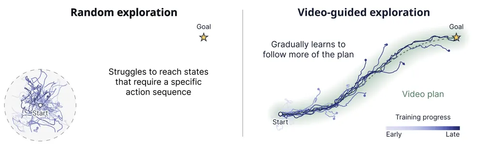
무슨 문제인가
video generative model을 visual planner로 써서 미지의 과제를 수행하는 방법을 영상으로 생성하는 접근이 떠오르고 있음. 하지만 이 영상을 로봇 행동으로 바꾸려면 전문가가 수집한 video-action 쌍 데이터로 video-to-action(V2A, inverse dynamics) 모델을 학습해야 함. 무작위 정책으로 환경을 돌려서는 로봇 파지나 Minecraft 다이아몬드 곡괭이 제작처럼 반드시 거쳐야 하는 핵심 전환 상태에 도달하지 못해 데이터를 스스로 모을 수 없음. 그 결과 video planner 기반 접근도 결국 VLA 모델과 같은 전문가 teleoperation 데이터 의존이라는 확장성 병목을 그대로 물려받음.
어떻게 푸나
Mirror는 video planner(VP)와 video-to-action(V2A) 모델 두 단계로 정책을 구성함. VP는 현재까지의 관측과 과제 설명을 받아 다음 관측을 예측하는 visual plan을 생성하고, V2A는 과거 관측과 이 plan을 함께 보고 행동을 예측함. 데이터 수집 중에는 V2A 출력에 탐색 noise를 더해 행동을 샘플링하고, 환경에서 실행해 얻은 실제 전이를 replay buffer에 저장함. V2A는 planner가 계획한 미래가 아니라 실제로 도달한 다음 관측을 목표로 행동을 예측하도록 학습되므로, 계획과 다르게 실행된 경우도 유효한 학습 데이터가 됨. V2A가 아직 배우지 못한 지점에서는 노이즈가 우연히 정답 행동을 만들어낼 때까지 planner가 같은 전환을 반복해서 다시 계획하고, 정답 전이가 buffer에 들어가면 다음부터는 그 지점을 통과할 수 있게 됨. Minecraft에서는 VPT(인간 플레이 영상으로 사전학습한 데이터셋) 영상 2,946시간으로 VP를 학습함. 14B 파라미터 Cosmos3 기반에 block causal KV cache와 sliding window attention을 적용해 재계획 비용을 일정하게 유지함.
결과
- Minecraft Diamond Challenge online 설정(보상·전문가 행동 label 없이 10M step, 약 140시간 상호작용)에서 iron pickaxe 획득률이 15.6%로, 같은 step 수를 쓰는 Dreamer V3의 1.7%보다 높음. Dreamer V3는 task reward와 단순화된 크래프팅, 가속된 채굴을 썼는데도 더 낮은 수치를 보임.
- offline 설정(VPT 전문가 행동 label 2.5~3천 시간, 환경 상호작용 없음)에서 다이아몬드 획득률이 5.5%로, 기존 최고 world-model agent인 Dreamer V4의 0.7%보다 약 8배 높음.
- BASALT(Minecraft 자연어 목표 과제 모음) MakeWaterfall 성공률이 36%로, action label 없이 학습한 VIPER의 0%, action label을 쓴 KAIROS·BC·UniTeam의 0%보다 높음. 학습된 행동만으로 이 과제에서 0%를 넘은 첫 사례임.
- oracle video planner(전문가 정책이 만든 미래 영상)를 쓰면 Atari 7개 게임 평균 점수가 전문가 대비 99%로, 학습된 generative VP를 쓸 때의 62%보다 높음. 현재 성능이 V2A 학습이 아니라 video planner의 정확도로 제한됨을 보여줌.
한계
고수준 subgoal planner 없이는 다이아몬드 획득까지 이어지는 한 시간짜리 horizon을 다루지 못해 별도의 heuristic subgoal planner를 수작업으로 붙임. self-improvement만으로는 iron pickaxe까지만 도달하고 다이아몬드는 얻지 못함. 로봇 조작 벤치마크(OGBench, DMC, Atari)에서는 사람 플레이처럼 다양한 실수와 복구가 담긴 데이터가 없어 DAgger로 복구 데이터를 추가로 모아야 했음.
누리랩 연구와의 연결
- video-to-action 모델을 action label 없이 self-play만으로 학습시키는 방식은 VLA의 inverse dynamics 학습 비용을 줄이는 대안으로 검토할 만함.
- video planner(world model)와 V2A를 분리한 구조는 world model 정확도가 낮아도 탐색 신호로는 쓸 수 있다는 점에서 test-time optimization·imitation learning 연구에 비교 대상이 됨.
2
83점
Train An Imaginative Agent
World Model
relevance 7/10
ICLR 양식 (추정)
Artificial Intelligence (cs.AI)
Agima는 action을 제안하는 policy와 그 결과를 상상하는 world model을 omni model 하나로 합쳐, 실행 전에 미래 관측을 상상하고 그 위에서 계획하게 학습시킴. 2개 상자 Sokoban으로만 SFT한 모델이 4개 상자 과제에서 K=5 조건 기준 40% 성공률을 냄(action-only 모델은 2%).
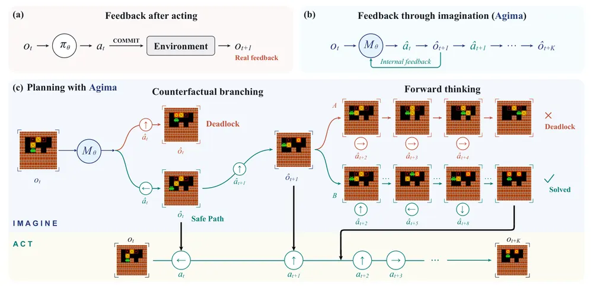
무슨 문제인가
Sokoban처럼 되돌릴 수 없는 행동이 있는 환경에서는, 겉보기에 합리적인 push가 퍼즐을 풀 수 없게 만들 수 있음. 기존 agent는 환경에 실제로 행동을 해 본 뒤에야 피드백을 받거나, world model을 policy와 분리된 외부 모듈로 써서 tree search 등으로 결합함. 최근 이미지 추론 연구(Visual Sketchpad, MVoT 등)는 생성된 이미지를 중간 사고에 쓰지만 여러 후보 행동을 비교하는 데는 쓰지 않음. 환경 상호작용이 비싸거나 행동이 되돌릴 수 없을 때, 행동을 실행하기 전에 결과를 미리 상상해 비교할 방법이 필요함.
어떻게 푸나
Agima는 BAGEL omni model(14B 총 파라미터, 7B active)을 backbone으로 써서 같은 모델이 policy와 world model 역할을 모두 함. 먼저 SFT 단계에서 action 제안과 예측 이미지를 번갈아 생성하는 interleaved sequence로 학습함. 세 가지 trace 유형을 씀. linear rollout은 행동과 예측을 번갈아 이어감. counterfactual branching은 현재 경로를 유지하면서 특정 지점에서 대안 행동 하나를 상상해 보고 실패로 이어지면 버림. forward thinking은 여러 완전한 후보 계획을 끝까지 상상해 비교한 뒤 실행할 계획을 고름. 텍스트는 cross-entropy, 이미지는 MSE로 학습함. 이후 GRPO를 쓴 agentic RL 단계에서는 모델이 실제 환경 관측 없이 전체 계획 trace를 생성하고, 선택한 행동을 실제로 실행해 성공 여부로 binary reward를 받음. RL은 텍스트 토큰만 업데이트하고, 생성된 이미지는 context로만 남음.
결과
- K=3 조건(3개 행동마다 실제 관측 1회)의 Sokoban hard split 전체 평가에서 성공률이 action-only 모델(Agima-A7B No Imagine) 10%에서 Agima 53%로 오름. 2개 상자로만 학습해 4개 상자 과제로 일반화하는 K=5 조건만 따로 보면 action-only 모델 2%에서 Agima 40%로 오름.
- 상상한 이미지를 실제로 쓰는지 확인하는 ablation에서, 자기 예측을 쓰면 Sokoban 성공률 40%, 예측을 빈 이미지로 바꾸면 1%, 직전 관측을 그대로 반복하면 0%, 정답 이미지로 바꾸면 43%로 나와서 예측 내용 자체가 성능에 쓰임을 보임.
- Forward thinking을 추가하면 Sokoban Deadlock 2개 상자 성공률이 linear rollout 대비 22%에서 60%로, Pacman G8/F4 과제는 22%에서 54%로 오름.
- forward thinking에서 두 번째 후보를 상상한 경우만 따로 보면, 그중 첫 번째 계획이 실패로 예측된 경우의 비율이 RL 이전 32%에서 RL 이후 100%로 오름. 이는 필요할 때만 추가 상상을 쓰는 행동이 학습됨을 보임.
한계
네 환경(Maze2D, Sokoban, Pacman, PushT) 모두 시뮬레이션이고 실로봇 검증은 없음. 정답 이미지를 쓴 Oracle GT 조건이 자체 예측보다 환경별로 최대 수십 퍼센트포인트 더 높아(Pacman 37%→81%, Maze2D 40%→69%, PushT 18%→47%), world model 예측 정확도가 여전히 성능 상한을 제약함. 매우 긴 open-loop 계획(K=∞)에서는 성능과 action-only 대비 이득이 모두 줄어듦.
누리랩 연구와의 연결
- world model을 policy 학습이 아니라 실행 전 counterfactual 비교와 forward 계획 평가에 쓰는 구조임. test-time optimization/inference-time planning과 counterfactual reasoning 연구에 직접 참고할 수 있음.
- 실로봇 검증과 VLA에의 적용은 이 논문에 없어서, 누리랩에서 이어가려면 실제 manipulation action space로 옮기는 작업이 필요함.
3
80점
VaDar: Implicit Goal Conditioning via Value Disaggregation
RL
relevance 8/10
ICLR 양식 (추정)
Machine Learning (cs.LG)
장기 과제를 subgoal로 쪼개 학습할 때, policy는 subgoal과 무관하게 두고 critic만 모든 subgoal에 대해 학습시켜 집약하는 방식(VaDar, Value Disaggregation)을 제안함. ROBOCASA365의 PreSoakPan에서 가장 강한 baseline iHGC 대비 성공률이 거의 두 배에 이르는 등, subgoal 정보 없이 배포 가능한 policy로는 VaDar가 유일하게 수렴함.
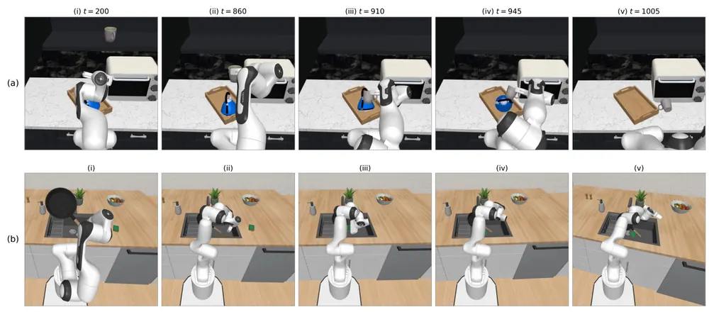
무슨 문제인가
장기 수평(long-horizon) manipulation 과제는 sparse reward 환경에서 어떤 action이 성공에 기여했는지 가리는 credit assignment가 어려움. 기존 hierarchical goal conditioning(HGC)은 policy와 critic을 모두 현재 subgoal로 condition시킴. 그래서 배포 시마다 정확한 subgoal을 매 스텝 알려줘야 하고, 이를 위해 비용이 크거나 번거로운 VLM 호출 같은 subgoal 판정이 필요함. 현재 subgoal만 최적화하면 이후 subgoal 수행을 해치는 myopic 행동이 나오고, subgoal이 선형 순서를 가져야 한다는 제약도 있음.
어떻게 푸나
VaDar는 state s, action a, 환경이 정의한 subgoal 집합 G 각각의 완료 여부(done_g)를 입력으로 받음. critic Q(s,a,g)를 모든 subgoal g에 대해 동시에 학습시켜(all-subgoal critic supervision), 하나의 transition마다 |G|개의 TD target을 만듦. policy π(a|s)는 subgoal에 무관한 단일 policy로, 여러 subgoal critic 값을 가중합한 Q_agg = sum_g w[g]Q(s,a,g)를 최대화하도록 학습됨. 가중치 w는 현재 완료된 subgoal 벡터로부터 계산되며, 기본값인 next-future 가중치는 다음 subgoal 이후의 미완료 subgoal 전부를 반영함. 완료된 subgoal의 critic target은 c_clip*r_done으로 clipping해 값이 무한정 누적되는 것을 막음. 배포 시에는 subgoal 정보가 critic 학습에만 쓰이고 policy는 subgoal 입력 없이 바로 action을 냄.
결과
- ROBOCASA365(장기 수평 주방 조작 과제 모음) LoadDishwasher에서 VaDar가 수렴하는 유일한 방법임. iHGC는 Implicit Hierarchical Goal Conditioning의 약자로, policy는 subgoal-agnostic으로 두고 critic만 goal-conditioned로 두는 변형임. HGC, iHGC, Sparse, Dense preference reward baseline은 수렴하지 못함.
- ROBOCASA365 PreSoakPan에서 VaDar의 성공률이 가장 강한 baseline iHGC의 거의 두 배에 이름(정확한 퍼센트는 본문에서 확인 불가, 그래프 비교).
- frozen behavior-cloning policy에 critic만으로 action을 고르는 best-of-N(N=4) steering 실험을 함. 가장 큰 critic 학습 budget 기준 ArrangeTea 성공률이 Sparse critic 23%에서 VaDar critic 55%로 오르고, Tool-Hang은 Sparse critic 44%에서 VaDar critic 77%로 오름.
- 최종 subgoal 값만 policy extraction에 쓰고 critic은 전체 subgoal로 학습하는 VaDarLast-Q가 ROBOCASA365에서 Sparse baseline을 크게 앞섬. 이는 중간 subgoal supervision 자체가 critic 학습을 돕는다는 것을 보임.
한계
subgoal이 고정된 DAG(방향성 비순환 그래프) 구조로 미리 주어져야 하고, 이미지나 텍스트로 표현되는 연속적인 목표 공간으로는 아직 일반화하지 못함. 실험은 ROBOCASA365, ROBOMIMIC, LIBERO, OGBench 등 시뮬레이션 벤치마크에서만 이뤄졌고 실로봇 검증은 없음. VLM이 제공한 subgoal label로도 학습되지만 oracle supervision 대비 sample efficiency는 다소 낮아짐.
누리랩 연구와의 연결
- subgoal 정보를 critic 학습에만 쓰고 policy는 subgoal-agnostic으로 두는 설계는 test-time optimization에서 VLM 호출 비용을 줄이는 방향과 직접 연결됨.
- critic에 대한 dense multi-resolution supervision은 policy 품질과 독립적으로 critic 품질을 올림. 이 결과는 failure detection이나 best-of-N steering처럼 critic만 따로 쓰는 연구에 참고할 수 있음.
4
79점
Ropedia W0: Scaling Loco-Manipulation World Models across Embodiments with Human Experience
World Model
relevance 10/10
Computer Vision and Pattern Recognition (cs.CV)
사람 영상과 로봇 영상을 하나의 egocentric world model로 묶어 loco-manipulation 미래 영상을 예측함. camera pose와 투영된 skeleton이라는 공통 조건 표현으로 사람 1만 시간, 로봇 3천 시간 영상을 함께 학습시켜 5개 cross-embodiment 벤치마크에서 state-of-the-art를 달성함.
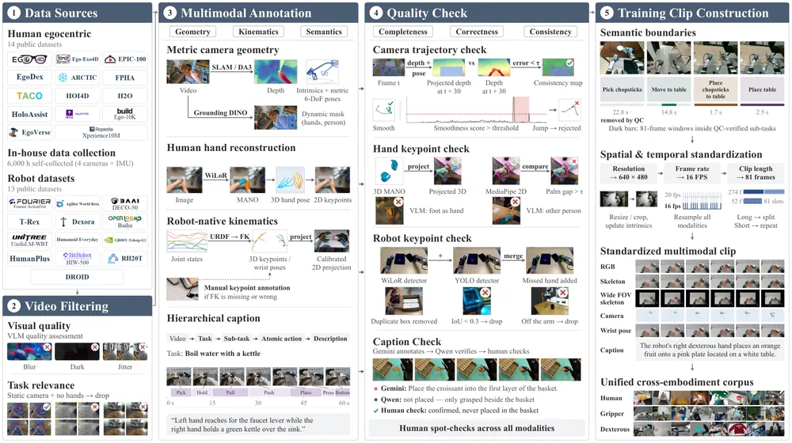
무슨 문제인가
기존 world model은 고정 base의 gripper manipulation에 집중되어 있어 locomotion에 따른 시점 변화와 dexterous hand 상호작용을 함께 다루지 못함. embodiment마다 action space가 달라 cross-embodiment 일반화도 어려움. DreamDojo는 post-training마다 로봇별 latent action 조건을 따로 붙이고 Cosmos3는 embodiment별 action projection을 따로 둬야 함. 사람 영상은 풍부하지만 공개 데이터셋 대부분이 metric camera trajectory가 없거나 손 pose가 부정확해 world model 학습에 바로 쓰기 어려움.
어떻게 푸나
Ropedia W0은 locomotion을 카메라 pose로, manipulation을 투영된 skeleton으로 표현하는 공통 kinematic interface를 써서 사람과 로봇 영상을 같은 조건 형식으로 학습함. skeleton은 사람 pose 추정과 로봇 forward kinematics(관절 각도로 손 위치 계산)에 사람이 직접 보정한 keypoint를 더해 만듦. 공개 사람 영상 데이터셋 14종과 로봇 영상 데이터셋 14종을 재주석하고, 4대 fisheye 카메라로 6천 시간을 직접 촬영해 Xp-Data(사람 약 1만 시간, 로봇 약 3천 시간)를 만듦. 영상 필터링, 카메라 궤적 검증, 손·로봇 keypoint 검증, caption 검증(Gemini가 쓰고 Qwen이 확인한 뒤 사람이 최종 확인)으로 이어지는 품질관리 파이프라인을 거침. 학습은 사람 영상 pretraining, 사람+로봇 midtraining, 선택적 post-training 순서로 진행하며, 입력은 초기 프레임과 카메라·skeleton 조건이고 출력은 미래 egocentric 영상 프레임임.
결과
- WorldArena Track1(RoboTwin2.0 시뮬레이션 조작 과제 1000 episode)에서 EWMScore(15개 세부 평가 지표의 평균)를 봄. 비교 모델 BWM+SR의 61.01에서 Ropedia W0(A14B, active parameter 14B 모델)의 66.92로 오름. 15개 세부 지표 중 Trajectory Accuracy가 34.64에서 63.78로 가장 크게 오름.
- 사람 pretraining 데이터를 1천 시간에서 1만 시간으로 늘리면 held-out 사람 영상 예측 품질(GR-1 in-lab PSNR)이 19.81dB에서 21.74dB로 오름. 동시에 로봇 영상 예측 오차(Unitree G1 LPIPS)도 0.427에서 0.365로 낮아짐.
- skeleton 조건을 빼면 cross-embodiment set(8개 embodiment, 평가 윈도우 400개)에서 PSNR이 A14B 기준 21.98dB에서 18.17dB로 낮아짐. 카메라 pose(Plücker) 조건을 빼면 21.65dB로 덜 낮아져, skeleton 조건이 더 중요함.
- GR-1 데이터 1%만으로 post-training했을 때, 공개 video-generation weight(Wan2.2)로 초기화하면 PSNR 16.04dB, Ropedia W0으로 초기화하면 20.85dB로 더 적은 데이터로도 더 정확함.
한계
제공된 원문 텍스트는 분량 제한으로 본문 중간(section 4의 주요 cross-embodiment 비교 서술, section 6 응용 서술)이 생략되어 있어 메인 Table 1-5의 전체 비교는 본문에서 확인 불가함. 저자는 kinematic interface가 카메라와 manipulator 동작만 포착하고 물리적 접촉이나 object dynamics는 모델링하지 않는다고 밝힘. 학습한 모델은 최대 14B active parameter 규모와 고정된 데이터 mixture로 한정되며, distillation한 실시간 student 모델의 긴 rollout 안정성은 추가 memory 메커니즘 없이는 제한적이라고 서술함.
누리랩 연구와의 연결
- 사람 영상으로 world model을 cross-embodiment로 scale-up하는 접근은 world model 데이터 효율성 비교의 기준점으로 쓸 수 있음.
- camera pose와 skeleton을 묶은 unified kinematic representation은 locomotion과 manipulation을 함께 조건화하는 object-centric/scene representation 설계의 참고 사례가 됨.
5
78점
DialogMem: Evaluating Dialogue-Grounded Embodied Memory in 3D Environments
Embodied AI
relevance 7/10
Artificial Intelligence (cs.AI)
로봇이 사람과 나눈 대화를 물체 단위 memory에 결합해 navigation과 QA에 쓸 수 있는지를 재는 벤치마크 DialogMem을 제안함. 평가 시점에 대화 전체를 시각 memory에 덧붙이면 3D-Mem 기준 QA 성능은 35.1점에서 63.4점으로 오르지만 navigation 성공률은 31.0%에서 31.1%로 거의 그대로임.
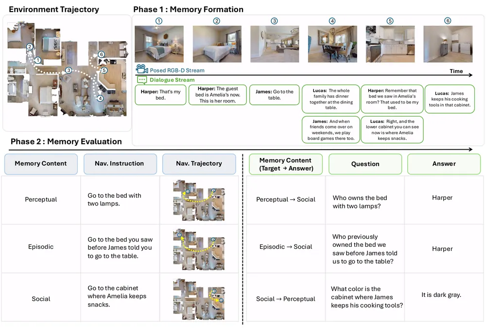
무슨 문제인가
로봇이 사람 중심 환경에서 오래 작동하려면 자신이 본 것뿐 아니라 사람이 말해준 것도 기억해야 함. 그런데 기존 embodied memory benchmark와 방법은 대부분 RGB-D 관측과 pose만으로 memory를 구성하고, 대화에서 나온 물체 정보(소유자, 용도, 수정 사항 등)는 명시적으로 담지 않음. 대화를 memory formation 시점이 아니라 task 수행 시점의 맥락으로만 쓰는 기존 연구는, 대화 내용이 시간이 지나도 특정 물체에 계속 연결되어 남아야 하는 상황을 다루지 못함. 대화를 물체 수준으로 접지해 memory에 담고 이후 navigation과 QA에 쓰는 방법은 아직 체계적으로 평가된 적이 없음.
어떻게 푸나
DialogMem은 두 단계로 구성됨. Phase 1에서 agent는 실제 스캔한 3D 환경(HM3D: 실내를 스캔한 3D 데이터셋 기반 27개 scene)을 돌아다니며 posed RGB-D 스트림과 시간 정렬된 dialogue 스트림을 동시에 받아 memory M_T를 만듦. memory 내용은 물체 외형·공간관계인 perceptual, 관측 순서·빈도인 episodic, 소유자·용도·수정 이력 같은 dialogue 유래 정보인 social 세 종류로 나뉨. Phase 2에서는 이 memory에 instance-level navigation 지시문과 QA 질문을 던져, retrieval 함수가 관련 증거를 고르고 고정된 VLM reasoner(Qwen3-VL-4B)가 목적지 위치나 답을 냄. 저자들은 raw stream 저장, ConceptGraph·3D-Mem 같은 구조화된 visual memory를 기본으로 둠. 거기에 대화를 평가 시점에 덧붙이는 방식(CG+Dialogue, 3D-Mem+Dialogue)을 더함. formation 시점에 CLIP·VLM linker로 특정 snapshot에 연결하는 방식(linked dialogue)까지 합쳐 총 9개 memory representation을 같은 틀 안에서 비교함. 추가로 link 품질을 0~100%로 직접 조절하는 sweep과, 정답 물체 항목·위치를 직접 주는 oracle probe로 실패 원인을 grounding, retrieval, localization 세 단계로 분해함.
결과
- 9개 memory representation 중 QA와 navigation을 둘 다 잘하는 것은 없음. Dialogue만 저장하면 QA는 56.5점이지만 pose가 없어 navigation은 아예 못함.
- 평가 시점에 전체 대화를 시각 memory에 덧붙이면 3D-Mem 기준 QA가 35.1점에서 63.4점으로 크게 오르지만, navigation geodesic 성공률은 31.0%에서 31.1%로 거의 변화 없음(McNemar 검정 p=0.42).
- formation 시점에 대화를 snapshot에 연결하는 CLIP·VLM linker도 navigation을 3D-Mem의 31.0%에서 각각 30.6%, 30.8%로 올리지 못함. link 품질을 직접 조절한 sweep에서는 link 품질이 100%(완벽한 연결)여도 navigation이 39.3%에 그쳐, ground-truth object-level memory(96.2%) 수준에 못 미침.
- grounding oracle(물체마다 ground-truth metadata를 snapshot에 직접 붙임)은 navigation을 44.1%로 끌어올림. retrieval oracle(정답 물체 항목을 직접 골라줌)은 56.6%로, localization oracle(정답 위치까지 줌)은 96.2%로 끌어올려, grounding·retrieval·localization 세 단계가 각각 별도의 병목임을 보임.
한계
dialogue는 구조화된 사양에서 LLM으로 생성한 것이라 실제 사람 대화의 모호함·잡음·역동성을 다 담지 못함. HM3D 실제 스캔 환경을 쓰지만 평가는 pose 잡음이 없는 시뮬레이션에서 이뤄져 실로봇으로 바로 옮겨지는지는 확인되지 않음. 새 memory representation을 제안하지 않고 기존 9개를 진단만 했고, oracle probe는 각 구성요소의 상한만 보여줄 뿐 이를 한꺼번에 달성하는 설계는 향후 과제로 남김.
누리랩 연구와의 연결
- robot memory 연구에서 대화 기반 정보를 object-level로 접지하는 것이 핵심 병목이라는 것을 수치로 보여줘, 누리랩의 robot memory·scene graph 연구에 바로 쓸 평가 틀이 됨.
- grounding, retrieval, localization을 oracle probe로 분해한 진단 방식은 failure detection·diagnosis 연구에서 memory 실패를 단계별로 나누는 방법론으로 참고할 만함.
6
76점
Latent World Models Should Plan with Distances Along the Latent Manifold
World Model
relevance 8/10
ICLR 양식 (추정)
Machine Learning (cs.LG)
latent world model이 목표와의 거리를 잴 때 쓰는 Euclidean 거리(L2 cost)가 목표에서 멀어지면 가짜로 낮은 cost를 만드는 함정을 밝힘. 학습된 latent 위에 neighbor graph를 만들어 최단경로 거리로 바꾸는 Neighborhood Graph Cost(NGC)만으로 재학습 없이 TwoRoom과 Reacher의 최장거리 성공률을 27%, 81%에서 94.6%, 99.4%로 올림.
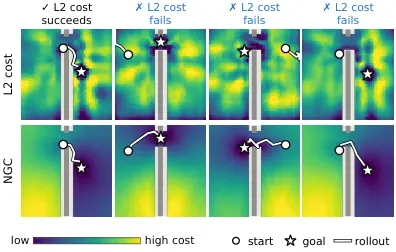
무슨 문제인가
latent world model로 목표 관측을 향해 planning할 때는 예측한 미래 latent와 목표 latent 사이 거리(주로 L2)를 비용으로 써서 CEM 같은 planner가 가장 가까운 행동열을 고름. 이 방식은 latent 공간에서 가까우면 환경에서도 가깝다는 가정에 의존함. LeWM이라는 end-to-end latent world model을 분석한 결과 이 가정은 목표 근처에서만 성립함. TwoRoom처럼 agent의 2차원 위치만으로 관측이 정해지는 단순 과제에서도 목표에서 75 step 멀어지면 성공률이 30% 아래로 낮아지고, 실패한 episode마다 agent가 목표에서 먼 엉뚱한 영역에 갇힘.
어떻게 푸나
저자들은 먼저 TwoRoom의 모든 격자 위치에서 L2 cost map을 그려, 목표 근처에는 정상적인 저cost 영역(basin)이 생기지만 먼 곳에는 가짜로 cost가 낮은 영역이 따로 생긴다는 것을 보임. Isomap, t-SNE, UMAP처럼 이웃 관계를 보존하는 차원축소는 latent를 물리적 위치 그대로 펼쳐내지만, PCA나 metric MDS처럼 전역 Euclidean 거리를 보존하는 방법은 서로 멀리 떨어진 영역을 latent 공간에서 가깝게 겹쳐 놓음. 여기서 latent가 굽은 저차원 manifold 위에 있고 cost는 ambient 공간이 아니라 이 manifold를 따라 측정해야 한다는 가설을 세움. 이를 추정하기 위해 Neighborhood Graph Cost(NGC)를 제안함. 학습 데이터의 latent들을 mutual 15-nearest-neighbor graph로 연결하고, 목표 latent와 각 후보의 예측 terminal latent를 이 그래프에서 가장 가까운 4개 node에 붙인 뒤 최단경로 길이를 비용으로 씀. encoder와 predictor는 그대로 두고 terminal cost만 바꾸므로 추가 학습이 필요 없음.
결과
- TwoRoom과 Reacher에서 가장 먼 목표 offset 기준 성공률이 L2 cost의 27%, 81%에서 NGC의 94.6%, 99.4%로 오름.
- Cube와 PushT에서는 NGC가 가장 먼 offset에서 성공률을 각각 16, 15퍼센트포인트 올림. 다만 두 과제 모두 여전히 완전히 풀리지는 않음.
- 실제 환경에서 행동을 실행해 정확한 terminal latent를 주는 oracle predictor로 바꿔도 NGC가 L2 cost보다 9개 설정 중 8개에서 16~81퍼센트포인트 높아, 이득이 predictor 오차 보정이 아니라 cost 자체에서 옴을 확인함.
- CEM 후보 수를 기본값의 4배로 늘려도 L2 cost의 성공률은 최대 3.2퍼센트포인트만 오르는 반면, NGC는 online 계산 overhead가 CEM 1회당 7% 이내로 적음.
한계
평가가 모두 world model 학습에 쓰인 episode에서 뽑은 start-goal 쌍으로 한정되어, graph가 다루지 못하는 미지의 환경이나 목표로의 일반화는 검증하지 않음. 접촉이 일어나는 순간처럼 물리적으로 가까운 상태가 전혀 다르게 반응하는 경우(예: 큐브를 잡기 직전과 잡은 직후)는 같은 latent 이웃에 놓일 수 있어 cost만 바꿔서는 구분하지 못함. 실제로 Cube와 PushT는 oracle predictor를 써도 완전히 풀리지 않음. graph는 방향이 없는 구조라 접촉이 만드는 비대칭 전이도 표현하지 못함.
누리랩 연구와의 연결
- 재학습 없이 cost만 바꿔 latent world model의 planning 실패를 고쳤다는 결과는, test-time optimization/inference-time planning 연구에서 바로 참고할 수 있는 저비용 개입 사례임.
- latent 표현이 이웃 구조는 보존하지만 전역 거리는 왜곡한다는 분석 틀은 object-centric 3D representation이나 scene graph 연구에서 가져다 쓸 수 있음.
7
76점
AnyGoal: On World Model Generalization Beyond Expert Rollouts
World Model
relevance 5/10
ICLR 양식 (추정)
Artificial Intelligence (cs.AI)
world model이 학습 분포 안의 state·action 요소를 가지고도 처음 보는 조합(goal shift)에서는 동작을 잘 예측하지 못한다는 것을 AnyGoal이라는 벤치마크로 보임. Push-T로 학습한 world model을 목표만 바꾼 Avoid-T로 평가하면 LeWM의 planning 성공률이 84.70%에서 3.30%로 낮아짐.
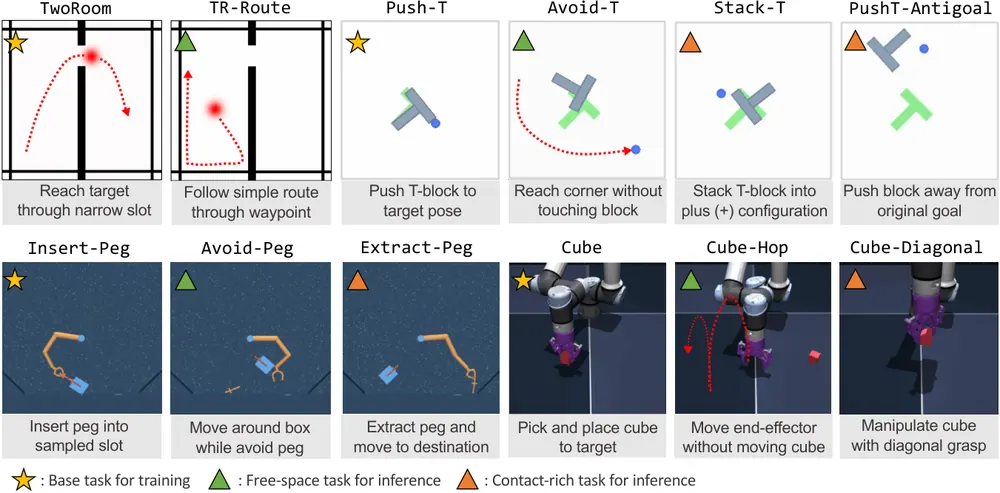
무슨 문제인가
world model은 agent planning에 쓸모 있으려면 학습에 쓰인 expert rollout에 없던 state-action 조합에서도 잘 동작해야 함. 그런데 offline 데이터는 보통 목표 지향적인 policy로 모이기 때문에 state와 action이 강하게 결합돼, 개별 state와 action은 익숙해도 그 조합은 학습 분포에 거의 없을 수 있음. 기존 OOD(out-of-distribution) 평가는 아예 새로운 state나 action을 넣는 방식이라 world model에 기대할 수 있는 일반화 범위를 넘어서는 경우가 많음. 그래서 요소 자체는 익숙하지만 조합만 낯선 상황에서 재사용 가능한 dynamics를 학습했는지는 체계적으로 재지 못했음.
어떻게 푸나
AnyGoal은 TwoRoom, Push-T, DMC Manipulator Insert-Peg, OGBench Cube라는 4개의 기존 world-model 환경을 바탕으로 함. 환경마다 목표만 바꾼 변형 과제를 만듦(환경당 free-space 변형 1개, contact-rich 변형 1~2개, 총 8개 변형). 각 변형은 state·action의 marginal support는 range, Mahalanobis, KDE 세 가지 검사로 학습 분포 안에 있음을 확인하되, state-action의 joint 분포는 학습 분포 밖에 있도록(combinatorial gap) 설계됨. 평가는 horizon 5·25 step의 autoregressive rollout 예측 오차(MSE)와 CEM 기반 MPC planning 성공률 두 가지를 봄. 시각 encoder의 실패와 dynamics 자체의 실패를 나누기 위해, 시각 입력 대신 물리적 state를 직접 받는 oracle-state predictor도 같이 평가함. 또한 학습 state에서 실제 취한 action 대신 다른 action을 끼워 넣었을 때 모델 표현이 얼마나 달라지는지 재는 action sensitivity 지표로, 모델이 behavior policy의 패턴에 편승하는지를 따로 짚음.
결과
- 비교한 기존 latent world model 3종(LeWM, Dino-WM, DriftWorld) 모두에서 Push-T로 학습한 world model을 목표만 바꾼 Avoid-T로 평가하면 planning 성공률이 크게 낮아짐. LeWM 84.70%에서 3.30%로, Dino-WM 74.00%에서 6.70%로, DriftWorld 43.40%에서 0.70%로 낮아짐.
- 시각 encoder 없이 물리 상태를 직접 받는 oracle-state predictor조차 contact-rich 변형에서는 성능이 크게 낮아져, rollout 예측 오차가 base 과제 대비 최대 100배 수준까지 늘어남. 반면 free-space 변형에서는 oracle predictor 성능이 유지되거나 오히려 좋아짐.
- TwoRoom처럼 관측이 시각적으로 학습 분포 안에 그대로 머무는 경우에도, end-to-end model(LeWM, IRASim 등)은 성능이 낮아지는 반면 oracle-state predictor는 안정적임. 이는 학습된 표현의 기하학적 구조 자체가 문제가 됨을 보임.
- action sensitivity 분석을 보면, expert rollout이 특정 state 구간에서 특정 action으로 강하게 편향될수록(TwoRoom의 좁은 통로 쪽 이동, Push-T의 접근-후-밀기 등) 모델이 그 구간에서 반응이 달라짐. 해당 구간에서 모델이 개입된 action에 덜 민감하게 반응함.
한계
이 논문은 실패를 진단하는 벤치마크와 분석이며, 이를 고치는 새 학습 방법은 제시하지 않음. 평가는 TwoRoom, Push-T, DMC Insert-Peg, OGBench Cube 4개 시뮬레이션 환경에서만 이뤄졌고 실로봇 검증은 없음. compositional generalization을 보장하는 이론적 조건(국소적 regime-dependent mechanism)은 제시하지만 실제 학습 objective나 architecture로 검증하지는 않음.
누리랩 연구와의 연결
- world model을 test-time planning·MPC에 쓸 때 학습 분포 밖 목표 조합에서 신뢰할 수 있는지를 직접 재는 진단 도구로, world model 연구의 평가 benchmark로 바로 쓸 수 있음.
- action sensitivity 지표는 world model이 behavior policy에 편승한 shortcut을 썼는지 가려내는 방법으로, failure detection 연구에 참고할 만함.
8
75점
BetaMem: Learning to Remember a Changing World for Embodied Agents
Embodied AI
relevance 8/10
Artificial Intelligence (cs.AI)
BetaMem은 embodied agent의 장기 기억을 working·spatial·entity·episodic·experiential·procedural 6개 층으로 묶음. 각 기록에 관측 시점·유효 구간·근거 source를 남긴 채 SFT와 RL로 기억 작성을 학습시키며 실패 기반으로 기억 정책 자체도 갱신함. 9B Qwen3.5로 기억을 생성해 LoCoMo 92.08% 등 4개 QA 벤치마크에서 비교 대상 중 가장 높은 점수를 냄. 학습 후 write contract 통과율은 50.9%에서 86.2%로 오르고 기록당 출력 토큰은 47.3% 줄어듦.
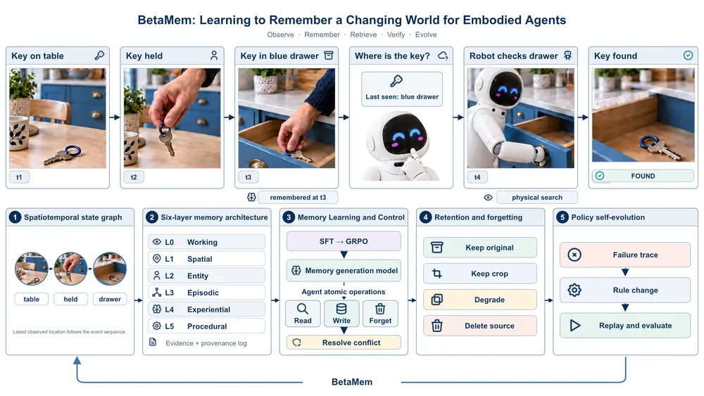
무슨 문제인가
장기간 동작하는 embodied agent는 과거 관측과 현재 상태를 혼동하거나, 일부 사건을 빠뜨리거나 왜곡해 기록하는 문제를 겪음. 또 한 번 틀린 기록을 고쳐도 기억을 쓰는 규칙 자체는 그대로 남아 같은 오류가 반복되고, 연속적인 센서 스트림이 쌓이면서 저장·조회 비용도 계속 늘어남. 기존 embodied memory 연구는 장소·시간·entity로 관측을 조직해 검색에 씀. 다만 기록이 실제 근거로 뒷받침되는지 검증하거나, 실패로부터 기억 정책(쓰기·보존·검색 규칙) 자체를 고치거나, 저장과 조회 자원을 예산 아래 배분하는 부분을 함께 다루지는 않음.
어떻게 푸나
BetaMem은 기억을 L0(working)부터 L5(procedural)까지 6개 층으로 연결해 구성함. 각 기록은 entity·field·value에 더해 공간 맥락, 유효 구간·관측 시각·수정 시각, 신뢰도, source id, 상태(관측됨·추론됨·충돌·stale 등)를 가짐. 9B 규모 Qwen3.5 기반 memory generation model을 두 단계로 학습함. SFT는 teacher가 생성하고 26개 규칙으로 점검한 action list로 형식이 맞는 기록을 만들도록 가르침. 이어 GRPO 단계에서는 같은 관측 window에 대해 여러 후보 write action list를 샘플링한 뒤 별도 teacher 모델(qwen3.7-max)이 원본 프레임을 다시 봐서 각 후보의 근거를 검증함. 완전하고 정확한 기록에는 보상을, 누락·중복·근거 없는 기록에는 벌점을 줌. 별도로 실패 기반 policy 자기개선(RSI) 루프는 답변 실패를 쓰기·보존·검색·검토·유효성 규칙 중 어디서 비롯됐는지 진단함. 해당 규칙만 국소적으로 고친 후보를 만들어 held-out episode에서 독립적으로 재실행(replay)해 목표 성능이 오르고 비용·오류 기준을 만족할 때만 새 정책으로 승격함. 저장·검색·보존·삭제는 8개의 atomic read/write/manage/report 인터페이스로 노출되고, 비용-효용 기준에 따라 원본 유지·crop·degrade·삭제 중 선택함.
결과
- 9B Qwen3.5로 기억을 생성한 조건에서 M3-Bench-robot(로봇 영상 기반 cross-modal·multi-hop QA 벤치마크)은 48.08%를 기록함. LoCoMo(장기 멀티세션 대화 기록 기반 QA 벤치마크)는 92.08%(4개 비적대적 카테고리, LLM-judge)를 기록함. OpenEQA EM-EQA(실내 scene 기반 embodied QA 벤치마크)는 72.6%(LLM-Match), EgoLifeQA(A1-JAKE, 여러 날에 걸친 egocentric memory QA 벤치마크)는 62.4%(exact-match)를 기록함. 네 벤치마크 모두 비교한 기억 방법들 중 가장 높음.
- 기억 생성 모델 학습 효과로 write contract 통과율이 50.9%에서 86.2%로 오르고, 저장된 action 한 건당 출력 토큰 수는 47.3% 줄어듦.
- 별도로 Qwen3-VL-8B-Instruct를 써서 interactive task benchmark인 EMem-Bench(2,554개 episode)에서 평균 success rate 38.4%, 평균 error recurrence rate 24.9%를 기록함. 비슷한 크기의 open-source 모델 중 가장 좋은 성능임.
한계
비교 대상 memory 방법들은 저자가 직접 재구현한 것으로 보이며, 독립적인 재현 검증은 본문에서 확인 불가. 모든 평가는 QA 벤치마크나 시뮬레이션 interactive task이고 실로봇 실험은 없음. 저자 스스로 한계를 밝힘. entity association·map alignment·visual interpretation이 함께 실패할 수 있고, semantic validator가 잘못된 proposer 제안에 동의할 수 있고, 분포가 바뀌면 review value 예측이 신뢰하기 어려움.
누리랩 연구와의 연결
- robot memory를 근거 연결(evidence-grounded)과 실패 기반 policy 자기개선 구조로 formulate한 사례로, 누리랩의 robot memory·failure detection/recovery 연구와 직접 연결됨.
- 실패 추적(failure trace) 진단부터 국소 규칙 수정, 독립 replay 승격까지 이어지는 RSI 루프는 test-time optimization·continual learning 연구에서 비교 설계로 참고할 수 있음.
9
73점
Progress-Guided Preference Generation for Aligning Generative Control Policies
RL
relevance 9/10
CoRL 2026 채택
Machine Learning (cs.LG)
PGPG는 사람이 라벨을 달지 않고도 자율적으로 모은 rollout이 소수의 expert demonstration 대비 얼마나 순서대로 진전됐는지를 측정해 preference label을 자동으로 만듦. 이렇게 만든 label로 generative policy(diffusion·flow-matching)를 fine-tuning해 Robomimic 5개 과제에서 base policy 대비 성공률을 예를 들어 Lift 44.0%에서 96.7%로 올림.
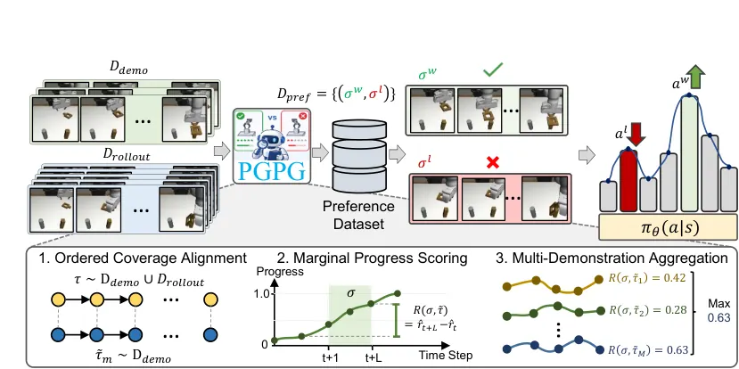
무슨 문제인가
Behavior cloning은 expert demonstration으로 강한 초기 policy를 만들지만 분포가 바뀌면 성능이 크게 낮아지고, demonstration이 적거나 질이 낮으면 특히 취약함. Preference 기반 fine-tuning은 사람이 만든 보상함수 없이 suboptimal rollout도 활용할 수 있음. 다만 기존 방법들은 대량의 사람 라벨링에 크게 의존해 diffusion·flow-matching 같은 generative control policy로 확장하기 어려움. 사람 개입 없이 자율 수집 rollout에서 의미 있는 preference 신호를 뽑아내는 방법이 필요함.
어떻게 푸나
PGPG(Progress-Guided Preference Generation)는 rollout이 소수의 expert demonstration 대비 시간 순서대로 얼마나 진전됐는지를 잼. 이 진전도는 ordered coverage alignment(ORCA)라는 동적 계획법으로 계산함. ORCA 점수는 누적(단조증가)값이라 그대로 두 구간(segment)의 합을 비교하면 중복 계산이 생김. 그래서 저자들은 연속 시점 간 차분을 취해 순간 보상으로 바꾸고(Marginal Progress Scoring), 이 경우 한 segment의 점수는 끝 시점과 시작 시점의 ORCA 값 차이로 간단히 계산됨(telescoping sum). 두 segment 중 점수가 더 높은 쪽을 preferred, 낮은 쪽을 rejected로 표시하되 점수 차가 임계값 ε_σ보다 작으면 모호한 쌍으로 버림. 한 과제에 여러 유효한 전략이 있을 수 있으므로, 하나의 segment를 M개의 reference demonstration 각각에 대해 점수를 매긴 뒤 평균이 아니라 최댓값을 취해(max-pooling), 어느 한 전략만 따라가도 보상받게 함. 이렇게 만든 preference dataset으로 CPL(contrastive preference learning) objective를 씀. reward model 없이 pretrained diffusion·flow-matching policy를 바로 fine-tuning함.
결과
- Robomimic에서 demonstration 120개와 rollout 500개로 학습함(diffusion policy 기준). base policy 대비 PGPG fine-tuning 후 성공률이 Lift 44.0%에서 96.7%로, Can 42.7%에서 89.3%로, Square 39.3%에서 72.0%로 오름.
- sequence-matching metric을 바꾼 ablation에서, ORCA에 Marginal Progress Scoring을 결합한 PGPG 방식이 Lift 96.7%를 냄. 대체 지표인 DTW(dynamic time warping)+MPS 80.0%, Temporal OT(optimal transport)+MPS 82.0%보다 높고, Square·Transport·ToolHang에서도 대체로 더 높음.
- demonstration을 40개로 줄여도 Lift 95.3%, Can 88.0%로 성능이 거의 유지됨. demonstration 없이 rollout만 쓴 조건(0개)에서도 base policy 대비 Can이 42.7%에서 64.7%로, Square가 39.3%에서 51.3%로 오름.
한계
저자가 직접 밝힌 한계로, PGPG는 R3M 같은 pretrained visual encoder의 강건성에 크게 의존하고, 시각적 sequence matching은 심한 가림(occlusion)에서 과제를 잘못 판단할 수 있음. Marginal Progress Scoring은 목표를 향한 대체로 단조로운 진행을 가정하므로, 전략적으로 되돌아가야 하거나(backtracking) non-quasistatic한 움직임이 필요한 장기 과제에는 잘 안 맞을 수 있다고 밝힘. 실험은 Robomimic 시뮬레이션 5개 과제에 한정되며 실로봇 검증은 본문에서 확인 불가.
누리랩 연구와의 연결
- 사람 라벨이나 보상함수 설계 없이 rollout으로부터 preference를 자동 생성하는 방식은, test-time optimization이나 RL/IL 기반 policy 개선 연구와 직접 연결됨.
- ORCA 기반 progress 측정은 현재 rollout이 목표에 얼마나 가까운지를 reward-free로 판단하는 신호로, world model·counterfactual reasoning 연구에서 참고할 수 있음.
10
72점
VLA-Rolling: Fewer Denoising Steps, Better Control via Adaptive Action Reuse
VLA
relevance 9/10
Artificial Intelligence (cs.AI)
VLA-Rolling은 receding-horizon 실행에서 매번 버려지던 action chunk의 미실행 구간(action tail)을 다음 denoising의 시작점으로 재사용함. 신뢰도 추정기로 renoising 강도와 denoising step 수를 조절함. π0.5·SmolVLA·X-VLA·MolmoAct2를 4개 벤치마크에 적용한 16개 조합 전부에서 추론 비용을 최대 32.52% 줄이면서 14개 조합에서 성공률도 최대 15.08퍼센트포인트 올림.
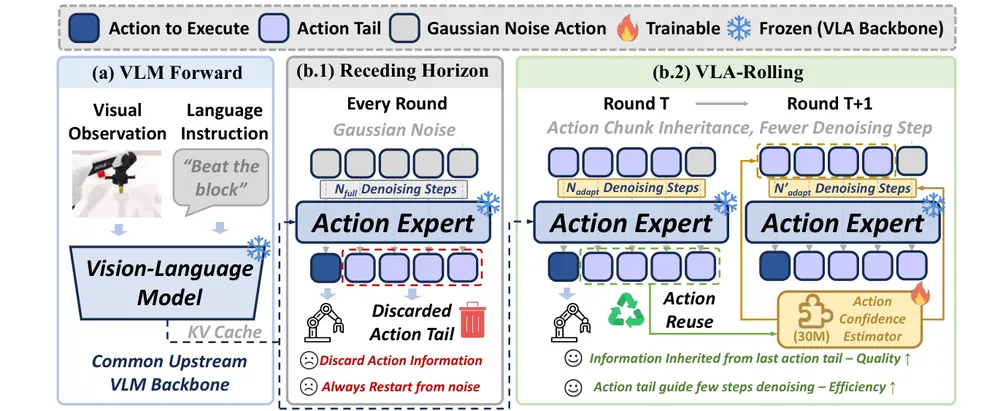
무슨 문제인가
Flow-matching VLA는 action chunk를 Gaussian noise에서 반복적으로 denoising해 만들지만, receding-horizon 실행에서는 그중 일부만 실행하고 새 관측으로 다시 계획함. 이때 실행되지 않고 남은 구간(action tail)은 버려지고 다음 chunk는 다시 순수 noise에서 시작함. 그런데 저자들의 통계로는 10 step 실행 구간 안에서 인접 관측의 이미지 cosine 유사도가 0.95 이상으로 환경이 크게 변하지 않아서, 버려지는 action tail에 이미 완료된 denoising 연산이 낭비되고 있음. 다만 action tail을 몇 step만 더 정제하면 충분한지는 sample마다 크게 달라서(최적 denoising step이 1~10 전 구간에 분포) 고정된 step 수로는 재사용을 안정적으로 쓸 수 없음.
어떻게 푸나
VLA-Rolling은 세 단계로 동작함. 첫째, action-tail inheritance 단계에서 이전 라운드의 action tail을 다음 planning window 시점에 맞춰 시간 정렬함. 둘째, 약 30M 파라미터의 action confidence estimator가 각 action 위치별 신뢰도를 예측함(VLA backbone은 frozen). 입력은 현재·이전 관측과 proprioception, 그 차이, inherited action tail임. 이 estimator는 offline으로 인접한 demonstration 쌍에서 inherited action과 목표 action 사이 오차가 작을수록 신뢰도 목표값이 높아지도록 학습함. 신뢰도를 과대평가할 때 더 크게 벌점을 주는 비대칭 L1 loss를 씀. 셋째, confidence-guided refinement 단계에서 신뢰도를 Gaussian noise와의 선형보간 계수로 써서 신뢰도가 높은 위치는 적게, 낮은 위치는 강하게 renoising함. chunk 전체의 최소 신뢰도를 기준으로 denoising step 수(N_adapt)를 정함. 전체 과정에서 원래 VLA 가중치는 바뀌지 않음.
결과
- 벤치마크는 LIBERO(시뮬레이션 조작 과제 40개), MetaWorld(시뮬레이션 조작 과제 50개), LIBERO-Plus(LIBERO를 교란시킨 로버스트니스 평가판), RoboTwin 2.0(양팔 조작 시뮬레이션 과제 50개) 네 가지를 씀. π0.5·SmolVLA·X-VLA·MolmoAct2를 여기에 적용한 16개 model-benchmark 조합 전부에서 action chunk당 추론 비용이 5.00%에서 32.52%까지 줄어듦. 14개 조합에서는 성공률도 최대 15.08퍼센트포인트(SmolVLA, LIBERO-Plus) 오름.
- π0.5·LIBERO 기준 component ablation에서 action tail을 renoising 없이 그대로 상속만 하면 성공률이 기존 대비 4.89퍼센트포인트 낮아지고, denoising step만 줄여도 4.29퍼센트포인트 낮아짐. 성공률이 오른 조합은 모두 renoising이 포함된 경우였음.
- 실제 AgileX PiPER 로봇으로 감자를 접시에 놓는 과제 중 목표 색을 갑자기 바꾸는 조건에서 성공률이 π0.5 70%(14/20)에서 VLA-Rolling 적용 후 75%(15/20)로 오름. chunk당 추론 시간은 227.28ms에서 176.50ms로 줄고, 환경이 바뀌는 순간 confidence estimator의 예측 신뢰도가 급락해 denoising step이 늘어나는 것이 관찰됨.
한계
저자가 cross-environment generalization 탐구가 제한적이라고 직접 밝힘. 실로봇 실험은 목표 색이 바뀌는 과제 하나, 조건당 20회 평가에 그침. confidence calibration parameter(α)나 overestimation penalty 비율(w+/w-) 같은 하이퍼파라미터에 성능이 민감함(α=1.5가 LIBERO에서 최적, 다른 값에서는 성공률이 1~1.5퍼센트포인트 낮아짐). action confidence estimator는 offline demonstration으로 별도 학습이 필요함.
누리랩 연구와의 연결
- action tail 재사용과 신뢰도 추정을 결합한 VLA inference-time 최적화 기법으로, test-time optimization 연구에서 비교 baseline으로 쓸 수 있음.
- confidence estimator가 환경 급변 시 신뢰도를 낮춰 추가 denoising을 유도하는 메커니즘은 failure detection·전조 감지 연구에 참고할 수 있으나, 이 논문 자체는 실패 복구가 아니라 효율·정확도 트레이드오프에 초점을 맞춤.
11
70점
Structured Latent Dynamics for Long-Horizon Embodied World Models
World Model
relevance 9/10
Machine Learning (cs.LG)
world model의 latent dynamics를 임의의 신경망 전이 대신 위치·운동량으로 나뉜 Hamiltonian phase space에서 진행되도록 구조화해, 긴 rollout에서 생기는 물리적 drift를 줄임. Cosmos-Predict2.5-2B에 적용했을 때 RoboCasa 평균 task 성공률이 66.7%에서 68.5%로 오름.
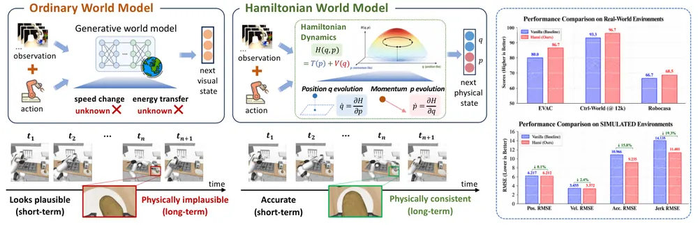
무슨 문제인가
최근 embodied world model은 action-conditioned 미래 영상을 그럴듯하게 생성하지만, latent transition은 대개 범용 신경망 모듈로 학습되어 물리적 구조를 명시적으로 담지 않음. 짧은 구간에서는 그럴듯해 보여도, 예측을 반복해서 이어 붙이는 긴 rollout에서는 작은 한 스텝 오차가 누적되어 물체가 서로 뚫고 지나가거나 접촉 시점이 어긋나는 등 물리적으로 말이 안 되는 상태로 흘러감. 이런 drift는 world model을 policy 평가나 장기 실행 계획에 쓸 때 신뢰도를 직접 떨어뜨림.
어떻게 푸나
HWM은 기존 world model의 encoder가 만든 latent 상태를 학습 가능한 변환으로 일반화 좌표 q와 운동량 p로 나눈 phase space에 매핑함. 이 phase space는 학습된 Hamiltonian 에너지 함수와 마찰 등 비보존 효과를 나타내는 damping 항을 더한 dissipative Hamiltonian 시스템으로 전개됨. 전개에는 semi-implicit symplectic Euler 적분을 써서 수치적 drift를 줄임. 전개된 phase 상태는 학습 가능한 역변환으로 다시 원래 latent 공간에 매핑된 뒤 backbone decoder가 미래 관측을 복원함. 학습은 phase space와 latent 간 reconstruction loss, 여러 스텝 전개가 실제 관측에서 나온 latent 궤적과 맞는지 보는 transition consistency loss, backbone의 관측 수준 복원 loss를 함께 씀. encoder·decoder 등 backbone 구성요소는 그대로 두고 latent transition 모듈만 교체하는 plug-and-play 구조임.
결과
- 시뮬레이션(SimVP backbone)에서 10프레임 학습 후 30프레임까지 rollout했을 때 jerk(가속도 변화율) RMSE가 11.401로, Hamiltonian 구조를 뺀 vanilla의 14.135보다 낮음(19.3% 감소).
- Ctrl-World(실제 데이터 기반 single-arm multi-view 조작 world model)에서 물리적 타당성을 보는 Logic 지표가 96.7%로 vanilla의 93.3%보다 높음.
- EVAC(dual-arm single-view 조작 world model)에서도 Logic 지표가 86.7%로 vanilla의 80.0%보다 높음.
- Cosmos-Predict2.5-2B에 적용한 뒤 RoboCasa(주방 조작 과제 24개 모음) 24개 task·3 random seed 평균 성공률이 68.5%로 vanilla의 66.7%보다 높음. LIBERO(시뮬레이션 조작 과제 모음) 평균은 98.7% 대 97.8%로 비슷한 수준의 작은 차이를 보임.
한계
계산 자원 제약으로 더 많은 backbone이나 더 넓은 task·학습 규모·random seed 조합을 평가하지 못함. 학습된 phase 변수 q, p가 실제 물리량에 대응한다는 보장은 없어 Hamiltonian 구조를 넣었다고 해서 예측이 물리적으로 옳다는 것이 보장되지는 않음. dissipation·control·residual 항이 완전한 에너지 보존을 제한하며, 특히 접촉이 많은 상호작용에서 더 그럼.
누리랩 연구와의 연결
- world model의 latent dynamics에 물리적 구조(에너지 보존, dissipation)를 넣는 접근은 긴 rollout의 drift를 줄임. world model 기반 test-time planning에서 imagined rollout 신뢰도를 높이는 데 쓸 수 있음.
- backbone을 바꾸지 않고 latent transition 모듈만 교체하는 plug-and-play 설계는 기존 world model 연구에 비교적 쉽게 붙일 수 있는 형태임.
12
68점
Learning to Compose: Recursive Self-Improvement of Shared Executable Stacks for Zero-Shot Long-Horizon Robot Manipulation
Manipulation
relevance 10/10
Artificial Intelligence (cs.AI)
coding agent가 로봇 skill을 조합할 때 생기는 실패를, 개별 task program이 아니라 tool·skill·handoff·verifier로 이뤄진 공유 실행 스택 자체를 지속적으로 개선하는 방식으로 줄임. LIBERO-Pro Long에서 ASPIRE 대비 Task perturbation 성공률을 15.1퍼센트포인트 올림.
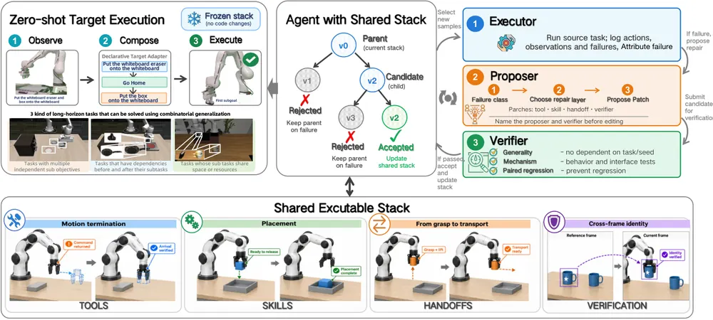
무슨 문제인가
개별 skill이 각각 잘 동작해도 이어 붙이면 실패하는 경우가 많음. 도구가 필요한 능력을 갖추지 못하거나, skill 완료 신호가 실제 물리적 진행 상황과 다르거나, 한 skill이 남긴 상태가 다음 skill의 전제조건을 어기는 경우가 그 원인임. Code as Policies나 Voyager, ASPIRE 같은 기존 coding agent 기반 skill library는 과제별 program이나 skill 저장소를 쌓아가지만, program이 호출하는 공유 인터페이스 자체는 개선 대상으로 삼지 않음. 그 결과 source task에서 배운 수정이 처음 보는 long-horizon 조합 과제로 잘 전달되지 않음.
어떻게 푸나
Recursia는 tool, 실행 계약을 가진 skill, handoff, verifier 네 층으로 이뤄진 공유 실행 스택을 반복 개선의 단위로 삼음. source task를 실행하면서 행동·관측·실패를 기록하고, 가장 먼저 어긴 요구사항을 찾아 실패를 특정 스택 층에 귀속시킴. coding agent가 이 증거를 받아 새 tool 추가나 기존 구성요소 수정 같은 후보 수정안을 제안함. 후보안은 benchmark task나 seed에 특화되지 않았는지 보는 generality check를 거침. 변경된 동작을 미리 재생하거나 실행해 보는 mechanism test, 부모 스택과 동일한 source 상태에서 짝지어 비교하는 selection·regression gate까지 모두 통과해야 다음 세대 스택으로 채택됨. 채택된 스택은 고정되어 target task에서는 코드 수정 없이 declarative adapter를 통해 재사용됨.
결과
- LIBERO-Pro Long(시뮬레이션 long-horizon 조작 과제 10개) zero-shot transfer에서 Task perturbation 성공률이 53.4%로, 가장 강한 baseline인 ASPIRE의 38.3%보다 15.1퍼센트포인트 높음. 같은 벤치마크 Pos perturbation에서는 28.4% 대 22.6%로 5.8퍼센트포인트 높음.
- 실제 Franka FR3 로봇에서 compositional target task 3개 평균 성공률이 66.7%로, 자연어 skill 문서만 갱신하는 baseline(Skill Document Only)의 26.7%보다 40퍼센트포인트 높음. bowl을 접시에 놓은 뒤 mug를 그 bowl에 넣는 과제는 100% 대 20%로 차이가 가장 큼.
- frozen stack 위에서 inference driver를 rule-based, one-shot, online closed-loop 세 가지로 바꿔 비교함. closed-loop는 one-shot 대비 Task perturbation에서 2퍼센트포인트만 더 오르면서 episode당 평균 72초가 더 걸림. feedback을 늘려도 모든 perturbation 축에서 균일하게 이득이 나지는 않음.
한계
source-side 실패 진단은 시뮬레이터의 ground truth 상태를 썼는데, 실제 로봇에서는 장면을 반복 리셋하기 어렵고 첫 위반 지점을 특정할 증거도 얻기 어려움. 모든 source·target 실험이 같은 로봇·같은 실행 인터페이스를 썼고 다른 로봇 플랫폼으로의 전이는 검증하지 않음. 시뮬레이션 grasping backend(Contact-GraspNet)가 비교 대상 ASPIRE 설정(AnyGrasp)과 달라 직접 비교의 공정성이 제한됨.
누리랩 연구와의 연결
- failure attribution으로 어느 스택 층(도구·skill·handoff·verifier)이 실패 원인인지 특정하는 절차는 failure detection·diagnosis 연구에서 참고할 구조임.
- handoff 층에서 predecessor 완료와 successor readiness를 분리해 검증하는 방식은 skill chaining·long-horizon planning 연구와 바로 이어짐.
13
65점
IMPULSE: Push First, Then Predict in V-JEPA 2 Feature Space
World Model
relevance 8/10
ICRA·IROS·RA-L 계열 양식 (추정)
Computer Vision and Pattern Recognition (cs.CV)
3번의 짧은 시험 push로 물체의 숨은 물리 속성(관성비, 반발계수, 마찰)을 추정해 V-JEPA 2 feature 공간의 예측기에 넣으면, 1초 뒤 feature 예측 오차가 11.6~12.8% 낮아짐을 미리 등록한 held-out 확인 실험으로 보임.
무슨 문제인가
보기만 해서는 물체가 회전에 얼마나 저항하는지, 얼마나 튀는지, 얼마나 미끄러지는지 알 수 없음. 겉보기가 같은 두 물체도 관성 분포, 탄성, 마찰이 다르면 같은 push에 다르게 반응함. V-JEPA 2 같은 latent world model은 frozen video encoder의 feature 공간에서 미래를 예측하는데, 몇 번의 능동적 시도(poke)가 이 예측을 얼마나 개선하는지와 무엇이 그 개선폭을 제한하는지를 측정한 연구는 없었음.
어떻게 푸나
IMPULSE는 예측 전에 먼저 push한다는 순서를 따름. query push 전에 agent가 3번의 짧은 calibration push를 수행하고 noisy pose track만 관측함. 각 push의 접촉 후 속도 측정으로부터 관성비·반발계수·마찰계수에 대한 Bayesian grid posterior를 계산해, 2개 lever arm 기준 평균 반응과 불확도를 8개 숫자로 요약하는 contact memory를 만듦. 작은 motion head가 이 memory와 query 맥락을 결합해 미래 pose를 예측함. 예측된 pose는 두 경로로 predictor에 들어감. 하나는 pose token으로 직접 삽입하는 경로(P1)이고 다른 하나는 random Fourier feature로 비선형 변환해 feature를 보정하는 경로(P2)임. predictor는 frozen V-JEPA 2 ViT-L/16 feature를 target으로 삼아 0.2초, 0.5초, 1초 뒤 feature를 예측하도록 학습된 소형 action-conditioned transformer임.
결과
- 사전에 고정해 둔 held-out 확인 실험(신선한 object 512개)에서 1초 feature 예측 NMSE(정규화된 평균제곱오차)가 memory 없는 조건 0.417에서 IMPULSE의 0.364로 낮아짐. 8개 학습 seed 전부에서 개선됐고, memory 유무 차이의 95% 신뢰구간이 0을 포함하지 않음.
- 학습 범위 밖 물리 속성을 가진 object 128개에서도 오차가 11.7~14.0% 낮아짐. pose token만 쓰는 경로(P1)로는 완벽한 memory조차 이득이 6.9~7.8%에 그치지만, random Fourier pose head(P2)를 추가하면 같은 완벽한 memory의 이득이 2.8~3.2배로 커짐.
- memory 대신 8개 calibration push의 원시 측정값 23개를 그대로 넣어도 11.6~13.0%의 비슷한 이득을 얻어, Bayesian 요약 형태 자체는 필수가 아님을 보임. memory와의 차이는 +0.3~1.0%로 유의하지 않음.
- 접촉이 막 시작되는 0.2초 시점에서는 memory의 이득이 -0.2%로 거의 없고, 물리가 운동에 반영되는 0.5초, 1초로 갈수록 이득이 8.8%, 11.6~12.8%로 커짐.
한계
과제가 알려진 모양의 2차원 planar push 시뮬레이션이고 renderer가 기하학만 그려 target이 거의 pose로 결정되는 쉬운 설정임. 실제 push 영상이나 숨은 속성을 상호작용으로부터 추론해야 하는 3D 장면으로 일반화되는지는 검증하지 않음. predictor는 공개된 V-JEPA 2-AC가 아니라 845,056개 파라미터의 소형 custom predictor이고, planning에 적용해보지는 않음.
누리랩 연구와의 연결
- 능동적으로 몇 번 건드려 본 뒤 world model의 예측력을 높인다는 설정은 test-time optimization과 active perception 연구에 바로 적용 가능한 사례임.
- memory가 feature에 도달하는 경로(pathway)가 이득의 병목이라는 information ladder 논증은, world model 기반 failure detection에서 무엇을 조건으로 넣을지 설계할 때 진단 도구로 쓸 수 있음.
14
64점
EmbodiedWorld-200K: Toward Embodied World Agents via Embodied-Planning Dataset and Interactive World Models
Embodied AI
relevance 9/10
NeurIPS 2026 채택
Artificial Intelligence (cs.AI)
150개 이상 3D open-world 게임에서 모은 20만 개 이상 navigation-planning 샘플로 EmbodiedWorld-200K를 만듦. video world model을 저비용 환경 proxy로 써서 RL post-training까지 하는 두 단계 학습법도 함께 공개하며, Qwen3-VL-4B를 이 데이터로 지도학습하면 TM 지표가 54.9에서 62.0으로 오름.
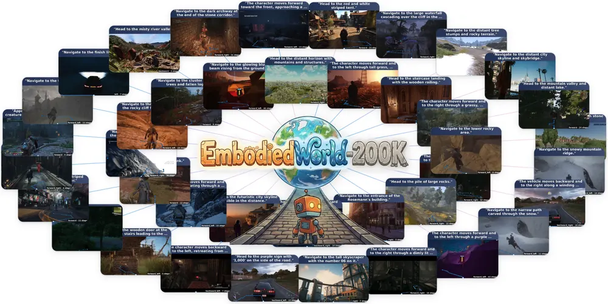
무슨 문제인가
기존 embodied agent 연구는 한 시뮬레이터의 navigation이나 한 로봇 플랫폼의 manipulation처럼 특정 과제·장면에 묶여 있어 새 환경으로 잘 전이되지 않음. VLN benchmark는 규모가 작고 장면 다양성이 낮으며 annotation 수준도 단일해, VLLM처럼 대규모 pretraining으로 범용 prior를 배우기 어려움. 실제 interactive 플랫폼을 다양한 open-world 장면에 걸쳐 직접 구축하는 것은 비용이 매우 큼.
어떻게 푸나
저자들은 OGameData에서 가져온 150개 이상 3D open-world 게임 영상을, 하나의 주된 이동 방향을 갖는 navigation-coherent segment 단위로 자름. 각 segment에서 시작 관측, 자연어 navigation 지시문, W/A/S/D 이산 행동열을 뽑아 EmbodiedWorld-200K를 구성함. 1단계로 Qwen3-VL-4B를 이 데이터셋에 cross-entropy loss로 지도학습해 open-world navigation-planning 능력을 주입함. 2단계는 영상 생성 world model인 LingBot-World-Fast를 환경 proxy로 씀. 1단계 모델이 제안한 행동열을 world model 안에서 굴린 뒤, VLM이 그 rollout이 지시문을 얼마나 달성했는지 visual question answering 형식으로 점수를 매김. 이 점수로 preference pair를 만들어 DPO로 학습해, 학습 분포 밖의 target 환경(GTA5)에 적응시킴.
결과
- EmbodiedWorld-200K 평가 split에서 Stage-I 지도학습 후 TM(Token Match) 지표가 62.0으로, fine-tuning 전 base model(Qwen3-VL-4B)의 54.9보다 7.1점 높음. nDTW(경로 유사도, 높을수록 좋음)는 67.1에서 83.6으로, NE(목표까지 남은 거리, 작을수록 좋음)는 51.7에서 35.6으로 개선됨.
- 같은 평가 split에서 VLN 전용 모델(Uni-NaVid, StreamVLN)과 zero-shot VLM(Gemini-3.5 등) 외부 baseline과 비교하면, 가장 강한 경쟁 모델 대비 TM은 9.2점, nDTW는 20.2점 높고, NE는 19.1 낮음. DirAcc(목적지 방향 정확도)만 Gemini-3.5(72.4)가 자체 모델(72.0)보다 근소하게 높음.
- 학습 분포에 없는 GTA5를 target 환경으로 삼아 LingBot-World-Fast 안에서 DPO post-training을 하면 nDTW가 66.1에서 92.7로, NE가 48.9에서 13.4로 개선됨.
한계
데이터를 설계된 3D 게임 환경에서만 모아, 실제 물리 상호작용의 접촉·센서 노이즈·조명 변화 같은 요소는 담지 못함. 150개 이상 게임을 하나의 좌표계로 묶기 위해 W/A/S/D 이동·회전·정지만 쓰는 거친 행동 공간을 채택해, 물체 조작이나 도구 사용 같은 세밀한 상호작용 능력은 다루지 않음. Stage-II 결과는 GTA5 한 target 환경에 대한 사례임.
누리랩 연구와의 연결
- video world model을 저비용 환경 proxy로 써서 policy를 RL post-training하는 접근은 world model·test-time adaptation 연구와 바로 연결됨.
- navigation-planning에 한정된 범용 open-world agent 데이터셋으로, manipulation 중심인 누리랩 주제와는 직접 연결 약함.
15
57점
DUET: Decoupled Upper- and Lower-Body Execution for Task-Agnostic Humanoid Loco-Manipulation
Manipulation
relevance 9/10
Robotics (cs.RO)
인간형 로봇에서 하체 균형 제어와 상체 조작 정책을 완전히 분리해, 조작 정책을 바꿔도 보행 정책을 재학습하지 않아도 됨을 보임. 같은 locomotion checkpoint 위에서 GR00T N1.7과 π0.5 두 VLA를 교체해 동작시켰지만, 보행 중 grasp 성공률은 고정 base 대비 크게 낮아짐(π0.5는 10회 중 2회).
무슨 문제인가
인간형 로봇이 이동하면서 조작을 하려면 보행 제어기와 조작 정책을 함께 다뤄야 하는데, 기존 방식은 대부분 전신을 하나의 정책으로 학습하거나(whole-body) 보행 정책이 팔 목표를 추종 대상으로 받아들여 상체 정책과 긴밀히 엮임. 이러면 조작 정책을 바꿀 때마다 보행 제어기도 재학습하거나 조정해야 함. HOMIE 같은 decoupled 방식도 팔은 exoskeleton이나 inverse kinematics 같은 고정된 driver로만 구동해서, VLA처럼 학습된 조작 정책을 자유롭게 바꿔 끼우는 경우는 검증된 적이 없음.
어떻게 푸나
DUET(Decoupled Upper- and Lower-Body Execution for Task-Agnostic Humanoid Loco-Manipulation)는 23자유도 Unitree G1을 씀. 다리 12개 관절과 허리 yaw 관절만 강화학습 locomotion 정책이 제어하고, 팔 10개 관절은 locomotion 정책의 행동 공간에서 완전히 제외해 관측값으로만 넣음. 학습 중에는 실제 조작 정책 대신 무작위 disturbance generator가 팔을 움직여, locomotion 정책이 다양한 팔 자세와 payload 아래서도 안정을 유지하도록 학습시킴(upper-body pose curriculum). 배포 시에는 locomotion 프로세스와 조작 프로세스가 별도 토픽으로 통신하며, locomotion 프로세스는 매 cycle마다 조작 프로세스가 마지막으로 publish한 팔 목표를 그대로 복사해 명령 메시지에 채워 넣음. 두 정책은 서로의 존재나 작업 내용을 전혀 모르고, 공유하는 것은 로봇의 물리적 몸체뿐임. 이 인터페이스 위에서 GR00T N1.7과 π0.5라는 서로 다른 VLA를 신선 농산물 취급 605개 episode로 각각 fine-tuning해 같은 locomotion checkpoint에 연결함.
결과
- 시뮬레이션 평가에서 배포된 locomotion 정책은 낙상 없이 linear velocity 오차 0.186m/s, yaw rate 오차 0.142rad/s, pelvis 높이 오차 0.016m를 기록함.
- upper-body pose curriculum을 제거하면 생존 시간이 20.0초에서 7.4초로 줄고 낙상률이 환경-분당 0건에서 6.06건으로 오름. 세 ablation 중 가장 큰 손상임.
- 같은 로봇에서 전신 23관절을 직접 제어하는 whole-body 정책과 비교하면, whole-body는 pelvis tilt를 1.7도로 유지하지만 DUET는 9.7도로 더 기울어짐. 팔을 각운동량 제어용으로 못 쓰기 때문임.
- 실로봇에서 고정 base 기준 GR00T N1.7은 10회 중 8회 grasp에 성공했지만, DUET의 보행 locomotion layer 위에서는 10회 중 4회로 낮아짐. π0.5는 10회 중 2회에 그침.
한계
두 VLA 모두 같은 605개 episode 데이터셋으로 fine-tuning되어 있어, 이 연구는 model 종류를 바꾸는 상호교환성만 검증했고 task 영역을 바꾸는 상호교환성은 검증하지 못함. 보행 중 grasp 성공률이 고정 base 대비 크게 낮아지는 원인(base tilt, standing drift, action chunk와 locomotion loop 사이 latency 등)은 아직 분리해서 규명하지 못함. 모든 결과가 단일 seed에서 나왔고, 평지에서만 학습해 고르지 않은 지형은 다루지 않음.
누리랩 연구와의 연결
- VLA 정책을 locomotion layer와 완전히 분리해 교체 가능하게 만든 설계는 generalist robot policy를 이동형 플랫폼에 올릴 때의 modular 아키텍처 참고 사례가 됨.
- 보행 중 grasp 성공률 저하 원인을 base tilt·latency로 나눠 규명하자는 저자의 제안은 실로봇 failure detection·diagnosis 연구와 직접 연결됨.
오늘의 흐름
- world model의 planning 신뢰도 문제를 정면으로 겨냥함: 같은 latent world model이라도 목표가 멀거나 목표 조합이 학습 분포 밖이면 못 믿는다는 문제를 서로 다른 각도에서 다룸. Latent World Models Should Plan with Distances Along the Latent Manifold는 거리 함수 자체(Euclidean 대신 manifold shortest-path)를 바꿔 고침. AnyGoal은 목표 조합이 학습 분포 안인지 밖인지로 나눠 planning 성공률을 재는 벤치마크로, 분포 밖 목표 조합에서 성능이 낮아지는 것을 드러냄. Structured Latent Dynamics for Long-Horizon Embodied World Models는 dynamics 자체에 물리적 구조를 넣어 drift를 줄임.
- world model을 policy 학습이 아니라 기억·상상·데이터 확장 용도로 재배치함: Train An Imaginative Agent는 실행 전 counterfactual 상상으로 씀. Ropedia W0는 사람 영상까지 묶어 cross-embodiment로 scale-up함. EmbodiedWorld-200K는 video world model을 RL post-training용 저비용 proxy 환경으로 씀.
- action label이나 사람이 만든 reward 없이 스스로 개선하는 학습 루프: Self-Improving Video-to-Action Models는 action label 없이 video-to-action을 self-play로 학습시킴. Progress-Guided Preference Generation은 rollout의 시간적 진전도로 preference label을 자동 생성함. Recursia는 실패를 스택 층에 귀속시켜 공유 실행 스택 자체를 고쳐 나감.
- robot memory를 실패 진단 구조로 formulate함: BetaMem은 기억을 6개 층으로 나누고 실패 기반으로 기억 작성 policy 자체를 갱신함. DialogMem은 대화 기반 정보를 object-level로 접지하는 것이 memory 연구의 병목임을 수치로 보임.
- VLA·policy의 inference-time 최적화: VLA-Rolling은 버려지던 action tail을 재사용해 비용과 성공률을 함께 올림. VaDar는 policy는 subgoal-agnostic으로 두고 critic만 모든 subgoal에 대해 학습시켜 long-horizon 과제를 풂.
해볼 만한 연구
world model 신뢰도 격차를 failure 사전 감지 신호로 쓰기
- 질문: latent world model에서 ambient Euclidean cost와 manifold shortest-path cost의 격차가 사전 신호로 쓰일 수 있는지 밝힘. 이 격차가 커지면 world model을 못 믿을 상황, 즉 목표 조합이 학습 분포를 벗어난 상황에 들어선 것으로 볼 수 있는지 봄.
- 첫 실험: AnyGoal 벤치마크의 in-distribution 과제와 goal-shift 변형 과제에서 각각 두 cost의 격차를 측정하고, 격차 크기와 실제 planning 성공·실패의 상관을 봄.
- 가장 가까운 연구: AnyGoal은 실패를 벤치마크로 드러내기만 하고 사전 감지 신호를 만들지 않음. Latent World Models Should Plan with Distances Along the Latent Manifold가 제안한 NGC는 사후에 cost를 고치기만 하고 언제 고쳐야 하는지는 보지 않음.
subgoal-agnostic critic에 실패 기억을 추가 조건으로 넣기
- 질문: VaDar처럼 policy는 subgoal과 무관하게 두고 critic만 여러 조건에 대해 학습시키는 구조가 있음. 이 구조에 subgoal 대신 과거 실패 trace(BetaMem 식 episodic layer)를 조건으로 추가하면 long-horizon 과제의 실패 복구율이 오르는지 밝힘.
- 첫 실험: RoboCasa(가정환경 long-horizon manipulation 시뮬레이션 벤치마크) 같은 과제에서 subgoal만 조건으로 쓴 critic과, 과거 실패 trace를 추가 조건으로 넣은 critic의 재시도 성공률을 비교함.
- 가장 가까운 연구: VaDar는 subgoal만 쓰고 실패 기억은 다루지 않음. BetaMem은 기억을 다루지만 critic 학습에 연결하지 않음.
꼭 읽을 논문
- Self-Improving Video-to-Action Models: action label 없이 Minecraft에서 iron pickaxe를 얻은 첫 사례로, VLA의 inverse dynamics 학습 비용을 줄이는 대안을 보여줌.
- Train An Imaginative Agent: world model을 counterfactual 비교와 forward 계획 평가에 쓰는 구조로, test-time planning·counterfactual reasoning 연구에 직접 참고할 수 있음.
- VaDar: policy는 그대로 두고 critic 학습 방식만 바꾼 단순한 구조라, 기존 subgoal-conditioned 방법보다 구현이 쉬움.
- Ropedia W0: 사람 영상을 로봇 영상과 같은 조건 형식으로 묶어 world model을 cross-embodiment로 scale-up한 사례임.
- Latent World Models Should Plan with Distances Along the Latent Manifold: 재학습 없이 cost 함수만 바꿔 latent world model의 planning 실패를 고친 저비용 개입 사례임.
전체 1차 스크리닝 결과 (1130편, 점수순) 펼치기
| # | 제목 | 점수 | 🤖 | 분야 | 한 줄 근거 |
|---|---|---|---|---|---|
| 1 | Self-Improving Video-to-Action Models | 85 | 9 | World Model | 영상 생성 모델의 시각적 plan을 환경 상호작용만으로 action으로 변환하는 self-supervised inverse dynamics 학습법 Mirror를 제안함. Atari·Minecraft·offline 설정에서 action label 없이 전문가 수준 성능을 달성해 video-to-action 스케일링 문제에 본질적 해법을 제시함 |
| 2 | Learning to Compose: Recursive Self-Improvement of Shared Executable Stacks for Zero-Shot Long-Horizon Robot Manipulation | 78 | 10 | Manipulation | 개별 스킬이 조합될 때 발생하는 실패를 공유 executable stack의 지속 개선으로 해결하는 Recursia를 제안함. 시뮬레이션과 실제 Franka FR3 로봇에서 장기 조작 task 조합 성공률을 크게 올려 compositional transfer를 실증함 |
| 3 | Structured Latent Dynamics for Long-Horizon Embodied World Models | 78 | 9 | World Model | embodied world model의 장기 예측 drift를 latent를 Hamiltonian phase space로 구조화해 줄인 연구임. Ctrl-World·EVAC·Cosmos-Predict2.5 등 기존 아키텍처에 끼워넣어 RoboCasa 조작 과제 성공률과 AgiBot World 실로봇 trajectory 지표를 모두 개선해 world model·장기 예측이라는 랩 핵심주제와 직접 맞음. |
| 4 | EmbodiedWorld-200K: Toward Embodied World Agents via Embodied-Planning Dataset and Interactive World Models | 78 | 9 | Embodied AI | 다양한 3D scene에서 open-world embodied navigation-planning을 위한 대규모 데이터셋 EmbodiedWorld-200K와 video world model을 저비용 환경 proxy로 쓰는 interactive RL post-training 방식을 제안함. out-of-distribution scene에서 분명한 성능 향상을 보여 world model 기반 embodied agent 학습의 실용적 경로를 제시함 |
| 5 | Train An Imaginative Agent | 78 | 7 | World Model | 단일 omni 모델이 행동을 제안하고 그 결과를 이미지로 상상한 뒤 그 상상을 바탕으로 추론해 실행하는 Agima를 제안함. Sokoban·PushT 등에서 실제 환경 피드백을 거의 안 받고도 action-only planner를 크게 능가해 test-time imagination 기반 planning의 구체적 구현을 보임 |
| 6 | VLA-Rolling: Fewer Denoising Steps, Better Control via Adaptive Action Reuse | 76 | 9 | VLA | flow-matching VLA가 버리는 action tail의 denoising 진행을 재사용하는 추론 프레임워크 VLA-Rolling을 제안함. π0.5·SmolVLA·X-VLA·MolmoAct2 등 4개 모델과 LIBERO·MetaWorld·RoboTwin 2.0에서 추론 비용을 줄이면서 성공률도 함께 올려 VLA 추론 효율화에 실질적 기여를 함 |
| 7 | BetaMem: Learning to Remember a Changing World for Embodied Agents | 74 | 8 | Embodied AI | working·spatial·entity·episodic·experiential·procedural 6계층 메모리를 쓰기 검증과 실패 진단형 RL로 진화시키는 BetaMem을 제안함. M3-Bench-robot·OpenEQA·EgoLifeQA 등에서 최고 성능을 보여 robot memory 설계에 직접 참고할 만한 구체적 아키텍처임 |
| 8 | Progress-Guided Preference Generation for Aligning Generative Control Policies | 72 | 9 | Manipulation | 소수 expert demonstration만으로 생성형 조작 정책을 사람 라벨 없이 preference 정렬하는 CoRL 2026 논문임. rollout이 expert demo 대비 얼마나 순차적으로 진행됐는지를 pseudo-preference로 추출해 diffusion·flow-matching policy 모두에 적용했고 long-horizon manipulation 과제에서 supervised fine-tuning보다 우수함을 보여 랩의 imitation learning·generalist policy 주제와 직접 맞음. |
| 9 | Ropedia W0: Scaling Loco-Manipulation World Models across Embodiments with Human Experience | 68 | 10 | World Model | 사람과 로봇의 egocentric 데이터 13000시간을 통일된 kinematic 표현으로 묶어 loco-manipulation world model을 cross-embodiment로 학습함. 대규모 데이터·통합 표현·실로봇 포함 다중 벤치마크 검증까지 랩 핵심 주제에 정확히 맞음. |
| 10 | DUET: Decoupled Upper- and Lower-Body Execution for Task-Agnostic Humanoid Loco-Manipulation | 68 | 9 | Manipulation | humanoid의 locomotion과 manipulation controller를 interface에서만 결합해 manipulation policy를 재학습 없이 교체 가능하게 만들고 GR00T N1.7·pi0.5를 실기체에 바로 붙여 검증함 |
| 11 | IMPULSE: Push First, Then Predict in V-JEPA 2 Feature Space | 68 | 8 | World Model | 짧은 push 몇 번으로 물체의 물리 반응을 V-JEPA 2 feature space에서 학습해 forecast를 개선함. world model과 test-time 상호작용 기반 물리 추정이 랩 우선순위와 정확히 맞음. |
| 12 | Latent World Models Should Plan with Distances Along the Latent Manifold | 68 | 8 | World Model | latent world model의 planning cost를 ambient L2 거리 대신 latent manifold 위 shortest-path 거리로 바꾸자는 제안임. LeWM에서 terminal cost만 바꿔 TwoRoom·Reacher의 원거리 목표 성공률을 27%→95%, 81%→100%로 끌어올려 world model planning 포뮬레이션에 작지만 본질적인 통찰을 주지만 실험이 저차원 toy 벤치마크에 국한됨. |
| 13 | VaDar: Implicit Goal Conditioning via Value Disaggregation | 68 | 8 | Manipulation | subgoal-conditioned policy 없이 subgoal별 critic value의 선형결합만 최대화하는 단일 policy로 장기과제를 푸는 방법(VaDar)임. RoboCasa 조작 벤치마크에서 behavior cloning 성공률이 거의 0인 지점에서 시작해도 다른 알고리즘이 못 푸는 과제를 처음으로 풀어 long-horizon manipulation·skill chaining 랩 주제와 직접 맞음. |
| 14 | AnyGoal: On World Model Generalization Beyond Expert Rollouts | 68 | 5 | World Model | world model이 전문가 rollout에 없던 state-action 조합으로 compositional하게 일반화하는지 측정하는 AnyGoal 벤치마크를 제안함. 여러 world model 계열이 공통적으로 조합 일반화에 실패함을 보여 world model 평가의 핵심 축을 제시함 |
| 15 | DialogMem: Evaluating Dialogue-Grounded Embodied Memory in 3D Environments | 66 | 7 | Embodied AI | 체화 agent가 시각 경험과 사람과의 대화를 함께 기억해 instance navigation과 QA에 쓰는 DialogMem 벤치마크를 제안함. 대화를 추가해도 navigation 개선이 미미해 object-level grounding 병목을 밝힘 |
| 16 | Goal Images Are Control Targets: Spatially-Grounded Goal-Image Synthesis for Robotic Manipulation | 65 | 9 | Manipulation | goal image 생성 품질이 좋아도 조작 성공률과는 무관하고 object·state 정확성만 성능을 좌우함을 실증함. goal-conditioned manipulation의 핵심 가정을 깨는 발견이고 CALVIN과 SIMPLER-Bridge 실험으로 뒷받침됨. |
| 17 | PrismWAM: Decoupling State Representations in World Action Models | 62 | 9 | World Model | World Action Model의 state를 외형과 물리적 상태(semantics vs physics)로 분리해 goal image와 depth rollout을 거쳐 action을 생성함. embodied action pretraining 없이도 대규모 사전학습 모델을 능가해 world model state 설계에 핵심적으로 참고됨. |
| 18 | Language-Forcing: Advancing Humanoid Loco-Manipulation via Semantic Alignment of Whole-Body World Action Models | 62 | 9 | World Model | whole-body world action model이 예측한 미래 영상 표현을 VLM이 뽑은 task 진행 서술과 맞춰 task와 무관한 장면 변화를 걸러내는 학습법임, 실로봇 5개 과제 평균 성공률을 53.33%에서 71.33%로 올림 |
| 19 | Vector-Quantized World Model: Latent Feedback Motion Planning for Robot Manipulation | 62 | 9 | World Model | discrete latent predictor로 멀리 보고 최단 경로를 찾은 뒤 continuous controller가 visual feedback으로 그 경로를 따라가며 오차를 교정하는 world model planning임, 짧은 시연만으로도 Tower of Hanoi 실로봇 실험에서 기존 VLA·WAM은 학습 데이터에 해당 궤적이 있어야만 풀던 것을 100% 성공률로 구성해 냄 |
| 20 | HAVANA: A Hierarchical Video-Action Model for Vision-Language Navigation | 62 | 8 | Navigation | 예측적 reasoning과 반응적 local planning을 slow/fast 이중 시스템으로 분리한 VLN 모델임. 실로봇 다중 embodiment 배치까지 검증해 navigation 우선순위에 정확히 맞음. |
| 21 | Frechet Forcing: Training Long-Horizon Streaming World Models from Short Clips | 62 | 8 | World Model | 짧은 clip만으로 긴 rollout에서도 action을 따르고 drift하지 않는 streaming world model 학습법을 제안함. 로봇 조작과 카메라 탐색 환경에서 4000프레임 이상 안정성을 검증해 world model 연구에 직접 참고됨. |
| 22 | Simulation Priors for Rapid Adaptation in Model-Based RL for Autonomous Racing | 62 | 8 | RL | 여러 fidelity의 시뮬레이션으로 world model을 미리 학습하고 실제 자율주행 레이싱카에서 1시간 안에 적응시킨 model-based RL 연구임, 실하드웨어 검증이 확실함 |
| 23 | FlashRT-PAI: Fast Kernels Are Not Fast Pipelines for Physical AI Inference | 62 | 8 | VLA | VLA·video-action·world action model의 실시간 추론 지연을 커널 융합과 pipeline co-design으로 줄인 FLASHRT-PAI를 제안함. LIBERO-10에서 4비트 pi0.5가 FP16 대비 최대 12.66배 가속되면서 정확도도 유지되어 LeRobot에 채택될 만큼 실용적인 기여임 |
| 24 | EgoVine: Post-Training with Branching Experience Compiled from Real-World Videos | 62 | 7 | Embodied AI | 고정된 데모를 symbolic 환경에서 재실행해 대안 행동과 실패 복구 경험을 만드는 post-training 프레임워크임. failure recovery와 long-horizon planning에 정확히 맞음. |
| 25 | CondenseVLA: Learnable History Condensation for Efficient Multi-Frame VLA | 60 | 9 | VLA | 학습 가능한 slot attention으로 짧은 관측 기록을 압축해 접촉·가림 같은 단기 신호를 활용하는 multi-frame VLA 정책임. manipulation과 memory-dependent task에서 real-world까지 검증해 랩 우선순위에 정확히 맞음. |
| 26 | DiPLO: Self-distilled Diffusion Planning for Loco-manipulation | 60 | 9 | Manipulation | human-to-humanoid retargeting로 미리 학습한 diffusion planner를 self-distillation으로 task conditioning 의존 없이 만들고 maximum-entropy RL로 frozen tracker 실행 능력에 맞춰 fine-tuning하는 humanoid loco-manipulation 프레임워크임, 실제 Unitree G1에서 추가 fine-tuning 없이 pick-carry-place 성공률을 45%에서 99%로 올림 |
| 27 | UMI-WM: Interactive World Modeling for Bimanual Manipulation from Wrist Cameras | 60 | 8 | World Model | 로봇 없이 모은 양손 wrist-camera 영상으로 양쪽 view 간 일관성을 지키며 action-conditioned로 미래 영상을 생성하는 world model임, teacher를 4-step student로 distillation해 action following 성능을 유지하면서 생성 속도를 6.9배 올림 |
| 28 | TESS: LLM-guided Translation, Exploration, Simulation, and Search for Embodied Task Planning | 60 | 7 | Embodied AI | LLM의 commonsense로 고전 search 알고리즘을 guide해 partially observable 환경에서 embodied task planning을 수행하는 TESS를 제안함. VirtualHome·ALFWorld에서 search의 완전성과 LLM의 유연성을 결합해 기존 LLM-only plan보다 실행가능성을 높임 |
| 29 | Action-Aligned Latent Planning for Versatile Humanoid Loco-Manipulation | 58 | 9 | Manipulation | frozen behavioral foundation model의 latent 공간을 여러 humanoid interaction skill의 공유 planning 표현으로 쓰고 거기서 offline로 perceptive flow planner를 학습하는 FIBER 프레임워크임, 실제 Unitree G1에서 skill chaining과 조건부 steering까지 보이면서 성공률을 kinematic planning 대비 10배 넘게 올림 |
| 30 | Learning from Fleet Experience: A Collective Learning Paradigm for Robots | 58 | 9 | VLA | 배치된 로봇들이 자기 실행 경험을 공유해 공통 policy를 개선하는 collective experience learning 패러다임으로, 실패 맥락으로 fleet의 성공 경험에서 관련 구간을 retrieval해 supervision으로 쓰는 방식임, 사람 보정 없이 5개 실제 과제에서 성공률 93.3~99.2%를 내고 로봇 수가 늘수록 성능이 더 좋아짐을 보임 |
| 31 | Physical Words: A Vocabulary for Structuring Latent Reasoning in Robot Manipulation | 58 | 9 | World Model | 원자적 action 단어를 공유 anchor로 써서 다가올 Physical Word를 예측하고 그 hidden state를 미래 관측에서 뽑은 latent target에 맞추는 reasoning-before-acting foundation model PhysWord임, language 기반 추론의 구조와 latent 기반 추론의 동역학 표현력을 모두 가져 UniVTAC 90.3%, LIBERO-Long 99.6%를 내고 실제 양손·dexterous hand 과제까지 outperform함 |
| 32 | Think Densely, Act Sparsely: Latent Expert Cognitive Chains for Vision-Language-Action Autonomous Driving | 58 | 8 | VLA | VLA가 sparse supervision으로 dense scene 정보를 버리는 문제를 latent expert token 사슬로 보완하는 자율주행 프레임워크임. VLA의 dense world representation 형성 문제를 정면으로 다룬 구조적 기여임. |
| 33 | Pretrained Features as Teachers, Not States: Compact Latent World Models for Visual Planning | 58 | 7 | World Model | pretrained visual feature를 state가 아니라 teacher로 써서 compact latent world model을 학습하는 방법임. 플래닝 속도까지 개선해 world model 표현 설계에 직접 참고됨. |
| 34 | From Views to Worlds: Active Exploration over 3D Worlds for Vision-Language Models | 58 | 7 | Embodied AI | VLM이 멀티뷰 이미지로 명시적 3D 월드를 재구성하고 반복 질의로 능동적으로 공간 증거를 모으게 하는 프레임워크임. active perception과 embodied spatial reasoning에 정확히 맞음. |
| 35 | Operator-Mismatch Contrastive Learning for World-Relative Trajectory Coherence | 58 | 7 | World Model | world model이 그럴듯하지만 실제 작동 규칙과 다른 trajectory를 구분하지 못하는 operator-blindness를 정의하고 negative sampling으로 교정하는 연구임. CoPhy ballsCF 물리 counterfactual 벤치마크로 world model coherence 평가라는 랩 핵심주제를 직접 다루지만 생성모델·planner 자체는 아니고 보조 scorer로 제한됨. |
| 36 | InJePA: Intention-First Latent Planning with Coupled JEPA World Models for Visual Navigation | 56 | 8 | World Model | 목표 지향 JEPA가 latent intention을 먼저 제안하고 action 지향 JEPA가 그 결과를 예측해 다음 intention에 반영하는 closed-loop 방식으로 navigation world model이 후보 평가가 아니라 후보 생성 자체를 이끌게 한 연구임 |
| 37 | ACTS: Learning Visuo-Tactile World Models from Human Physical Interaction | 56 | 8 | World Model | 사람이 GelSight 센서를 손에 들고 조작하는 데이터만으로 visuo-tactile world model을 학습해 접촉 형성·슬라이딩을 로봇 teleoperation rollout에 fine-tuning 없이 전이함, 시각 전이는 불안정하지만 접촉 다이나믹스는 더 잘 전이됨을 보임 |
| 38 | Dream What I Can: Sparse Visual Planning for Long-Horizon Robot Manipulation | 56 | 8 | VLA | video model이 만든 미래 장면 중 실제로 도달 가능하면서 task에 유용한 지점만 희소하게 골라 subgoal로 쓰는 계층적 policy임, action-free 영상에서 dynamic programming으로 subgoal을 뽑아 LIBERO-Long 91.2% 성공률과 실제 양손 상자 포장 과제까지 보임 |
| 39 | GOFusion: Real-Time Gaussian-Occupancy Submap Fusion for Fisher-Informed Autonomous Robot Navigation | 56 | 8 | 3D Vision | 3D Gaussian을 local occupancy map에 앵커링해 경로계획용 공간 정보와 외형 정보를 함께 제공하고, Fisher 근사로 Gaussian별 정보량을 온라인으로 재서 pruning과 next-best-view 선택에 쓰는 매핑 시스템임, 실제 드론 비행으로 완전 자율 지도 정제를 시연함 |
| 40 | SteerAct: Unlocking Action Models through Few-Shot Temporal Steering | 56 | 8 | VLA | sparse autoencoder가 뽑은 feature의 시간적 활성 패턴을 성공·실패 rollout에서 비교해 개입 시점과 세기를 정하는 few-shot activation steering 기법임, weight 업데이트 없이 과제당 24개 rollout만으로 π0.5 등 여러 VLA에서 성공률을 약 10% 올림 |
| 41 | SWAP: Test-Time Steerable Humanoid Whole-Body Collision Avoidance | 56 | 8 | Manipulation | 상위 diffusion policy가 다중 모드의 충돌 회피 동작 후보를 제안하고 하위 whole-body RL controller가 그걸 추적·안정화하는 계층적 humanoid 충돌회피 프레임워크임, hindsight labeling으로 충돌 없는 supervision을 자동 생성하고 test-time Monte Carlo steering으로 속도·자세 같은 목표 보상을 34% 더 끌어올림 |
| 42 | TrajWAM: An Efficient Trajectory-Guided World Action Model for Dynamic Robotic Manipulation | 56 | 8 | World Model | 장면 전체가 아니라 목표 물체의 미래 mask trajectory만 명시적으로 예측해 world action model의 action 생성을 거기에 조건화하는 trajectory-guided WAM임, decoupled distillation으로 one-step 추론까지 구현해 동적 물체 조작에서 state-of-the-art를 냄 |
| 43 | OmniInteract: Towards Unified Whole-Body Interaction Control for Dual Humanoids | 56 | 8 | Manipulation | 사람-로봇 표면 대응을 이용해 접촉 interface를 보존하는 retargeting과, frozen whole-body motion prior 위에 partner-aware residual을 flow matching으로 합성하는 방식으로 두 humanoid의 접촉 상호작용을 학습한 연구임, 실제 배포에서 접촉 형성과 외부 교란 회복까지 보임 |
| 44 | Beyond Omni: A Unified MLLM for Embodied Sensory Understanding | 55 | 9 | Embodied AI | depth·point cloud·IMU·tactile·thermal·radar 등 8개 물리 감각을 하나의 MLLM에 통합한 프레임워크임. tactile perception을 포함한 embodied sensory understanding이 랩 우선순위와 직접 맞음. |
| 45 | PICA-WAM: Visual Perturbation Invariance via Cross-Appearance Self-Alignment in World Action Models | 55 | 9 | World Model | World Action Model이 task-irrelevant 외형 변화에도 action representation을 일관되게 유지하도록 self-supervised alignment를 도입함. RoboTwin, LIBERO-Plus, 실로봇까지 검증해 world action model 강건성 연구에 직접 참고됨. |
| 46 | SARAM: Sparse Adapter Allocation with Reuse and Merging for Lifelong Robot Learning | 55 | 9 | VLA | 새 task마다 기존 adapter를 재사용하고 일부 레이어에만 새 adapter를 추가해 저장량 증가를 억제하는 lifelong VLA 학습 framework임, 배포 시에는 activation 기반 signature로 task를 식별해 해당 업데이트만 backbone에 merge해 추론 비용을 task 수와 무관하게 유지함 |
| 47 | RoboValue: A Fine-Grained Sim-and-Real Benchmark for Unified Evaluation of Robotic Value Models | 55 | 9 | Embodied AI | robotic value model을 task-state 이해·시간적 진행·실패와 복구 추론·값 일관성 네 축으로 나눠 시뮬레이션 15개·실로봇 20개 과제로 평가하는 벤치마크임, outcome 점수는 높아도 history 의존 진행 추적이나 복구 판단에서는 여전히 오류가 많다는 걸 보여 failure detection 연구에 바로 쓸 데이터임 |
| 48 | Learning Goal-Conditioned Subgoals through Frozen Hierarchical World Models | 55 | 8 | World Model | frozen hierarchical world model 위에 경량 goal-conditioned 네트워크를 학습해 비싼 macro-action 탐색을 대체함. Cube·Push-T·AntMaze 등에서 검증해 world model 기반 planning에 직접 참고됨. |
| 49 | EgoXperience: Learning World-Grounded Egocentric Representations from Human Experience | 55 | 8 | Embodied AI | egocentric 영상에서 카메라·장면·손·물체를 하나의 world 좌표계로 공동 복원하는 full-stack 데이터·주석·모델임. human video로부터 manipulation 학습에 직접 참고될 자동 주석 엔진을 포함함. |
| 50 | REAP: Learning General Rearrangement Heuristics from Motion-Planner Feedback | 55 | 8 | RL | symbolic abstraction이 놓치는 기하학적 precondition을 motion planner가 학습 중에 직접 알려주는 방식으로 rearrangement heuristic을 학습한 연구임, object 수·배치에 대해 out-of-distribution 일반화를 보이고 motion-planner 질의 수를 한 자릿수 줄임 |
| 51 | TILDE: Teacher-in-the-Loop Distillation from Embodied Foundation Models | 55 | 8 | VLA | 큰 embodied foundation model을 teacher로 두고 student가 만난 상태에서 on-policy distillation과 teacher의 복구 trajectory 학습을 합쳐 action pretraining 없이도 behavior cloning보다 최대 4.1배 성능을 내는 기법임, reward model이 자동으로 teacher 개입을 트리거하는 AutoDAgger로 복구 데이터 수집을 2배 이상 빠르게 함 |
| 52 | T(R,O) Grasp++: Cross-Embodiment Dexterous Grasping in Cluttered Environments at Scale | 55 | 8 | Manipulation | 8개 dexterous hand와 약 5만 개 물체에 걸친 5억 건 규모 grasp annotation 벤치마크를 만들고 거기서 diffusion 기반으로 cluttered scene의 cross-embodiment grasp을 생성하는 프레임워크임, 평균 성공률 88%에 추론 지연 0.3초를 보임 |
| 53 | Long-Horizon Multi-Object Rearrangement via Distilled Tree Search over Continuous Actions | 55 | 8 | RL | 물리 시뮬레이션에서 progressive-widening MCTS로 만든 long-horizon rearrangement plan을 policy-value model에 주기적으로 distillation해 테스트에서는 search 없이 바로 배포하는 DISCO 프레임워크임, behavior cloning·RL·search 단독보다 시뮬레이션·실로봇 모두에서 더 나음을 보임 |
| 54 | Beyond Geometric Closure: Measuring and Diagnosing Mechanical Consistency in Visual Dynamics | 55 | 7 | World Model | visual dynamics 모델이 기하적으로는 맞아도 힘·에너지 법칙은 어기는지 진단하는 프레임워크임. world model 평가 방법론으로 랩의 world model 연구에 직접 참고됨. |
| 55 | State World Models: Execute the Rules, Generate the Pixels | 55 | 7 | World Model | world evolution과 비디오 렌더링을 분리해 보이지 않는 state에도 규칙을 지키는 상호작용을 만드는 harness임. rule-governed world model이라는 개념이 랩의 world model 연구에 직접 참고됨. |
| 56 | Solving a Giant Rubik's Cube with a Quadruped Robot | 55 | 7 | RL | 사족 로봇이 발만으로 거대 루빅스 큐브의 자세와 색 상태를 인식하고 whole-body skill로 레이어를 돌려 실제로 세 번 자율 완성한 연구임, 온보드 perception과 pedipulation을 결합해 다단계 물리 과제를 해냄 |
| 57 | Time-JEPA: Grounding Video World Models with Physical Time Series | 55 | 6 | World Model | 물리 time series를 보조 supervision으로 써서 video world model이 상태 변화를 더 잘 보존하게 함. 로봇 조작 도메인 포함 multi-domain 실험이라 world model 연구에 직접 참고됨. |
| 58 | Dynamics-Aligned Representation Learning under Induced Partial Observability | 55 | 6 | World Model | model-based RL에서 관측에 Beta-Bernoulli gating으로 부분관측을 유도해 world model이 reconstruction에 덜 치우치게 하는 연구임. DeepMind Control Suite 픽셀 기반 연속제어와 MPC 플래닝으로 평가해 world model·장기예측 랩 주제와 맞지만 실로봇은 아니고 시뮬레이션 제어 과제에 한정됨. |
| 59 | Measuring Empowerment from Offline Data for Intrinsically Motivated Exploration | 55 | 5 | RL | 오프라인 데이터만으로 환경 상호작용 없이 empowerment를 추정해 online 탐색을 돕는 방법임. 로보틱스·코딩 등 offline-to-online 세팅을 직접 언급하고 offline data 활용이 랩의 exploration·RL 관심과 맞음. |
| 60 | GeoForward: Geometry-Guided Cross-View Alignment for Feedforward 3D Gaussian Splatting | 55 | 4 | 3D Vision | LiDAR 기반 metric correspondence로 feedforward 3DGS 대응을 먼저 잡는 새 패러다임 제안함. object-centric 3D와 맞지만 자율주행 특화라 로봇 조작과는 간접적임. |
| 61 | HAF-VLA: Hierarchical Action Flow Framework for Humanoid Vision-Language-Action Control | 54 | 9 | VLA | flow-matching VLA의 action chunk를 한 번에 생성하지 않고 locomotion·waist·whole-body manipulation 순서로 단계별 denoising하면서 cross-stage KV cache로 앞 단계 정보를 다음 단계에 반영하는 humanoid VLA 구조임, 실제 여섯 과제에서 기존 모델 대비 성능을 뚜렷이 올림 |
| 62 | ContactKernels: Adaptive Proposals using Geometry-COnditioned Wrenches for Contact-Rich Manipulation | 54 | 8 | Manipulation | 접촉이 생겼을 때 기하학적 wrench로 접촉 위치와 법선을 추정해 sampling 기반 MPC의 proposal 분포 자체를 접촉에 맞춰 바꾸는 기법임, 실제 로봇 삽입 성공률을 53.3%에서 90.0%로 올림 |
| 63 | Relational Spatial Alignment for Vision-Language-Action Models | 54 | 8 | VLA | 3D foundation model의 표현을 VLA에 point-wise로 그대로 맞추면 VLA representation의 rank가 무너진다는 문제를 지적하고, point 대신 쌍별 관계를 맞추는 alignment로 3D 공간 인식을 주입하는 방법임 |
| 64 | Vision-Language-Delta-Action: Learning Compact Deltas as Actionable Transition Interfaces for Robotic Manipulation | 54 | 8 | VLA | 전체 미래 상태를 예측하는 대신 task에 관련된 변화만 담은 compact Delta 변수를 vision-language 이해와 action 생성 사이의 interface로 쓰는 VLDA 패러다임임, Delta를 action denoising의 구조적 seed로 주입해 long-horizon 일관성과 일반화를 개선함 |
| 65 | RoMo-GS: Efficient Online 3D Gaussian Splatting for Robot Mapping via Exposure-Integrated Motion Blur | 54 | 7 | 3D Vision | motion blur를 노출 구간에 대한 적분으로 Gaussian마다 O(1)에 처리하고 Hessian 기반 pruning으로 Gaussian 수를 억제해 온라인 3DGS 로봇 매핑을 기존 offline deblur 방법만큼 품질을 내면서 15~150배 빠르게 돌림 |
| 66 | EvoAD: Self-Evolving Autonomous Driving via Latent World-Model Guided Post-hoc Reflection | 54 | 6 | World Model | 자율주행 policy를 재학습하지 않고 latent world model로 과거 주행 결과를 반성해 비슷한 장면에서 행동을 고치는 self-evolving 프레임워크임, world model을 사전행동 시뮬레이션이 아니라 사후 reflection에 쓴 점이 새로움 |
| 67 | Cartender: Verifiable Language-Conditioned Driving by Learning the Drives Not Taken | 54 | 6 | World Model | VLM이 기록된 주행 로그에서 선택 가능했던 대안 미래와 그걸 고르게 할 지시문을 만들어 scene-language 적합성 점수를 학습하는 counterfactual 방식으로, 시뮬레이터 없이 언어 조건 주행 policy를 학습함, 동일 scene에서 지시를 바꿔 측정한 성공률을 23.67%에서 57.00%로 올림 |
| 68 | SpatialScout: Can VLM Agents Actively Explore and Map 3D Scenes? | 52 | 8 | Embodied AI | VLM agent가 카메라를 능동적으로 조작해 3D 장면을 탐색하고 object-level metric map을 만드는지 측정하는 벤치마크임. active perception과 embodied spatial reasoning의 한계를 정량적으로 드러냄. |
| 69 | MoDex: Towards Universal Multi-Object Dexterous Grasping | 52 | 8 | Manipulation | 다물체 dexterous grasping을 reference trajectory에 대한 residual correction으로 formulate하고 근접·분리 배치에 서로 다른 전략을 쓰는 프레임워크임, 시뮬레이션만 학습해 zero-shot sim-to-real로 옮김 |
| 70 | Gen2Dex: Learning Dexterous Manipulation from Simulation-Initialized Generated Video Demonstrations | 52 | 8 | Manipulation | 시뮬레이션 기반으로 생성한 영상에서 손 동작을 추적·retargeting하고 residual RL로 물리적으로 맞게 보정해 dexterous manipulation demonstration을 만드는 파이프라인임, 실제 로봇에 open-loop 전이까지 보임 |
| 71 | GazeAct: A Human-Gaze-Annotated Manipulation Dataset for Attention-Regularized Policies | 52 | 8 | VLA | operator의 실제 시선을 로봇 카메라 뷰에 기록해 multi-view VLA policy의 language-conditioned attention을 학습 중에만 regularize하는 데이터셋·기법임, 실로봇 18개 과제 평균 성공률을 48.1%에서 58.6%로 올림 |
| 72 | When Better Policies Leave Harder Failures: Coverage Shift in VLM Success Monitoring | 52 | 8 | Embodied AI | policy가 좋아질수록 VLM judge가 놓치는 실패가 더 교묘해진다는 coverage shift 현상을 실험으로 보인 연구임, failure detection을 쓸 때 절대 miss율뿐 아니라 조건부 miss율도 같이 봐야 한다는 점을 보여 lab의 failure detection 문제와 바로 맞음 |
| 73 | FR-VLA: Implicit Force Reasoning VLA for Contact-Rich Manipulation | 52 | 8 | VLA | force를 action 경로에 바로 넣지 않고 vision-language context로 지금 force가 얼마나 관련 있는지부터 판단하는 force admission 신호를 learnable query token으로 만들어 force pathway를 조절하는 VLA임, 두 로봇 플랫폼의 접촉 과제 5개에서 가장 높은 평균 성공률을 냄 |
| 74 | ALIGN: Aligning Condition Estimation and Expression in Advantage-Conditioned Behavior Cloning | 52 | 8 | VLA | advantage 추정값을 threshold로 거칠게 나누는 대신 categorical pairwise condition을 policy label 공간에서 바로 예측하고 AdaRMS로 action expert에 주입하는 ALIGN 기법임, 재시도·실패가 섞인 실로봇 데이터에서 bowl stacking 성공률을 기존 AC-BC 56.7%에서 90.0%로 올림 |
| 75 | Learn the Task, Not the Schedule: Reducing Spurious Cross-Arm Coupling in Bimanual Imitation Learning | 52 | 8 | Manipulation | 양손 시연이 과제에 필요한 제약과 우연한 시점 선택을 구분하지 못해 반대쪽 팔의 진행을 shortcut으로 쓰는 spurious coupling 문제를 겨냥해 팔별 내용은 보존하면서 시점만 재구성하는 데이터 개입 CTR임, 실로봇 bimanual 과제의 worst-state 성공률을 56%에서 76%로 올림 |
| 76 | DexOAK: Object-Aware Kinematic Retargeting | 52 | 8 | Manipulation | 사람 손 자세가 아니라 hand-object interaction graph의 물체 상대 기하를 보존하도록 Laplacian objective로 retargeting한 뒤 그 결과를 feed-forward network로 증류해 추론만으로 새 데이터에 전이하는 dexterous retargeting 기법임, Inspire hand에서 OakInk-v2 성공률을 39.5%에서 48.4%로 올리고 실제 하드웨어 open-loop replay 46/56을 성공시킴 |
| 77 | Where is Physical RSI capability from? An Observational Scaling Law of LLM-as-policy | 52 | 8 | Embodied AI | VLM-as-policy의 physical recursive self-improvement를 First-Attempt·효율·성공·예산·실패로부터의 개선 다섯 축으로 측정하는 평가 체계 PhysRSI-eval을 제안하고, 능력마다 개선을 제약하는 부분이 다르다는 Physical Barrel Hypothesis를 제시함, history를 없애면 후반 성공률이 떨어지고 frozen workspace도 새 배치에서 여전히 쓸모 있다는 개입 실험까지 보임 |
| 78 | Self-Crystallizing Behavior Trees: Amortizing Foundation-Model Reasoning into Deterministic Control for Autonomous Drones | 52 | 7 | Embodied AI | behavior tree 노드가 실패하면 LLM이 작은 subtree patch를 제안하고 CMA-ES로 다듬은 뒤 검증을 통과한 patch만 fleet library에 저장해 결국 LLM 호출 없이 재생되는 deterministic behavior tree로 굳히는 드론 제어 기법임, 학습 후기에는 episode당 LLM 호출이 0.33회까지 줄면서도 미션 성공률 97%를 유지함 |
| 79 | Humanoid SRL: Augmenting Humanoids with Supernumerary Limbs for Coordinated Loco-Manipulation | 52 | 7 | Manipulation | humanoid에 세 번째 팔을 추가해 양팔이 다른 작업 중일 때도 접촉이 필요한 과제를 할 수 있도록 trajectory optimization과 goal-conditioned RL로 whole-body 제어를 학습한 연구임, 실제 하드웨어에 zero-shot으로 옮기고 vision 기반 diffusion policy로 자율 실행까지 보임 |
| 80 | Revealing and Bridging the Physical Executability Gap in Vision-Language Navigation | 52 | 7 | Navigation | VLN 시뮬레이터의 느슨한 충돌 모델이 실제로는 불가능한 행동을 가려 목표 도달 성공률만으로는 못 보던 physical executability gap을 드러낸 연구임, strict-contact 피드백으로 후보 분포를 실행 가능한 쪽으로 옮기고 risk-aware critic으로 미래를 고르는 방식을 제안해 실제 로봇 실험까지 보임 |
| 81 | ScaleNav: Scalable Internet Video Pretraining for Language-Conditioned Local Navigation | 52 | 7 | Navigation | 인터넷 egocentric 영상에서 목표에 다가갈 때 관측이 어떻게 변하는지 먼저 배우고 시뮬레이션의 action-labeled 데이터로 실행 가능한 action chunk를 맞추는 3단계 world-action navigation 프레임워크임, 실제 사족 로봇에 배포해 실세계 일반화를 보임 |
| 82 | O-SCD++: Replay-Free Online Scene Change Detection via Recursive Evidence Fusion | 52 | 6 | 3D Vision | 3DGS 참조 맵 위에서 change field를 선형 연산으로 갱신해 replay 없이 online scene change를 검출함. object-centric 3D와 semantic mapping에 참고되는 실시간 기법임. |
| 83 | SwitchSplat: Learning Discrete Object States from Casually Captured Scenes | 52 | 6 | 3D Vision | 캐주얼 캡처 비디오에서 켜짐/꺼짐 같은 object state를 slot으로 자동 발견하는 3DGS 표현임. object-centric 3D와 scene graph 연구에 직접 참고됨. |
| 84 | PVBench: Quantifying Physical Plausibility in Video Generation with Object-Level Physical Measurements | 52 | 6 | World Model | video 생성의 물리적 타당성을 object-level 6D pose·운동학·보존법칙으로 정량 측정하는 벤치마크임. 로봇 embodied agent 프롬프트를 30% 포함해 world model 평가에 직접 참고됨. |
| 85 | CLARO: Clutter Aware Robot Orchestrator for Open-Vocabulary Grasping using VLM Agents | 50 | 8 | Manipulation | VLM agent가 open-vocabulary detection·segmentation·grasping·pushing 스킬을 orchestration해 혼잡한 환경에서 목표 물체를 찾아오는 프레임워크임, sim2real로 실제 로봇에서도 88.8% 성공률을 냄 |
| 86 | Multimodal Interaction Estimation for Contact-Aware Adaptive Impedance Control | 50 | 8 | Manipulation | force 기록과 3D point cloud를 transformer로 융합해 미지 하중과 사람의 접촉을 구분하고 그에 맞춰 임피던스 제어를 전환하는 프레임워크임, 두 Franka 팔로 미지 무게 상자를 드는 양손 설정까지 zero-shot으로 일반화함 |
| 87 | Touch Where It Matters: Learning Local Tactile Policies for Fine-Grained Gripper Control | 50 | 8 | Manipulation | 접촉이 많은 구간에서는 tactile·force 기반 local controller가 gripper를 넘겨받고 나머지는 visual base policy가 팔을 맡는 handover 구조임, 실제 로봇의 용기 열기·공구 조작 과제에서 성공률을 올림 |
| 88 | LIBERO-Pro2.0: A Benchmark for Evaluating the Robustness of Embodied Foundation Models | 50 | 8 | Manipulation | LIBERO 성능이 실제 강건성을 보장하지 않는다는 문제의식으로 조건·환경·관측·실행·로봇 상태·언어 여섯 축에 걸친 교란 1648개를 만든 대규모 robustness 벤치마크임, 런타임 교란에서 평균 26.5퍼센트포인트 성능이 떨어짐을 보임 |
| 89 | Noise-Invariant Spatial Encoding for 3D Manipulation Policies under Depth Corruption | 50 | 8 | Manipulation | depth 센서 노이즈가 3D manipulation policy의 token 좌표에 그대로 섞여 들어가는 문제를 multi-view self-supervision과 위치 불확실성을 반영하는 attention으로 완화하는 architecture임, 투명·반사 물체를 포함한 실로봇 과제에서 noisy depth 강건성을 올림 |
| 90 | Compositional Humanoid Manipulation through Isomorphic Teleoperation and Independent Skill Routing | 50 | 8 | Manipulation | 공유 expert pool 위에서 팔별로 독립적으로 semantic routing하는 Mixture-of-Experts diffusion policy로 humanoid 팔 스킬을 조합하고, 직접 joint-level 제어가 되는 exoskeleton G1Exo로 접촉이 많은 시연을 모은 연구임, VR-IK 시연 대신 G1Exo 시연을 쓰자 cabinet 과제 성공률이 35%에서 65%로 오름 |
| 91 | HandsOn: A Large-Scale Simulation Benchmark for Generalizable Dexterous Manipulation | 50 | 8 | Manipulation | 5개 팔·6개 dexterous hand·약 200개 물체를 아우르는 cross-embodiment dexterous manipulation 시뮬레이션 벤치마크임, 가장 좋은 multi-task policy도 Core-50 성공률 29.1%에 그쳐 현재 방법들의 한계를 드러냄 |
| 92 | Map2Vid: Embodied Navigation Video Generation with Human-Friendly Motion Control | 50 | 7 | Navigation | BEV map을 조건으로 embodied navigation 비디오를 생성하는 새 과제와 대규모 데이터셋임. navigation과 human-friendly 제어가 랩 우선순위에 맞음. |
| 93 | Vision as Proprioception: Estimating Humanoid Robot Pose from Video | 50 | 7 | CV | 사람 pose 특징과 로봇 kinematics를 결합해 영상만으로 humanoid의 전신 joint 구성을 world space에서 복원하는 프레임워크임, 합성 데이터로 16개 embodiment에 걸쳐 학습하고 실제 세 플랫폼에서 joint angle 오차를 18~32% 줄임 |
| 94 | AeroDASH: Asynchronous Vision-Language-Action Control for Continuous UAV Flight | 50 | 7 | VLA | UAV VLA policy의 예측 trajectory에서 이미 지난 구간을 잘라내고 남은 구간을 현재 참조에 매끄럽게 이어붙이는 비동기 실행 기법임, execution-aware GRPO까지 더해 UAV-Flow에서 OpenVLA-UAV보다 성공률을 38.1퍼센트포인트 올림 |
| 95 | Do 3D Large Language Models Really Use 3D Evidence? | 50 | 6 | Embodied AI | 3D-LLM이 실제로 3D 근거를 쓰는지 referential ambiguity와 거짓 전제로 검증하는 벤치마크와 post-training 방법임. embodied scene QA의 grounding 신뢰성 문제를 정면으로 다뤄 참고됨. |
| 96 | Risk Decomposition for Hallucination-Aware Video Sampling | 50 | 6 | World Model | video 모델의 물리적 hallucination을 저밀도 샘플링 위험과 고밀도 drift 위험으로 분해하고 각각에 맞는 샘플러·스코어를 제안한 world model 진단 프레임워크임. |
| 97 | Holi-World: Building Holistic World Intelligence from Human-Ego Experience | 50 | 6 | Embodied AI | 사람의 egocentric 경험으로부터 장면 구조·객체 상태·상호작용 기록을 자동으로 연결하는 데이터·모델·벤치마크 생태계임. embodied world representation 학습에 참고됨. |
| 98 | World Model Interpretability: From Decoding Representations to Understanding Latent Worlds | 50 | 6 | World Model | JEPA 기반 latent world model의 해석가능성을 Ground-Structure-Verify-Act 4단계 연구 의제로 제시한 Perspective 논문임. world model 해석가능성이라는 방향이 랩 관심과 바로 맞지만 새 실험 없이 의제 제안에 그침. |
| 99 | MicroSplat: Towards Automating 3D Small-Scale Reconstruction | 50 | 6 | 3D Vision | 매니퓰레이터에 저가 현미경을 달아 focal stack 촬영부터 3DGS 복원까지 전부 무인으로 돌리는 소형물체 자동 재구성 파이프라인임, blur-aware 3DGS보다 focal sweep으로 선명도를 재는 쪽이 낫다는 결과를 보임 |
| 100 | Policy Search in Code Space for Multi-Agent Pathfinding | 50 | 6 | RL | coding agent가 시뮬레이션 피드백과 정합성 검증을 받으며 반복적으로 알고리즘을 제안·진단·수정하는 code-space policy search로 multi-agent pathfinding 문제를 푼 연구임, 기존 대회 우승 solution보다 밀집 인스턴스에서 35.0%, 실제 창고 환경에서는 처리량을 58.9% 높이고 충돌 없음을 수학적으로도 증명함 |
| 101 | UniState: Unifying Memory and Intervention for Controllable World Simulation | 50 | 5 | World Model | 공간 메모리와 사용자 개입을 하나의 world-state 표현으로 통합해 물체 동작과 카메라 시점을 분리 제어하는 world simulation 프레임워크임. world model 연구 일반에 참고되나 로봇 특화는 아님. |
| 102 | From Likelihood to Utility: Quality-Axis Diffusion for End-to-End Autonomous Driving | 50 | 5 | Robotics | autonomous driving diffusion planner가 noise 축이 아니라 주행 품질 축을 따라 trajectory를 점진적으로 개선하도록 재구성한 연구임, NAVSIM에서 state-of-the-art를 냄 |
| 103 | ActionRoPE: action as coordinates for spatially consistent control in planar-camera game world models | 50 | 4 | World Model | action이 만드는 카메라 변위를 world-coordinate rotary position으로 표현해 planar-camera game world model의 공간 일관성을 올림. world model의 action conditioning 설계에 참고되나 게임 도메인임. |
| 104 | LIBERO-Dynamic: Benchmarking Robotic Manipulation in Dynamic Environments | 48 | 8 | Manipulation | LIBERO 40개 과제에 물체가 실제로 움직이고 추론 지연만큼 시간이 흐르는 조건을 더해 policy를 평가하는 동적 벤치마크임, 속도가 빠를수록 모든 policy 성능이 떨어지지만 떨어지는 정도는 policy마다 다름을 보임 |
| 105 | Escape Without a Recipe: Maneuver-Agnostic Mars Rover Recovery from Granular Entrapment | 48 | 8 | RL | 정해진 탈출 동작 없이 Mars rover가 granular entrapment에서 스스로 벗어나도록 학습한 recurrent recovery policy임, MPM 시뮬레이터에서 기존 scripted controller 대비 탈출률을 크게 올렸지만 실제 로봇 전이는 아직 검증 전임 |
| 106 | BiDex-100: A Comprehensive Benchmark for Bimanual Dexterous Manipulation Across 100+ Simulation Tasks | 48 | 8 | Manipulation | 일반화·지시이행·적은 시연·long horizon·memory 다섯 축으로 106개 과제를 구성한 양손 dexterous manipulation 벤치마크임, 최근 VLA 모델 7개를 같은 프로토콜로 평가해 능력별 baseline을 제공함 |
| 107 | DenseHap: Dense Hand Haptic Estimation from Monocular Images | 48 | 7 | Manipulation | 단일 단안 영상에서 손의 distance field·contact·pressure·reconstruction을 통합 추정하는 프레임워크임. tactile perception과 dexterous manipulation 데이터 확보에 직접 참고됨. |
| 108 | V-JEPA Hand: Simple, Accurate and Fast 3D Hand and Camera Trajectory Recovery from Egocentric Videos | 48 | 7 | 3D Vision | V-JEPA 2.1 encoder로 egocentric 영상에서 손과 카메라 motion을 한 번에 복원하는 feed-forward 모델임. human video로부터 manipulation demonstration을 추출하는 데 직접 참고됨. |
| 109 | ESCAPE: Egocentric Sensing for Collision Avoidance and Policy Execution | 48 | 7 | Manipulation | 외부 카메라 대신 분산된 깊이 센서만으로 장애물 포인트클라우드를 만들고 flow matching으로 충돌 없는 경로를 생성하는 정책임, 시뮬레이션만 학습해 실하드웨어에 zero-shot으로 옮김 |
| 110 | Weakly Supervised Discovery of Motion Styles for Compositional Robot Control | 48 | 7 | RL | 다양한 동작 기록에서 motion style을 비지도로 발견해 clustering하고 독립적인 task command와 합성하도록 RL로 학습하는 compositional control 프레임워크임, 사족 로봇 Go2 실하드웨어로 검증함 |
| 111 | FLASH-CBF-RRT: Fast Lipschitz-Adaptive Safe Horizon CBF Steering for Certified Motion Planning | 48 | 7 | Robotics | 장애물까지의 여유 거리로부터 CBF 제어가 일정하게 적용되는 시간 구간을 미리 계산해 샘플링 기반 motion planning의 평가 수를 줄이는 기법임, 17-DoF 모바일 매니퓰레이터 하드웨어에서 계획 시간을 2.2배 줄임 |
| 112 | Towards Reinforcement Learning for Space Robotics: Fast Training and Reliable Real-World Transfer | 48 | 7 | RL | 사족 로봇이 소비자용 GPU 한 대로 20분 안에 학습한 시뮬레이션 policy를 달 모사 지형을 포함한 다양한 실제 지형에 그대로 옮긴 연구임, 빠른 학습과 안정적인 real-world transfer를 같이 보임 |
| 113 | SocialCoAct: Enabling and Benchmarking Egocentric Social Co-Action for VLM-Based Humanoid Robots | 48 | 7 | Embodied AI | VLM 기반 humanoid가 egocentric 관찰과 대화 기록을 발화와 행동 시퀀스로 함께 바꾸는 social co-action을 end-to-end agent task로 정의하고 전용 벤치마크로 평가함, 어려운 subset 정확도는 46.51%에 그침 |
| 114 | Learning When to Adapt: Reactivity-Conditioned Residual Adaptation under Human-Robot Distribution Shift | 48 | 7 | Navigation | 보행자가 로봇에 반응하는지를 추정해 그 정도에 따라 frozen conservative navigation policy에 LoRA 기반 residual을 게이팅으로 섞는 적응형 네비게이션임, 반응하는 보행자 근처에선 협조적으로 안 반응하는 보행자 근처에선 보수적으로 행동함 |
| 115 | AQUAACT: A Joystick-Level Underwater Teleoperation Dataset and Closed-Loop Benchmark | 48 | 7 | VLA | 수중 로봇 조종사의 카메라 영상-조이스틱 명령을 언어 주석과 함께 기록한 최초의 공개 수중 teleoperation 데이터셋이자 폐루프 벤치마크임, VLA를 포함한 7개 policy 중 어느 것도 episode의 5분의 1 이상을 완수하지 못해 아직 멀었음을 솔직히 보임 |
| 116 | Learning Geometry-Aware Planning Representations for Monocular Flight with Cross-Modal Supervision | 48 | 7 | Navigation | depth 기반 geometric expert의 planning feature를 cross-modal distillation으로 monocular 카메라 branch에 옮겨 depth 복원 없이도 장애물 회피 경로를 만드는 MAV planning 프레임워크임, 3DGS 시뮬레이터로 데이터를 모으고 실제 환경에 fine-tuning 없이 배포해 6.5 m/s에서도 장애물을 피함 |
| 117 | ReInsVLN: Revisiting Historical Evidence for Training-Free Vision-and-Language Navigation | 48 | 7 | Navigation | VLN에서 과거 관측을 쌓기만 하면 중복되고 덜 쓰인다는 문제를 진단 벤치마크로 보이고, 압축된 visual context와 예정된 일정에 따라 과거 관측을 다시 상기시키는 training-free 기법으로 보완함, R2R Val-Unseen 성공률을 최대 8.48퍼센트포인트 올리면서 KV cache도 줄이고 실제 humanoid·사족 로봇에서도 검증함 |
| 118 | GPT-6 Astra Is a Native Visuo-Tactile Policy for Contact-Rich Manipulation | 48 | 7 | VLA | 범용 멀티모달 foundation model GPT-6 Astra가 별도 학습 없이 vision 기반 tactile 이미지를 기존 visual interface로 받아 접촉 많은 조작을 in-context로 수행할 수 있다는 첫 증명임, 시뮬레이션 과제에서 specialist tactile policy보다 더 높은 성공률을 보이지만 실제 로봇 검증은 없음 |
| 119 | CoopUQ: Robust Multi-Robot Social Navigation via Uncertainty-Aware Cooperative Forecasting | 48 | 7 | Navigation | 로봇끼리 occupancy 예측과 그 불확실성을 공유해 constrained multi-agent RL의 비용에 반영하는 다중로봇 사회적 navigation 프레임워크임, OOD 시나리오와 실제 로봇 실험에서 안전성과 예측 성능을 같이 개선함 |
| 120 | Directionally Factorized Illumination with Spherical Harmonic Rotation | 48 | 6 | 3D Vision | 카메라에 고정된 조명이 움직일 때의 조도를 albedo와 spherical harmonic illumination으로 분리해 NeRF/3DGS를 개선함. 로봇에 부착된 카메라·조명 시스템(내시경, 수중, 다크 환경)에 바로 적용 가능함. |
| 121 | SENRI: Understanding the Space-Event Nexus in Real-Life Videos | 48 | 6 | Embodied AI | egocentric 비디오에서 사건과 공간을 서로 복원하는 과제와 벤치마크, 기존 메모리에 붙이는 agent를 제안함. robot memory의 공간-사건 연결 문제와 정확히 맞음. |
| 122 | Adaptive Rejection of Unknown Hybrid Sinusoidal Disturbances with Application to Humanoid Walking under Unknown Ground Motion | 48 | 6 | Robotics | 지면이 흔들리는 비정상 환경에서 알려지지 않은 정현파 교란을 제거하는 adaptive 제어 이론을 유도하고 실제 bipedal walking 실험으로 검증함 |
| 123 | SpaRV: Sparse Radiance Voxels for Scalable Geometrically Consistent LiDAR-Visual Mapping and Rendering | 48 | 6 | 3D Vision | LiDAR depth와 occupancy로 기하를 고정하고 카메라 포즈·초점거리까지 같이 최적화하는 sparse radiance voxel map임, 대학 캠퍼스 규모(이미지 63,582장)를 GPU 한 대로 재구성해 로봇 궤적 밖 영역에서도 기하 일관성을 유지함 |
| 124 | A Spiking Ring-Attractor Architecture for Representation and Control of Revolute Robot Joints | 48 | 6 | RL | 회전 관절의 원형 상태공간을 ring attractor로 표현해 spiking neural network로 직접 위상 제어를 구현한 neuromorphic architecture임, Tiago 로봇 팔 실험으로 decoded ring dynamics가 실제 joint velocity 명령을 만들어 냄을 보임 |
| 125 | Map-Distribution Mixture-of-Experts for Multi-Agent Pathfinding | 48 | 6 | RL | map 분포별 전문가를 라우터로 융합하는 Mixture-of-Experts를 multi-agent pathfinding에 적용함. 창고 물류형 multi-robot 경로계획과 연관되나 파라미터 매칭된 단일 모델이 여전히 더 우수함을 보임 |
| 126 | IntriAdapt: Generalizable Intrinsic-Guided Test-Time Adaptation for Metric Geometry Estimation | 48 | 5 | 3D Vision | 카메라 intrinsics를 기하학적 검증자로 써서 depth foundation model을 test-time adaptation하는 방법임. test-time optimization과 metric geometry가 로봇 지각에 직접 참고됨. |
| 127 | Clean Forcing: Drift-Resistant Autoregressive Video Diffusion with a Frozen Base | 48 | 5 | World Model | autoregressive video world model의 drift가 결정론적이라는 걸 보이고 경량 LoRA로 이를 교정해 실제 비디오 없이도 긴 rollout 안정성을 올림. world model 생성 품질 개선에 참고됨. |
| 128 | Same Space or Not: Benchmarking Spatial Intelligence Through Cross-View Contradictions | 48 | 4 | Embodied AI | 여러 view 중 장면이 바뀐 한 view를 찾는 cross-view contradiction 벤치마크임. embodied spatial reasoning 평가로 적절하나 로봇 실험은 없음. |
| 129 | RL Teaches VLMs Where to Attend but Not How to Perceive | 48 | 4 | Multimodal | RL로 학습된 VLM agent가 성능이 오르는 게 visual encoder가 아니라 attention 배분 변화 때문임을 밝힌 분석임. VLA RL 학습 설계에 참고할 통찰임. |
| 130 | FineSplat: Fine Patches, Local Groups, Detailed Splats | 48 | 4 | 3D Vision | fine-grained patch 단위의 view-wise·3D grouping으로 feedforward 3DGS의 세부 디테일을 복원하는 기법임. object-centric 3D 품질 개선에 참고됨. |
| 131 | Visual Scaffolding: Toward Native Multimodal Reasoning | 48 | 3 | Multimodal | native visual representation을 언어와 함께 재사용 가능한 중간 추론 상태로 쓰는 visual scaffolding 개념임. VLA reasoning 구조 설계에 일반적으로 참고될 통찰임. |
| 132 | Cross-Modal Forgetting and Transfer in Unified Multimodal Post-Training | 48 | 2 | Multimodal | 통합 멀티모달 모델을 반복 LoRA fine-tuning하면 다른 모달리티가 급격히 무너지는 현상을 보인 분석임. continual VLA adaptation에 참고할 통찰이나 직접 로봇 실험은 없음. |
| 133 | Persistent Representational Misalignment Induces Vision-Language Model Failures | 48 | 2 | Multimodal | vision과 language representation이 scale과 무관하게 선형적으로 정렬되지 않는다는 걸 보여 Platonic Representation Hypothesis를 반증하는 분석임. VLA 실패 분석에 간접 참고될 통찰임. |
| 134 | Energy-Score Stabilized Attentive Mixture-Density Policy: A Lightweight Approach to Multimodal Robot Motion | 46 | 7 | Manipulation | MDN의 특이점·gradient 불안정을 피하려고 negative log-likelihood 대신 Energy Score로 Gaussian mixture 출력을 학습하는 경량 multimodal motion policy임, 움직이는 물체 잡기 과제에서 Diffusion Policy보다 15~25% 높은 성능을 보임 |
| 135 | ReDOA: Real-World Distillation via Observation Alignment for Image-Based Manipulation Policy Learning | 46 | 7 | Manipulation | 시뮬레이션에서 학습한 state 기반 teacher를 실제 로봇에서 실행시켜 나온 trajectory로 image 기반 student를 distillation하는 방식으로 control 학습과 perception 학습을 분리한 기법임, 사람 시연이나 추가 sim-to-real 보정 없이 양손 non-prehensile 과제에서 성능을 올림 |
| 136 | ForagerSim: Evaluating Embodied Map-Based Reasoning in Large-Scale Dynamic Worlds | 46 | 7 | Embodied AI | map 기반 추론이 필요한 탐색·채집 과제를 지각·규모·지형·동역학 축으로 조절 가능하게 만든 시뮬레이션 플랫폼임, 2D로 단순화하면 학습된 policy도 잘하지만 크고 복잡한 지형에서는 map 기반 baseline만 사람 수준에 가까워 map 기반 추론이 bottleneck임을 보임 |
| 137 | Context-Aware RGB-Thermal-Radar Obstacle Perception for Resource-Constrained ASVs | 46 | 6 | Robotics | RGB·열화상·레이더를 상황에 맞게 융합해 야간에도 장애물 인식을 유지하는 자율수상정 perception 시스템임, 실제 호수 24구간 주행으로 검증함 |
| 138 | Learning Whole-Body Kinetic Coordination for Wheeled-Quadruped Long-Range Throwing | 46 | 6 | Manipulation | 바퀴달린 사족 로봇이 팔의 kinetic-chain 최적화와 whole-body RL을 함께 써서 장거리 던지기 성능을 끌어올린 연구임, 실제 다양한 지형에서 검증함 |
| 139 | Robotic Physical Comparison of Biologically Motivated and Counterfactual Sensory Arrangements using Biomimetic Skin | 46 | 6 | Robotics | 다층 biomimetic 로봇 피부에 receptor-analog 센서를 사람 피부와 같거나 다른 배치로 심어 미세접촉 탐지·질감 식별 성능을 비교한 연구임, 생물학적 배치가 실제로 더 나은 성능을 낸다는 것을 로봇 플랫폼으로 실험적으로 확인함 |
| 140 | ContactBench 1.0: A Benchmark for Everyday Contact-Rich Robotic Manipulation | 45 | 8 | Manipulation | 일상 조작에서 반복되는 8개 접촉 스킬을 36개 재현 가능한 과제와 3D 프린트 가능한 물체로 묶은 contact-rich manipulation 벤치마크임, 평가해 보니 vision-tactile policy도 vision-only보다 뚜렷이 낫지 않음을 보임 |
| 141 | OV-PEAR: Observation-Verified Pose-Scale Estimation and Reconstruction for Unknown Industrial Manipulation Objects | 45 | 7 | 3D Vision | RGB-D로 미지 산업 물체의 3D hypothesis를 만들고 여러 view로 voxel occupancy를 검증해 hallucination을 걸러내는 3단계 pose-scale 추정 파이프라인임, 실제 로봇 커넥터 조립에서 grasp 99.67%, assembly 84.00% 성공률을 냄 |
| 142 | Tactile In-Hand Object Rotation: A Comparative Study of Hand Morphology in Simulation and Hardware | 45 | 7 | Manipulation | 저가 LEAP Hand의 사람형·대칭형 손가락 배치를 TacTip 시각 기반 tactile 센서와 공유 RL로 비교해 in-hand 회전 성능을 측정한 연구임, 대칭형 손이 회전 수는 더 많고 손끝 부하는 더 낮게 분산됨을 시뮬레이션·실제 하드웨어 모두에서 보임 |
| 143 | Adaptive Question Generation for Ambiguous Robot Instructions Based on Information Gain and Human Cognitive Characteristics | 45 | 6 | Embodied AI | 모호한 지시를 받은 서비스 로봇이 VLM으로 속성을 뽑아 정보이득과 사용자 인지 특성을 함께 고려해 되묻는 질문을 생성함, 실로봇이 아니라 120장면 데이터셋으로 평가함 |
| 144 | EndoVLA-OOV: Language-Conditioned Out-of-View Target Acquisition in Robotic Endoscopy | 45 | 6 | VLA | 내시경이 화면 밖으로 나간 병변을 언어 지시로 다시 찾아가도록 2-DoF 굽힘 명령을 내는 VLA policy임, 본 적 없는 위장 phantom과 다른 embodiment로도 전이해 93.3% 성공률을 보임 |
| 145 | Learning Structured Locomotion References for Optimization-Based Whole-Body Control | 45 | 6 | RL | gait scheduler와 whole-body impulse controller는 그대로 두고 RL이 footstep·gait 참조만 바꾸게 하는 계층적 사족 locomotion controller임, 6방향 교란 그리드에서 생존율을 model-based 기준 50.35%에서 77.29%로 올림 |
| 146 | Adaptive Bendpoint Formation in Octopus-Inspired Soft Continuum Arms | 45 | 6 | Robotics | 팽창식 shell 배열로 tendon을 국소적으로 jamming시켜 arm 위 임의 위치에 임시 anchor를 만드는 문어 모사 soft continuum arm 설계임, 다중 액추에이터 없이도 영역별로 곡률을 독립적으로 바꿀 수 있음을 실험으로 보임 |
| 147 | SkateNav: Learning Energy-Efficient Navigation through Adaptive Skating on Passive-Wheel Quadrupedal Robots | 45 | 6 | RL | 수동 바퀴 사족 로봇이 밀고-미끄러지고-회복하는 skating cycle의 위상 길이를 매 제어 스텝마다 조절하도록 RL로 학습해 에너지 효율적 navigation을 구현한 연구임, 실제 Mini Cheetah에 sim-to-real zero-shot으로 옮김 |
| 148 | Self-Supervised Inertial Odometry | 45 | 6 | Robotics | 짧은 구간마다 IMU를 적분하는 teacher로 self-supervision해 inertial odometry를 ground-truth trajectory 없이 학습하고 pose graph distillation으로 다듬는 기법임, 사람·드론·사족·humanoid 6개 데이터셋에서 라벨 없이도 supervised baseline에 근접함 |
| 149 | RoboMMT: Learning Stable Tracking of Modulated Expressive and Interactive Robot Motion | 45 | 6 | RL | 표현적 동작 합성과 물리 기반 캐릭터 제어를 reference-conditioned tracking policy로 묶고 목표 지점 변조로 상호작용 반응성을 더한 모듈형 제어 구조임, 사족·humanoid 로봇에서 안정성을 유지하며 실제 로봇 zero-shot sim-to-real까지 보임 |
| 150 | Procedural Exposure Bias in Skill-Augmented Language Model Agents | 45 | 5 | Embodied AI | LM agent가 skill 내 반복 패턴에 과도하게 끌리는 procedural exposure bias를 발견하고 visual representation이 이를 완화함을 ALFWorld 등 embodied benchmark로 보임. 언어 피드백 기반 학습·skill 활용 연구에 참고됨. |
| 151 | Policy-Adaptive Credit Assignment for Spatial Reasoning with Verifiable Rewards | 45 | 5 | Embodied AI | stage별 reference coverage와 정답의 연관을 추정해 process reward 가중치를 적응적으로 갱신하는 공간 추론 RL 프레임워크임. embodied spatial reasoning 학습에 참고됨. |
| 152 | From Cause to Effect: Generating Intermediate Event Chains in Videos | 45 | 4 | Video | 원인과 결과를 잇는 중간 사건 사슬을 생성하게 하는 새 causal reasoning 과제와 지표를 제안함. counterfactual/causal reasoning 평가 방법론에 참고됨. |
| 153 | Causal Spatio-Temporal Neural Distance Fields for Counterfactual Cardiac Anatomy | 45 | 2 | 3D Vision | structural causal model을 spatio-temporal neural distance field와 결합해 심장 해부 counterfactual을 생성함. counterfactual reasoning 방법론은 참고되나 의료 도메인임. |
| 154 | Your Self-Supervised Projection Head Captures Object Co-Occurrence Statistics | 45 | 1 | Representation Learning | SSL projection head가 object co-occurrence 통계를 인코딩한다는 걸 밝힌 분석 연구임. representation learning 통찰이나 로보틱스 직접 연결은 없음. |
| 155 | AutoPruner: Agentic Depth Pruning for Vision-Language-Action Models | 44 | 7 | VLA | LLM agent가 closed-loop 실험으로 VLA 모델의 레이어 삭제 조합과 복구 레시피를 동시에 탐색하는 agentic pruning 기법임, OpenVLA-OFT 등에서 레이어 최대 87.5%를 지우면서 성공률 90% 이상을 유지함 |
| 156 | PaceVLA: Adaptive Temporal Action Quantization in Vision-Language-Action Models | 44 | 7 | VLA | VLA가 매 추론 시점마다 거친 실행과 세밀한 실행 중 어느 쪽이 적절한지 context로 판단해 action chunk의 시간 단위를 적응적으로 바꾸는 PaceVLA 프레임워크임, 정밀 접촉 구간의 디테일을 잃지 않으면서 실행 효율을 올림 |
| 157 | ChairNav: Cross-Embodiment Pre-training and Personalization for Long-Horizon Wheelchair Navigation | 44 | 6 | Navigation | visual navigation foundation model을 cross-embodiment pretraining 후 적은 수의 전동휠체어 시연으로 중간학습하고 사용자 개입으로 다시 personalize하는 3단계 파이프라인임, 실제 도심 보도 주행으로 검증함 |
| 158 | Compile Once, Run Cheap: Frozen, Portable Skills for Embodied Agents, and What Recursive Self-Improvement Adds | 44 | 6 | Embodied AI | 강한 foundation model이 시뮬레이션에서 manipulation skill 코드를 작성·진단·수정해 통과시키면 그 skill을 freeze해 이후에는 코드만으로 돌리는 skill-level recursive self-improvement 방법임, 일부 과제는 150번 시도해도 안전 기준을 못 넘기는 실패도 투명하게 보고함 |
| 159 | CAOS-SLAM: Class-Agnostic Object-Aware Real-Time vSLAM for Dynamic Environments | 44 | 6 | Robotics | 미리 정의된 semantic class 없이도 panoptic segmentation과 depth clustering으로 처음 보는 움직이는 물체까지 걸러내는 ORB-SLAM3 확장 vSLAM임, 가려짐이 심한 장면에서 기존 방법보다 위치추정 오차를 최대 88% 줄임 |
| 160 | TNVD-SC: Diagnosing Scan Context Failures in Forests with Terrain-Normalized Vertical Distributions | 42 | 7 | Navigation | 숲에서 Scan Context가 실패하는 원인을 candidate retrieval과 fine matching으로 분리 진단하고 terrain-normalized vertical distribution으로 고친 LiDAR place recognition 기법임. |
| 161 | PnP-Transformer: A Neural Pose Solver for 6D Object Pose Estimation | 42 | 7 | 3D Vision | PnP-RANSAC을 대체하는 differentiable neural pose solver로 6D object pose를 추정하는 연구임. 조작용 pose 추정에 직접 관련되나 정확도-지연 trade-off에서 RANSAC이 대부분 더 낫다는 솔직한 결과를 보임. |
| 162 | Structure over Reasoning: Unified Zero-Shot Navigation with a Small Vision-Language Model | 42 | 7 | Navigation | 작은 VLM이 경로 추론이나 거리 추정은 못해도 방향 판단은 할 수 있다는 점을 이용해 질문을 두 가지로 줄이고 나머지는 skeleton graph와 semantic field 같은 구조로 처리하는 zero-shot VLN agent임, 실제 Go2 쿼드러패드로 off-board 추론을 돌림 |
| 163 | The Bitter Lesson Comes to Robotics | 42 | 7 | VLA | 일곱 개 frontier multimodal LM이 실제 로봇팔을 직접 조작하는 능력을 RoboDojo 과제로 비교한 추세 분석 연구임, 아직 실용적이지 않지만 성능이 44.5일마다 두 배로 빠르게 좋아지고 있다는 점을 수치로 보임 |
| 164 | SPAR: Structural Pruning and Action Recovery for Vision-Language-Action Models | 42 | 7 | VLA | VLA의 LLM backbone 중간 차원을 pruning-aware tuning으로 줄이고 RL로 성능을 복구하는 SPAR 기법임, π0.5 backbone을 96% 가까이 줄이면서도 RL 복구로 LIBERO 성공률을 오히려 8.90퍼센트포인트 높임 |
| 165 | Recurrent Vision Transformers for Event-Based Spacecraft Pose Estimation Under Slow Relative Motions | 42 | 6 | 3D Vision | 저속 relative motion에서 이벤트 희박성을 recurrent memory로 극복해 우주선 pose를 추정하는 기법임. 로봇 pose 추정 일반에 참고되나 RPO 특화 도메인임. |
| 166 | Refuse the Harm, Complete the Task via Graph-of-Rules Planning for LLM-Enabled Robots | 42 | 6 | Embodied AI | 위험한 부분과 정당한 부분이 섞인 복합 지시에서 LLM 기반 로봇이 위험한 sub-task만 거부하고 나머지는 수행하도록 여러 agent가 규칙 그래프로 단계별 검증하는 안전 프레임워크임, 공격 성공률을 0%로 만들면서 과제 성공률도 가장 높게 유지함 |
| 167 | Intent-Informed Model Predictive Control for Shared Autonomy in Remote Manipulation Tasks | 42 | 6 | Robotics | 시선과 팔 움직임으로 추정한 사람 의도의 belief 분포 엔트로피로 teleoperation의 자율성 수준을 연속적으로 조절하는 shared autonomy MPC 기법임, 물체 회수 시간을 기존 MPC 기반 방법보다 61% 이상 줄임 |
| 168 | InteractAgent: Agentic Human Motion Interaction with Memory-Augmented Reflection | 42 | 6 | Embodied AI | 하나의 MLLM이 planner와 evaluator를 겸하고 frozen MotionLLM이 실행을 맡아 사람-장면 상호작용을 계획·관찰·반성하는 closed-loop agent임, UniHSI 시뮬레이션에서만 평가해 실로봇 검증은 없음 |
| 169 | Bio-inspired Thrust-Assisted Trotting on a legged-Aerial Robot via Real-Time QP-MPC | 42 | 6 | Robotics | 새 다리와 추력을 QP 기반 MPC로 함께 조절해 bird처럼 추력을 보조한 trotting을 구현한 thruster-assisted biped 로봇 Harpy의 하드웨어 실험임, 0.18ms 안에 QP를 풀어 500Hz로 실시간 제어함 |
| 170 | Switch-Time-Aware Hybrid Model Predictive Control Using the Hybrid Minimum Principle | 42 | 5 | RL | 스위칭 시각 자체를 결정 변수로 올려 hybrid minimum principle 조건을 KKT로 복원하는 hybrid MPC 기법임, 튀는 질량 하나의 예제로만 검증해 범위가 좁음 |
| 171 | Rollbot 2: Agile Locomotion by a Single-Actuator Spherical Robot | 42 | 5 | Robotics | 모터 하나로 조향하는 구형 로봇의 질량 분포를 재설계해 모션캡처 없이도 UWB beacon을 따라가게 만든 하드웨어 연구임, 기존 Rollbot보다 주행 속도를 70배 이상 높임 |
| 172 | GeoV2V: Geometry-Grounded Video Diffusion Model for Driving Scene Generation | 42 | 4 | 3D Vision | LiDAR·depth 기하 prior를 video diffusion에 결합해 차선 변경 같은 새 trajectory의 주행 영상을 생성함. 자율주행 시뮬레이션 데이터 생성에 참고됨. |
| 173 | Holo4D: Holistic 4D Reconstruction as Geometric Control for Video Diffusion | 42 | 4 | 3D Vision | feedforward 4D reconstruction 결과를 holistic scaffold로 써 video diffusion의 새 trajectory 생성을 기하적으로 고정하는 기법임. 시뮬레이션 데이터 생성에 참고됨. |
| 174 | MCSplat: Multi-View Photometric and Geometric Consistent Feed-Forward Gaussian Splatting for Driving Scenes | 42 | 4 | 3D Vision | 카메라별 노출 차이를 canonical appearance space로 분리해 주행 장면 feedforward 3DGS 품질을 올린 기법임. |
| 175 | ReDT: Resolution-Decoupled Visual Geometry Transformer | 42 | 4 | 3D Vision | 입력을 고정 크기 basis token으로 매핑해 고해상도 multi-view reconstruction의 연산량을 크게 줄인 visual geometry transformer임. 로봇·AR 지각 파이프라인에 참고됨. |
| 176 | Learning When to Abort in Transformer Planning: A Mechanistic Study | 42 | 4 | RL | transformer가 그래프 경로탐색에서 잘못된 전환을 감지해 abort token을 내는 메커니즘을 분석한 연구임. failure detection이라는 랩 주제와 개념적으로 통하지만 toy 그래프 과제에 머물러 로봇 실증은 없음. |
| 177 | OrTeN: Neural Inverse Graphics for Joint Terrain and Line-scan Camera Trajectory Reconstruction | 42 | 3 | 3D Vision | 위성 line-scan 영상에서 지형과 카메라 궤적을 함께 최적화하는 neural inverse rendering임. terrain-relative navigation에 참고되나 행성 탐사 특화임. |
| 178 | Write Once, Query Many: Evolving Compact Reusable Memory for Long Videos | 42 | 3 | Video | 장기 비디오를 한 번만 인코딩해 재사용 가능한 evolving 메모리를 만드는 프레임워크임. agent memory 설계에 참고되나 로봇 적용은 없음. |
| 179 | FluidGen: Physics-Aware Fluid Video Generation via Motion-Guided Post-Training | 42 | 3 | World Model | 시뮬레이션 velocity field 데이터를 pretrained video model에 주입해 연기·불 같은 유체 운동을 물리적으로 그리게 하는 기법임. 물리 기반 video world model 품질에 참고됨. |
| 180 | Visual Causal-chain Bookmarking: Retrieval-Weighted Credit Assignment for Reinforcement Learning from Delayed Reward | 42 | 3 | RL | 지연 보상 환경에서 causal하게 책임 있는 decision point에 credit을 모으는 방법임. counterfactual·causal credit assignment는 랩 관심 주제지만 실험이 장난감 과제와 LLM agent 벤치마크에 한정됨. |
| 181 | LVMH: A Meta-Optimization Harness for Long-Video Agent Memory | 42 | 2 | Video | 장기 비디오 에이전트 메모리 정책을 코드 서치로 자동 설계하는 멀티에이전트 프레임워크임. robot memory 설계에 참고할 만하나 직접 적용은 없음. |
| 182 | From Seeing to Reporting: A Theory of Reliable Visual Set Generation in Vision-Language Models | 42 | 2 | Multimodal | VLM이 본 것을 세고 박싱하고 보고하는 과정 자체를 모델링해 counting·GUI grounding 오류를 줄이는 이론과 절차임. 로봇 지각 보고 과제에 간접 참고됨. |
| 183 | ReTTT: Reflection-Driven Test-Time Training via Experience-Based Parametric Memory | 42 | 2 | RL | LLM agent가 에피소드 내에서 reflection을 LoRA로 학습하는 test-time training 방법임. test-time optimization 랩 우선주제와 연결되지만 적용 대상이 LLM agent이고 로봇은 아님. |
| 184 | Continual Test-Time Learning with Evolution Strategies | 42 | 2 | RL | 단일 policy 자기지도가 drift하는 문제를 population 기반 evolution strategy로 보완한 test-time 지속학습 방법임. test-time optimization 주제와 맞닿아 있으나 LLM reasoning 도메인 한정임. |
| 185 | Axiomatic World Modeling for Physics Reasoning | 42 | 2 | World Model | LLM의 물리 추론 실패를 내부 axiomatic world model과 실제 물리 간 간극(modeling drift)으로 정의하고 RL로 교정하는 RLAWM을 제안함. world model이라는 용어를 쓰지만 물리 문제풀이용 LLM이라 robot embodiment와는 거리가 있음 |
| 186 | A Conditional No-Hair Theorem for Transformers: How Language Models Forget Their Prompt | 42 | 0 | LG | transformer가 프롬프트 영향을 token 수에 따라 거듭제곱으로 잊는 현상을 이론·실험으로 규명함. 메커니즘 분석의 신규성이 있으나 robotics와는 무관함 |
| 187 | When to Make a Decision: Task-Sufficient Active Perception for Mobile Manipulator Robots | 40 | 8 | Embodied AI | 모바일 매니퓰레이터가 언제 더 정보를 모아야 하고 언제 행동해도 되는지를 neuro-symbolic하게 판단하는 active perception 프레임워크임, 아직 구현 전 concept 단계로 실제 실험 결과는 없음 |
| 188 | PlanarCityLoc: Breaking Silhouette Ambiguity in LoD Aerial Localization via 3D Planes | 40 | 6 | Navigation | 건물 평면 기하를 활용해 LoD 도시 모델 기반 항공 localization의 silhouette ambiguity를 해결하는 기법임. 드론 navigation 지각에 참고됨. |
| 189 | PrismPlan: A Shared GPU Substrate for Motion Planning Across Paradigms | 40 | 6 | Robotics | sampling·search·optimization 세 motion planning paradigm이 같은 GPU collision-kinematics 연산을 쓰도록 통일해 공정하게 비교할 수 있게 한 인프라 연구임, 방법론적 novelty는 벤치마킹 도구 자체에 있음 |
| 190 | Learning Wheel Motion Uncertainty for Degeneracy-Aware LiDAR-Inertial Odometry on Quadrupedal Wheel-Legged Robots | 40 | 6 | Robotics | 바퀴-다리 로봇의 바퀴별·방향별 공정 불확실성을 proprioceptive history로 학습해 LiDAR 제약이 약한 방향에서는 바퀴 예측을 억제하는 LiDAR-inertial-kinematic odometry임, 심하게 degenerate한 복도에서 FAST-LIO2 대비 끝점 오차를 7.531 m에서 0.198 m로 줄임 |
| 191 | UBD-Bench: Benchmarking and Analyzing Unimodal Branch Degradation in Multimodal Perception for Autonomous Driving | 40 | 5 | CV | 멀티모달 융합 후 카메라 branch 표현이 저하되는 현상을 진단하고 distillation으로 고치는 자율주행 벤치마크임. 센서 퓨전 진단 방법론이 참고됨. |
| 192 | RGB--Event Object Detection Across Operating Frequencies via Reliability-Supervised Routing and Asymmetric-Resolution Fusion | 40 | 5 | CV | 위치별로 RGB와 event의 신뢰도를 학습해 라우팅하고 frame을 원해상도로 쓰는 고주파 RGB-event 객체 탐지 기법임. 자율주행 센서 퓨전 강건성에 참고됨. |
| 193 | Validation of Human Motor Development Scales with Humanoid Robots | 40 | 5 | RL | 사람 영아 운동발달 척도를 developmental graph로 바꿔 humanoid RL 커리큘럼으로 쓸 수 있는지 검증한 연구임, 4개 척도 중 3개가 서기·걷기까지 자기 완결적으로 안내 가능함을 보임 |
| 194 | HORIA: 4D Human and Object Reconstruction from a Monocular Video with Interaction-Aware Re-Rendering | 40 | 4 | 3D Vision | interaction phase를 나누고 novel view를 diffusion prior로 보강해 단안 영상에서 4D human-object reconstruction을 개선함. HOI 이해가 조작 학습에 간접 참고됨. |
| 195 | Drive2Gauss: FeedForward 4D Gaussian Reconstruction from Multimodal Generative Driving Videos | 40 | 4 | 3D Vision | 생성된 RGB·depth·flow를 한 번의 feedforward로 4D Gaussian 장면으로 변환하는 주행 시뮬레이션 기법임. |
| 196 | Landmark-Free and Scale-Blind Multi-View Registration of Preoperative Liver Models to Intraoperative Surfaces | 40 | 3 | 3D Vision | 수술 중 간 모델을 landmark 없이 scale까지 추정해 정합하고 geometry 기반으로 실패를 감지함. 의료 AR이지만 failure detection 아이디어가 참고됨. |
| 197 | Latent Multimodal Memory Reasoning | 40 | 2 | Multimodal | latent concept space로 멀티모달 장기 기억을 압축하는 아이디어임. robot memory에 참고는 되나 대화 에이전트 대상이라 직접 연결은 약함. |
| 198 | SPIRIT: Sparse Physics-Informed Inverse Rendering for SAR Imaging | 40 | 2 | 3D Vision | SAR sparse-aperture 영상에서 명시적 3D 표면을 복원하는 physics-informed inverse rendering임. active sensing 아이디어는 있으나 레이더 특화라 로봇 적용은 간접적임. |
| 199 | Forecasting Patient Trajectories from the Electronic Health Records with Action-Conditioned World Models | 40 | 2 | World Model | 전자의무기록을 action-conditioned latent trajectory로 모델링해 환자 상태를 예측하는 world-modeling 적용 연구임. world model을 비전 밖 도메인에 적용한 방법론적 참고가 됨. |
| 200 | SAGE-CP: When Marginal Coverage Hides Route-Conditional Failures in Adaptive VLM Ensembles | 40 | 2 | LG | adaptive VLM ensemble에서 marginal coverage가 route별 실패를 숨긴다는 걸 보이고 route-stratified conformal calibration으로 고친 연구임. failure detection·신뢰도 보정 원리로 일반적 참고가 됨. |
| 201 | Hidden Trajectories Don't Lie: Correcting Corruption Drift for Test-Time Adaptation | 40 | 2 | LG | test-time adaptation을 최종 layer가 아니라 전체 hidden trajectory 정렬로 수행하는 방법임. failure/도메인 변화 대응이라는 랩 관심과 닿아있지만 이미지 분류 벤치마크에 한정됨. |
| 202 | ActTime: Action-Conditioned World Modeling for Time Series | 40 | 2 | World Model | 시계열에 action-conditioned world model ActTime을 적용해 개입 효과와 계획 품질을 평가함. world model 원리를 다루는 우선 주제이나 건물 에너지·교통 등 비체화 도메인이라 robotics와는 거리가 있음 |
| 203 | Token-Set Choice Confounds POPE: A Systematic Audit of Yes/No Extraction in VLM Hallucination Evaluation | 40 | 1 | Multimodal | POPE hallucination 벤치마크의 yes/no 토큰 추출 버그가 여러 논문의 보고된 성능 향상을 설명함을 밝힌 재현성 감사 연구임. |
| 204 | Robot Learning with Vision-Language-Action Models for Agricultural Manipulation | 38 | 7 | VLA | Octo와 π0.5 같은 generalist VLA를 시뮬레이션 토마토 농장에서 적응시킨 뒤 실제 Franka 팔로 다시 fine-tuning하는 농업 조작용 sim-to-real 프레임워크임, π0.5가 분포 변화에서 더 덜 떨어진다는 것을 확인함 |
| 205 | LateMatch: Breaking the Interaction Bottleneck via Cacheable Matching for Efficient Visual Localization | 38 | 6 | 3D Vision | deep feature matcher의 intra-image 처리를 캐시 가능하게 뒤로 미뤄 visual localization 비용을 줄이는 기법임. embodied agent 배치에 참고되나 효율화 중심임. |
| 206 | CARNet: End-to-End Coupled Association-Recognition Network for Fine-Grained Multi-Drone Collaborative Detection | 38 | 6 | CV | 다중 드론의 cross-view association과 인식을 하나의 표현으로 공동 최적화하는 협업 탐지 네트워크임. 멀티로봇 지각에 참고되는 데이터셋·방법임. |
| 207 | TrajEdit: Real-Time Flow-Matching Trajectory Adaptation via FlowEdit and CBF Safety Filter | 38 | 6 | Robotics | 추격자가 다가올 때만 flow matching으로 남은 trajectory 일부를 수정하고 너무 가까우면 CBF로 전환하는 pursuit-evasion planner임, 2D 시뮬레이션에서만 검증함 |
| 208 | Robotic Photography System based on Vision-Language-Action Model | 38 | 6 | VLA | 구조화된 action planning(PhotoCoT)과 사람의 미적 선호에 맞춘 DPO로 카메라 모션을 생성하는 로봇 사진촬영용 VLA임, 실제 환경에서 처음 보는 인물·시점에도 일반화를 보임 |
| 209 | Scene-Adaptive VLA: Efficient Autonomous Driving via Dynamic Layer Routing | 38 | 5 | VLA | 장면 복잡도에 따라 VLA의 활성 레이어를 동적으로 조절해 자율주행 추론 비용을 줄이는 기법임. VLA 효율화라 경량화를 우선 제안하지 않는 랩 기준에선 중간 정도임. |
| 210 | Curvature as a Baseline: Monocular Pose Measurement of Cylindrical Objects with Dual Colour Stripe Markers | 38 | 5 | 3D Vision | 원통형 물체의 곡률을 활용한 dual-color-stripe marker로 단안 roll 추정 정밀도를 이론·실험으로 향상시킨 연구임. 조작 대상 pose 추정에 참고됨. |
| 211 | Foundation Model Driven Optical Flow | 38 | 5 | 3D Vision | frozen DINOv2와 Depth Anything V2 특징을 matching network와 결합해 dense optical flow를 추정한 연구임. 로봇 지각의 기본 모듈인 optical flow에 참고되나 workshop 수준 기여임. |
| 212 | Localization and Neural Splatting on the Edge: An FPGA Scene Memory for Robots | 38 | 5 | 3D Vision | scene-coordinate regression과 3DGS를 저전력 FPGA에 고정소수점으로 구현해 GPU 없이 로봇 위치추정과 novel-view rendering을 돌리는 edge 가속 시스템임, 와트당 성능은 Jetson보다 좋지만 새로운 scene 표현을 제안하는 연구는 아님 |
| 213 | EgoRayFormer: Ray-Space Stereo Refinement for Egocentric 3D Human Pose Estimation | 38 | 5 | CV | 머리에 쓴 stereo fisheye 카메라의 시야 왜곡과 짧은 baseline 문제를 ray space에서 기하 제약과 학습된 업데이트를 섞어 보정하는 egocentric 3D pose estimation 기법임, geometric branch를 빼면 모든 seed에서 오차가 늘어 그 기여를 확인함 |
| 214 | PRIMA: Pose Refined Inductive Motion Adapter for Zero Shot Social Bodily Behavior Recognition | 38 | 4 | Multimodal | pose를 training-time supervision으로만 써서 frozen VLM에 신체 구조 prior를 주입해 zero-shot 사회적 행동 인식을 개선함. human-robot interaction 신호 분석에 참고됨. |
| 215 | InfiniDream: Open-Ended Photorealistic 3D Worlds Through Procedural Generation | 38 | 4 | 3D Vision | VLM이 기존 procedural algorithm을 조합해 새로운 asset을 만들고 대규모 3D world를 구성하는 open-ended 생성 프레임워크임. 시뮬레이션 환경 생성에 간접 참고됨. |
| 216 | SAR: Learning Global Item-Space Matching and Geometry-Aware Placement Ranking for Buffered Online 3D Bin Packing | 38 | 4 | RL | 버퍼가 있는 온라인 3D bin packing에서 전역 아이템-공간 매칭과 기하 인지 배치 순위를 결합한 SAR를 제안함. 창고 적재 문제와 연관되나 물리 로봇 실험은 없음 |
| 217 | Learning When to Trust and Reobserve Sparse-Frame VideoQA from Temporal Sampling Perturbations | 38 | 3 | Video | sparse-frame VideoQA에서 답을 믿을지와 어떤 추가 관찰이 고칠지를 따로 예측하는 라우팅 기법임. failure detection 발상과 닿아있으나 비디오 QA 과제임. |
| 218 | SituHOI: Scalable Capture of Scene-Situated Full-Body Human-Object Interaction | 38 | 3 | 3D Vision | RGB-D로 scene-situated human-object interaction을 대규모로 캡처한 데이터셋과 goal-conditioned 예측 벤치마크임. HOI 모델링에 참고되나 로봇 조작 직결은 아님. |
| 219 | PACE-Mem: Prefix-Aware Complementary Evidence for Multimodal Agents | 38 | 3 | Multimodal | 에이전트 장기 메모리에서 중복을 줄이며 적정 깊이로 증거를 선택하는 training-free retrieval 기법임. agent memory 설계에 참고되나 로봇 적용은 없음. |
| 220 | MOMO: Human Motion from Moving Sounds | 38 | 3 | CV | 움직이는 소리 위치에 반응하는 인간 동작을 생성하는 새 과제와 데이터셋임. 로보틱스 응용 언급은 있으나 사람 동작 생성 중심임. |
| 221 | GeoART: Geometry-Aware Refinement via Test-Time Scaling for Camera-Conditioned Video Diffusion | 38 | 3 | 3D Vision | 카메라 제어 video diffusion의 denoising 중 기하 prior로 후보를 평가해 test-time으로 정교화하는 training-free 기법임. |
| 222 | MotionShift: Environment-Compatible Motion Transfer via Planner-Evaluator Synergistic Adaptation | 38 | 3 | CV | LLM planner와 VLM evaluator를 반복시켜 동작을 장면 물리에 맞게 조정하는 training-free motion transfer임. 물리 호환 reasoning 협업 구조가 참고됨. |
| 223 | Can It Actually Work? Synthesizing Functional CAD Mechanisms | 38 | 3 | Embodied AI | LLM agent가 만든 CAD 메커니즘이 물리 시뮬레이션에서 실제로 기능하는지 후보별 테스트로 검증하는 프레임워크임. 기능적 검증이라는 문제의식은 참고되나 CAD 설계 도메인임. |
| 224 | Self-organizing reinforcement learning: a swarm approaches the explore-exploit optimum | 38 | 3 | RL | 학습이나 보상 없이 Levy flight와 recruitment cascade만으로 foraging swarm이 explore-exploit 최적점에 근접함을 보인 연구임. 집단행동이 PPO 수준 성능에 근접한다는 결과가 흥미롭지만 로봇 실험이 아닌 추상 foraging 게임임. |
| 225 | Remember Less, Adapt Longer: Bounded-State In-Context Reinforcement Learning with Recurrent Summary Memory | 38 | 3 | RL | in-context RL에서 고정 크기 요약 메모리로 학습 지평을 8배 넘겨도 적응을 유지하는 방법임. robot memory·장기 적응이라는 랩 관심과 개념적으로 닿지만 추상 POMDP 과제에 한정됨. |
| 226 | EMMA: Event-Driven Multimodal Memory System with Multi-Agent Retrieval | 38 | 2 | Video | 이벤트 단위로 비디오 메모리를 계층화하는 멀티에이전트 검색 시스템임. 장기 메모리 구조화 아이디어는 있으나 로봇 적용은 없음. |
| 227 | ProV-Mem: Proactive Memory for Streaming Video Question Answering | 38 | 2 | Video | streaming VideoQA에서 언제 말할지 결정하는 training-free 메모리 계층 프레임워크임. proactive agent 발상은 robot memory와 닿아있으나 비디오 QA 과제임. |
| 228 | CoRe-WM: Conditioned Response-State World Modeling for Longitudinal Treatment-Response Prediction in Breast DCE-MRI | 38 | 2 | World Model | 환자의 영상 시퀀스를 world-modeling으로 formulate해 치료 반응을 예측하는 의료 연구임. world model framing이 참고되나 의료 도메인임. |
| 229 | Reinforcement Learning with Visually Attributable On-Policy Self-Distillation | 38 | 2 | Multimodal | privileged teacher의 token-level correction이 visual evidence와 무관한 편향을 섞을 수 있다는 contamination 문제를 attribution gating으로 거르는 RL 기법임. VLA RL 학습 설계에 참고될 수 있음. |
| 230 | Reflection-Guided Dynamics Rectification for Text-to-Image Generation | 38 | 1 | Generative Model | 완성된 생성 결과에 대한 reflection을 샘플링 궤적 자체에 개입시켜 T2I 품질을 교정하는 test-time optimization 기법임. TTO는 랩 우선순위지만 적용 대상이 이미지 생성임. |
| 231 | OmniGround: Strengthening Omni-Modal Temporal Grounding via Attention-Consistency Training | 38 | 1 | Multimodal | omni-modal 모델의 내부 attention이 생성된 timestamp보다 정확한 temporal generation gap을 attention-consistency training으로 닫는 기법임. |
| 232 | How Data Scales in Agentic Reinforcement Learning: Laws and Synthesis Strategies | 38 | 1 | LG | agentic RL에서 task·environment·trajectory 축별 scaling law를 찾은 NeurIPS 논문임. 데이터 설계 측면에서 참고할 만하지만 로봇 적용은 없음. |
| 233 | Knowledge Diversion: A Novel Paradigm for Pre-training Decomposable Image Generation Models | 38 | 0 | Generative Model | pretraining 전에 지식을 transferable과 condition-specific으로 나누는 decomposable 생성 모델 패러다임임. 새 학습 패러다임이나 로보틱스와는 무관함. |
| 234 | RoAR-VAE: Improving Latent Diffusability through Robust Prediction | 38 | 0 | Generative Model | 손상된 latent에서도 생성 정보가 복원 가능해야 한다는 robust prediction 원칙으로 VAE tokenizer를 개선한 연구임. |
| 235 | BERT Is Already a Denoiser: Cheaply Unlocking Iterative Generation in Masked Language Models | 38 | 0 | NLP | frozen BERT가 diffusion 학습 없이도 denoising 기반 생성이 가능함을 보인 흥미로운 분석이나 robotics 적용과는 거리 있음 |
| 236 | Competing Learning in Hybrid Architectures | 38 | 0 | LG | hybrid attention 모델에서 recurrence가 attention의 retrieval 학습을 억제하는 Competing Learning 현상을 발견함. 흥미로운 아키텍처 분석이나 robotics와는 무관함 |
| 237 | A Probabilistic, Rotation-Preserving Kernel Operator Surrogate for Continuum-Robot Design Spaces | 36 | 5 | Robotics | tendon-driven continuum robot의 설계-자세 관계를 학습 가능한 비정상 GP kernel로 모델링해 posterior uncertainty와 다음 시뮬레이션 지점 선택까지 제공하는 surrogate 모델임, 기존 neural-operator 모델보다 적은 학습 데이터로 더 정확함 |
| 238 | From Proposal to Execution: Modeling Interaction Semantics in Shared Autonomy | 36 | 3 | AI | 제안된 행동이 다른 평가자에 의해 평가·해석되어 실행되는 interaction semantics를 공유 자율주행(shared autonomy)에 형식화함. 인간-로봇 공유 자율과 연관되나 실험 없는 이론적 프레임워크임 |
| 239 | MM-LeJEPA: Correlated Gaussian Regularization for Multimodal Joint-Embedding Predictive Architectures | 36 | 1 | Multimodal | LeJEPA를 멀티모달로 확장해 cross-modal synergy를 모델링하는 MM-LeJEPA를 제안함. JEPA 계열 representation learning 기여지만 robotics 적용 사례는 없음 |
| 240 | Multi-Speed Field Evaluation of a Semi-Autonomous Precision Sprayer for Weed Control in Vegetable Crops | 35 | 6 | Manipulation | 속도별로 실제 밭에서 잡초 제거 로봇의 탐지-추적-작동 파이프라인을 평가한 field study임. 실로봇 검증은 강하나 새 방법론은 제한적임. |
| 241 | Stress-Query and Temporal Reliability of Vision-Language Models as copilots in Autonomous UAV Navigation | 35 | 6 | Embodied AI | UAV에 VLM copilot을 붙였을 때 모델 크기와 추론 지연이 비행 안정성에 미치는 영향을 측정한 벤치마크 연구임, 새 방법론은 없고 trade-off 측정에 그침 |
| 242 | Anticipatory Gait Switching for Quadrupeds via Look-Ahead MDP Planning | 35 | 6 | RL | 로봇 중심 height map을 근·중·원거리로 나누고 각 영역 변화를 Markov process로 모델링해 gait 전환을 look-ahead MDP로 내리는 경량 supervisor임, 실내외 Go2 실험으로 늦은 전환을 줄임 |
| 243 | CusADi2: Latency-Optimized Batch Computation of Robot Kinematics, Jacobians, and Hessians on the GPU | 35 | 6 | Robotics | batch 사이뿐 아니라 batch 내부까지 GPU로 병렬화해 로봇 kinematics·Jacobian·Hessian 계산의 지연시간을 줄인 소프트웨어 라이브러리임, MuJoCo Menagerie 67개 로봇에서 기존 라이브러리 대비 낮은 latency를 보임 |
| 244 | Real-Time Radar Semantic and Panoptic Scene Understanding | 35 | 5 | Navigation | 레이더 전용 streaming panoptic segmentation을 자동 라벨링과 실시간 아키텍처로 구현한 자율주행 지각 연구임. |
| 245 | SurGPT: A Multi-Task Foundation Model for Robotic Surgical Skills Assessment and Gesture Recognition | 35 | 5 | CV | da Vinci 수술 로봇 영상을 보고 과제 분류·숙련도 평가·동작 서술 생성을 동시에 하는 multi-task foundation model임, action policy가 아니라 수술 영상 평가·교육용 분류 모델임 |
| 246 | Learning Lane-Structured Conditioning Fields for Online HD Mapping | 35 | 4 | Navigation | 차선 구조를 dense BEV 표현으로 인코딩해 online HD mapping을 개선하는 plug-in 기법임. semantic mapping과 닿아있으나 자율주행 특화임. |
| 247 | Fast Construction of Inner Sphere Trees Using Machine Learning | 35 | 4 | LG | 충돌 감지용 inner sphere tree 생성을 ML로 가속한 연구임. 로봇 시뮬레이션에 쓰일 수 있는 실용 도구지만 learning이나 representation의 새로움은 없고 속도 개선에 그침. |
| 248 | BodyBridge: Grounded Body Layers for Sim-to-Real Translation of Vulnerable Road Users | 35 | 3 | CV | 시뮬레이션의 보행자·자전거 탑승자를 pixel-aligned body로 제어해 sim-to-real 변환을 개선함. 자율주행 sim-to-real이라 로봇 학습에 간접 참고됨. |
| 249 | PolarVis: A Dataset and Diffusion Framework for RGB-to-Polarization Perception in Adverse Driving Scenes | 35 | 3 | CV | 단일 RGB로부터 4각도 편광을 복원해 악천후 주행 지각을 보강하는 diffusion 프레임워크임. |
| 250 | Rethinking Sparse-View 3D Gaussian Splatting: A Few-Shot Learning Perspective on Overfitting Prevention | 35 | 3 | 3D Vision | sparse-view 3DGS의 overfitting을 few-shot learning 관점으로 재구성해 데이터·정규화 전략을 통합한 대회 1위 솔루션임. |
| 251 | PhysSkin++: Real-Time and Generalizable Physics-Based Animation via Self-Supervised Neural Skinning | 35 | 3 | 3D Vision | 정적 지오메트리로부터 shape에 무관한 neural skinning field를 self-supervised로 학습해 실시간 물리 애니메이션을 지원함. deformable object 시뮬레이션에 간접 참고됨. |
| 252 | ExMR: Extremity Motion Refinement for Monocular Human Motion Capture | 35 | 3 | 3D Vision | foot·hand 지역 증거를 재검토해 monocular human motion capture의 손발 articulation을 보정하는 refiner임. human video에서 조작 demo를 뽑을 때 참고됨. |
| 253 | LaMER: Language-Conditioned Multi-Expert Routing for Weakly Supervised Referring Expression Comprehension | 35 | 3 | CV | frozen expert encoder들을 언어 조건으로 라우팅해 weakly supervised referring expression comprehension을 개선함. instruction grounding이 로봇 명령 수행에 간접 참고됨. |
| 254 | VBO-MI: A Differentiable Black-Box Optimization Framework via Variational Mutual Information Estimation | 35 | 3 | LG | Bayesian optimization을 gradient 기반 actor-critic으로 재구성해 GP 없이 블랙박스 최적화를 수행한 연구임. Rover trajectory planning 등 로봇형 벤치마크를 쓰지만 방법 자체는 범용 BO임. |
| 255 | Functionalizing AI-Generated 3D Shapes via Interior Geometry Construction | 35 | 2 | 3D Vision | AI 생성 3D shape에 내부 구조를 채워 기능적으로 만드는 연구임. 시뮬레이션 asset 제작에 참고되나 로봇 조작 직결은 아님. |
| 256 | Think Visually Across Space and Time: Grounded Reasoning for Video Segmentation | 35 | 2 | Video | 비디오 추론 분할에서 시공간 근거를 사슬로 엮어 reasoning gap을 줄이는 Video CoT 표현임. embodied spatial-temporal reasoning에 간접 참고됨. |
| 257 | A 3D-Driven Framework for Moving-Camera Perspective-to-360° Video Generation | 35 | 2 | 3D Vision | 이동 카메라 영상을 360도로 확장할 때 관측·완성·일관성 역할을 각각 3D 기반 모듈로 나눈 프레임워크임. |
| 258 | TriScore: Post-Hoc Out-of-Distribution Detection with Energy, Boundary Probes, and Transform Consistency | 35 | 2 | CV | 세 가지 보완적 신호를 결합해 classifier-level shift에서도 강건한 post-hoc OOD 탐지를 수행하는 기법임. failure detection 원리와 닿아있으나 일반 분류 과제임. |
| 259 | ControlJEPA: Principled Trajectory Regularization via Lyapunov Tube Loss | 35 | 2 | LG | hidden-state trajectory를 Lyapunov contraction 조건으로 규제하는 trajectory regularizer임. JEPA식 trajectory 안정화라는 점에서 world model과 맥이 통하지만 적용 대상은 LLM이고 로봇 trajectory는 아님. |
| 260 | Trackable Skill Library Lifecycle Management for Agentic Reinforcement Learning | 35 | 2 | LG | GRPO 그룹 내에서 스킬을 무작위로 삽입해 각 스킬의 인과적 기여를 추정하고 생애주기를 관리하는 방법임. skill chaining 관련 랩 주제와 개념적으로 닿지만 LLM agent 스킬 라이브러리에 적용됨. |
| 261 | What Generation Knows: Unlocking Fine-Grained Understanding in Unified Multimodal Models | 35 | 1 | Multimodal | 통합 멀티모달 모델의 generation-side representation을 fine-grained understanding에 활용하는 post-training 기법임. |
| 262 | CorrFlow: Self-Correcting Flow Matching | 35 | 1 | Generative Model | flow matching의 중간 표현을 재사용해 velocity 예측을 자체 교정하는 경량 refiner임. 생성 품질과 물리적 일관성을 다뤄 world model 생성 품질에 간접 참고됨. |
| 263 | The Explainability Illusion: Must ViTs Exhibit Patch-Decoding Interpretability? | 35 | 1 | Representation Learning | ViT patch 디코딩의 해석가능성이 아키텍처 고유 속성이 아니라 optimization에 따라 달라짐을 보인 분석 연구임. |
| 264 | Local Evidence, Global Failure: Diagnosing Speech-Vision Temporal Composition in Audio-Visual Language Models | 35 | 1 | Multimodal | AV-LLM이 지역적으로는 증거를 찾을 수 있는데도 전체 비디오 질의에서 실패하는 원인을 분해해 진단한 연구임. |
| 265 | From Label Priors to Task Evidence: Efficient Long-Video Frame Selection via Bayesian GRPO | 35 | 1 | Video | frozen MLLM의 answer likelihood를 task evidence로 써서 장기 비디오 frame selector를 Bayesian GRPO로 다듬는 기법임. |
| 266 | Preserving the Manifold: Frozen Expert Alignment for Label-Efficient SAR Scene Understanding | 35 | 1 | CV | 두 인코더를 모두 freeze하고 bridge만 학습해 SAR-텍스트 정렬의 physical forgetting을 막는 방법임. frozen alignment 원칙은 일반적이나 SAR 특화임. |
| 267 | SAPO: Self-Supervised Attention Policy Optimization for Improving Temporal Video Grounding in Vision-Language Models | 35 | 1 | Video | VLM의 내부 attention이 생성된 timestamp보다 정확하다는 temporal generation gap을 self-supervised GRPO로 닫는 기법임. |
| 268 | FrameGRPO: Incentivizing Video Reasoning via Multi-Frame Rollouts and Temporal Credit | 35 | 1 | Video | GRPO에서 프레임 샘플링을 다양화해 group-relative 학습의 보상 동질화를 줄이는 비디오 추론 RL 기법임. |
| 269 | CheckDistill: Adaptive Checklist Distillation for Efficient Distributional Reward Modeling in Image Editing | 35 | 1 | Generative Model | 편집 조건을 atomic checklist로 분해해 reward model 학습을 distillation으로 효율화한 기법임. RL reward 설계 아이디어가 일반적으로 참고됨. |
| 270 | Bootstrap Stochastic Interpolant Tree for Inference-time Search Under Sparse Reward | 35 | 1 | LG | sparse reward 하에서 inference-time tree search의 탐색 다양성을 높인 샘플러임. inference-time planning과 맞닿지만 적용 대상이 분자생성·희귀종 탐색이라 로봇은 아님. |
| 271 | Modaliff: A Unified Token Diffusion Model for Any-to-Any Generation | 35 | 0 | Generative Model | 텍스트·이미지·오디오를 하나의 token diffusion으로 any-to-any 생성하는 프레임워크임. 새 패러다임이나 로보틱스와 무관함. |
| 272 | What Language Adds, and at What Cost: Four Controlled Probes of Pathology Vision-Language Models | 35 | 0 | Multimodal | 병리 VLM에서 언어가 실제로 더하는 가치를 통제된 probe로 검증한 비판적 분석 연구임. 방법론은 엄밀하나 로보틱스와 무관함. |
| 273 | Inside the Loop: A Mechanistic Study of Weight-Tied Transformers on Depth-Bound Algorithmic Tasks | 35 | 0 | LG | weight-tied looped transformer가 반복마다 알고리즘 단계를 할당함을 보인 mechanistic 연구임. NeurIPS 수준 해석가능성 연구지만 로봇 적용은 없음. |
| 274 | Parallel Language Models via Variational Decoding | 35 | 0 | LG | latent auxiliary variable로 LLM을 한 번에 여러 토큰 생성하게 하는 병렬 디코딩 기법임, robotics 연관성 없음 |
| 275 | Mitigating Reward Hacking in Preference Reward Models with Evolving Penalties | 35 | 0 | RL | preference reward model의 reward hacking을 온라인으로 탐지해 penalty 부여하는 Dynalize를 제안함. LLM alignment 기여이고 robot learning과는 무관함 |
| 276 | Scalable, Intuitive, Mixed Reality-Based Semi-Autonomous Robotic Telemanipulation for the Execution of a Fine-Grained Bimanual Task | 34 | 6 | Robotics | MR headset으로 대부분의 경로는 자율 실행하고 핵심 단계만 operator가 미세조정하는 semi-autonomous telemanipulation 시스템임, peg-in-hole 양손 과제 데이터 수집 효율을 높이는 engineering 기여임 |
| 277 | Learning Waypoints and Passage Events for Decentralized Multi-Quadrotor Trajectory Planning | 34 | 6 | RL | 독립적으로 풀리는 quadrotor planner들에 공통 waypoint와 통과 시각을 학습-최적화 혼합으로 예측해 분산 다중 쿼드로터 경로를 조율하는 기법임, 2기 평가 24개 배치로 범위가 좁음 |
| 278 | Data-Efficient Learning from Demonstration for Humanoid Robots via Feature-Level Perception and Prompt-Based Object Detection | 34 | 6 | Embodied AI | 원시 영상 대신 사람 관절·물체 위치 같은 압축된 feature로 humanoid 조작 시연을 학습시키는 data-efficient LfD 프레임워크임, NAO 로봇에서 16~100개 시연으로 pick-and-place 성공률 78~86%를 냄 |
| 279 | AeroIntent: A Synchronized Multimodal Benchmark for UAV Mission Intent Recognition | 34 | 5 | CV | 레이더·RGB·열화상·depth를 합쳐 UAV의 임무 의도를 인식하는 시뮬레이션 기반 벤치마크와 모델임, 감시·보안 응용에 한정된 분류 문제임 |
| 280 | Means-Ends Analysis Helps LLMs Plan in Continuous-State Domains | 34 | 3 | AI | 연속 상태 영역 planning에 Means-Ends Analysis를 프롬프팅으로 적용한 Medaka를 제안함. 로봇 TAMP와 개념적으로 연관되나 LiquidWorld는 로봇 환경이 아님 |
| 281 | Agent World Model in the Wild: Computer-Use Agent Environment Synthesis | 34 | 2 | World Model | GUI·MCP·CLI를 함께 지원하는 컴퓨터 사용 agent용 환경을 합성하는 WildAWM을 제안함. world model이라는 이름을 쓰지만 물리 로봇이 아닌 컴퓨터 사용 환경임 |
| 282 | MemT-1.0: Towards Memory-Native Evolution | 34 | 1 | LG | 토큰 단위 메모리 업데이트를 모델 내부화한 메모리 파운데이션 모델 아키텍처임. robot memory와 개념적으로 유사하나 로봇 적용은 없음 |
| 283 | Training Natural Schemers: RL Can Amplify Oversight-Conditional Behavior | 34 | 0 | AI | 감독 조건부로만 규정을 따르는 scheming 행동이 RL 학습으로 오히려 증폭됨을 자연스러운 model organism으로 보인 안전성 연구임. 중요한 발견이나 robotics 무관함 |
| 284 | Retrieval-triggered Action Projection Adjustment for Frozen VLA Policies: An Empirical Study and Failure Analysis | 32 | 7 | VLA | frozen OpenVLA policy에 과거 실패를 저장한 external memory로 depth 보정을 걸어보는 wrapper 연구인데, 1차 평가에서 보인 효과가 독립 재현에서는 재현되지 않고 보정 방향이 무작위와 구별되지 않음을 스스로 보고함 |
| 285 | Where Do the Gaussians Go? Foreground Attraction for Camera-Based Weakly Supervised 3D Occupancy | 32 | 5 | 3D Vision | 픽셀 렌더링 loss만으로 학습된 Gaussian이 작은 foreground 객체를 놓치는 문제를 attraction loss로 보완한 3D occupancy 기법임. |
| 286 | A Heterogeneous UAV UGV Methodology for Aerial Tracking of Mini Autonomous Cars | 32 | 5 | Robotics | UAV가 UGV의 상태 정보를 시각 추적에 융합해 가림 상황에서도 추적을 유지하는 기법임, 시뮬레이션에서만 검증함 |
| 287 | Beyond Human-Derived Motion: Exploring Robot-Specific Execution for Construction Humanoids | 32 | 5 | Robotics | humanoid가 사람 동작을 그대로 따르는 대신 자기 몸에 맞는 동작을 쓰면 실행 시간과 에너지를 줄일 수 있는지 본 소규모 비교 연구임, 동작 목표 4개에 반복 3회뿐으로 범위가 좁음 |
| 288 | A Semantic Knowledge Graph Construction Pipeline for Vehicle Intention Prediction in nuScenes | 32 | 4 | Navigation | nuScenes 장면을 ego-relative motion·TTC risk 중심의 의도 지식그래프로 변환하는 NIKG 파이프라인을 제안함. 자율주행 scene graph 구성이라 scene graph/semantic mapping과 연관되나 파이프라인 수준 기여임 |
| 289 | Automatic Cause Determination in Road Scene Understanding Using Qualitative Reasoning and Four-Valued Logic | 32 | 3 | CV | 도로 장면에서 자율주행 행동의 원인을 4값 논리로 설명하는 symbolic reasoning 연구임. 설명가능성 측면은 있으나 방법이 다소 구식임. |
| 290 | Contrastive Hypergraph Source-free Domain Adaptive Object Detection in Adverse Weather Conditions--Extended Version | 32 | 3 | CV | 악천후에서 source-free domain adaptation으로 객체 탐지를 개선하는 hypergraph 기법임. 자율주행 지각 강건성에 간접 참고됨. |
| 291 | Multi-View Structural Representations for Physically-Consistent TeX Generation | 32 | 3 | CV | 적외선·가시광을 물리 법칙으로 제약해 저조도 영상을 생성하는 multi-view structural 기법임. |
| 292 | Auditing Semantic and Relational Reliability in Open-Vocabulary Human-Object Interaction Evaluation | 32 | 3 | CV | open-vocabulary HOI 평가가 의미적 유사도만으로 점수를 부풀릴 수 있음을 밝힌 진단적 평가 프로토콜임. HOI 평가 신뢰성 문제로 manipulation 연구 평가에 참고됨. |
| 293 | Paired-Outcome Learning for Selective Spacecraft Attitude Capture under Torque Limits | 32 | 3 | RL | 토크 제한 우주선 attitude capture에서 속도 설정을 선택적으로 바꾸는 baseline-relative 제어학습 방법임. 로봇 제어와 유사한 선택적 정책 수정 문제지만 항공우주 제어 특화고 실로봇 조작과는 거리가 있음. |
| 294 | LLM Agents as Suppliers of Physical System Models: Calibration and Acceptance in Modelica | 32 | 3 | LG | LLM coding agent가 Modelica 물리 시스템 모델을 데이터로부터 만들 때 handover가 무엇을 인증하는지 분석한 연구임. 시스템 식별이라는 점에서 로봇 제어모델링과 맥이 닿지만 실제 적용은 전기자석 등 일반 물리 장치임. |
| 295 | ULIFLOW: Unified Latent Human-Object Interaction Flow | 32 | 2 | 3D Vision | marker 기반 연속 human-object relation을 명시적으로 모델링하는 text-conditioned HOI 생성 프레임워크임. 그래픽스 과제라 로봇 조작과는 간접적임. |
| 296 | ZeroDSS: Semantic Segmentation from Class Names Alone | 32 | 2 | CV | 클래스 이름만으로 segmentation을 학습하는 data-free 프레임워크임. label-free 지각 일반화에 간접 참고됨. |
| 297 | CorrCLIPv2: Harnessing Unlabeled Images for Open-Vocabulary Semantic Segmentation | 32 | 2 | CV | patch correlation과 output 투표를 이용한 training-free open-vocabulary segmentation 개선임. 로봇 지각에 쓰일 수 있는 일반 CV 개선임. |
| 298 | TriTD: Tri-Partite Trajectory-Distribution Distillation for Real-Time Autoregressive Video Generation | 32 | 2 | Video | autoregressive 오차를 3가지로 분해하고 상한을 유도해 실시간 비디오 생성 distillation을 설계한 기법임. |
| 299 | Dynamics-Aware Sparse Attention for Efficient Autoregressive Video Diffusion | 32 | 2 | Video | 동적 영역에만 연산을 집중시켜 autoregressive video diffusion을 가속하는 기법임. world model 생성 효율화에 간접 참고됨. |
| 300 | MRI Reconstruction Risk Estimation from Inference Dynamics | 32 | 2 | CV | MRI reconstructor의 반복 궤적 자체를 재구성 위험의 내부 표현으로 써서 위험을 추정하는 기법임. 내부 상태로 실패를 예측한다는 발상이 failure detection에 간접 참고됨. |
| 301 | ViCoR: Estimating Visual Necessity via Counterfactual Residuals for Multimodal Medical Data Selection | 32 | 2 | LG | 의료 VLM 파인튜닝에서 이미지가 실제로 필요한 샘플을 counterfactual residual로 선별하는 데이터 선택 방법임. counterfactual 개념 활용이 랩 관심과 맥은 있으나 의료 VLM 데이터 선택에 한정됨. |
| 302 | WeAct: Dynamic Weight Switching as Agent Actions | 32 | 2 | LG | LoRA adapter 선택을 agent의 action으로 다뤄 capability 간 forgetting을 줄이는 기법임, VLA의 continual adaptation과 아이디어는 닮았지만 LLM deep-research agent에만 적용함 |
| 303 | VisConf: Quality-Aware Consensus for Best-of-N in Vision-Language Model Reasoning | 32 | 1 | Multimodal | VLM Best-of-N 선택에 visual engagement와 confidence를 결합한 rollout 품질 점수임. 추론 기법이라 로보틱스와는 거리 있음. |
| 304 | Visual Sufficiency Landscapes: Understanding Query-Conditioned Reliability in Visual Token Pruning | 32 | 1 | Multimodal | visual token pruning에서 질의마다 성능을 보존하는 subset이 얼마나 많은지 측정하는 분석 프레임워크임. |
| 305 | Image Dehazing as In-Context Tabular Inference | 32 | 1 | CV | 이미지 디헤이징을 tabular foundation model의 in-context regression으로 재구성한 아이디어임. |
| 306 | ATLAS: Attention-Guided Test-Time Latent Selection for Compositional Visual Autoregressive Generation | 32 | 1 | Generative Model | frozen autoregressive generator의 내부 attention으로 compositional 생성 후보를 미리 걸러내는 test-time search 기법임. |
| 307 | Test-Time Scaling of Text-to-Image Flow Matching Models with Noise-Rejuvenated Sequential Monte Carlo | 32 | 1 | Generative Model | flow matching T2I 모델에 noise-rejuvenated SMC로 test-time scaling을 적용한 기법임. |
| 308 | Multimodal-Conditioned Latent Diffusion Models for Spatiotemporal Brain MRI Forecasting | 32 | 1 | CV | 멀티모달 biomarker로 조건화된 latent diffusion으로 알츠하이머 뇌 MRI 진행을 예측하는 의료 연구임. |
| 309 | DiffGround: Semantic Difference-Guided Zero-Shot Video Question Grounding | 32 | 1 | Video | 질문을 action cue로 바꿔 frozen MLLM으로 zero-shot video question grounding을 수행하는 기법임. |
| 310 | ViMoLa: Discrete Motion Tokens for Language-Guided Video Generation | 32 | 1 | Video | 언어로부터 discrete motion token을 예측해 frozen image-to-video backbone에 주입하는 기법임. |
| 311 | Focused Omni-Modal GUI Agents | 32 | 1 | Multimodal | GUI agent가 매 step마다 관련 모달리티만 압축해 주입하는 focused perception adapter임. |
| 312 | Web Agent Agentic Reinforcement Learning Decision Model Under Multi-Cost and Failure Risk | 32 | 1 | RL | 웹 에이전트의 비용·지연·실패 위험을 Lagrange dual와 CVaR로 함께 제약하는 agentic RL 모델임. failure risk 제약 틀은 일반적이나 웹 에이전트 도메인임. |
| 313 | On Reparameterizing the Score Function | 32 | 1 | RL | 토큰 policy gradient에서 history를 재파라미터화해 credit assignment를 개선한 이론임. T-maze·TSP 등 추상 과제로만 검증해 로봇 실증은 없음. |
| 314 | Memory as Belief: Bayesian Evolution of Memory for Self-Evolving LLM Agents | 32 | 1 | LG | LLM agent의 외부 메모리 가치를 맥락조건부 Bayesian belief로 재해석한 연구임. robot memory 개념과 유비되지만 LLM agent 메모리 적용임. |
| 315 | Anatomy of Off-Policy Policy Gradient: Importance Sampling, KL Regularization, and Baselines | 32 | 1 | RL | off-policy policy gradient가 consistency를 가지려면 trajectory importance weighting이나 KL+baseline 구조가 필요함을 보이고 GRPO를 이와 연결한 이론 연구임. LLM post-training RL 이론으로 탄탄하지만 로봇 적용은 없음. |
| 316 | Joint, Decoupled, or Agent: When Each Multimodal Alignment Paradigm Wins | 32 | 1 | Multimodal | jointly pretrained·decoupled·agent 세 멀티모달 결합 방식의 승리 조건을 체계적으로 비교함. 멀티모달 파운데이션 모델 선택 기준 연구임 |
| 317 | MSCR: Jointly Balancing Utilization Across Modalities and Discovering Synergistic Information | 32 | 1 | Multimodal | 모달리티 불균형 해소와 synergy 발견을 동시에 다루는 MSCR 정규화 기법임. 멀티모달 융합 기여지만 robotics 적용은 없음 |
| 318 | Think, Compress, Answer: Reinforcement Learning for Multimodal Grounding via Reasoning Compression | 32 | 1 | Multimodal | 멀티모달 grounding에서 reasoning을 target-aware하게 압축하는 TCA를 RL로 학습함. object grounding/localization 기여지만 로봇 세팅은 아님 |
| 319 | OrderGPT: Generation Order as a Learnable Modeling Choice | 32 | 1 | LG | L2R과 any-order diffusion 사이 생성 순서를 과제별로 학습하는 OrderGPT를 제안함. human pose 등 구조화 도메인에 적용되나 로봇 적용은 아님 |
| 320 | LEVI: Benchmarking Visual Identity Fidelity with Verifiable Low-Entropy Constructs | 32 | 0 | Generative Model | 생성 모델이 외형은 그럴듯해도 지정된 identity 제약을 만족하는지 검증하는 벤치마크와 선언적 문법임. |
| 321 | GeoNaviDiff: Transferring Disentangled Semantic Controls to Diffusion Features via Local Riemannian Navigation | 32 | 0 | Generative Model | GAN StyleSpace의 분리된 편집을 diffusion h-space의 Riemannian trajectory로 옮기는 image manipulation 기법임. |
| 322 | One Fact, Many Places: Redundant Evidence in Long Visual Documents Breaks Single-Gold Evaluation of Retrieval, Citation and Attribution | 32 | 0 | Multimodal | 장문 문서에서 같은 사실이 여러 위치에 중복될 때 single-gold 평가가 retrieval·citation을 잘못 채점함을 밝힌 벤치마크 감사 연구임. |
| 323 | Mise-en-Video: Fine-Grained 3D Control for Multi-Shot Video Generation | 32 | 0 | Video | 3D 공간에서 multi-shot을 배치하고 그에 맞는 영상을 생성하는 스토리텔링 비디오 생성 프레임워크임. |
| 324 | GenOlympiad: Benchmarking Frontier Image Models at Their Capability Boundaries | 32 | 0 | Generative Model | 최전선 T2I 모델의 능력 한계를 9개 축으로 스트레스 테스트하는 벤치마크임. |
| 325 | Beyond Prediction: A Component-Level Study of Concept Recovery in In-Context Learning | 32 | 0 | LG | in-context learning이 예측은 맞추면서도 concept 구성요소는 제대로 복원하지 못함을 component 단위로 분석한 연구임. |
| 326 | Representations Have Trajectories: Characterizing Temporal Representation Dynamics in Neural Networks | 32 | 0 | LG | 신경망 표상이 학습 중 거치는 rank trajectory 유형(collapse-and-recovery 등)을 대규모로 추적한 실증 연구임. 일반 DNN 학습 동역학 분석으로 로봇과 무관함. |
| 327 | Arctic-SWE: Revisiting the Long Horizon Agent Training by Modeling-System Co-Design | 32 | 0 | LG | 장기 agentic RL의 재현 가능한 baseline을 모델-시스템 공동설계로 구축한 SWE 에이전트 연구임. 소프트웨어 엔지니어링 RL 인프라 기여로 로봇과 무관함. |
| 328 | Maestro: Agentic Formal Proof Development by Coordination | 32 | 0 | NLP | Lean 정리증명 실패를 global coordinator가 원인별로 구분해 재계획하는 에이전트 하네스(Maestro)임. IMO 등 수학 증명에서 강력한 성능을 보이나 로봇과 무관함. |
| 329 | The Development of Sycophancy in Language Models: Tracing Vulnerabilities from Pretraining to Post-Training | 32 | 0 | NLP | sycophancy가 사전학습 단계부터 발생해 post-training에서 증폭됨을 대규모 체크포인트 추적으로 보인 분석 연구임 |
| 330 | Bellman Language Models: Solving the Recurring Decisions of LLM Agents | 32 | 0 | AI | 반복되는 agent 결정을 MDP로 풀어 고정해 재사용하는 Bellman Language Model을 제안함. 통신·재고 벤치마크에서 호출 수를 크게 줄이는 흥미로운 아이디어나 robotics 무관함 |
| 331 | A GPU-Resident Pipeline for Multi-Robot 3D Inspection with Limited Perception | 30 | 5 | Robotics | 수중 구조물 검사를 위해 viewpoint 생성부터 multi-agent path finding까지 다섯 단계를 전부 GPU에 올려 가속한 멀티로봇 경로계획 파이프라인임, 학습 요소 없는 최적화·시스템 엔지니어링 기여임 |
| 332 | A Human-in-the-Loop Comparison of Proportional Control and Adaptive Gravity Compensation in Elbow EMG-Driven Exoskeletons | 30 | 4 | Robotics | 팔꿈치 외골격에서 비례 근전도 제어와 적응형 중력보상 제어 다섯 가지를 14명 참가자로 비교한 human-in-the-loop 연구임, 로봇 학습 방법론 기여는 없음 |
| 333 | SAP-Depth: Scene-Adaptive Probability Framework for Self-Supervised Monocular Depth Estimation | 30 | 3 | 3D Vision | 장면별 depth distribution을 적응적으로 추정하는 self-supervised monocular depth 모델임. 로봇 지각에 쓰일 수 있으나 아키텍처 incremental 개선임. |
| 334 | Graph-Regularized Synthetic Control for Stable Counterfactual Estimation under Donor Redundancy | 30 | 3 | LG | 그래프 라플라시안 정규화로 synthetic control의 donor 가중치를 안정화한 인과추론 방법임. Waymo Open Motion Dataset으로 평가하지만 핵심 기여는 계량경제학적 추정 방법이라 로봇 learning과는 거리가 있음. |
| 335 | Reward Objectives for Robust (PO)MDPs: A Law-Preserving Equivalence with (Partially Observable) Games | 30 | 3 | RL | robust POMDP를 partially observable stochastic game과 법칙보존 동치로 환원해 다양한 위험척도 하의 계산 복잡도를 규명한 이론 연구임. 로봇 의사결정에 적용 가능하나 실험은 없음 |
| 336 | SL-Ground: Sentence-Level Grounding for Fine-Grained Open-Vocabulary Object Detection | 30 | 2 | CV | 문장 전체로 category description을 인코딩해 fine-grained open-vocabulary 탐지를 개선하는 기법임. |
| 337 | Visual Memory and Textual Alignment for Cross-Modal Few-Shot Segmentation | 30 | 2 | CV | SAM3 위에 visual memory와 textual alignment를 추가해 cross-modal few-shot segmentation을 개선함. |
| 338 | RxGS: Relightable Gaussian Stylization via BRDF Decomposition | 30 | 2 | 3D Vision | BRDF 분해로 조명과 독립적으로 재조명 가능한 3DGS stylization을 수행하는 기법임. |
| 339 | See the Future, Classify the Present: Stochastic Latent World Modeling for Hyperspectral Images | 30 | 2 | CV | hyperspectral 분류에 latent trajectory 예측을 보조 표현으로 쓴 분류 기법임. world model 용어를 쓰나 분류용 regularization임. |
| 340 | CAST: Cast-Admissible Generative Design and Shape Optimization with Paired Depth Images | 30 | 2 | 3D Vision | 금형 분리 제약을 top/bottom depth image 쌍으로 표현해 생성·FEA 최적화를 동시에 수행하는 설계 생성 연구임. 3D 생성·형상최적화라는 점에서 object-centric 3D 표상과 맥이 있으나 제조용 금형 설계에 특화됨. |
| 341 | PACT: Plan-Augmented Coordination via Trace-Graphs for Dynamic Multi-Agent Combinatorial Optimization | 30 | 2 | RL | 정보가 점진적으로 드러나는 동적 조합최적화에서 agent들의 미래 계획을 그래프에 추가해 선제적으로 조율하는 멀티에이전트 RL 방법(PACT)임. 경로 불확실성 대응이라는 점에서 멀티로봇 조율과 맥이 있으나 라우팅 문제 자체는 로봇이 아님. |
| 342 | LOCU: Lowdin-Orthogonalized Constraint Updates for Multi-Constraint Policy Optimization | 30 | 2 | RL | 제약 Markov decision process에서 다중 제약 gradient의 수치 불안정성을 Lowdin 직교화로 해소하는 LOCU를 제안함. CMDP 이론 기여이고 로봇 적용 실험은 없음 |
| 343 | Generalizable fetal brain biometry via adaptive artificial intelligence | 30 | 1 | CV | 태아 뇌 MRI biometry를 test-time adaptation으로 도메인 변화에 맞추는 의료 연구임. TTO 아이디어는 있으나 의료 특화임. |
| 344 | BlenderWorld: Benchmarking Visual Agents for 3D Creation from Real-World References | 30 | 1 | 3D Vision | 실세계 참조로부터 3D 콘텐츠를 만드는 에이전트 벤치마크임. 3D 창작 평가라 로보틱스와는 거리 있음. |
| 345 | PACE: Pareto-Adaptive Compression for Efficient Native MLLMs | 30 | 1 | Multimodal | ViT-free native MLLM에 특화된 visual token 압축 프레임워크임. 효율화 위주라 로보틱스와는 거리 있음. |
| 346 | HumanSkill-4D: Training-Free Language Querying of Animatable Gaussian Avatars in Space and Time | 30 | 1 | 3D Vision | 언어 질의로 animatable Gaussian avatar의 부위와 동작 구간을 찾는 training-free 프레임워크임. 아바타 편집 과제라 로보틱스와 거리 있음. |
| 347 | Investigating Length Bias and Robustness in LVLMs for Multiple-Choice Question Answering | 30 | 1 | Multimodal | LVLM 다지선다 응답이 답 길이에 편향되는 현상을 분석한 연구임. 일반 VLM 신뢰성 통찰임. |
| 348 | ATLAS: Learning to Adapt LVLM Attention for Reasoning Video Segmentation | 30 | 1 | Video | LVLM attention을 object-centric localization cue로 학습해 reasoning video segmentation을 개선함. |
| 349 | HullProbe: Measuring Interventional Part Reliance in Maritime Vessel Classifiers | 30 | 1 | CV | 선박 분류기가 선체와 상부구조 중 어디에 의존하는지 개입적으로 측정하는 해석 도구임. 편향 측정 방법론은 일반적이나 로보틱스와 무관함. |
| 350 | PLANE: Plug-and-Play Fine-Grained Visual Experts for Hallucination Mitigation in Large Vision-Language Models | 30 | 1 | Multimodal | object·attribute·relation별 LoRA expert를 혼합해 LVLM hallucination을 줄이는 plug-in 기법임. |
| 351 | Long-form Video-to-Text Summarization using Recursive Language Models | 30 | 1 | Video | 장편 비디오를 의미 단위로 재귀 분해해 서브모델과 외부 도구에 위임하는 요약 프레임워크임. |
| 352 | Alliance of Stochastic Routing and Reinforcement Fusion for Multi-Model Reasoning | 30 | 1 | Multimodal | 멀티모달 모델 라우팅을 Bayesian 사전과 policy gradient로 결합한 프레임워크임. VQA 벤치마크 중심이라 로봇 적용은 없음. |
| 353 | Sample-Efficient Reinforcement Learning with General Utilities via Neural Dual Critics | 30 | 1 | RL | occupancy measure의 일반 비선형 utility를 최적화하는 natural actor-critic 방법임. RL 이론 기여지만 로봇 적용 실험은 없음. |
| 354 | Distributionally-Robust Policy Learning with Observational Data | 30 | 1 | LG | 관찰 데이터에서 배포 분포가 바뀔 worst-case까지 견디는 distributionally-robust policy learning 이론임. 복지정책 타겟팅 응용으로 로봇과 직접 연결은 없으나 빠른 수렴률 이론 기여가 탄탄함. |
| 355 | Bayesian Model Discovery with Language Models: Closing the Loop between Hypotheses and Experiments | 30 | 1 | LG | LLM이 모델 후보를 제안하고 Bayesian 증거로 비교하며 다음 실험을 설계하는 model discovery 루프임. test-time 실험설계라는 랩 관심 방법론과 닿지만 과학적 모델 발견 벤치마크에 한정됨. |
| 356 | Deep Pontryagin Learning for Continuous-Time Stochastic Control with Jumps | 30 | 1 | RL | jump-diffusion을 포함한 continuous-time stochastic control에 Pontryagin 원리를 적용한 이론 연구임, 로봇 실험은 없음 |
| 357 | OpenVLHarness: Real World Visual Agentic Tool-Use with Multimodal Memory | 30 | 1 | Multimodal | VLM에 도구·멀티모달 메모리를 결합한 reasoning harness임. 시각 agent 성능 개선이지만 로봇 체화 설정은 아님 |
| 358 | From Prediction to Action: Population Health World Model for Digital Medicine | 30 | 1 | World Model | 디지털 의료를 위한 population health world model이라는 개념을 제안하는 포지션 페이퍼임. world model 원리를 다루지만 로봇 embodiment와는 무관함 |
| 359 | A failure of Imagination: VLMs fail to use visual representations for text, but self-distillation can help | 30 | 1 | Multimodal | VLM의 vision-aligned 표현이 텍스트 전용 과제에 전이되지 않음을 보이고 self-distillation으로 보완함. VLM 표현학습 기여지만 robotics 무관함 |
| 360 | I$^2$-Med: Interpretable Medical Inference through Visual-Guided Dynamic Logits Calibration | 30 | 0 | Multimodal | 의료 영상 VLM의 inference-time 로짓 보정으로 hallucination을 줄이는 engineering임. 로보틱스와 무관함. |
| 361 | Junction Geometry Survives an Unidentifiable Blur | 30 | 0 | CV | unidentifiable blur에서도 교차선 기하를 복원하는 통계적 추정 이론임. 현미경·X선 영상 특화라 로보틱스와 무관함. |
| 362 | How Much Can We Prune? Exploring the Performance Limits of Visual Token Pruning | 30 | 0 | Multimodal | visual token pruning의 상한 성능을 탐색으로 찾는 분석 연구임. 효율화 위주라 로보틱스와 무관함. |
| 363 | Meta Inverse Prompting for Video Generative Models | 30 | 0 | Video | 비디오에서 조건 텍스트를 역으로 추론하는 meta-learning 기반 inverse prompting임. |
| 364 | ReTrace: Visual Backtracking for Efficient Multimodal Large Language Models | 30 | 0 | Multimodal | MLLM의 attention이 과거 저중요 token을 되짚는 패턴을 활용한 visual token 압축 기법임. 효율화 위주임. |
| 365 | PRET is a few-shot system for pan-cancer recognition without example training | 30 | 0 | CV | few-shot으로 학습 없이 pan-cancer 병리 인식을 하는 시스템으로 임상적으로 강한 결과를 보임. 의료 도메인이라 로보틱스와 무관함. |
| 366 | Only Means Only: what a harmonization benchmark score averages over | 30 | 0 | CV | harmonization 벤치마크에 train-test 중복 사진이 섞여 점수가 왜곡됨을 밝힌 데이터 감사 연구임. |
| 367 | MT Forcing: Towards Stable and Consistent Multi-Turn Image Editing with Autoregressive Diffusion | 30 | 0 | CV | 다중 턴 이미지 편집에서 누적 오차와 품질 저하를 막는 distillation 학습 기법임. |
| 368 | PoSTCache: From Forecasting to Postdictive Smoothing for Revisable Diffusion Caching | 30 | 0 | Generative Model | diffusion caching을 forward뿐 아니라 뒤로도 교정하는 postdictive smoothing 기법임. 효율화 중심임. |
| 369 | Functional Cross-layer Experts Routing for One-step Diffusion Distillation | 30 | 0 | Generative Model | one-step diffusion distillation을 위해 shared backbone과 conditional routed expert를 결합한 효율화 기법임. |
| 370 | UniJev: Separating Accuracy from Calibration in Trimodal System One Decision Models | 30 | 0 | Multimodal | 텍스트·이미지·비디오를 함께 다루는 System One 모델의 정확도와 calibration을 분리해 분석한 연구임. |
| 371 | TamedFlow: Trajectory-Aware Distillation\\for Teacher-Assisted Diffusion Sampling | 30 | 0 | Generative Model | 압축 모델과 adaptive inference를 결합할 때 생기는 품질 저하를 trajectory-aware distillation으로 고친 기법임. |
| 372 | DCR-TSF: Dual-Level Compositional Reasoning with Triadic Spherical Fusion for Training-Free Zero-Shot Composed Image Retrieval | 30 | 0 | Multimodal | fine·coarse 설명과 원 query를 구면 보간으로 결합한 training-free composed image retrieval 기법임. |
| 373 | RECAP: Reciprocal Sparse Attention and Hierarchical Caching for Efficient Video Diffusion | 30 | 0 | Video | sparse attention과 temporal caching을 상호 교정으로 결합한 video diffusion 효율화 기법임. |
| 374 | SpecKCast: Spectral Kalman Forecasting for Diffusion Acceleration | 30 | 0 | Generative Model | 출력을 주파수 영역에서 Kalman filter로 예측해 diffusion transformer 추론을 가속하는 효율화 기법임. |
| 375 | Looped GNNs Beyond Fixed Depth: Graph Size Generalization and Parameter-Efficient Adaptation | 30 | 0 | LG | looped GNN을 학습 depth보다 더 반복해 그래프 크기 일반화를 꾀한 연구임. GNN 일반화 이론으로는 흥미롭지만 로봇학습과 직접 연결은 없음. |
| 376 | Uncovering Semantic Hierarchies in Text-Attributed Graphs via Variational EM-based LLM-GNN Synergy | 30 | 0 | LG | 텍스트-속성 그래프에서 LLM과 GNN을 EM으로 결합해 계층적 semantic tree를 유도한 NeurIPS 연구임. |
| 377 | A Statistical Viewpoint on Adam, Shampoo and Muon | 30 | 0 | LG | Adam·Shampoo·Muon을 그래디언트의 Gaussian whitening 관점으로 통일해 새 optimizer(MN-Muon)를 유도한 연구임. |
| 378 | Is it RL or Data? A Controlled Comparison of GRPO and Rejection-Sampling Fine-Tuning | 30 | 0 | NLP | GRPO의 mixed-difficulty 이득이 RL 고유인지 데이터 고유인지 rejection-sampling과 통제 비교한 연구임. 방법론이 꼼꼼하나 수학추론 도메인이라 로봇과 무관함. |
| 379 | Text-to-Image Generative Modeling Without Language Pretraining | 30 | 0 | Multimodal | 언어 pretraining 없이 scratch부터 학습해도 강한 text-to-image 생성이 가능한지 검증한 연구임, robotics 무관함 |
| 380 | HarnessRL: Co-Evolving Policies with a Just-in-Time Training Harness for Open-Ended RL | 30 | 0 | LG | rubric 기반 LLM RL에서 reward 실효성 저하 문제를 training harness 공진화로 해결함. LLM alignment 기여이고 robotics 무관함 |
| 381 | Hierarchical Token Merging with Recursive Autoencoders for Unsupervised Grammar Induction | 30 | 0 | LG | recursive autoencoder로 구조 감독 없이 문법 계층을 발견하는 표현학습 연구임. object-centric 3D와 유사한 계층적 표현 아이디어지만 robotics 적용은 없음 |
| 382 | Safety Mid-Training: Internalizing LLM Safety as a Foundational Capability | 30 | 0 | NLP | pre-training과 post-training 사이에 safety mid-training 단계를 추가해 공격 성공률을 낮춤. LLM safety 기여이고 robotics 무관함 |
| 383 | World of SWECraft: Agent Collaboration at Scale via Simulated Software Worlds | 30 | 0 | AI | 소프트웨어 패키지 생태계를 시뮬레이션해 agent 협업 확장성을 연구함. 코드 agent 협업 벤치마크 기여임 |
| 384 | WAQS: Weight Absorption for Quadratic Probing and Affine Steering | 30 | 0 | LG | 이차함수 probe의 gradient를 선형층에 흡수시켜 추론 비용 없이 steering하는 WAQS를 제안함. LLM steering 기여지만 robotics 무관함 |
| 385 | MELD: Recursive Self-Improvement via Hierarchical Coordination for Multi-Agent Scientific Discovery | 30 | 0 | AI | 코디네이터와 과학자 정책이 함께 진화하는 계층적 멀티 에이전트 과학 발견 프레임워크 MELD임 |
| 386 | Tension Tells the Tail: Cable-Obstacle Interaction Sensing for Tethered Mobile Robot Navigation | 28 | 5 | Robotics | 케이블 장력 프로파일로 접촉한 장애물이 움직일 수 있는지 분류하는 tethered 로봇용 센싱 기법임, 로지스틱 회귀 분류기 하나로 범위가 좁음 |
| 387 | Visual-Inertial Odometry for Ground Robots with Dynamic Camera-IMU Extrinsic Calibration | 28 | 5 | Robotics | 로봇 kinematic 모델을 넣어 camera-IMU 외부 파라미터가 시간에 따라 바뀌는 상황까지 다루는 visual-inertial odometry 보정 기법임, 시뮬레이션에서만 검증함 |
| 388 | Evaluating Lightweight Contact Feedback in Dual-Operator Collaborative Humanoid Teleoperation | 28 | 4 | Robotics | 두 operator가 humanoid를 teleoperation할 때 손끝 접촉을 진동·소리로 돌려주는 것이 효과적인지 본 사용자 연구임, 완료 시간이나 실패율에는 유의한 차이가 없었음 |
| 389 | RAHF-Net: Range-Aware Heterogeneous Fusion for LiDAR-Assisted RGB Semantic Segmentation | 28 | 3 | 3D Vision | 거리별 LiDAR 신뢰도를 반영해 RGB semantic segmentation을 보강하는 범위 인지 융합 기법임. |
| 390 | MPIG: Multi-angle Polarization Image Generation from a Single Polarization Observation | 28 | 2 | CV | 단일 편광 관측으로 나머지 각도의 편광 영상을 생성하는 Swin Transformer 기법임. |
| 391 | Torch-DPhys: A Torch-Native, MOOSE-Compatible Framework for Differentiable Physics Simulation and Hybrid Machine Learning Integration | 28 | 2 | LG | PyTorch 기반 미분가능 물리 시뮬레이션 프레임워크(Torch-DPhys)임. sim-to-real이나 제어 학습의 기반 도구로 쓰일 수 있지만 본 논문은 원자력 열수력 응용에 한정됨. |
| 392 | Learning from a Bandit Learner | 28 | 2 | RL | no-regret Thompson sampling 같은 bandit demonstrator의 내부 믿음(gap 추정)을 역추론하는 inverse bandit 이론임. demonstrator로부터 내부 상태를 추론한다는 점이 IL과 유비되나 순수 bandit 이론임. |
| 393 | Learning SOCP Solver Dynamics with Graph Neural Networks | 28 | 2 | LG | SOCP solver의 중간 iterate trajectory를 GNN으로 학습해 반복적으로 해를 정제하는 방법(SOCPNet)임. SOCP는 로봇 제어·궤적최적화에도 쓰이는 convex program이라 간접적으로 맥이 닿지만 본 논문 자체는 범용 최적화 솔버 가속임. |
| 394 | Degree Bounds for Separating Polynomial and Neural Invariants for Point Clouds | 28 | 2 | 3D Vision | 점 구름을 회전·순열까지 분리하는 polynomial·neural invariant의 필요 차수를 처음으로 2차 bound로 규명한 이론 연구임. object-centric 3D 표상의 표현력 한계와 맥이 닿지만 point cloud 분리 이론 자체는 로봇 적용이 없음. |
| 395 | Beyond Next-Screen Prediction: The Decision Value of GUI World Models | 28 | 2 | World Model | GUI world model의 성능 향상이 예측 자체가 아니라 evaluator 설계에서 온다는 것을 통제 실험으로 보임. world model 평가 방법론으로서 의미 있으나 GUI 환경이라 robotics와는 거리가 있음 |
| 396 | FrameScout: Scouting Query-Relevant Frames for Long Video Understanding | 28 | 1 | Video | 질의 관련 프레임을 streaming으로 고르는 키프레임 선택기 개선임. 장기 비디오 이해 engineering임. |
| 397 | BLANC: Adaptive Temporal Scheduling for Sign Language Production | 28 | 1 | CV | 수어 production에 적응적 시간 스케줄링을 적용한 생성 프레임워크임. 동작 생성이라 로보틱스와는 거리 있음. |
| 398 | Modeling Uncertainty Propagation in 3D Morphable Models | 28 | 1 | 3D Vision | 3DMM parameter 분산을 vertex 분산으로 닫힌 형태로 변환하는 human mesh recovery 불확실성 기법임. |
| 399 | SpriteStage: Long Horizon Animation Generation via Progressive Scene Programming and Replay | 28 | 1 | CV | 장면을 반복적으로 실행·수정해 장편 애니메이션을 만드는 scene programming 프레임워크임. |
| 400 | Sufficient Frame Subsets for Video Understanding | 28 | 1 | Video | 모델 예측을 유지하는 최소 프레임 subset을 찾아 비디오 모델 결정을 설명하는 기법임. |
| 401 | Context-Aware Topological Distillation Graph Network for Asymmetric EEG-Eye Movement Emotion Recognition | 28 | 1 | CV | EEG-eye movement 감정 인식을 topology 기반 distillation graph로 개선한 HCI 연구임. |
| 402 | ClinSDT: LLM-Encoded Clinical Semantic Guidance for Sepsis Treatment via Decision Transformer | 28 | 1 | RL | 임상 semantics를 LLM으로 인코딩해 Decision Transformer 기반 패혈증 치료 정책에 넣은 offline RL 연구임. Decision Transformer 방법론은 참고할 만하나 의료 도메인에 한정됨. |
| 403 | Simulating Infant Senses with Age-Tuned Networks | 28 | 1 | LG | 나이별 감각 필터로 신생아 지각 발달을 시뮬레이션한 발달인지 네트워크임. 발달인지 모델이라는 점은 흥미롭지만 로봇 지각학습과는 무관함. |
| 404 | Computation, Not Memory: Chain-of-Thought and State Tracking in LLM Agents | 28 | 1 | NLP | LLM agent가 상태를 추적할 때 reasoning을 그 순간에 생성하는 것이 과거 reasoning 보존보다 더 중요함을 보인 mechanistic 연구임. |
| 405 | Toward Online Robust Zero-Sum Markov Games with Function Approximation | 28 | 1 | RL | online robust zero-sum Markov game에서 operator-learning 관점으로 regret을 분해한 NeurIPS 이론 연구임. 강건 multi-agent RL 이론으로 탄탄하나 로봇 적용은 없음. |
| 406 | Trajectory Replay: Continuous-Time Mixture Transport for Lifelong Generative Models | 28 | 1 | LG | continuous-time generative model이 과거 task를 잊지 않도록 trajectory 자체를 복습시키는 lifelong learning 기법임, 이미지·바이오 도메인에만 적용함 |
| 407 | Explore or Confirm? LLM Agents Misallocate Measurements Under Noise | 28 | 1 | AI | 노이즈가 있는 실험 피드백에서 explore와 confirm을 적절히 배분하지 못하는 LLM agent의 실패를 측정함. 실험 설계 최적화 문제라 active perception과는 간접적으로만 연관됨 |
| 408 | Rethinking weakly supervised localization on chest radiographs: position nulls, protocol dependence, and PACE | 28 | 0 | CV | chest X-ray weak localization 벤치마크의 측정 프로토콜 문제를 짚는 비판적 분석임. 의료 도메인이고 로봇과 무관함. |
| 409 | Vocabulary-Incomplete Unsupervised Vision-Language Model Adaptation | 28 | 0 | Multimodal | vocabulary가 불완전할 때 VLM 비지도 적응을 개선하는 label space reconstruction임. 분류 과제라 로보틱스와 무관함. |
| 410 | Stable Signer V3: 4D Deformable Primitive Splatting Is All You Need for Sign Language Production | 28 | 0 | 3D Vision | 4D deformable primitive splatting으로 수어 아바타의 표정·신체를 개선한 시스템임. 아바타 생성 과제라 로보틱스와 거리 있음. |
| 411 | GroundedVDR: Grounding Video-to-Web Evidence Dependencies in Video Deep Research | 28 | 0 | Video | 비디오 deep research 에이전트가 실제로 영상과 웹 근거를 모두 쓰는지 검증하는 evidence-grounded 벤치마크임. |
| 412 | Negation without Confusion: Decomposing Bias and Recomposing Style in Text Embeddings for Negation-aware Image Generation | 28 | 0 | Generative Model | 텍스트 임베딩을 분해·재조합해 negation을 반영하는 training-free T2I 편집 기법임. |
| 413 | VHA: VQA-based Hallucination Assessment for Generative Image Super-Resolution | 28 | 0 | CV | generative super-resolution이 만든 디테일이 원본에 근거하는지 VQA로 평가하는 hallucination 지표임. |
| 414 | LEAP: Accelerating ODE-based Diffusion Sampling with Optimal Linear Leaps | 28 | 0 | Generative Model | 샘플링 궤적의 저차원성을 이용해 ODE 기반 diffusion sampling을 가속하는 기법임. |
| 415 | MIRA: A Multimodal Illustrated Deep Research Agent for Controllable Reports | 28 | 0 | Multimodal | 텍스트·이미지 근거를 추적하며 통제 가능한 리포트를 만드는 deep research agent 프레임워크임. |
| 416 | HP-PnP-Flow: Hybrid Time Scheduling and Projection for Plug-and-Play Image Restoration via Flow Matching | 28 | 0 | CV | flow matching 기반 PnP 이미지 복원에 hybrid time scheduling과 projection을 추가해 수렴을 개선한 기법임. |
| 417 | GeoEdit: Adversarial De-Evidencing for Silent Geoprivacy Protection via Image Editing | 28 | 0 | CV | 사진의 지리적 추론 근거를 최소 편집으로 무너뜨려 geoprivacy를 보호하는 adversarial editing 기법임. |
| 418 | TIM: Temporal Decoupling with Iterative Mutual-Refinement Model for Longitudinal Radiology Report Generation | 28 | 0 | CV | 시간축 병리와 진행을 분리해 longitudinal radiology report를 상호 교정하는 2단계 프레임워크임. |
| 419 | When Guidance Becomes a Guard: Early Interception of Unsafe Inputs in Text-to-Image Generation | 28 | 0 | Generative Model | classifier-free guidance의 조건부 응답에서 안전 신호를 뽑아 T2I 입력을 조기 차단하는 기법임. |
| 420 | Open-Form Geometric Style Transfer | 28 | 0 | CV | 라틴 알파벳에서 학습한 geometric style을 전혀 다른 형태로 옮기는 open-form style transfer 연구임. |
| 421 | VideoMaMa++: Temporally Consistent Video Matting via Preserve-and-Refine Token | 28 | 0 | Video | chunk 경계를 넘어 일관된 video matting을 위한 preserve/refine token 설계 기법임. |
| 422 | Announced Breaks Separate Conformal Reliability from Frequency Calibration | 28 | 0 | LG | announced break 이후 conformal reliability와 frequency calibration을 분리해 분석한 통계 방법론임. |
| 423 | PeekKV: The First Content Token Already Knows Which Heads Matter | 28 | 0 | LG | LLM serving에서 KV cache 헤드별 압축 비율을 한 토큰만 보고 정하는 아이디어임. 실용적이지만 로봇과는 무관하고 엔지니어링 최적화 수준임. |
| 424 | An important Bottleneck in LLM Optimizers: Principle-Level Local Optima | 28 | 0 | LG | LLM 기반 optimizer가 특정 design principle에 갇히는 collapse 현상을 진단한 연구임. 분자최적화·커널최적화 도메인 벤치마크로 로봇과 무관함. |
| 425 | Transformers as Adaptive Kernel Learners across Tasks for In-Context Learning | 28 | 0 | LG | transformer attention을 적응적 anisotropic kernel 추정기로 해석한 ICL 이론 연구임. |
| 426 | CoTs remain monitorable when being unfaithful requires computation: Replicating and Extending the Necessity Effect Across Eleven Models | 28 | 0 | NLP | LLM CoT의 unfaithfulness가 hint 복잡도에 따라 달라짐을 11개 모델에서 재현한 해석가능성 연구임. |
| 427 | ProbePO: Sparse Probes, Redistributed Credit for Critic-Free LLM Reinforcement Learning | 28 | 0 | RL | GRPO의 trajectory-level advantage를 sparse probe로 토큰 단위 재분배하는 critic-free RL 방법임. 수학 추론 벤치마크 한정이라 로봇과 무관함. |
| 428 | How Much Do Activation Monitors Benefit from Original Model Computations? | 28 | 0 | NLP | activation monitor 성능이 원본 모델 계산 접근 여부에 얼마나 의존하는지 측정한 안전성 연구임. |
| 429 | Global Convergence in Deep Networks via the Second Law of Thermodynamics | 28 | 0 | LG | L2 정규화 Langevin 동역학으로 과대파라미터 신경망의 전역수렴을 열역학 관점에서 분석한 NeurIPS 이론 연구임. |
| 430 | Distribution-Based Regularization for Reward Fine-Tuning Diffusion and Flow Models | 28 | 0 | CV | diffusion/flow reward fine-tuning의 분포 drift를 KL 대신 FD·MMD 같은 분포 함수로 직접 규제하는 방법임. |
| 431 | A Distribution-Free Separation Between Learned and Fixed Features | 28 | 0 | LG | distribution-free 세팅에서도 학습된 feature가 고정 feature보다 우월함을 증명한 COLT open question 해결 논문임. |
| 432 | Curriculum Learning Teaches LLMs Long-Horizon Implicit Reasoning, Up To A Limit | 28 | 0 | NLP | 커리큘럼 학습으로 LLM의 implicit reasoning lookahead 한계를 늘릴 수 있음을 보인 연구임. |
| 433 | A Fisher-Geometric View of Multi-Teacher On-Policy Distillation | 28 | 0 | NLP | multi-teacher on-policy distillation이 2차 근사에서 Fisher merging과 동치임을 보이고 branch-and-merge 절차를 제안한 연구임. 모델 병합 이론으로 흥미롭지만 로봇과 무관함. |
| 434 | Kronecker Delta Rule for Long Context Linear Attention | 28 | 0 | LG | long-context linear attention을 위한 Kronecker delta rule 기반 associative memory 구조를 제안함, robotics 무관함 |
| 435 | The Window Is in the Reasoning: When LLM Agents Decide to Follow Prompt Injections | 28 | 0 | NLP | LLM agent가 prompt injection을 읽는 시점에 이미 결정이 끝나는지 branching rollout으로 분석한 agent 안전성 연구임, thinking을 켜면 그 결정이 읽는 시점 이후로 늦춰짐을 보이지만 robotics와는 무관함 |
| 436 | Encoder-Free Multimodal LLMs Learn Implicit Encoders | 28 | 0 | Multimodal | encoder 없이 바로 pixel·오디오 샘플을 받는 멀티모달 LLM의 초반 레이어가 사실상 modality별 encoder처럼 작동한다는 것을 분석한 연구임, robotics 적용은 없음 |
| 437 | ReAnchor: Reusing Rejected Verifier States for Diffusion Drafting | 28 | 0 | NLP | block diffusion drafter의 버려지는 verifier state를 재사용해 speculative decoding을 가속함. LLM 추론 엔지니어링 기여임 |
| 438 | TokenGate: Adapting LLMs for Fast and Memory-Efficient Prefill with Learned Token Pruning | 28 | 0 | NLP | 긴 입력에 대해 학습 가능한 token pruning으로 prefill을 가속하는 경량화 기법임. efficient inference 방향이라 우선 제안 대상이 아님 |
| 439 | Unified Multiparadigm Fusion Intelligence for Rare Disease Diagnosis | 28 | 0 | AI | 희귀질환 진단을 위해 symbolic·신경망·사례 기반·LLM을 통합한 FusionRare를 제안함. 의료 진단 특화 시스템 기여임 |
| 440 | Cache2LoRA: Understanding and Improving Context Internalization | 28 | 0 | NLP | 문서를 LoRA 업데이트로 인코딩해 context 없이 답변하는 Cache2LoRA를 제안함. 긴 문맥 효율화 기여임 |
| 441 | Are Self-Evolving Agents Continual Learners? | 28 | 0 | AI | self-evolving agent가 plasticity와 stability를 함께 갖춘 continual learner인지 검증한 연구임. 결론은 아직 미완성이라는 것임 |
| 442 | Breaking Diffusion: Parallel Reasoning with Draft Refinement | 28 | 0 | LG | 단일 denoiser로 draft를 병렬 수정·평가하는 DRLM을 제안함. 추론 알고리즘 신규성은 있으나 robotics 무관함 |
| 443 | Procedural Memory for Language Agents: A Neurosymbolic Perspective on Explicit Goal Structure | 26 | 2 | AI | goal-oriented graph로 LLM agent의 절차적 기억을 명시화하는 포지션 페이퍼임. long-horizon robot task와 개념적으로 연관되나 실험이 없음 |
| 444 | Preserving Reasoning Diversity in Reinforcement Learning with Verifiable Rewards via Adaptive Replay | 26 | 1 | LG | RLVR이 등가의 보상을 받는 reasoning mode 중 일부를 과소 샘플링해 잊어버리는 현상을 밝히고 base model의 다양한 해를 선택적으로 replay하는 TAR 기법을 제안함, 수학 reasoning에만 적용해 robotics와는 거리가 있음 |
| 445 | The Geometry of Agent Memory: Forecasting Retrieval-Bound Memory Failures, and Characterizing Its Limits | 26 | 1 | NLP | LLM agent 메모리에서 기하적 관계로 정답 여부를 예측 시도했으나 질문 난이도 baseline을 못 넘김. robot memory와는 거리가 있음 |
| 446 | HABIT-Bench: Evaluating Habit Induction from Longitudinal Weak Evidence in Agent Memory | 26 | 1 | AI | 약한 증거로부터 사용자 습관을 추론하는 agent memory 벤치마크 HABIT-Bench임. 최고 성능도 33.6%에 그쳐 메모리 추론의 한계를 드러냄 |
| 447 | VeriCUA: Learning Proactive Verification for Reliable GUI Agent Rewards | 26 | 1 | AI | GUI agent RL의 reward 검증 전략(무엇을 언제 체크할지)을 학습하는 VeriCUA를 제안함. GUI 조작 agent라 로봇 체화와는 거리가 있음 |
| 448 | DiffuPlan: Editable Planning State for Diffusion Language Model Agents | 26 | 0 | NLP | diffusion 기반 agent가 append만 하는 autoregressive 방식 대신 이미 적어둔 planning state를 나중 증거로 직접 고쳐 쓰게 하는 DiffuPlan을 제안함, robotics 무관함 |
| 449 | SpecMRL: Redesign Matryoshka Representation Learning within Parametric Spectrum | 26 | 0 | LG | Matryoshka representation learning에 spectral basis를 도입해 prefix 압축 성능을 높인 연구임. representation learning 기여지만 robotics 적용 없음 |
| 450 | LatComm: Reusable Context Compression for Latent Communication between Large Language Models | 26 | 0 | NLP | LLM 간 context를 한 번 인코딩해 재사용하는 latent communication 방법임. 추론 효율화 기여임 |
| 451 | LogicVal:A Logic-Formalized Benchmark for Constraint Satisfaction in Text-to-Image Generation | 26 | 0 | CV | text-to-image 생성을 constraint satisfaction으로 재구성해 논리 제약 만족도를 평가함. T2I 평가 벤치마크 기여임 |
| 452 | Training-Free Prompt Selection for Efficient Reinforcement Learning With Partial Rollouts | 26 | 0 | LG | 부분 rollout만으로 RLVR 학습 데이터를 선별하는 LIFT를 제안함. 학습 효율화 기여임 |
| 453 | SteerSearch: Interactive Search Reasoning with Mid-Response Steering | 26 | 0 | AI | 검색 중 사용자가 목표를 바꾸는 mid-response steering을 다루는 RL 프레임워크임. 검색 에이전트 개선 기여임 |
| 454 | Train Locally, Learn Together: Distributed Multi-Agent Training via ADMM | 26 | 0 | LG | ADMM 기반 분산 멀티 에이전트 학습 프레임워크임. 중앙 학습기 없이 안전성 정렬과 추론 성능을 동시에 달성함 |
| 455 | Hippo: Training-Free Agent Self-Evolution via Hippocampal Replay | 26 | 0 | AI | 해마 선택적 인코딩에서 영감받아 경험을 비교·통합하는 training-free agent memory Hippo를 제안함 |
| 456 | Neuro-Inspired Inhibitory Message Passing for Accurate and Token-Efficient Multi-Agent Reasoning | 26 | 0 | AI | 뇌 억제 회로에서 영감받아 멀티 에이전트 통신에서 중복 증거를 억제하는 inhibitory message passing임 |
| 457 | ReTRACE: Feedback-Guided LLM Agent in a Chemistry Harness for Retrosynthesis Planning | 26 | 0 | AI | 화학 harness 안에서 LLM agent가 feedback으로 역합성 경로를 개선하는 ReTRACE를 제안함 |
| 458 | DAGLoop: Aligning Method Design with Experimental Feedback in Automated AI Research | 26 | 0 | AI | AI 연구 agent의 설계 결정을 ablation DAG로 검증하는 DAGLoop를 제안함 |
| 459 | When Form Changes but Logic Doesn't: Building Logic-invariant LLMs through Logical Structure | 26 | 0 | LG | 논리적으로 동치인 입력에서 LLM 예측이 바뀌는 문제를 decision diagram 기반 구조로 완화하는 LoGIST를 제안함 |
| 460 | Spherical Fixed-Point Reasoners: Adaptive Loop Halting on the Hypersphere | 26 | 0 | LG | looped transformer의 적응적 연산을 구면 좌표계에서 수행하는 SFPRM을 제안함 |
| 461 | Productive State-Space Exploration for Multi-turn RL in LLM Agents | 26 | 0 | LG | multi-turn RL에서 invalid action 반복을 state coverage 기반 intrinsic reward로 줄이는 exploration 프레임워크임 |
| 462 | K-AoI: A Spatio-Temporal Synchronization Metric for Digital Twin-based Teleoperation in Dynamic Network Environments | 25 | 4 | Robotics | digital twin teleoperation에서 시간 지연을 Cartesian 속도로 가중해 공간적 불일치까지 반영하는 K-AoI 동기화 지표를 제안한 네트워킹 연구임, 로봇 학습 방법론은 아님 |
| 463 | AnchorFlow-VIO: Fixed-Template Monocular Visual-Inertial Odometry on LaMAria | 25 | 4 | Robotics | 고정 템플릿 patch tracking을 쓰는 단안 visual-inertial odometry 시스템을 공개 벤치마크 LaMAria로 평가한 연구임, 저조도·시작 시점에 따라 점수가 크게 흔들려 강건성의 한계를 보임 |
| 464 | Recurrent Temporal Restricted Boltzmann Machines as Unsupervised Encoders for Biomechanical Movement Sequences | 25 | 3 | LG | recurrent RBM으로 생체역학 움직임 시퀀스를 비지도 인코딩한 연구임. 동작 표상학습이라는 점에서 로봇 모션과 맥이 닿지만 recurrent 구조의 이득이 명확히 검증되지 않았고 로봇 데이터는 아님. |
| 465 | Spectral-Aware Proposal Enhancement for Diffusion-Based Multispectral UAV Multi-Object Tracking | 25 | 2 | CV | UAV multispectral 영상의 diffusion 기반 다중 객체 추적을 개선한 기법임. |
| 466 | PDNet: Exploring Pruning and Distillation for Real-Time Worker Activity Recognition in Industrial Assembly | 25 | 2 | CV | 산업 조립 작업자 행동 인식을 pruning과 distillation으로 경량화한 3D-CNN 연구임. |
| 467 | SynerGest: Temporal-Spatial Synergistic Gesture Generation for Dyadic Conversations | 25 | 1 | CV | 대화 상황에서 co-speech gesture를 생성하는 flow matching 프레임워크임. 아바타 생성 과제라 로보틱스와 거리 있음. |
| 468 | PCHMR: Empowering and Benchmarking Human Mesh Recovery in Privacy-Constrained Real-World Settings | 25 | 1 | 3D Vision | federated learning으로 human mesh recovery를 privacy 제약 하에 학습·평가하는 벤치마크임. |
| 469 | Confidence-Guided Pseudo-Label Refinement for Unsupervised Cross-Domain Person Re-Identification | 25 | 1 | CV | 도메인 간 person re-ID에서 신뢰도 기반으로 pseudo-label을 선택적으로 다루는 기법임. |
| 470 | Hihaze: One-Step Diffusion for High-Resolution Real-World Image Dehazing | 25 | 1 | CV | 고해상도 실세계 디헤이징을 위한 one-step diffusion과 patch fusion 기법임. |
| 471 | YUTELA: A Scalable Edge Cloud AIoT System for Multi-Site Video Anomaly Detection with Scene Specific Adaptation | 25 | 1 | CV | 엣지-서버-클라우드 구조로 다지점 비디오 이상 탐지를 170시간 실가동으로 검증한 배치 시스템 연구임. |
| 472 | The Certification Exponent: Instance-Optimal Sequential Certification of Policy Improvement from History Dependent Logs | 25 | 1 | RL | 로그 데이터로 policy improvement를 인증하는 최소 샘플수를 KL exponent로 규명한 이론임. off-policy 인증 이론으로 로봇과 직접 연결은 없음. |
| 473 | Next Best Action: Causal Constrained Offline RL for Business Action Targeting | 25 | 1 | RL | 고객에게 줄 다음 action을 causal constrained offline RL로 고르는 business 응용 연구임, robotics 무관함 |
| 474 | RhinoNet: Unsupervised Learning for Phenoscaping and Generation of High Dimensional Point Clouds | 25 | 0 | CV | simplicial complex 기반 고차원 point cloud 생성 모델임. single-cell 생물학 응용이라 로보틱스와 무관함. |
| 475 | Beyond Generator-Specific Shortcuts: Open-World AI-Generated Video Detection via Adversarial Training | 25 | 0 | CV | 생성기별 shortcut을 없애는 adversarial training으로 AI 생성 비디오 탐지 일반화를 올림. 포렌식 과제라 로보틱스와 무관함. |
| 476 | Grounding Confusable Movie Moments | 25 | 0 | Video | 영화 속 confusable moment grounding 벤치마크와 agentic window search 방법임. 영상 검색 과제라 로보틱스와 무관함. |
| 477 | VERDICT: Visual Extraction-Result Decoder with Integrated Confidence and Traceable Evidence | 25 | 0 | Multimodal | 문서 구조화 추출에 근거 위치와 신뢰도를 붙이는 plug-in 프레임워크임. 로보틱스와 무관함. |
| 478 | Super-resolution as Spatial Downscaling: Coherence, Structure and Task Utility in Earth Observation | 25 | 0 | CV | 위성 super-resolution을 구조 보존과 downstream task 관점에서 재평가한 벤치마크 연구임. |
| 479 | Hierarchical and Query-Aware Visual Token Pruning for High-Resolution LVLMs | 25 | 0 | Multimodal | 고해상도 LVLM을 위한 계층적 query-aware visual token pruning임. 효율화 위주라 로보틱스와 거리 있음. |
| 480 | SERO: Semantic Prediction for Single-Step Object Removal | 25 | 0 | CV | 단일 step으로 객체를 지우고 의미적으로 일관되게 채우는 diffusion 기반 inpainting임. |
| 481 | PREEMPT: Proactive Robustness Evaluation under Editing for Media Protection Techniques | 25 | 0 | CV | 이미지 보호 기법이 연속 편집에서 얼마나 견고한지 평가하는 벤치마크 프레임워크임. |
| 482 | RiSE: Residual Subspace Expert for Generalizable Text-Centric Image Forgery Localization | 25 | 0 | CV | 텍스트 중심 이미지 위조 위치를 찾는 residual subspace expert 모델임. 포렌식 과제라 로보틱스와 무관함. |
| 483 | Editing Images into Reusable Layers via Compositional Edit-Prior Distillation | 25 | 0 | CV | 이미지를 재사용 가능한 RGBA layer로 분해하며 instruction 편집을 유지하는 프레임워크임. |
| 484 | Design Anything, Design at Scale | 25 | 0 | Multimodal | 디자인 작업 전반의 의도를 그래프로 유지하는 agentic harness임. 디자인 생산성 도구라 로보틱스와 무관함. |
| 485 | Video-Language Entailment for Video Similarity Estimation | 25 | 0 | Video | 두 비디오의 개념별 유사도를 video-language entailment로 측정하는 기법임. |
| 486 | UniAVC: Unified Audio-Video Creation via Progressive Training and Asymmetric Scheduling | 25 | 0 | Multimodal | 오디오와 비디오를 함께 생성·편집하는 통합 프레임워크임. 콘텐츠 생성 과제라 로보틱스와 무관함. |
| 487 | MoCKEFA: Model-Conditioned Keyframe Extraction and Fair Attribution for Video Model Explanation | 25 | 0 | Video | 모델 예측에 조건화된 키프레임을 Shapley value로 공정하게 귀속시키는 설명가능성 기법임. |
| 488 | CASE: Complementary Articulation-Aware Speech Encoder to Enhance Speech-Driven 3D Facial Animation | 25 | 0 | CV | 발화 데이터로 3D 얼굴 애니메이션용 음성 인코더를 보강한 연구임. |
| 489 | Tricking Synthetic Image Detectors with Amortized Generative Attacks | 25 | 0 | CV | 합성 이미지 탐지기를 속이는 attack들을 생성기-탐지기 쌍 축으로 체계 평가한 연구임. |
| 490 | ACorD: Adaptive Correspondence Discovery for Medical Image Registration | 25 | 0 | CV | 의료 영상 정합에서 coarse-to-fine correspondence를 attention으로 적응적으로 가중하는 기법임. |
| 491 | After the Federation: Benchmarking Knowledge Portability to Heterogeneous Newcomers | 25 | 0 | LG | federated learning 종료 후 지식을 새 아키텍처로 옮기는 지식 이식 벤치마크임. |
| 492 | AVTime: Reinforcing Dense Audio-Visual Captions with Bidirectional Alignment | 25 | 0 | Video | 시간과 이벤트를 양방향으로 정렬한 dense audio-visual captioning 데이터셋·모델·벤치마크임. |
| 493 | Not All Similarity Is Leakage: Distribution-Aware Identity Leakage Assessment in Synthetic Face Datasets | 25 | 0 | CV | synthetic face 데이터셋의 identity leakage를 분포 인지 지표로 재평가한 연구임. |
| 494 | Wan-Alpha++: Animating a Single RGBA Asset into Controllable Transparent Video Effects | 25 | 0 | Video | 단일 RGBA asset을 통제 가능한 투명 video effect로 애니메이션하는 생성 프레임워크임. |
| 495 | SAR2Net: Learning Spatially Anchored Representations for Retrieval-Guided Cross-Stain Alignment | 25 | 0 | CV | 병리 WSI의 cross-stain 정합을 region-level feature retrieval로 재구성한 기법임. |
| 496 | XGLASS: X-Ray, Gaze and Language Assisted Slice Sequencing for CT Volumes | 25 | 0 | CV | 2D X-ray gaze prior를 3D CT에 투영해 진단 관련 슬라이스를 우선순위화하는 기법임. |
| 497 | MCDA: Multi-View Graph Contrastive Learning with Dynamic Topology Augmentation for Functional MRI Analysis | 25 | 0 | CV | fMRI 그래프 대조학습에 동적 topology augmentation을 적용한 뇌질환 진단 기법임. |
| 498 | From Legacy to Contemporary: Scalable Color Modernization for Long Video | 25 | 0 | Video | 텍스트 편집 모델로 키프레임을 현대화하고 shot 전체로 전파하는 장편 비디오 색보정 기법임. |
| 499 | Dual-Scale Condition-Shift Editing for Robust Real-World Image Demoiréing | 25 | 0 | CV | 화면 재촬영 moire 제거를 위한 dual-scale condition-shift 편집 프레임워크임. |
| 500 | CaptionFuse: Training-Free Composed Product Retrieval Via VLM Intent Captioning and Weighted Embedding Fusion | 25 | 0 | Multimodal | VLM이 참조 이미지와 수정 텍스트로 속성을 보완한 캡션을 만들어 상품 검색을 개선하는 training-free 기법임. |
| 501 | From Short Clips to Real-Time Streams: Identity-Aware Supervision and Context-Efficient Generation for Video Face Swapping | 25 | 0 | Video | identity 변화에 민감한 손실과 짧은 컨텍스트로 실시간 영상 face swap을 구현한 기법임. |
| 502 | Manga2Animate: An Agentic Framework for Faithful Manga Animation with Script and Storyboard Planning | 25 | 0 | Video | 만화를 스크립트·스토리보드 단계로 나눠 원작에 충실한 애니메이션을 만드는 멀티에이전트 프레임워크임. |
| 503 | Zero-Shot Tabular Learning via Hypergraph Reasoning with LLMs | 25 | 0 | LG | LLM이 생성한 규칙으로 row를 그룹화해 hypergraph label propagation을 수행하는 zero-shot tabular learning 기법임. |
| 504 | miniTE: Diagnosing and Bridging the Execution Gap in Native NVFP4 Reinforcement Learning | 25 | 0 | LG | LLM RL에서 native NVFP4 학습·추론 엔진 간 수치 불일치를 진단하고 맞추는 시스템 연구임. |
| 505 | Organizing LLM Inference for Aggregate Predictions from Behavioral Data | 25 | 0 | LG | LLM으로 사용자 행동을 집계해 전자상거래 전환율을 예측할 때 요약과 비교의 bias-variance trade-off를 분석한 연구임. |
| 506 | LatLM: Line-Parallel Language Models with Deferred Commitment | 25 | 0 | LG | line-parallel 언어모델에서 커밋 시점을 디코딩 시점에 적응적으로 정하는 방법임. 언어모델 디코딩 효율화로 로봇과 무관함. |
| 507 | DISCERN: Identifiable Disease Evidence for Generalizable Medical Multimodal Learning | 25 | 0 | LG | 임상 멀티모달 모델의 cohort shortcut을 causal structural model로 교정하는 연구임. 의료 도메인 한정이고 방법은 조건부 정렬 기법 조합임. |
| 508 | Do Knowledge and Reasoning Oriented Benchmarks Induce Stable Representation Signatures in LLMs? | 25 | 0 | LG | 지식·추론 라벨이 LLM 내부에 안정적 표상을 만드는지 검증한 해석가능성 연구임. task label과 activation을 분리하는 통제 설계는 꼼꼼하나 로봇과 무관함. |
| 509 | What Remains Without Test Labels? Re-evaluating a Graph-Level Anomaly Detection Benchmark | 25 | 0 | LG | 그래프 수준 이상탐지 벤치마크가 test label로 체크포인트를 고른 것을 재검증한 audit 논문임. 평가 방법론 교정이라 새로운 learning paradigm은 아님. |
| 510 | On the Selectivity of Generative Models in Structure-Based Drug Design | 25 | 0 | LG | 약물설계 생성모델의 target selectivity를 측정하는 벤치마크(SELECTBENCH)임. 신약개발 도메인 특화 평가 연구임. |
| 511 | Constructive Universal Approximation by Infinite-Dimensional Neural Networks via Gaussian-Weighted Ridgelet Transform | 25 | 0 | LG | 무한차원 함수공간에서 ridgelet transform으로 universal approximation을 구성적으로 증명한 이론 논문임. |
| 512 | Muon Operates Beyond the Edge of Stability | 25 | 0 | LG | Muon optimizer가 기존 edge-of-stability 경계를 넘어서도 안정적임을 보인 실증 연구임. optimizer 분석이라 로봇과 무관함. |
| 513 | Measuring the Task Value of Precision Upgrades in Closed-Loop Agents | 25 | 0 | LG | 저정밀 agent에 BF16 fallback을 넣을 때의 순가치를 쌍대 실험으로 측정한 연구임. LLM tool-use agent 평가에 한정됨. |
| 514 | HiPPO Functional Memory: Coordinate-Queryable Attention for Irregular Time Series | 25 | 0 | LG | irregular time series를 고정 랭크 함수공간에 압축해 재사용 가능한 쿼리 상태로 만든 연구임. |
| 515 | BEM: Learning Bregman Divergences for Concept Erasure in Flow Matching Models | 25 | 0 | CV | flow matching 생성모델의 concept erasure를 위해 Bregman divergence를 학습하는 방법임. 텍스트-이미지 안전성 응용에 한정됨. |
| 516 | TCMScience: An Autonomous Scientist for Traditional Chinese Medicine | 25 | 0 | LG | 한의학 연구를 위한 자율 과학 에이전트(TCMScience)의 신뢰 레이어 설계 연구임. 근거 범위 통제가 핵심 기여라 로봇과 무관함. |
| 517 | Tensor Network Datamodels for Training Data Attribution | 25 | 0 | LG | 학습데이터 영향도를 저랭크 tensor network로 모델링해 비선형 상호작용까지 포착한 datamodel 연구임. |
| 518 | An Impossibility Result for ETF Target Geometry, and an Equinorm Remedy for Imbalanced Analytic Continual Learning | 25 | 0 | LG | analytic continual learning에 ETF target을 결합하면 오히려 기존 방법과 동일해짐을 보이고 equinorm 후처리만 유효함을 밝힌 연구임. |
| 519 | A Symmetry-Matching Approach to Blind-Spot Reduction in Sparse Autoencoders | 25 | 0 | NLP | sparse autoencoder가 의미가 다른 입력을 같은 표상으로 취급하는 blind spot을 대칭성 매칭으로 줄인 해석가능성 연구임. |
| 520 | Certified Sparse Attention via Perturbed Retrieval | 25 | 0 | LG | sparse attention 오차를 perturbed retrieval로 통계적으로 인증하는 방법임. |
| 521 | Beyond the Teacher: Understanding and Preserving Distillation Overshoot in Agentic On-Policy Distillation | 25 | 0 | NLP | on-policy distillation에서 학생이 교사를 넘어섰다가 다시 퇴보하는 overshoot 현상을 분석하고 완화한 연구임. |
| 522 | Policy Is Not Capability: Some Safety Benchmarks Measure Which Definition of "Unsafe" You Trained On | 25 | 0 | NLP | safety guardrail 벤치마크 점수가 모델 능력보다 학습에 쓴 정책 정의에 좌우됨을 보인 분석 연구임. |
| 523 | Auto-MD-bench: Evaluating Autoresearch Agents for Real-World Medical Tasks | 25 | 0 | LG | 자율 ML 에이전트가 실제 의료 과제에서 calibration·강건성까지 고려하는지 평가한 벤치마크임. |
| 524 | CoEvo-RSI: When Harnesses Evolve, Which Models Should Follow? | 25 | 0 | LG | harness가 진화할 때 모델 체크포인트를 함께 선택·병합하는 model-harness co-evolution 프레임워크임. |
| 525 | Conformal Prediction-Enabled Sequence-level Policy Optimization for Reasoning Language Models | 25 | 0 | NLP | sequence-level RLHF의 clipping band를 conformal prediction으로 적응적으로 보정한 방법임. |
| 526 | M-JEPA: Predictive Self-Supervised Learning for Molecular Graphs with Scaffold-Shift Evaluation on Tox21 | 25 | 0 | LG | 분자 그래프에 JEPA를 적용해 masked subgraph를 예측하는 자기지도 표상학습 연구임. 분자 물성 예측 도메인 특화라 로봇 world model과는 무관함. |
| 527 | EG-GRPO: Evidence-Guided Step-level Credit Assignment for Deep Search Agents | 25 | 0 | NLP | deep search agent 학습에서 evidence citation 기반 step-level reward를 GRPO에 결합한 방법임. |
| 528 | Paloma: Phase-Conditioned Residual Modulation for Time Series Forecasting | 25 | 0 | LG | 주기 제거 후 남는 잔차가 phase-dependent 구조를 가짐을 보이고 modulation module로 모델링한 NeurIPS spotlight 시계열 연구임. |
| 529 | Steered Not Stirred: Effective Reward Tilting using Surrogate Reward Mixing | 25 | 0 | CV | 비용이 싼 surrogate reward들을 섞어 비싼 오라클 reward 분포를 inference-time steering으로 근사하는 방법임. protein-ligand cofolding도 평가하지만 핵심은 생성모델 reward 조합 이론임. |
| 530 | Safety Offset Learning: When Benign Fine-Tuning Misaligns LLMs | 25 | 0 | NLP | 무해한 데이터로 파인튜닝해도 거부-순응 전환이 학습되면 안전성이 깨짐을 보인 연구임. |
| 531 | MT-CC: Multi-Group Temperature Scaling for Asymmetric Calibration Behavior in Class-Incremental Learning | 25 | 0 | LG | class-incremental learning에서 confidence와 accuracy 저하 속도가 다른 비대칭 calibration을 multi-group temperature scaling으로 고친 NeurIPS spotlight 연구임. |
| 532 | Learning to Couple: Context-Adaptive Joint Denoising for Diffusion Language Models | 25 | 0 | NLP | diffusion LM의 동시 토큰 예측을 context 조건부 probabilistic layer로 결합하는 방법임. |
| 533 | SWIFT: Self-guided Weak-to-strong dIFfusion models via Target extrapolation | 25 | 0 | CV | frozen weak denoiser로부터 clean target을 extrapolate해 diffusion 모델을 약→강으로 학습시키는 방법임. |
| 534 | Statistical Learning Theory for Direct Preference Optimization | 25 | 0 | LG | DPO의 Bradley-Terry 가정 위반을 triangle-curl로 특성화한 통계학습이론 연구임. |
| 535 | Out-of-Distribution Detection in Continual Learning | 25 | 0 | CV | rehearsal 없는 continual learning에서 Kolmogorov-Arnold Network의 지역성으로 OOD를 탐지하는 NeurIPS 연구임. |
| 536 | ProtGlycanDock: Towards Accurate Protein-Glycan Docking with Tailored Dataset, Benchmark and Model | 25 | 0 | LG | 단백질-글리칸 도킹을 위한 전용 데이터셋·벤치마크·fine-tuning 기법임. AlphaFold3 기반 구조예측 응용으로 로봇과 무관함. |
| 537 | Rethinking LLM Fine-Tuning via Weight Space Reparameterization: Preserving Safety during Downstream Adaptation | 25 | 0 | NLP | 안전 관련 정보를 소수 방향에 집중시키는 weight space reparameterization으로 다운스트림 파인튜닝 중 안전성을 보존하는 NeurIPS spotlight 연구임. |
| 538 | Intra-Rubric Reward Divergence: Mitigating Rubric Hacking through Latent Dimension Recovery and Balancing | 25 | 0 | NLP | rubric 기반 RL에서 sub-dimension 불균형을 보정하는 reward aggregation 기법임, robotics와 무관함 |
| 539 | Self-Consistency of Entity Sets and Citations in a Deep Research System under Repeated Prompting | 25 | 0 | NLP | deep research agent 반복 실행 시 일관성 측정한 분석 논문임. robotics와 무관하고 측정 방법론 수준의 기여임 |
| 540 | IndustrialCAD-1400: Benchmarking Detailed Industrial Assemblies from Text | 24 | 2 | 3D Vision | 산업용 조립체를 텍스트로부터 생성하는 text-to-CAD 벤치마크 IndustrialCAD-1400임. 설계 생성이지만 robot manipulation과 직접 연결은 없음 |
| 541 | Motor compound fault diagnosis using an attention-based cross-talk architecture | 24 | 2 | LG | 회전체 복합 고장을 attention 기반 cross-talk 아키텍처로 진단하는 RNDR-TFCA를 제안함. physical AI 센싱을 언급하나 산업 모터 진단이라 robotics 체화 설정은 아님 |
| 542 | CoRS: Fast Neural Flexible Job-Shop Scheduling via Composite Interval State Reuse | 24 | 2 | AI | flexible job-shop scheduling에서 그래프 인코딩을 interval 단위로 재사용해 추론을 가속하는 CoRS를 제안함. 생산 스케줄링 기여이나 로봇 학습과는 거리가 있음 |
| 543 | Epi: Towards a Persistent, Self-Improving Agent for Autonomous Research | 24 | 1 | NLP | 세션을 넘어 연구 기록을 유지하며 실험에서 배우는 자율 연구 agent Épi로 수학·조합최적화 문제에서 기록 경신 결과를 낸 연구임, 지속적 자기개선 agent라는 틀은 로봇 지속학습과 유사하지만 로봇 적용은 아님 |
| 544 | Cognitive Map in Large Language Models | 24 | 1 | LG | LLM이 명시되지 않은 관계를 추론할 때 사람·동물의 cognitive map과 비슷하게 관계 구조와 개체 정체성을 더해서 구성한다는 것을 activation 개입으로 보인 해석가능성 연구임, embodied spatial reasoning과 개념은 맞닿지만 로봇 적용은 없음 |
| 545 | ScopeMem: Latent Memory That Learns Where to Revise Frozen GUI Agents | 24 | 1 | AI | latent memory가 history 자체보다 action 수정에서 이득이 온다는 것을 밝히고 scoped revision 방식 ScopeMem을 제안함. GUI agent 대상이고 물리 로봇은 아님 |
| 546 | WhatIf-Bench: Benchmarking Intervention-Aware Time Series Forecasting | 24 | 1 | LG | 시뮬레이터 기반 covariate 개입 시나리오에서 시계열 예측 모델의 일반화를 평가하는 WhatIf-Bench임 |
| 547 | Cross-Fitting for Neural Posterior Estimation | 24 | 0 | LG | cross-fitting으로 simulation-based inference의 posterior 과신 문제를 줄이는 통계 기법임, robotics 무관함 |
| 548 | Muse Glimmer 30B: An On-Device Agentic Model | 24 | 0 | NLP | 소비자 하드웨어에서 돌아가는 30B agentic 모델을 공개한 연구로 tool use·multi-step planning 벤치마크에서 동급 최고 성능을 냄, robotics 적용은 없음 |
| 549 | When Do Repetition Loops Lock? Truncation Sampling, Bounded Penalties, and a Blind Spot in DRY | 24 | 0 | NLP | 반복 loop에 빠진 LLM이 언제 벗어날 수 있는지 top-p와 penalty를 수학적으로 분석하고 DRY sampler의 blind spot을 메우는 DRY-C를 제안함, robotics 무관함 |
| 550 | RESIN: Multi-Chain Reasoning with Entity-Structured Indexing | 24 | 0 | NLP | multi-chain reasoning에서 entity 구조로 증거를 압축 보관하는 RESIN을 제안함. QA 성능 개선 수준의 기여임 |
| 551 | KEEP-Bench: Evaluating Evidence Preservation in Context Compression | 24 | 0 | NLP | context compression의 증거 보존 충실도를 직접 측정하는 KEEP-Bench를 제안함. 긴 문맥 압축 평가 기여임 |
| 552 | Beyond Explicit Intent: Discovering and Shaping Artistic Intent through Human-AI Co-Creation | 24 | 0 | Multimodal | 명시되지 않은 예술적 의도를 탐색-식별-형성 루프로 발견하는 human-AI co-creation 연구임. RL로 선호를 강화하지만 robotics 무관함 |
| 553 | AM-Bench: A Unified Taxonomy and Evaluation Suite for Agentic Misalignment | 24 | 0 | AI | fraud triangle 이론을 적용해 agentic misalignment를 평가하는 벤치마크임. 모델 간 큰 편차를 발견함 |
| 554 | Not Every User Says It All: Training Tool-Using Agents Beyond Ideal Simulated Users | 24 | 0 | AI | 불완전한 정보를 주는 약한 사용자 시뮬레이션에서 tool agent를 학습시키는 StaGPO를 제안함 |
| 555 | Comparing Sparsified MLPs and Transcoders: Many Transcoder Features Are Neurons in Disguise | 24 | 0 | LG | transcoder feature 상당수가 MLP neuron과 동일함을 밝힌 해석가능성 연구임 |
| 556 | Selm: Self-Evolving Library Management for Multi-Skill Agent Optimization | 24 | 0 | AI | agent skill을 라이브러리 수준에서 신뢰도·효용으로 관리하는 SELM을 제안함 |
| 557 | Stepwise Reasoning Verification: Don't Generate, Classify! | 24 | 0 | NLP | 단계별 추론 검증을 생성 대신 분류 문제로 재구성해 소형 encoder가 대형 generative verifier를 능가함을 보임 |
| 558 | On Reasoning Correctness Directions | 24 | 0 | LG | 추론 정확성에 대한 내부 선형 방향이 존재해도 causal steering에는 쓸 수 없음을 통제 실험으로 보임 |
| 559 | The Forward/Inverse Duality of Controlled Emergence:A Computational Design Program from Explanation to Engineering | 24 | 0 | AI | 창발 시스템의 forward/inverse 설계를 쌍대 문제로 formalize한 연구 프로그램임 |
| 560 | Not Every Rollout Needs Distillation: Correctness-Filtered On-Policy Self-Distillation | 24 | 0 | LG | 모든 rollout이 distillation에 필요하지 않음을 gradient 분석으로 보이고 correctness-filtered distillation을 제안함 |
| 561 | Global probabilistic forecasting of air pollution | 24 | 0 | LG | km 단위 전역 PM2.5 생성 예측모델 Foehn을 제안함. 환경 예측 기여임 |
| 562 | recAMPLIFY: Large-Scale Pretraining of Recursive Protein Language Models | 23 | 0 | LG | protein language model에 recursive pretraining과 adaptive halting을 적용한 연구임, robotics 무관함 |
| 563 | Vehicle-State-Aware Confidence Estimation for Direct Wind Sensing on a Multirotor | 22 | 4 | Robotics | 멀티로터의 수평·수직 속도로 바람 측정값의 신뢰도를 매겨 추정기 반영 정도를 조절하는 센싱 기법임, 범위가 좁은 센서 보정 연구임 |
| 564 | MultiAltitudeSR: Multi-Altitude Agricultural UAV Image Super-Resolution via Physical Ground Sampling Distance Conditioning | 22 | 2 | CV | UAV 고도별 ground sampling distance를 조건으로 넣은 농업 영상 super-resolution임. |
| 565 | Do We Need Learned Targets? Classical Gradients as Supervision for 2D Gaussian Initialization | 22 | 1 | 3D Vision | 2D Gaussian 이미지 초기화에 학습된 target 대신 고전적 image gradient를 쓸 수 있음을 보인 연구임. |
| 566 | Finite Interaction Lens: Structured Precision Sharing for Vision-Language Models | 22 | 1 | Multimodal | VLM의 두 개입이 상호작용하는지 혼합정밀도로 정밀 측정하는 해석가능성 방법임. |
| 567 | Preservation and loss of algorithmic structure in experimental diffusion of joint-action norms | 22 | 1 | NLP | 사람들 사이에서 사회적 규범이 전파될 때 알고리즘 구조가 단순해지는 과정을 실험으로 본 문화진화 연구임, 로봇에 적용한 연구는 아님 |
| 568 | Reasoning with Context Management and External Memory | 22 | 1 | LG | reasoning model의 context를 외부 memory로 확장해 중간 계산을 다시 하지 않게 하는 RCMEM 기법임, 수학 문제에만 적용해 robotics 적용은 없음 |
| 569 | Ask Less, Ask Better: Allocating User Attention in Proactive LLM Agents with Interruption Budgets | 22 | 1 | NLP | proactive LLM agent가 명확화 질문을 몇 개·얼마나 잘 던지는지를 interruption budget과 user-attention cost로 나눠 평가한 연구임, 질문 생성 평가 방법론은 로봇의 ambiguity resolution과 개념적으로 닿아 있지만 적용 도메인은 고객서비스 대화임 |
| 570 | Write Once, Check Many: Reusable Ledgers for Post-Hoc Policy Compliance Auditing of Agent Trajectories | 22 | 1 | NLP | agent trajectory를 policy에 무관한 ledger로 한 번만 기록해 두고 이후 여러 정책을 그 ledger만으로 검사하는 감사 프레임워크임, agent 행동 감사라는 문제는 로봇 safety monitoring과 유사하지만 적용 대상은 LLM agent 대화임 |
| 571 | What Can't Jev Decide? Probing the Limits of One-Pass Decision Models | 22 | 1 | NLP | 한 번의 forward pass로 선택지를 고르는 Jev류 decision model이 중간 추론 단계를 써야 하는 결정에서는 실패하고 stale한 상태 요약을 그대로 믿어버린다는 것을 보인 분석 연구임, agent decision 신뢰성 문제는 로봇 의사결정과 개념적으로 닿지만 로봇 적용은 없음 |
| 572 | CoMem: Learning to Anticipate Failures from Retrieved Experience | 22 | 1 | NLP | agent가 검색한 과거 성공·실패 경험을 학습된 memory 자체의 입력으로 써서 실패를 미리 예상하는 failure hypothesis를 쓰게 하는 CoMem 기법임, failure 예측이라는 문제의식은 로봇 failure detection과 닿지만 수학·코드·QA에만 적용함 |
| 573 | AdaExploreBench: Benchmarking LLM Agents for Proactive Exploration and Test-time Adaptation in Evolving Environments | 22 | 1 | NLP | 환경 규칙이 알림 없이 바뀌는 상황에서 LLM agent가 능동적으로 탐색하고 낡은 지식을 알아채는지 평가하는 AdaExploreBench임, test-time adaptation 문제의식은 로봇과 닿지만 순수 텍스트 환경임 |
| 574 | Claim Laundering: When Agent Decision Models Trust Records Over Reality | 22 | 1 | AI | agent decision model이 환경 관찰보다 자신의 과거 기록(claim)을 더 신뢰하는 현상을 ALFWorld 등에서 발견하고 veto 메커니즘으로 교정함. embodied agent를 포함하나 핵심은 결정 신뢰성 문제임 |
| 575 | A Generic On-Board AI Processing Chain for Earth Observation: From Application Development to Embedded Deployment and Mission-Level Orchestration | 22 | 1 | CV | 위성 온보드 AI 처리 체인을 unikernel과 orchestrator로 구성한 시스템 논문임. 온보드 자율 처리이지만 지상 로봇 조작과는 무관함 |
| 576 | Path-Conditioned Attention Mobility: From Depth to Execution Hubs in SegFormer | 22 | 0 | CV | ViT attention head를 depth에서 width로 재배치하는 압축 연구임. 경량화 위주라 랩 관심사와 거리 있음. |
| 577 | Instance-Specific Classifier-Free Guidance for Text-to-Image Diffusion/Flow-Based Editing | 22 | 0 | CV | 편집 인스턴스마다 CFG scale을 예측해 trade-off를 개선하는 inference 보조 기법임. 로보틱스와 무관함. |
| 578 | Unbalanced Optimal Transport for Efficient Visual Document Retrieval | 22 | 0 | Multimodal | 문서 검색용 visual token을 unbalanced optimal transport로 압축하는 효율화 연구임. 경량화 위주라 랩 우선순위와 거리 있음. |
| 579 | SPELUNKA: A Framework for Finding Unanticipated Associations in Vision-Language Models | 22 | 0 | Multimodal | VLM 검색에서 예상치 못한 편향 연관을 찾는 inference-time 프레임워크임. |
| 580 | Single-Pass Decision Scores Enable Rapid Classification with Adjustable Thresholds in Medical Multimodal Large Language Models | 22 | 0 | CV | 의료 MLLM의 yes/no 확률을 재정규화해 임계값을 조정 가능하게 만든 post-hoc 기법임. |
| 581 | Generative Text Modelling and Language-Guided Visual Attention for Deciphering Palimpsests | 22 | 0 | CV | palimpsest 지워진 글씨를 diffusion으로 복원하고 인식하는 연구임. 로보틱스와 무관함. |
| 582 | BiNar: Bitstream Native Restorer for Bitstream-corrupted Image Restoration | 22 | 0 | CV | 손상된 비트스트림으로부터 이미지를 복원하는 generative restoration 프레임워크임. |
| 583 | Ghost Attack: Using 19th-Century Illusions to Fool 21st-Century Biometrics | 22 | 0 | CV | Pepper's Ghost 광학 트릭으로 얼굴 인식 시스템을 속이는 물리적 공격임. |
| 584 | CRISP: Progressive Illumination Curriculum for Recurrent Low-Light Video Enhancement with Semantic Priors | 22 | 0 | CV | 저조도 비디오 복원에 점진적 illumination curriculum을 적용한 recurrent 프레임워크임. |
| 585 | MESS: Multi-Exposure Sequence Synthesis for Generalizable Image Enhancement | 22 | 0 | CV | 단일 RGB로부터 multi-exposure sequence를 합성해 이미지 개선 모델의 일반화를 높이는 데이터 생성 기법임. |
| 586 | Geometry-Aware Interpolation for Inverse Problems | 22 | 0 | CV | Spatial Transformer Network의 보간을 manifold geometry 기반으로 개선한 inverse problem 기법임. |
| 587 | Arbitrary-Scale Anisotropic 3D MRI Super-Resolution with Gaussian Prototypes | 22 | 0 | CV | 임의 스케일 anisotropic 3D MRI super-resolution 모델임. 의료 영상이라 로보틱스와 무관함. |
| 588 | Predicting Individual Differences in Lipreading From Eye-Tracking and Pupillometry During Silent Visual Speech | 22 | 0 | CV | 독순 능력 개인차를 시선·동공 데이터로 예측하는 HCI 연구임. |
| 589 | IECLA: Interpretable Emotion Contribution Learning for Affective Image Editing | 22 | 0 | CV | 감정 유발을 위해 어떤 영역을 편집할지 counterfactual로 찾는 affective image editing임. |
| 590 | PanoDent-KD: From Generalist Knowledge Distillation to Cross-Dataset Specialist Detection and Embedded Deployment in Panoramic Radiographs | 22 | 0 | CV | 치과 파노라마 영상 탐지를 knowledge distillation으로 경량화해 임베디드에 배치한 연구임. |
| 591 | Painting Change Map as guidance for generating painting processes | 22 | 0 | CV | 그림이 변하는 위치와 시점을 함께 추적하는 spatio-temporal control로 그리기 과정 비디오를 생성함. |
| 592 | DragonMoCap: Monocular Video-based Motion Capture for Diverse Dragon Topologies | 22 | 0 | 3D Vision | 다양한 드래곤 캐릭터 topology에 대응하는 monocular motion capture 프레임워크임. |
| 593 | PCXR-Copilot: Device-aware pediatric chest radiographic analysis with segmentation, suppression, and edema-related cues | 22 | 0 | CV | 소아 중환자실 흉부 X-ray의 장치 분할과 부종 지표를 제공하는 임상 배치 파이프라인임. |
| 594 | SlimFormer++: Token Mixing Where It Matters for Efficient 3D Medical Image Segmentation | 22 | 0 | CV | 3D 의료 영상 분할에서 token mixer의 블록별 중복을 분석해 경량화한 아키텍처임. |
| 595 | CheXFuse: Guided Differential Joint Attention Fusion for Robust Multimodal Chest X-Ray Classification in Data-Scarce Medical Settings | 22 | 0 | CV | 흉부 X-ray 이미지-텍스트 융합에 differential joint attention을 적용한 의료 분류 연구임. |
| 596 | Learning the Dose Manifold: A Latent Diffusion Framework for Volumetric Dose Prediction in Automated Radiotherapy Treatment Planning | 22 | 0 | CV | 방사선 치료 계획을 위한 volumetric dose 예측 latent diffusion 프레임워크임. |
| 597 | DeOverlay: A Benchmark and Source-Anchored Flow for Video Overlay Removal | 22 | 0 | Video | 자막·로고 등 오버레이를 소스 영상 기반 flow matching으로 제거하는 비디오 복원 기법과 벤치마크임. |
| 598 | How Robust Are Prognostic Radiomic Features? Comparing Selection Techniques on Pooled Glioblastoma Cohorts | 22 | 0 | CV | 다형성 교모세포종 radiomic feature의 생존 예측력이 선택 기법마다 달라짐을 분석한 방법론 연구임. |
| 599 | HGASurv: Hierarchical Granularity-Aware Integration for Multimodal Survival Prediction | 22 | 0 | CV | 병리·유전체·임상 변수를 계층적으로 통합한 multimodal survival prediction 기법임. |
| 600 | Interpretable Face Contrast Modeling for Smartphone Portrait Rendering | 22 | 0 | CV | 스마트폰 인물 사진의 얼굴 contrast를 해석 가능한 세 요소로 분해해 평가한 연구임. |
| 601 | Scaling Vision Foundation Models for Toxicologic Pathology | 22 | 0 | CV | 독성병리학 전용 vision foundation model을 대규모로 학습·평가한 연구임. |
| 602 | BrushOff: Stroke-Based Re-rendering as a Watermark Removal Attack on Painting | 22 | 0 | CV | stroke 기반 재렌더링으로 그림의 invisible watermark를 제거하는 공격 기법임. |
| 603 | PolyGraph: Plan-Buffered CUDA Graphs for Adaptive Speculative Decoding | 22 | 0 | LG | 적응형 speculative decoding을 위한 CUDA graph plan-buffer 시스템 기법임. |
| 604 | Factorization-Guided Training and Inference for Diffusion-Drafted Speculative Decoding | 22 | 0 | LG | diffusion drafter의 손실을 분해해 speculative decoding의 학습·추론을 함께 최적화하는 기법임. |
| 605 | Parameter misspecification in physics-informed neural networks: A closed-form audit and its limits | 22 | 0 | LG | PINN에서 물리 파라미터 오설정을 잔차만 보고 탐지하는 이론 분석임. 범위가 편미분방정식 검증에 국한됨. |
| 606 | UltraData-Code: From Raw Repositories to Algorithmically Dense and Task-Oriented Code Data | 22 | 0 | LG | 코드 LLM 사전학습용 데이터를 레포지토리에서 단계적으로 정제하는 파이프라인임. 데이터 큐레이션 엔지니어링 기여임. |
| 607 | TWIN-MoE: Two-stage Intra-Expert Imputation Network for Incomplete Multimodal Learning | 22 | 0 | LG | MoE 기반 모달리티 결손 보완을 intra-expert 집계로 개선한 연구임. 이론적 bound는 있으나 적용 도메인이 일반 멀티모달 분류임. |
| 608 | Morpheus-2.0: Multiscale Probabilistic Forecasting with Dual-Axis Attention | 22 | 0 | LG | 변수·시간 그리드를 동시에 attend하는 다중스케일 시계열 예측 foundation model임. 범용 예측 벤치마크 성능 개선 위주임. |
| 609 | Uniform convergence at optimal rate and scale | 22 | 0 | LG | fat-shattering dimension에서 최적 scale과 샘플복잡도를 동시에 달성하는 균등수렴 이론임. |
| 610 | Transport What Shares the Conduction Pathway: Normal-Anchored SPD Geometric Transport for Source-Free Patient Adaptation of Holter and Patch ECG | 22 | 0 | LG | ECG beat classifier를 환자별로 source-free 적응시키는 기하학적 변환 방법임. 의료신호 도메인 특화임. |
| 611 | Generative Retrieval for Reverse Target Fishing with a Proteome-Scale Benchmark | 22 | 0 | LG | 역표적탐색을 generative retrieval로 재정식화한 신약개발 연구임. 단백질-분자 결합 예측 도메인 특화임. |
| 612 | From Score to Diagnosis: Search-Independent Post-Diagnosis for Symbolic Regression | 22 | 0 | LG | symbolic regression 결과를 사후 진단해 수정·단순화를 안내하는 LLM 피드백 메커니즘임. |
| 613 | AdamPM: Memory-Efficient LLM Optimization via Moment Pooling | 22 | 0 | LG | Adam의 moment 통계를 그룹 풀링해 메모리를 줄인 optimizer 변형임. |
| 614 | How Does Muon Work in Private Deep Learning? Scalable Differentially Private Training via Orthogonalization | 22 | 0 | LG | Muon optimizer의 차등 프라이버시 버전(DP-Muon)을 유도하고 분석한 연구임. |
| 615 | First-Order LoRA Training with Phone NPUs | 22 | 0 | LG | 폰 NPU에서 LoRA 1차 학습을 수행하는 온디바이스 학습 시스템임. |
| 616 | Pair-Aware Optimization: Coordinating Exploration and Refinement for Jailbreaking LLM Agents | 22 | 0 | NLP | LLM agent jailbreak에서 zeroth-order·first-order 최적화를 쌍으로 조율하는 공격 방법임. |
| 617 | T-MUON: Tensorizing Muon via t-SVD for Large Language Model Pre-training | 22 | 0 | LG | Muon optimizer를 t-SVD로 텐서화해 Transformer gradient를 묶어 업데이트하는 방법임. |
| 618 | CasePlay: Self-Play Reinforcement Learning from Case Reports for Medical Reasoning | 22 | 0 | LG | 임상 케이스 리포트에서 self-play로 RL 학습용 질문을 만드는 의료 추론 연구임. |
| 619 | PRECOCIAL: Pretraining with Code Curriculums via Iterative Search for Accelerated Learning | 22 | 0 | LG | 합성 사전학습 데이터를 생성하는 프로그램 자체를 LLM이 반복 탐색해 최적화하는 연구임. |
| 620 | Block Recursive Transformers for Structured Parameter Sharing | 22 | 0 | NLP | recursive transformer의 파라미터 공유 단위를 블록 단위로 바꾼 EMNLP 연구임. |
| 621 | UtoMe: Observation-Uncertainty-Guided Token Merging for Weather Foundation Models | 22 | 0 | LG | 날씨 foundation model의 token merging을 관측 불확실성 기반으로 수행한 NeurIPS 연구임. |
| 622 | Synergy-Aware Residual Flow Matching for Single-Cell Perturbation Prediction | 22 | 0 | LG | 단일세포 조합 perturbation 반응을 additive prior에 residual flow matching으로 학습하는 생물학 연구임. |
| 623 | HCFM: Helmholtz Component Flow Matching for Time Series Anomaly Detection | 22 | 0 | LG | flow matching의 vector field를 divergence-free 수송과 압축 성분으로 분리해 이상탐지에 쓰는 시계열 연구임. |
| 624 | Learning without Overwriting: Structural Knowledge Fusion for Continual Learning | 22 | 0 | LG | 새 task를 별도 소형 네트워크로 학습 후 구조적으로 융합하는 continual learning 방법(KFN)임. |
| 625 | World Models, Trees and Foundation Models for Retail Forecasting: Evidence from Four Public Data Sets | 22 | 0 | LG | 소매 수요예측에서 world model·tree·foundation model을 grain별로 비교한 연구임. world model이라는 용어는 쓰지만 로봇 세계모델이 아니라 소매 수요예측 상태추적 모델임. |
| 626 | NeuroAct: Advancing EEG Analysis and Decoding via Dual-Loop Autonomous Research | 22 | 0 | LG | EEG 분석·디코딩을 위한 dual-loop 자율 연구 에이전트(NeuroAct)임. BCI 도메인 특화 자동 연구 시스템임. |
| 627 | Improving the Expressive Power of Hybrid Sequence Models via Multi-Hop Retrieval | 22 | 0 | LG | hybrid sequence model이 multi-hop 함수합성을 풀 표현력을 KV cache 검색으로 확장한 이론 연구임. |
| 628 | Where Groups Split: A Probe Prior for Nonzero Within-Group Variance in RL Post-Training | 22 | 0 | NLP | GRPO에서 그룹이 갈릴 pass rate를 미리 추정해 프롬프트 샘플링을 조정하는 방법임. |
| 629 | Follow the Mixed Groups: Ridge-Tracking Gaussian Sampling for Zero-Variance Web Rollouts | 22 | 0 | NLP | RAG 질의응답 GRPO에서 Beta posterior로 샘플링 중심을 추적하는 커리큘럼 방법임. |
| 630 | CD-OPD: Contextual Digest for On-Policy Distillation | 22 | 0 | NLP | on-policy distillation의 teacher takeover 실패를 dependency graph 기반 context digest로 줄인 방법임. |
| 631 | Reinforcement learning on the EPRI AI-ccelerating Unit Commitment benchmark: diagnosing over-commitment and guiding MILP with learned policies | 22 | 0 | RL | 51-generator unit commitment 벤치마크에서 RL의 과잉투입 원인을 분석하고 MILP를 가속하는 데 쓴 연구임. 전력계통 스케줄링 응용으로 로봇과 무관함. |
| 632 | Beyond the record: evaluating probabilistic AI weather forecasts deep in the tail | 22 | 0 | LG | 극값 영역에서 확률적 AI 날씨예보가 물리기반 앙상블보다 우수함을 검증한 연구임. |
| 633 | CVTA: Cross-Variable Temporal Attention for Multivariate Irregular Time Series Prediction | 22 | 0 | LG | irregular multivariate 시계열에서 변수-시간 cross attention으로 짧은 구간 예측을 수행한 NeurIPS 연구임. |
| 634 | Divergence based Ranked Preference Alignment for LLMs | 22 | 0 | NLP | pairwise DPO를 ranked preference로 확장하는 f-divergence 목적함수(f-RPO)임. |
| 635 | Text Dominance in Paralinguistic Conflict: Tracing Suppression Through Audio LLM Circuits | 22 | 0 | NLP | audio LLM이 감정·화자정체성 같은 paralinguistic 신호 대신 transcript를 우선시함을 회로 수준에서 추적한 해석가능성 연구임. |
| 636 | OPDArena: Understanding Learning and Forgetting in On-Policy Distillation | 22 | 0 | NLP | on-policy distillation에서 teacher 종류가 forgetting 양상을 좌우함을 분석한 벤치마크(OPDArena)임. |
| 637 | Neural Video Coding under Limited Delay: Theoretical Optimality and System Design | 22 | 0 | LG | 지연 프레임을 명시적 설계변수로 둔 신경 비디오 코딩의 rate-distortion 이론과 시스템(GFSC)임. |
| 638 | Cognitively Decoupled Meta-Induction for Out-of-Distribution Generalization | 22 | 0 | NLP | in-context learning의 task-level 귀납 표상을 meta-learning으로 cross-task 일반화시킨 연구임. |
| 639 | Rubrics Beyond Evaluation: Exploiting Rubric Structure in Reinforcement Learning | 22 | 0 | NLP | rubric을 보상으로만 쓰지 않고 capability 구조로 분해해 RL 학습을 안내하는 방법임. |
| 640 | DeltaTrace: Efficient Signed Attribution for Reasoning Language Models | 22 | 0 | NLP | 토큰 마스킹에 따른 로그확률 변화를 연산 그래프를 따라 역전파해 서명된 기여도를 할당하는 attribution 방법임. |
| 641 | Learn the Interface, Not the Implementation: Output Representation Dominates Training Regime in LLM-Based RTL Generation | 22 | 0 | LG | RTL 생성에서 학습방식보다 출력 표현(인터페이스)이 성능을 지배함을 보인 하드웨어 설계 연구임. |
| 642 | UtilityBench: Measuring Language Model Utility When Errors Have Different Costs | 22 | 0 | LG | 오류 비용이 다른 상황에서 모델의 응답 순서를 평가하는 utility 기반 벤치마크(UtilityBench)임. |
| 643 | Keep the Lineages Alive: Diversity-Preserving SMC for Diffusion LLM Decoding | 22 | 0 | NLP | diffusion LM 디코딩에서 SMC 리샘플링이 유망하지 않은 lineage까지 보존하게 하는 방법(LP-SMC)임. |
| 644 | The KV-Surgeon: Compensation-Aware Offline KV-Cache Compaction | 22 | 0 | LG | KV cache 압축에서 항목 제거가 attention renormalization에 미치는 상호작용을 2차 근사로 고려한 방법임. |
| 645 | Correctness-Dependent Asymmetric Target Distributions for Self-Distillation Policy Optimization | 22 | 0 | NLP | self-distillation policy optimization에서 correct/incorrect rollout에 비대칭 target을 쓰는 방법(APSD)임. |
| 646 | PnP-CF: A Consensus Flow-Matching Solver for General Inverse Problems | 22 | 0 | CV | flow-matching denoiser와 ADMM 변수 업데이트를 결합해 비선형 역문제까지 확장한 PnP 방법(PnP-CF)임. |
| 647 | Truncate or Not? A Scaling Study of Looped Transformers with Truncated Backpropagation | 22 | 0 | LG | looped transformer의 truncated backpropagation 손익을 scaling law로 분석한 연구임. |
| 648 | Provable Adversarial Detection: Prime Quantization meets Gromov--Wasserstein | 22 | 0 | CV | adversarial perturbation을 CNN 임베딩과 소수양자화 공간 사이의 기하학적 불일치로 탐지하는 이론적 방법임. |
| 649 | Nash-MOPD: Optimizing Task Trade-offs in Multi-Teacher On-Policy Distillation | 22 | 0 | NLP | 다중 teacher distillation의 도메인별 샘플링을 minimax game으로 조정하는 방법(Nash-MOPD)임. |
| 650 | Dynamical Batching: How Class-Cycling Training Shapes the Internal Structure of Neural Networks | 22 | 0 | LG | 배치의 클래스 구성을 주기적으로 바꾸는 Dynamical Batching이 네트워크 내부 구조를 바꿈을 보인 연구임. |
| 651 | Trust Your Targets: Is Target Propagation Block-Diagonal Gauss-Newton? | 22 | 0 | LG | target propagation이 특정 norm 하의 trust region에서 Gauss-Newton과 동치임을 보이고 CGTP를 제안한 이론 연구임. |
| 652 | CIS-Transolver: A Cross-Layer Incremental-State Neural Operator for Fine-Scale Automotive Aerodynamic Flow Prediction | 22 | 0 | LG | 자동차 외부 유동장 예측에서 국소 fine-scale 정보를 레이어 간 전파시키는 neural operator(CIS-Transolver)임. |
| 653 | Logit Averaging During Training Sets a New State of the Art for Non-Invasive Speech BCI | 22 | 0 | LG | 비침습 뇌-컴퓨터 인터페이스에서 multi-trial aggregation 방식을 체계적으로 비교해 logit averaging이 최강임을 보인 연구임. |
| 654 | An Empirical Study of Parameter-Efficient Fine-Tuning for Mixture-of-Experts LLMs | 22 | 0 | NLP | MoE LLM에 PEFT를 적용할 때 어느 모듈을 어떤 단위로 적응시킬지 체계적으로 조사한 실증 연구임. |
| 655 | Wet-Biased Data Pipelines Mislead the Training and Evaluation of Generative Precipitation Nowcasting | 22 | 0 | LG | 강수 예보 생성모델이 wet-biased 데이터로 학습·평가되면서 calibration 판정이 뒤바뀜을 보인 분석 연구임. |
| 656 | Bombadil: A Foundation Model for Plant Electrophysiology | 22 | 0 | LG | 100종 식물의 전기생리 신호로 사전학습한 식물 전기생리 foundation model(Bombadil)임. |
| 657 | Copying Under Repetition: From Prefix Matching to Position Hashing | 22 | 0 | NLP | transformer가 반복 문자열을 복사할 때 멈추는 지점을 놓치는 이유를 이론적으로 분석함, robotics 무관함 |
| 658 | Modeling Human Behavior in the Prisoner's Dilemma with Large Language Models | 22 | 0 | NLP | 오픈소스 LLM이 반복되는 죄수의 딜레마에서 사람의 협력 패턴을 재현하는지 비교한 행동과학 연구임, robotics와 무관함 |
| 659 | OR-License: Evaluating LLM Agents as Real-World Operations Research Practitioners | 22 | 0 | NLP | LLM agent가 원본 사업 자료만으로 실제 운영연구(OR) 문제를 전문가 수준으로 해결할 수 있는지 평가하는 benchmark임, robotics 무관함 |
| 660 | Can This LLM Annotate My Data? Estimating Zero-Shot LLM Performance | 22 | 0 | NLP | LLM이 새 데이터셋에서 annotation을 얼마나 잘할지 미리 예측할 수 있는지 본 연구임, log-probability가 self-confidence 표현보다 더 예측력이 좋다는 결과를 냄, robotics 무관함 |
| 661 | FlashMap: Flow Map Speculative Decoding | 22 | 0 | NLP | block 안의 토큰 의존성을 반영하는 continuous flow drafter로 speculative decoding을 가속한 연구임, robotics 무관함 |
| 662 | From Stories to Features: Scaling Concept Vectors for AI Alignment & Interpretability | 22 | 0 | NLP | 합성 개념-반대 스토리 쌍의 평균 activation 차이로 alignment 관련 feature vector 1036개를 만들어 LLM의 정직성·기만 같은 개념을 탐지·조작하는 해석가능성 연구임, robotics 무관함 |
| 663 | What RL Brings to Reasoning: A Few Decisions the Base Model Would Not Make | 22 | 0 | LG | RLVR이 base model에 더하는 것이 주로 생성 초반 몇 개 토큰 선택이라는 것을 generation-time intervention으로 보인 수학 reasoning 분석 연구임, robotics 무관함 |
| 664 | ECHO: Efficient Causal Self-Recursion Beyond Auxiliary Multi-Token Prediction | 22 | 0 | NLP | 별도 모듈 없이 backbone 자체가 여러 미래 토큰을 예측하도록 만드는 self-recursion 기법 ECHO임, robotics 무관함 |
| 665 | Who Gets Unmasked? Sampler-Induced Bias in Diffusion Language Models | 22 | 0 | NLP | diffusion 언어모델이 어떤 토큰을 먼저 확정할지 정하는 sampler 규칙이 생성되는 인물의 성별 같은 속성에 편향을 만든다는 것을 밝히고 Fork-First Sampling을 제안함, robotics 무관함 |
| 666 | Learning to Program Retrievals: Composing Search Primitives via Reinforcement Learning | 22 | 0 | NLP | 검색 primitive를 조합해 실행 가능한 프로그램을 만들도록 RL로 학습시키는 retrieval-augmented QA 기법임, robotics 무관함 |
| 667 | Compositional Activation Steering Across Languages and Behaviors with Contextual Gates | 22 | 0 | NLP | 여러 activation steering 방향을 동시에 적용할 때 현재 hidden state에 맞춰 세기를 조절하는 gate를 학습하는 compositional steering 기법임, robotics 무관함 |
| 668 | P2N: Reusing Deep Representations for Greater Effective Depth | 22 | 0 | LG | 이전 토큰의 깊은 hidden state를 다음 토큰의 얕은 표현에 더해 추가 layer 없이 실질적 계산 깊이를 늘리는 P2N 기법임, robotics 무관함 |
| 669 | Calibration-Free Early Stopping for Chain-of-Thought Reasoning via E-processes | 22 | 0 | LG | chain-of-thought의 조기 종료를 held-out 보정 없이 e-process 기반 순차적 증거 누적으로 결정하는 기법임, robotics 무관함 |
| 670 | RARE: Reinforcement Learning with Adaptive Rubric Evolution for Open-Ended Generation | 22 | 0 | LG | rubric 기반 RL에서 이미 만족된 기준을 남은 품질 차이를 보는 기준으로 바꿔주는 adaptive rubric evolution 기법임, robotics 무관함 |
| 671 | Truncated Reasoning Under a Budget: Evaluating System-1 Models as Decision-makers | 22 | 0 | NLP | reasoning budget이 부족할 때 추론을 끝까지 강제하는 대신 System-1 decision model이 후보를 고르게 하면 더 정확하다는 것을 보인 연구임, robotics 무관함 |
| 672 | Where RL Breaks: Localizing and Repairing Failures via Targeted Continued Pretraining | 22 | 0 | LG | RL이 실패하는 지점을 특징적인 n-gram으로 찾아 그 텍스트로만 적은 양을 continued pretraining해 RL 성능을 올리는 기법임, robotics 무관함 |
| 673 | Training Negatives Still Matter After Calibrating Answerability Readouts | 22 | 0 | NLP | answerability readout에서 negative passage 제거 시 calibration으로 보완 안 됨을 보인 분석 논문임 |
| 674 | ASTOR: Benchmarking and Improving Autoformulation for Soft-Constraint Optimization with a Formal Grammar | 22 | 0 | NLP | soft constraint를 포함한 자연어 최적화 문제를 grammar 기반 AST로 변환하는 ASTOR를 제안함. autoformulation 엔지니어링 기여임 |
| 675 | Agents' Last Doubt: Knowing When to Act and When to Step Back in Tool-Using Agents | 22 | 0 | AI | tool-using agent가 행동-정보수집-escalation 사이 trade-off를 counterfactual 데이터로 학습하게 함. 도구 사용 의사결정 개선 기여임 |
| 676 | Cortex: A Fixed-Point Theory of Governed Coding Agents - Technical Report | 22 | 0 | AI | 코딩 agent의 요구사항 추적을 고정점 이론으로 형식화한 거버넌스 레이어임 |
| 677 | Who Speaks, Who Authorizes, Who Acts? Understanding Trust Boundaries in Multi-Agent LLMs | 22 | 0 | AI | 멀티 에이전트 LLM의 신뢰 경계(소통·권한·실행)를 분리해 분석한 연구임 |
| 678 | IF-MAP: Influence-Function-Inspired Agent Prioritization in Multi-Agent Systems | 22 | 0 | AI | influence function에 기반해 개선 우선순위가 높은 agent를 찾는 IF-MAP를 제안함 |
| 679 | Good Judgment, Bad Advice: Decision-Model Controllers Raise Agent Cost Without Improving Success | 22 | 0 | AI | 결정 모델 controller가 정확히 상황을 판단해도 agent 비용만 올리고 성공률은 못 올림을 보인 통제 실험 연구임 |
| 680 | Are We Evaluating VLM Token Pruning Right? Looking Beyond Accuracy and Token Count | 22 | 0 | CV | VLM token pruning 평가가 정확도·토큰수만으로는 부족함을 보이고 새 지표를 제안함 |
| 681 | The One-Pixel of Reasoning: One Truthful Relation Is Enough to Mislead LLM Agents | 22 | 0 | AI | 단 하나의 진실한 관계 문장으로 agent 믿음을 조작하는 one-relation attack을 제안함 |
| 682 | MemPrice: Online Memory Allocation via Adaptive Pricing for Long-Horizon Agents | 22 | 0 | AI | 장기 agent의 메모리 할당을 적응적 가격으로 조절하는 MemPrice를 제안함 |
| 683 | CoworkEnv: Synthesizing Training Environments for Long-Horizon Cowork Agents | 22 | 0 | AI | 장기 cowork agent 학습 환경을 합성하는 CoworkEnv를 제안함 |
| 684 | P(Yes): 15$\times$ Improvements via Test-Time Scaling of Decision Models | 22 | 0 | AI | 결정 모델의 Yes 확률을 test-time search 신호로 써 논리 퍼즐 정답률을 크게 끌어올림 |
| 685 | StopLoss: Teaching Agents to Predict Failure and Stop Early | 22 | 0 | AI | 실패할 run을 조기에 예측해 중단시키는 소형 모니터 StopLoss를 제안함 |
| 686 | Editing as Language: Teaching LLM Agents a Grammar for Native Context Editing | 22 | 0 | AI | context 편집을 LLM의 네이티브 토큰 문법으로 가르치는 NCE를 제안함 |
| 687 | Symbolic Constraint Agents: Mining Formal Tool-Call Constraints to Prevent Agent Errors | 22 | 0 | AI | API 문서에서 심볼릭 제약을 채굴해 SMT로 tool call을 검증하는 SCA를 제안함 |
| 688 | ToolOPD: Credit-Aware On-Policy Distillation for Tool-Use Agents | 22 | 0 | AI | tool-use distillation에서 trajectory credit을 핵심 action에 집중시키는 ToolOPD를 제안함 |
| 689 | CVaR-RMD: CVaR Selection Pressure for Robust Metaheuristic Discovery | 22 | 0 | AI | LLM으로 heuristic을 진화시킬 때 CVaR 기반 선택으로 꼬리 위험을 줄이는 CVaR-RMD를 제안함 |
| 690 | EvalRx: Agentic Diagnosis and Verified Repair of Foundation Models | 22 | 0 | AI | 파운데이션 모델의 실패를 진단하고 검증된 수정을 적용하는 EvalRx를 제안함 |
| 691 | MASIF: Implicit Failures for Process Observability in Multi-Agent Systems | 22 | 0 | AI | 멀티 에이전트 시스템에서 최종 성공과 무관하게 묻힌 implicit failure를 관찰 가능하게 만드는 MASIF를 제안함 |
| 692 | CUA-Lite: An Open Platform for Computer Use Agents | 22 | 0 | AI | 컴퓨터 사용 agent 개발을 위한 통합 환경·데이터·harness 플랫폼 CUA-Lite임 |
| 693 | REFLEX: RNA Ensemble Generation via Flexibility-Calibrated Stochastic Bridge | 22 | 0 | AI | RNA 앙상블 구조를 유연성 보정 stochastic bridge로 생성하는 REFLEX를 제안함 |
| 694 | Remembering Has a Price: Learning Memory Worth under Resource Constraints | 22 | 0 | AI | 자원 제약 하에서 메모리의 가치를 학습해 선별 저장·검색하는 TokenWorth를 제안함 |
| 695 | SOMA: Continuous Monitoring and Intervention for System Two Reasoning with System One Models | 22 | 0 | AI | System 1 결정 모델이 System 2 추론을 지속 모니터링·개입하는 SOMA를 제안함 |
| 696 | ProteinGeoBench: Frontier Structural-Biology Agents Are Fluent at Lookup but Lost in Geometry | 22 | 0 | AI | frontier agent가 단백질 구조 메타데이터 조회는 잘하지만 좌표 기반 기하 계산은 못함을 보인 벤치마크임 |
| 697 | AI-Enhanced Radiation Classification in ROS | 20 | 4 | Robotics | UGV에 방사선 검출기를 달아 7가지 동위원소를 Gradient Boosting으로 분류하는 ROS 노드 개발 연구임, 실제 로봇 시험에서는 held-out 테스트보다 정확도가 크게 떨어짐 |
| 698 | Enhancing Lunar PNT Performance Through Surface Station Enabled Radiometric Observables | 20 | 3 | Robotics | 달 표면 기지국의 double-differenced 측위와 양방향 거리 측정으로 rover 위치추정 오차를 줄이는 항법 공학 연구임, 학습 기반 방법론은 아님 |
| 699 | Residential Construction Image Dataset Using CSI Divisions for Deep Learning-based Object Detection | 20 | 1 | CV | 건설 표준 CSI division에 맞춘 주거 건설 현장 이미지 탐지 데이터셋임. |
| 700 | Topological Sheaves of Irreducibility: A Theoretical Framework for Multi-Agent Task Obstructions | 20 | 1 | LG | multi-agent 시스템의 상호작용 호환성을 sheaf 이론으로 분석하는 이론 framework임, 실제 로봇 적용은 없음 |
| 701 | Do Conversational Agents Need Explicit Memory? A Controlled Comparison with Raw-History Retrieval | 20 | 1 | NLP | explicit memory 시스템이 raw-history retrieval보다 실제로 더 나은지 통제 비교한 대화 agent 연구로, 대화 memory에 대한 발견이지만 robotics memory 연구에 직접 쓰이는 결과는 아님 |
| 702 | Memories That Outlive Their Reasons: Dependency-Tethered Memory for Tool-Using LLM Agents | 20 | 1 | NLP | tool-using agent의 memory가 전제가 무너진 뒤에도 과거 판정을 그대로 믿는 문제를 막기 위해 판정이 의존한 버전을 기록해 두는 Tether 기법임, agent memory invalidation 문제는 로봇 memory와 개념은 닿지만 도메인은 소프트웨어 레지스트리임 |
| 703 | Learning Which Device to Call: Online Tool Grounding for LLM Agents in IoT | 20 | 1 | AI | IoT에서 여러 물리 장치 중 하나를 선택하는 문제를 contextual bandit으로 학습하는 프레임워크임. 물리 장치 제어이지만 로봇은 아님 |
| 704 | Tandem: Serving Hybrid Linear-Attention GUI Agents on Mobile NPUs | 20 | 1 | AI | 모바일 NPU에서 hybrid linear-attention GUI agent를 서빙하는 런타임 Tandem을 제안함. GUI agent 시스템이고 로봇 체화는 아님 |
| 705 | EAGLE: Entropy-Aware Geometric Learning Enhancer for Partially Polygon-Supervised Object Localization | 20 | 0 | CV | polygon supervision 객체 탐지에 post-training head를 붙여 mAP를 소폭 개선하는 incremental engineering임. |
| 706 | ContraSafe-VL: A Contrastive Safety Preference Dataset for Vision-Language Models | 20 | 0 | Multimodal | VLM 멀티모달 안전성 선호 데이터셋 구축임. 안전 정렬 과제이고 로보틱스와 무관함. |
| 707 | SpinDoctor: Finding Innocuous Prompts for Biased Image Generation | 20 | 0 | Multimodal | 무해해 보이는 prompt로 편향된 이미지를 유도하는 공격 기법임. 안전성 연구라 로보틱스와 무관함. |
| 708 | Trimodal Context-Aware Micro-Expression Recognition in Real-World Conversations: A Dataset and a Hierarchical Fusion Network | 20 | 0 | Multimodal | 대화 맥락을 포함한 트라이모달 미세표정 인식 데이터셋과 네트워크임. 감정 인식 과제라 로보틱스와 무관함. |
| 709 | STLQ: Spatio-Topological Linkage Quantization for Approximate Nearest Neighbor Search | 20 | 0 | LG | ANN 검색용 벡터 양자화를 topology로 개선한 압축 기법임. 로보틱스와 무관함. |
| 710 | spora: A Unified Multimodal Dataset and Platform for Spatial Proteomics | 20 | 0 | CV | spatial proteomics용 대규모 멀티모달 데이터셋과 벤치마크 플랫폼임. 로보틱스와 무관함. |
| 711 | NV-Generate-Body: 3D Latent Diffusion Model forControllable Anatomy, Tumor, and Demographic Body Mask Synthesis | 20 | 0 | CV | 전신 CT segmentation mask를 생성하는 3D latent diffusion 모델임. 의료 데이터 증강용이라 로보틱스와 무관함. |
| 712 | Hexagonal Basis Projectors for Model-Based Iterative CT Reconstruction | 20 | 0 | CV | CT 재구성을 위한 hexagonal basis projector를 유도한 수치해석 연구임. |
| 713 | Learning from the Right Regions: Class-Conditioned Explanation Guidance for Medical Imaging | 20 | 0 | CV | multi-label 의료 영상 분류에 class-conditioned explanation guidance를 적용한 연구임. |
| 714 | Spatons: Spatiotonally Localized Building Blocks for Efficient XR Predistortion | 20 | 0 | CV | XR 디스플레이의 공간·색상 왜곡을 보정하는 경량 신경망 블록임. 효율화 위주라 로보틱스와 거리 있음. |
| 715 | Unifying Amplitude-Phase Coupling and Reliable Endogenous Priors for Low-Light Image Enhancement | 20 | 0 | CV | amplitude와 phase를 결합해 저조도 영상을 복원하는 frequency-spatial 프레임워크임. |
| 716 | Cross-polarization pairing for label-free few-shot thin-section classification | 20 | 0 | CV | 암석 thin section의 편광 쌍을 활용한 label-free few-shot 분류 기법임. |
| 717 | Dynamic self-ensemble on multi-exit residual vision transformer for small-data image classification | 20 | 0 | CV | 작은 데이터셋에서 multi-exit ViT를 self-ensemble로 안정화하는 분류 기법임. |
| 718 | SCOPE-VSR: A Broad-Coverage Training Dataset for Video Super-Resolution | 20 | 0 | CV | open-domain video super-resolution을 위한 균형 잡힌 학습 데이터셋 구축임. |
| 719 | MoWE: Spatially Adaptive Mixture-of-Wavelet-Experts Pooling for Ultrasound Lesion Segmentation | 20 | 0 | CV | 초음파 병변 분할의 U-Net pooling을 wavelet expert routing으로 대체한 기법임. |
| 720 | Multi-scale Fusion of Fast Vision Mamba and Foundation Model Features for Patch-Level Gleason Grading in Computational Pathology | 20 | 0 | CV | 전립선 병리 WSI의 Gleason grading을 위한 멀티스케일 Mamba-foundation model 융합 분류기임. |
| 721 | 3D Diffusion Models for Medical Imaging | 20 | 0 | CV | 의료 영상용 3D diffusion model들을 정리한 리뷰 논문임. 원 연구가 아니고 로보틱스와 무관함. |
| 722 | Improving Fake Profile Detection Through Multimodal Learning and Research-Guided Feature Integration | 20 | 0 | LG | 텍스트·이미지·메타데이터를 결합한 가짜 계정 탐지에서 멀티모달 융합의 이득이 제한적임을 보인 실증 연구임. |
| 723 | Pack and Extract: An Effective Graph-Based Approach for Feature Selection | 20 | 0 | LG | 유전체 데이터 feature selection을 위한 그래프 기반 조합최적화 개선임. 적용 범위가 생물통계 도메인에 한정되고 로봇학습과 관련 없음. |
| 724 | Compaction-Aware Reinforcement Learning For Ascend Triton Kernel Generation | 20 | 0 | LG | Ascend NPU용 Triton 커널 생성을 compaction-aware GRPO로 개선한 연구임. 하드웨어 특화 엔지니어링 기여임. |
| 725 | SPADE-KD: Peer-to-Peer Collaborative Learning under Heterogeneous Settings | 20 | 0 | LG | 이종 아키텍처 클라이언트 간 peer-to-peer distillation으로 개인화를 꾀한 연합학습 연구임. 로봇과 무관한 분산학습 기법임. |
| 726 | Budgeted Bayesian Bandits for Future Utilization | 20 | 0 | LG | 탐색 예산이 고정된 bandit 문제의 근사비율을 개선한 이론 연구임. 순수 조합최적화 이론이라 로봇과 무관함. |
| 727 | Dynamic Neural Optimal Transport for Subset Alignment | 20 | 0 | LG | 타겟 분포의 부분집합만 선택적으로 매칭하는 neural optimal transport 방법임. positive-unlabeled 학습 등 분포매칭 이론 기여로 로봇과 무관함. |
| 728 | Inducing Fourier Geometry: A Smoothness Prior Imposes Approximate Translation Equivariance in Multimodal Stellar Embeddings | 20 | 0 | LG | 항성 파라미터 공간의 smoothness prior로 멀티모달 표상에 Fourier 구조를 유도한 연구임. 천문학 표상학습 특화임. |
| 729 | Latent State Utilization in Probabilistic Circuits | 20 | 0 | LG | probabilistic circuit의 latent state 활용도를 상호정보량으로 분석한 연구임. 생성모델 이론 기여로 로봇과 무관함. |
| 730 | Power-Law Correlations Without Apparent Temperature-Tuned Criticality in Fixed-Tree Hierarchical Languages | 20 | 0 | LG | 고정 트리 문법에서 temperature가 만드는 power-law 상관을 Ising 모델로 설명한 이론 연구임. |
| 731 | Exact Risk Certificates for Pairwise-Judged Reranking | 20 | 0 | LG | nDCG 기반 랭킹 교체의 worst-case loss를 정확히 인증하는 이론 연구임. 정보검색 평가 이론으로 로봇과 무관함. |
| 732 | Revisiting Smoothed Online Learning: Competitive Ratio, Dynamic Regret with Switching Cost, and Best of Both Worlds | 20 | 0 | LG | smoothed online learning의 경쟁비율과 동적 regret을 개선한 이론 연구임. |
| 733 | Cross-Dimension and Cross-Modality Relational Tensor Representation Learning for Multimodal Health Data Modeling | 20 | 0 | LG | 멀티모달 헬스데이터의 차원·모달리티 간 관계를 텐서로 모델링한 연구임. 임상 신호 분류 응용에 한정됨. |
| 734 | TideKV: Delayed KV Eviction via Layer-Wise Chunked Prefill for Memory-Efficient Long-Context LLM Inference | 20 | 0 | LG | layer별 지연 eviction으로 long-context prefill의 peak memory를 줄인 시스템 연구임. |
| 735 | What "Form'' of Uncertainty Does Conformal Prediction Quantify? | 20 | 0 | LG | conformal prediction 집합 크기와 Bayesian posterior variance의 관계를 분석한 이론 연구임. |
| 736 | TopoCompile: Molecular Generation with Exact Global Count Constraints | 20 | 0 | LG | 분자 생성에서 전역 count 제약을 정확히 만족시키는 constrained decoding 방법임. |
| 737 | Theory-Guided Instance-Dependent Early Stopping via Second-Order Loss Dynamics | 20 | 0 | LG | instance-dependent early stopping의 2차 손실차분 기준을 이론적으로 정당화한 연구임. |
| 738 | DeliMF: Gated Cross-Attention Fusion of Structured Time Series and Clinical Text for Early Intensive Care Delirium Prediction | 20 | 0 | LG | ICU 섬망 예측에 정형데이터와 임상 텍스트를 gated cross-attention으로 결합한 모델임. |
| 739 | EdgeKernelBench: Unified LLM-Driven Kernel Generation for Edge Backends | 20 | 0 | LG | 엣지 백엔드용 LLM 커널 생성 벤치마크와 계층적 IR 최적화 에이전트임. 하드웨어 커널 엔지니어링 기여임. |
| 740 | Contrastive Adversarial Training for Robust Graph Neural Networks under Label Poisoning | 20 | 0 | LG | 라벨 poisoning에 대한 GNN 강건성을 contrastive adversarial training으로 높인 연구임. |
| 741 | Gaussian Process Bandits with Paired Auxiliary Observations | 20 | 0 | LG | 저가 보조 관측을 활용해 GP bandit의 분산을 줄이는 방법임. |
| 742 | From Overparameterised Expressions to Parsimonious Models: Fisher-Geometric Pruning for Symbolic Regression | 20 | 0 | LG | symbolic regression 결과를 Fisher 기하로 사후 가지치기하는 방법임. |
| 743 | LLM-Based Evaluation Planning for Heterogeneous Optimization | 20 | 0 | LG | 이질적 다목적 최적화의 평가 계획을 수작업 규칙 대신 LLM이 세우게 한 연구임. |
| 744 | Robust Direct Preference Optimization under Preference Label-Flip Attacks | 20 | 0 | NLP | DPO가 선호 라벨 뒤집기 공격에 취약함을 분석하고 trim 기반 방어를 제안한 연구임. |
| 745 | UpLoop: Upcycling Large Language Models with Gated Loop | 20 | 0 | LG | 사전학습된 비루프 LLM을 layer-wise gated loop로 업사이클링하는 post-training 방법임. |
| 746 | Polynomial Learning of Positive ReLU Networks under Gaussian Inputs | 20 | 0 | LG | 양의 출력 가중치를 갖는 ReLU 네트워크의 다항식 학습 보장을 구한 이론 연구임. |
| 747 | Indistinguishable Agents: Training Agent Privacy as Twin-World Indistinguishability | 20 | 0 | NLP | 관찰자가 private fact를 추론하지 못하도록 twin-world indistinguishability로 LLM agent를 학습한 프라이버시 연구임. |
| 748 | Sampling and Curvature in First-Exit Comparisons for Momentum SGD | 20 | 0 | LG | momentum SGD의 first-exit 예측이 샘플링 정보에 의존함을 보인 이론 연구임. |
| 749 | BatchParScale: Sparse Batch-Mixing for Sequence Models | 20 | 0 | LG | 병렬 추론 스트림들이 소수의 통신 위치를 통해 정보를 교환하는 attention 메커니즘임. |
| 750 | Emergent Sparsity: How Many Effective Variables Survive Coarse-Graining in AlphaEarth Embeddings? | 20 | 0 | LG | AlphaEarth 임베딩이 공간 스케일에 따라 몇 개의 유효 변수로 압축되는지 분석한 연구임. |
| 751 | Predicted Class Correction: Conformal Thresholds for Classes with No Calibration Data | 20 | 0 | LG | calibration 데이터가 없는 클래스의 conformal threshold를 classifier head 기하로 예측하는 방법임. |
| 752 | MOSAIC: Multi-Objective Search for Allocating Inference Cache Across LLM Decoder Layers | 20 | 0 | LG | LLM decoder layer별 KV cache 예산을 multi-objective NAS로 학습하는 방법임. |
| 753 | Enhanced Masked Diffusion Unlearning | 20 | 0 | NLP | masked diffusion LM의 unlearning에서 anchor-first KL로 forget token의 gradient 소실을 해결한 방법임. |
| 754 | Near-Optimal Last-Iterate Convergence of SGD in the Smooth Interpolation Regime | 20 | 0 | LG | interpolation regime에서 SGD last iterate의 거의 최적 수렴률을 증명한 이론 연구임. |
| 755 | FracTS: Hierarchical and Autoregressive Time Series Generation | 20 | 0 | LG | 이미지의 fractal generative modeling을 1D 시계열로 옮긴 계층적 autoregressive 생성 모델임. |
| 756 | FTFM: Factorized Tabular Foundation Models | 20 | 0 | LG | 행과 열 latent로 셀 표상을 분해해 attention 비용을 줄인 tabular foundation model임. |
| 757 | Benchmark for Structured Retrieval-Augmented Generation in Perovskite Photovoltaics | 20 | 0 | LG | 페로브스카이트 태양전지 문헌에서 구조화된 RAG 질의응답 벤치마크를 만든 연구임. |
| 758 | Adversarial Post-Training of Foundation Models for High-Frequency Trading | 20 | 0 | LG | limit order book foundation model을 Wasserstein GAN으로 post-training해 rollout 오차 누적을 줄인 금융 시뮬레이션 연구임. |
| 759 | PRISM: Prior Relational Information for Self-supervised Modeling to Enhance Solubility OOD Generalization | 20 | 0 | LG | 화학적 사전지식을 관계적 teacher로 변환해 용해도 OOD 일반화를 돕는 자기지도 학습임. |
| 760 | Weighted State Souping for Efficient Long-Context Retrieval | 20 | 0 | LG | state space model의 캐시된 state를 쿼리 조건부로 재조합하는 weighted state souping 방법임. |
| 761 | Zephyrus-R1: Agentic Reinforcement Learning for Weather Reporting | 20 | 0 | NLP | 날씨 리포트 작성을 rubric+entailment reward로 RL 학습한 agentic 연구임. |
| 762 | Conditional Average Treatment Effect Distillation for Hypothetical State-Intervention Targeting Under Budget Constraints | 20 | 0 | LG | 예산 제약 하 개입 타겟팅을 causal forest teacher에서 해석가능한 트리로 distill한 공공보건 연구임. |
| 763 | A "feature ODE" describing the learning behavior of shallow MLPs on simple functions | 20 | 0 | LG | 얕은 MLP의 feature 학습을 근사하는 feature ODE를 제안한 워크숍 논문임. |
| 764 | Can Metadata Fix the Gauge? Calibration Turns Sparse Multi-Source Learning from Sparse PCA into Sparse Mean Recovery | 20 | 0 | LG | 소스별 sign gauge를 메타데이터로 보정하면 sparse PCA 문제가 sparse mean 문제로 바뀜을 보인 NeurIPS 이론임. |
| 765 | LOOP: Recovery-Aligned Iterative Layer Pruning via On-Policy Distillation | 20 | 0 | NLP | layer pruning과 on-policy distillation 복구를 번갈아 수행해 복구 인지형으로 layer를 고르는 방법임. |
| 766 | Stochastic Tracking of Drifting Affine Fixed Points | 20 | 0 | LG | 시간에 따라 변하는 affine fixed point를 constant step stochastic approximation으로 추적하는 이론임. |
| 767 | Predictive Bandit Curriculum Reinforcement Learning via Gradient-Based Sample Group Discovery | 20 | 0 | NLP | 샘플 gradient를 클러스터링해 학습 unit을 발견하고 효용을 예측하는 curriculum RL 방법임. |
| 768 | How Much Does One Wrong Answer Cost? Error Propagation in Constraint Pruning with Noisy LLM Oracles | 20 | 0 | LG | constraint pruning에서 LLM oracle이 가끔 틀릴 때 오류가 몇 개 사실로 전파되는지 분석한 이론임. |
| 769 | NADS: Navigator-Guided Data Selection for Mitigating Catastrophic Forgetting in Fine-Tuning | 20 | 0 | NLP | navigator 모델의 drift로 forgetting-aware utility를 계산해 합성 데이터를 선별하는 fine-tuning 방법임. |
| 770 | Which Answers Agree? Evaluating Self-Consistency from Incomplete Logs | 20 | 0 | LG | self-consistency 투표 정확도를 불완전 로그에서 정확히 bound하는 평가 이론임. |
| 771 | Detection Augmented Learning In Non-Stationary Bandit Environments | 20 | 0 | LG | 비정상 bandit 환경을 탐지기+강제탐색으로 보완하는 모듈형 방법(DAL)임. |
| 772 | Asynchronous On-Policy Self-Distillation | 20 | 0 | NLP | on-policy self-distillation의 rollout 생성과 학습을 비동기화해 처리량을 높인 시스템임. |
| 773 | Graph-to-Table Interfaces Control Relational Generalisation | 20 | 0 | LG | graph-to-table 시스템의 encoder·context·decoder 선택이 서로 독립적으로 평가될 수 없음을 보인 연구임. |
| 774 | FinHopper: A Progressive Multi-Hop Benchmark for Complex Financial Agents with Step-wise Evaluation | 20 | 0 | NLP | 금융 multi-hop 질의응답에서 중간답 오류가 누적되는 현상을 평가하는 벤치마크(FinHopper)임. |
| 775 | From Retrieval to Recognition:Knowledge-Enhanced Post-training of Time Series Foundation Models for Classification | 20 | 0 | LG | 시계열 foundation model의 post-training에 명시적 지식 검색을 결합한 분류 방법(R2R)임. |
| 776 | TaQFormer: A Treatment-as-Query Transformer with Data-Fusion for Multidimensional Treatment Modeling in Coupon Allocation | 20 | 0 | LG | 다차원 쿠폰 할인 결정을 treatment-as-query transformer로 모델링해 실서비스에 배포한 연구임. |
| 777 | SEAM: Spectral Embedding Alignment and Merging for Low-Resource TTS | 20 | 0 | NLP | 저자원 TTS의 신규 토큰 임베딩을 영상도 없이 spectral alignment로 초기화하는 방법(SEAM)임. |
| 778 | Typed Decision Models under Prevalence Shift: Decision Training, Calibration, and Implicit Priors | 20 | 0 | NLP | typed decision model의 calibration이 라벨 분포 변화에도 견디는지 검증한 평가 연구임. |
| 779 | On Learning Expand-and-Sparsify Representations | 20 | 0 | LG | expand-and-sparsify 표상의 선형 맵을 랜덤 대신 학습시켰을 때의 이득을 폭별로 분석한 실증 연구임. |
| 780 | Strength Controls Change How Interventions Compare Across Sparse Autoencoder Codes | 20 | 0 | NLP | sparse autoencoder 개입 효과를 비교할 때 norm matching과 output calibration 중 어떤 strength control을 쓰느냐가 결론을 바꿈을 보인 해석가능성 연구임. |
| 781 | Concerns in Benchmarking Jailbreaks: An Empirical Study of Attack Success Rates | 20 | 0 | NLP | jailbreak attack success rate가 평가 방식(keyword vs judge)에 따라 크게 달라짐을 보인 안전성 벤치마크 분석임. |
| 782 | The Effectiveness and Durability of Pretraining Data Filtering in Protein Language Models | 20 | 0 | LG | 단백질 LM 사전학습 필터링이 바이러스 단백질 성능을 선택적으로 낮추지만 소량 fine-tuning으로 쉽게 복구됨을 보인 안전성 연구임. |
| 783 | Nested Shared-Operator Recursion on ARC-AGI-1: An Empirical Study of HRM, TRM and URM | 20 | 0 | LG | HRM·TRM·URM에 nested shared-operator를 추가해도 ARC-AGI-1에서 일관된 이득이 없음을 보인 null-result 연구임. |
| 784 | CAVA: Complementary-Label-Aware Data Valuation | 20 | 0 | CV | complementary-label 환경에 맞게 optimal transport 기반 data valuation을 고친 연구임, robotics 무관함 |
| 785 | Scaling Parameter-Efficient Fine-Tuning for Brain Encoding | 20 | 0 | LG | 거대 multimodal backbone을 PEFT로 brain encoding 과제에 맞추는 연구임, robotics 무관함 |
| 786 | Composable Parametric Demographic Injection for Values Survey Simulation | 20 | 0 | NLP | 인구집단별 설문 응답 분포를 재현하기 위해 재조합 가능한 LoRA 모듈로 demographic 속성을 주입하는 프레임워크임, robotics 무관함 |
| 787 | Discuss More, Comment Less: Boosting Automated Research via Multi-Perspective Collaborative Review | 20 | 0 | NLP | 여러 역할의 agent가 토론하고 투표해 논문을 자동 심사하는 multi-agent review 프레임워크임, robotics 무관함 |
| 788 | Prefix-Tuning for Arbitrary Output Sequences on Pretrained Transformers | 20 | 0 | NLP | 임의의 input-output 쌍에 대해 그 출력을 유도하는 prefix가 항상 존재하는지 이론적으로 증명한 prefix-tuning 연구임, robotics 무관함 |
| 789 | What Matters for NVFP4 Training? A Comparative Study of Low-Precision Pretraining Recipes | 20 | 0 | LG | 4비트 부동소수점(NVFP4)으로 LLM을 pretrain할 때 어떤 레시피 요소가 정확도 회복에 필요한지 비교한 연구임, robotics 무관함 |
| 790 | Which Long Documents Matter? A Controlled Study of Data Selection for Context Extension | 20 | 0 | NLP | 긴 context로 LLM을 continue-training할 때 어떤 문서 선택 기준이 효과적인지 비교한 연구임, robotics 무관함 |
| 791 | Safety Kernel: Mechanistic Alignment for Cross-Lingual Defense in LLMs | 20 | 0 | NLP | 언어마다 공유되는 안전 관련 뉴런 집합(safety kernel)을 찾아 LoRA 적응을 그 좌표에만 제한해 cross-lingual jailbreak를 줄이는 연구임, robotics 무관함 |
| 792 | PV-Decoding: Progressive Verification Decoding with Decode Gating for Diffusion Language Models | 20 | 0 | NLP | diffusion 언어모델의 speculative decoding을 신뢰도 기준으로 단계별 검증해 가속하는 PV-Decoding 기법임, robotics 무관함 |
| 793 | Over-Defense in Coding Agents Begins at Silent Forks | 20 | 0 | NLP | 결과가 어느 쪽이든 같아지는 silent fork에서 코딩 agent가 과도하게 방어적인 행동을 한다는 것을 밝히고 그 지점에서 대비시켜 학습하는 ForkDPO를 제안함, robotics 무관함 |
| 794 | When Does Better Acceptance Pay? A Controlled Study of Speculative Decoding | 20 | 0 | NLP | speculative decoding에서 acceptance length를 늘리는 비용이 실제 처리량 향상으로 이어지는 조건을 통제 비교한 연구임, robotics 무관함 |
| 795 | Dual-Slot: From Serial Loops to Parallel Slots in Language Models | 20 | 0 | LG | looped language model의 순차적 의존성을 latent slot과 prediction slot으로 나눠 병렬화해 디코딩 지연을 줄이는 Dual-Slot 구조임, robotics 무관함 |
| 796 | Deep Fusion Memory: A Chunk-Level Parametric Memory for Large Language Models | 20 | 0 | LG | chunk 단위로 예측한 memory를 gated cross-attention으로 중간 hidden state에 융합해 online retrieval 없이 외부 지식을 쓰는 parametric memory 구조 DFM임, robotics 무관함 |
| 797 | Where and Why Search-Augmented LLMs Fail When Reasoning over Rapidly Evolving Knowledge | 20 | 0 | NLP | 빠르게 바뀌는 지식에 대해 검색 증강 LLM이 실패하는 지점이 검색이 아니라 검색 후 상충하는 증거를 다루는 추론 단계라는 것을 진단한 연구임, robotics 무관함 |
| 798 | Representations in Motion: Layer-wise Rotation and Trajectory Divergence in LLMs | 20 | 0 | NLP | LLM이 거짓말을 할 때 사실성 방향이 layer를 지나며 회전한다는 기하학적 현상을 발견한 해석가능성 연구임, robotics 무관함 |
| 799 | Measurement Validity and Representation Dynamics of Confidence Signals in Large Language Models | 20 | 0 | LG | 언어화된 confidence·probe·sampling agreement 세 신뢰도 신호가 실제로 얼마나 다른지 사전등록된 방식으로 비교한 연구임, robotics 무관함 |
| 800 | Learning to Reason Efficiently with Interventional Step Credit | 20 | 0 | LG | chain-of-thought의 각 단계가 답에 실제로 얼마나 기여하는지 parameter 개입으로 측정해 불필요한 단계를 줄이는 RL 기법 IGPO임, robotics 무관함 |
| 801 | CALM: Consistency-Aware Logit Masking in Decoding Space for Mitigating Overthinking of Large Reasoning Models | 20 | 0 | NLP | reasoning model이 답이 안정됐는데도 전환어를 반복하며 과도하게 생각하는 것을 logit masking으로 줄이는 training-free 디코딩 기법 CALM임, robotics 무관함 |
| 802 | LEAPS: Long-context Evaluation of Adaptive Pattern Learning and State Tracking | 20 | 0 | LG | 장문 context 모델을 recall뿐 아니라 state tracking·pattern learning까지 나눠 평가하는 LEAPS 벤치마크임, robotics 무관함 |
| 803 | TempoMoE: Identifying and Steering Fast-Slow Thinking Experts for Efficient Multimodal Reasoning | 20 | 0 | Multimodal | 멀티모달 MoE reasoning model 안에서 빠른 사고와 느린 사고를 담당하는 expert를 찾아 난이도에 따라 routing 비중을 조절하는 TempoMoE임, robotics 무관함 |
| 804 | HoloCosm: Beyond Single-Metric Benchmark Compression Across Multiple Metrics | 20 | 0 | LG | 멀티 지표 보존하는 benchmark compression 방법임. 평가 효율화 수준의 기여임 |
| 805 | RefCraft: Benchmarking Visual-Reference-Conditioned Agentic Generation through Web Development | 20 | 0 | Multimodal | 시각 레퍼런스를 참고해 웹페이지를 만드는 agentic generation 벤치마크임. robotics 무관함 |
| 806 | What Social Media Teaches Us About Accumulative AI Risks | 20 | 0 | AI | AI 위험을 소셜미디어 축적 피해에 비유해 논의하는 position paper임. 실증 연구가 아님 |
| 807 | Persistent Memory and Iterative Improvement in an LLM Agent for Chinese-Character Drawing | 20 | 0 | AI | 한자 그리기 과제에서 지속 메모리가 LLM agent 성능에 미치는 효과를 측정함. 효과가 미미하고 robotics 무관함 |
| 808 | Distillation, Self-Training, and the Fragility of Learned Chemical Reasoning | 20 | 0 | AI | 화학 반응 예측에서 distillation과 self-training의 견고성 한계를 보인 분석 연구임 |
| 809 | The Judge Can Debias Itself: Awareness and Self-Debiasing for Reliable LLM-as-a-Judge | 20 | 0 | NLP | LLM judge가 스스로 편향을 인지하고 교정하는 self-debiasing 기법임 |
| 810 | Bridging Exploration and Persona: Information-Directed Dueling for Test-Time Agent Personalization | 20 | 0 | AI | test-time persona 선택을 정보 지향적 dueling bandit으로 해결하는 ID-TAP를 제안함 |
| 811 | Pluralistic Alignment in Language Models: Objectives, Human References, and Preference Representations | 20 | 0 | NLP | pluralistic alignment를 목표·인간 레퍼런스·증거 품질로 분류한 taxonomy 서베이임 |
| 812 | Rethinking EEG Spatial Super-Resolution as Dynamic State Decomposition and Filtering | 20 | 0 | LG | EEG spatial super-resolution을 예측-보정 필터링 문제로 재구성한 DSF를 제안함 |
| 813 | CADS: Measuring the Incremental Contribution of LLM Proposers in Sequential Biological Screens | 20 | 0 | AI | 순차적 생물학 screen에서 LLM proposer의 순증 기여를 오류 통제 방식으로 측정하는 CADS를 제안함 |
| 814 | Frequency-Domain Membership Inference Does Not Beat Confidence Thresholding: A Band-Resolved Analysis of Why | 20 | 0 | LG | 주파수 영역 membership inference가 confidence threshold를 넘지 못함을 밴드별로 보인 분석 연구임 |
| 815 | Where Natural Language Ends in Agents: Executable Skill Composition with MetaSkill | 20 | 0 | AI | 자연어 skill 간 조정을 DAG로 실행 가능하게 만드는 MetaSkill을 제안함 |
| 816 | Toward Collective Model Intelligence: Characterizing and Coordinating Models | 20 | 0 | AI | 모델 능력 프로파일링과 라우팅을 결합한 Collective Model Intelligence 프레임워크임 |
| 817 | Teaching Code Agents to Ask Without Leaking Private Code | 20 | 0 | AI | 코딩 agent가 클라우드 모델에 질문할 때 사적 코드 노출을 줄이는 utility-verified abstraction을 제안함 |
| 818 | HybridResearcher: Bridging the Structured-Unstructured Boundary for Deep Research Agents | 20 | 0 | NLP | 구조화·비구조화 증거를 모두 요구하는 cross-source 질문에 소형 agent를 학습시키는 HybridResearcher임 |
| 819 | Revealing what benchmark scores hide: Jointly measuring the breadth and reliability of LLM capabilities using accessibility profiles | 20 | 0 | NLP | 같은 질문을 여러 표현으로 재구성해 모델의 접근성과 신뢰성을 분리 측정하는 지표를 제안함 |
| 820 | CorrectRTL: Boost RTL Generation Quality Through Automated Self-Correction with Instruction Decomposition | 20 | 0 | AI | RTL 생성 self-correction을 구조 분해와 결합한 CorrectRTL을 제안함 |
| 821 | SteadyThought: Mitigating LLM Under-Thinking via Thought-Level Preference Optimization | 20 | 0 | NLP | reasoning model의 과도한 thought switching(under-thinking)을 선호 최적화로 줄인 SteadyThought를 제안함 |
| 822 | Memory, Know Your PLACE: Governing Lifecycle State and Query-Time Eligibility in Persistent-Memory Agents | 20 | 0 | AI | persistent memory의 상태 유효성과 질의 시점 권한을 분리 거버넌스하는 PLACE를 제안함 |
| 823 | Outcome-Anchored Credit Reallocation for Agentic Knowledge Graph Question Answering | 20 | 0 | NLP | KG 기반 QA에서 outcome reward를 KG operation 단위로 재분배하는 OACR를 제안함 |
| 824 | When Empathy Misses the Goal: A Benchmark for Goal Displacement in LLM Advice | 20 | 0 | NLP | LLM 조언이 공감만 하고 목표 진전을 안 시키는 goal displacement를 측정하는 벤치마크임 |
| 825 | BitFlat: Error-Localized Bitstream Design for Robust Diffusion Image Compression | 20 | 0 | CV | diffusion 이미지 압축 비트스트림에서 bit flip 전파를 국소화하는 BitFlat를 제안함 |
| 826 | When Safety Fails Collectively: Robust Alignment Against Harmful Fine-Tuning via Joint Weight Perturbations | 20 | 0 | LG | harmful fine-tuning에 대한 방어로 joint weight perturbation을 제안함 |
| 827 | From Black Box to Controller: Inference-Time Steering of LLM via Feature Amplification | 20 | 0 | NLP | SAE feature를 증폭해 LLM 선호 강도를 inference-time에 조절하는 NeuroSteer를 제안함 |
| 828 | From Trace to Fix: Residual Task State in Long-Horizon Agents | 20 | 0 | AI | 장기 agent 실패를 구조화된 residual task state로 추적해 복구하는 TRACE-FIX를 제안함 |
| 829 | When Retrieval Partially Conflicts with Skills: Understanding Procedural Hallucination in Language Models | 20 | 0 | NLP | retrieval이 skill 절차와 충돌할 때 LLM이 틀린 답을 채택하는 procedural hallucination을 벤치마크함 |
| 830 | When Should AI Chime In? Benchmarking Timely Contribution of Proactive Agents in Multi-Party Chat | 20 | 0 | AI | 멀티파티 채팅에서 AI가 끼어들 적절한 시점을 평가하는 PITCH 벤치마크임 |
| 831 | EvoSkill v2: Fully Agentic Skill Evolution from Benchmark Adaptation to a Stateful Evolver | 20 | 0 | AI | skill 진화를 stateful coding agent로 수행하는 EvoSkill v2를 제안함 |
| 832 | ABACUS: Program-Guided Multistep Reasoning over Frozen Judgment Models | 20 | 0 | AI | frozen judgment model을 프로그램으로 묶어 multistep reasoning을 수행하는 ABACUS를 제안함 |
| 833 | ClueFlow: Learning Long-Horizon Search through Attributed Research-State Transitions | 20 | 0 | NLP | 장기 검색에서 증거 상태 전이를 귀속시켜 SFT·RL 학습 신호로 쓰는 ClueFlow를 제안함 |
| 834 | From Code to Playable Systems: CEGame-Bench for Long-Horizon Game Creation Agents | 20 | 0 | AI | 다섯 게임 엔진에서 완결된 게임 제작을 평가하는 장기 벤치마크 CEGame-Bench임 |
| 835 | Selective Transfer through Sequence Distillation: From Benchmark Knowledge to Backdoor Behaviour | 20 | 0 | LG | distillation이 benchmark 지식은 전달하지만 백도어 행동은 선택적으로 전달하지 않음을 보인 분석임 |
| 836 | VibeTraining-Bench: Data-Trainer-Harness Co-Design for Iterative System Improvement | 20 | 0 | AI | 데이터·트레이너·harness를 함께 설계하는 recursive self-improvement 벤치마크 VibeTraining-Bench임 |
| 837 | When the harness decides success: state that cannot be re-observed | 20 | 0 | AI | harness의 context 관리 방식이 재관찰 불가능한 사실을 잃을 때 성능이 치명적으로 떨어짐을 보인 통제 실험임 |
| 838 | Towards Robust Model Organisms for Eliciting Latent Knowledge | 20 | 0 | AI | latent knowledge를 숨기는 model organism을 selectivity·robustness·retention 기준으로 학습한 안전성 테스트베드임 |
| 839 | Edge Deployable Lightweight Framework for Real-Time Driver Safety System with Integrated Lane Departure and Traffic Sign Recognition | 18 | 2 | CV | 엣지 디바이스에서 차선 이탈과 교통표지를 동시에 처리하는 경량 ADAS 프레임워크임. 경량화 위주라 랩 우선순위와 거리 있음. |
| 840 | Precision Cotton Disease Management: Leveraging UAV Imagery and Custom YOLO Deep Learning Framework for Enhanced Detection | 18 | 1 | CV | UAV 이미지로 면화 질병을 탐지하는 경량 YOLO 변형임. 농업 응용 engineering임. |
| 841 | GeoSplit: Selective Edge--Server Map Acquisition for Cross-User Travel-Mode Recognition | 18 | 1 | LG | edge-server 간 지도 데이터를 선택적으로 주고받아 이동수단을 인식하는 센싱 시스템임, robotics와 거리 있음 |
| 842 | Ask, Don't Guess: Targeted Clarification for Speech Recognition Errors | 18 | 1 | NLP | 스트리밍 음성인식에서 오류가 날 만한 구간을 미리 찾아 화자에게 다시 말해달라고 요청하는 targeted clarification 기법임, 로봇의 ambiguity 질문 생성과 문제 구조는 비슷하지만 음성인식 도메인에 한정됨 |
| 843 | When the Editing Intent Is Split: A Cross-Modal Jailbreak Attack for Large Image Editing Models | 18 | 0 | Multimodal | 이미지 편집 모델의 split-intent jailbreak 공격과 방어임. 안전성 연구라 로보틱스와 무관함. |
| 844 | Pseudo-Label Foreground Quality Weighting for Domain-Generalized Fundus Image Segmentation | 18 | 0 | CV | 안저영상 OD/OC 분할에 신뢰도 가중 pseudo-label을 적용한 semi-supervised 개선임. 의료 incremental 연구임. |
| 845 | Toward AI-Driven Phytoplankton Event Detection from Image Classification: Temporal Aggregation Under Domain Shift | 18 | 0 | CV | 식물성 플랑크톤 이미지 분류를 시간축으로 집계해 생태 모니터링에 쓰는 응용 연구임. |
| 846 | CrowdH-Edit: Reference-Guided Instruction-Based Synthetic Hajj Crowd Image Generation for Crowd Counting | 18 | 0 | CV | Hajj 군중 이미지를 참조 기반으로 합성해 counting 학습 데이터를 늘리는 응용 연구임. |
| 847 | Geo-vision: Native-Resolution Geometry and Sampled Topology for Vehicle-Part Damage Classification | 18 | 0 | CV | 차량 손상 분류에 topology 특징을 추가한 classical feature engineering임. |
| 848 | S3D-Mosaic: Subgradient-Guided Cross-Band Structure Transfer for Spectral Demosaicing | 18 | 0 | CV | multispectral filter array 영상의 spectral demosaicing을 위한 model-based 방법임. |
| 849 | VTF900: A 900-Subject Visible-Thermal Face Recognition Dataset and Benchmark | 18 | 0 | CV | visible-thermal face recognition 대규모 벤치마크임. 로보틱스와 무관함. |
| 850 | Evaluating Cloud and Self-Hosted OCR Systems for Arabic, English, and French Documents: Bounding Box Detection, Text Recognition, and Mathematical Expression Recognition | 18 | 0 | CV | 다국어 문서용 클라우드·자체호스팅 OCR 시스템들을 비교 평가한 연구임. |
| 851 | A New Hope for PRNU on Modern Smartphones? Evidence That Device-Specific Fingerprints Survive Computational Photography | 18 | 0 | CV | 최신 스마트폰의 PRNU 지문이 적절히 비교하면 여전히 식별 가능함을 보인 포렌식 연구임. |
| 852 | SECURE-AI: Multi-Signal Uncertainty Quantification for Trustworthy Acoustic Cough Detection | 18 | 0 | LG | 로봇과 무관한 기침 소리 분류의 불확실성 정량화 연구임. Monte Carlo Dropout·temperature scaling·Mahalanobis distance 조합이라 방법 자체는 기존 기법 결합 수준임. |
| 853 | A Group-Aware Comparative Study of Classical Machine Learning and Deep Learning Methods for Sensor-Based Human Activity Recognition | 18 | 0 | LG | 웨어러블 센서 기반 HAR에서 classical ML과 DL을 비교한 실험 논문임. 새 방법론 없이 평가 프로토콜 민감성만 보여줌. |
| 854 | DS-Net: A Dynamic Split Network for Edge-Cloud Collaborative Inference | 18 | 0 | LG | 엣지-클라우드 분할 추론에서 split point를 동적으로 바꾸는 시스템 연구임. 효율화 위주라 랩 관심사와 거리가 있음. |
| 855 | Physics-Aware Self-Supervised Pretraining on Multi-Domain Raman Spectra | 18 | 0 | LG | Raman 분광 데이터에 물리 인지 MAE 사전학습을 적용한 연구임. 분광학 도메인 특화라 로봇학습과 무관함. |
| 856 | Dynamical Kernel Attention: Estimating the Present from a Record of the Past | 18 | 0 | LG | attention을 상태공간 추정 관점에서 재해석한 이론 논문임. 실험 평가가 차후 버전으로 미뤄져 있어 증거가 아직 없음. |
| 857 | GLOW: General Linear Models Optimized with Ward's Method | 18 | 0 | LG | 뉴로이미징 GLM 분석에 Ward's method 계층 클러스터링을 적용한 통계 방법임. 신경영상 도메인 특화 기법임. |
| 858 | Margin Certificates for Voting Classifiers under Mixing Dependence | 18 | 0 | LG | 의존성 있는 스트림에서 투표 분류기의 margin 인증 bound를 구한 통계 이론 연구임. |
| 859 | Dataset Inference for Data Provenance and Privacy Auditing in Tabular Foundation Models | 18 | 0 | LG | tabular foundation model의 학습데이터 포함 여부를 블랙박스에서 추론하는 privacy audit 연구임. |
| 860 | PAC Learning with Query Feedback | 18 | 0 | LG | 쿼리 피드백 기반 PAC 학습의 샘플복잡도를 query dimension으로 특성화한 이론임. |
| 861 | Near-Optimal Regret for Semi-Bandit Learning of Monotone Stochastic Problems | 18 | 0 | LG | monotone stochastic 문제에서 semi-bandit regret을 개선한 이론 연구임. |
| 862 | No-Regret Revenue Maximization in Sequential Market Making Under Inventory Constraints | 18 | 0 | LG | 재고 제약 하 시퀀셜 마켓메이킹의 regret 하한·상한을 구한 이론 연구임. |
| 863 | Native Probability Outputs for Clinical Triage: An Evaluation of Calibration and Decision Accuracy | 18 | 0 | LG | 임상 triage에서 LLM이 직접 출력하는 확률의 보정·판단력을 평가한 연구임. |
| 864 | Compose the Horizon: Parameter-Shared Blockwise Forecasting under a Sequential-Compute Trade-off | 18 | 0 | LG | 파라미터 공유 블록을 재귀적으로 적용해 장기예측을 하는 시계열 모델임. |
| 865 | FlowMaker: From Tasks to Cost-Efficient Generative AI Workflow Deployments | 18 | 0 | LG | 생성 AI 워크플로우의 모델·배포 구성을 실시간으로 선택하는 서빙 시스템임. |
| 866 | RAFT: Redundancy-Aware Input Filtering for Temporal Graph Neural Network Training | 18 | 0 | LG | temporal GNN 학습에서 메모리 변화가 작은 이벤트를 걸러내는 입력 필터링 방법임. |
| 867 | TrustAgent-RFF: Agentic Diagnostic Planning for Reliable RF Fingerprinting under Domain Shift | 18 | 0 | LG | RF fingerprinting이 도메인 변화에 과신하는 문제를 LLM 플래너로 진단하는 신뢰도 프레임워크임. |
| 868 | Label-Space Mismatch Distorts Cross-Cohort Evaluation in Breast Cancer Molecular Subtyping | 18 | 0 | LG | 유방암 분자 subtyping에서 cohort 간 label-space 불일치를 교정한 평가 방법론 연구임. |
| 869 | Conjugate Compilation: Self-Improving Agentic Co-Compilation for Speculative Decoding | 18 | 0 | LG | speculative decoding의 draft·target 모델을 하나의 공동 컴파일 문제로 최적화한 시스템 연구임. |
| 870 | Multifidelity Monte Carlo Estimator for High-Dimensional Quantities of Interest | 18 | 0 | LG | 벡터값 QoI에 대한 multifidelity Monte Carlo 추정기를 행렬 계수로 확장한 이론 연구임. |
| 871 | Decentralized Online Exp-Concave Optimization | 18 | 0 | LG | 분산 온라인 exp-concave 최적화에서 최초로 logarithmic regret을 얻은 이론 연구임. |
| 872 | PACT: NVFP4 Data-Flow LoRA Fine-Tuning on Consumer GPUs | 18 | 0 | LG | 소비자용 GPU에서 NVFP4 양자화로 LoRA 파인튜닝을 가속하는 시스템 연구임. |
| 873 | The Optimal Sample Complexity of Pointwise Replicable Agnostic Learning | 18 | 0 | LG | pointwise replicable agnostic learning의 최적 샘플복잡도를 규명한 이론 연구임. |
| 874 | FHKAN: Fractional Hermite Kolmogorov-Arnold Networks for Data-Driven and Physics-Informed Learning | 18 | 0 | LG | Chebyshev 대신 fractional Hermite 기저를 쓰는 Kolmogorov-Arnold Network 변형임. |
| 875 | DROD: Dual-Ratio Ordered Dropout for Federated Continual Learning on Heterogeneous Devices | 18 | 0 | LG | 용량이 다른 클라이언트와 연속적으로 드리프트하는 데이터에서 federated continual learning을 수행하는 방법임. |
| 876 | A discrete-continuous-time stochastic framework for attention-deficit/hyperactivity disorder-related symptom modeling and pharmacological intervention via methylphenidate | 18 | 0 | LG | ADHD 증상을 확률과정으로 모델링하고 methylphenidate 투약을 최적제어로 formalize한 연구임. |
| 877 | CHSM8: A Chess Transformer that Follows Natural-Language Style Prompts | 18 | 0 | LG | 자연어 스타일 프롬프트를 따르는 체스 transformer(CHSM8)임. 게임 도메인 특화 연구임. |
| 878 | Mining the Self-Rewriting System: A Vision for Data Mining on AI-Native Infrastructure | 18 | 0 | LG | AI 에이전트가 자기 로그를 다시 학습데이터로 쓰는 self-rewriting system의 data mining 의제를 제시한 position 논문임. |
| 879 | Structured Relevance Determination and Channel Additive Gaussian Processes for Image Data | 18 | 0 | LG | 이미지 GP 커널의 lengthscale을 패치·채널 단위로 공유해 과적합을 줄인 방법임. |
| 880 | Semi-supervised learning on singular data sets | 18 | 0 | LG | 특이점 있는 데이터 클라우드에서 Sobolev norm 기반 semi-supervised learning을 제안한 이론 연구임. |
| 881 | Probabilistic Limit Order Book Forecasting with Conditional Diffusion Models | 18 | 0 | LG | limit order book을 RNN encoder+diffusion으로 확률적으로 예측하는 금융 연구임. |
| 882 | KPI-Aware Multimodal Anomaly Detection for 5G and Open RAN Telemetry | 18 | 0 | LG | 5G/Open RAN KPI 이상탐지에 텍스트-수치 정렬 신호를 결합한 통신망 연구임. |
| 883 | ATEST: Adaptive Resource-Aware Test-Time Scaling for LLM Inference | 18 | 0 | LG | GPU 부하에 따라 test-time scaling 샘플 수를 에너지 예산 내에서 조절하는 추론 시스템임. |
| 884 | Evidence Sufficiency and Model Comparisons in MexRegQA: An Item-Level Audit of Mexican-Spanish Regulatory QA | 18 | 0 | NLP | 멕시코 스페인어 금융규제 QA에서 retrieval evidence의 충분성을 item 단위로 감사한 연구임. |
| 885 | Sector-Ring Linear Reservoirs: Sector-Wise Decay-Timescale Allocation With State Reuse Across Candidate Settings | 18 | 0 | LG | reservoir의 eigenvalue 섹터별 decay timescale을 할당해 탐색비용을 줄인 reservoir computing 연구임. |
| 886 | Communication-Efficient Federated Domain Generalization in Edge Networks via Dynamic Prototype Regulation | 18 | 0 | LG | 무선 엣지에서 VLM 연합학습의 업링크 전송과 client drift를 동시에 줄이는 통신 효율화 연구임. |
| 887 | ACE-Trader: Adversarial Co-Evolution for Generator-Critic Trading Systems | 18 | 0 | LG | LLM trader와 red-team이 경험을 공유하며 co-evolve하는 트레이딩 시스템임. |
| 888 | Adaptive Decoding Methods for Token-Efficient Reinforcement Learning | 18 | 0 | NLP | RLVR rollout의 top-K 디코딩 지원폭을 학습 중 점점 넓히는 스케줄을 제안한 연구임. |
| 889 | Residual-Guided Adaptive Tucker Rank Allocation for Parameter-Efficient MCI Conversion Prediction | 18 | 0 | LG | 3D 네트워크의 Tucker rank를 잔차 기반으로 레이어별 할당하는 parameter-efficient fine-tuning 방법임. MCI 전환 예측 의료영상에 한정됨. |
| 890 | An Analysis of Semantic and Spatio-Temporal Co-evolution for Edge Classification on Dynamic Text-Attributed Graphs | 18 | 0 | LG | 동적 텍스트-속성 그래프에서 텍스트 임베딩이 그래프 구조와 함께 진화하도록 anchoring한 연구임. |
| 891 | Variance-Aware Non-Stationary Bandits:All-Budget Regret Bounds and Adaptation Costs | 18 | 0 | LG | 분산-변동 trade-off를 동시에 특성화한 non-stationary bandit 이론임. |
| 892 | CTLite: Lightweight Irregular Multivariate Time Series Forecasting with Reusable Continuous-Time Summaries | 18 | 0 | LG | irregular 시계열 예측에서 학습파라미터 없는 continuous-time moment encoder로 요약을 재사용하는 경량 방법(CTLite)임. |
| 893 | A Simple and General Approach to top-$k$ Selection | 18 | 0 | LG | Bayesian top-k 선택에서 opportunity cost 상한을 최소화하는 배치 샘플링 할당 방법임. |
| 894 | A Simple and Unified Method for Gradient-Variation Regret | 18 | 0 | LG | gradient-variation regret을 surrogate loss와 quadratic penalty로 통일한 온라인학습 이론임. |
| 895 | ITU-DESC: a missingness-aware machine-learning dementia risk score in the UK Biobank cohort | 18 | 0 | LG | UK Biobank에서 결측 편향을 통제한 치매 위험 예측 점수(ITU-DESC)임. |
| 896 | Global Time-Aware Conditioning (GTC): A Mechanism for Time-Aware Pediatric Sleep Representation Learning | 18 | 0 | LG | 소아 수면 SSL에서 야간 내 전역 시간 위치를 조건으로 넣는 GTC 메커니즘임. |
| 897 | SleepPairNet: Learning Multimodal Pediatric Sleep Representations with Random-Pair Cross-Attention | 18 | 0 | LG | 소아 수면 다중 생리신호 간 랜덤 쌍 cross-attention으로 자기지도 학습하는 SleepPairNet임. |
| 898 | Which Model for Which Role? Cost-Efficient Pareto Recommendation for LLM Agentic Workflows | 18 | 0 | NLP | LLM agentic workflow의 역할별 모델 배정을 품질-비용 Pareto 상에서 효율적으로 추천하는 방법(CC-Gittins)임. |
| 899 | HarnessPro: Recursive Harness Self-Improvement with Pareto Optimization for Performance-Cost Trade-offs | 18 | 0 | LG | AI coding agent의 harness를 성능-비용 trade-off로 진화시키는 self-improvement 기법임, robotics 무관함 |
| 900 | Translating in style: An open-weight alternative to GPT-4 for culturally aligned machine translation | 18 | 0 | NLP | 오픈소스 번역 모델이 GPT-4 기반 문체 정렬 번역을 대체할 수 있는지 검증한 기계번역 연구임, robotics 무관함 |
| 901 | Do LMs Know What Variables Do? Interpreting Code Representations via Variable Roles | 18 | 0 | NLP | LLM이 코드 변수의 역할(누적, 순회 등)을 내부적으로 알고 있는지 sparse autoencoder로 해석하는 연구임, robotics 무관함 |
| 902 | Best of Both Worlds: Fine-Tuned Small Models Complement LLMs for Cost and Performance Benefits | 18 | 0 | NLP | 텍스트 분류에서 fine-tuned 소형 모델과 GPT-3.5를 비용·시간·성능으로 비교하고 앙상블이 가장 낫다는 것을 보인 응용 연구임, robotics 무관함 |
| 903 | BanglaShield: A Script-Robust Safety Classifier and Benchmark for Bangla Native, Romanized, and Code-Mixed Prompts | 18 | 0 | NLP | 방글라어 원문·로마자·code-mixed 표기 모두에서 작동하는 안전성 분류기와 벤치마크를 만든 연구임, robotics 무관함 |
| 904 | Toward a Universal Local Speech Feature Extractor Through Distillation | 18 | 0 | NLP | 음성 모델의 CNN local feature extractor를 더 가벼운 2-layer distillation 모델로 대체해 추론 비용을 줄인 연구임, robotics 무관함 |
| 905 | Beyond Recall Saturation: Scaling Hard-Negative Reranker Training for Industrial Legal Retrieval | 18 | 0 | NLP | 중국 법률 검색에서 embedding recall이 충분히 높아진 뒤에는 reranker 품질이 중요해진다는 것을 보이고 hard-negative 학습 전략을 비교한 산업 응용 연구임, robotics 무관함 |
| 906 | EGIP: An Evidence-Grounded Interaction Protocol for Clinical Agents | 18 | 0 | NLP | 임상 agent의 진단 추론과 상호작용 프로토콜 효과를 분리해 평가하는 Evidence-Grounded Interaction Protocol임, robotics 무관함 |
| 907 | Training with Ciphers to Enhance In-Context Terminology Learning For Translation from Rare Languages | 18 | 0 | NLP | 드문 용어를 cipher로 바꿔 in-context 예시에서 복사하도록 강제해 저자원 언어 번역의 용어 학습을 강화하는 기법임, robotics 무관함 |
| 908 | MisleadQA: Diagnosing LLM Failures under Misleading Context | 18 | 0 | NLP | 사실이지만 질문 범위 밖인 context가 거짓 context만큼 LLM을 잘못된 답으로 이끄는지 진단한 벤치마크임, robotics 무관함 |
| 909 | Measuring Data Diversity with Embeddings: A Taxonomy and Benchmark for Diversity Measures | 18 | 0 | NLP | embedding 기반 데이터 다양성 측정 지표 21개를 분류하고 벤치마크로 비교한 연구임, robotics 무관함 |
| 910 | DeGMatch: Target-Aware Reasoning Data Selection via Deconfounded Gradient Matching | 18 | 0 | NLP | target 능력과 관련된 reasoning 학습 데이터를 gradient matching에서 population 수준 구조를 제거해 더 잘 고르는 DeGMatch 기법임, robotics 무관함 |
| 911 | Rubrics Carry the Standard: Shapley Attribution for Checklist-Based LLM Judges | 18 | 0 | NLP | checklist rubric 기반 LLM judge의 관대함이 judge 모델보다 rubric 내용 자체에서 더 크게 좌우된다는 것을 Shapley 기여도로 보인 연구임, robotics 무관함 |
| 912 | One Head Away from Language Confusion: Single Attention Heads Across Model Families | 18 | 0 | NLP | 특정 attention head 하나를 지우면 LLM이 엉뚱한 언어로 답하는 language confusion이 크게 늘어난다는 것을 여러 모델에서 확인한 해석가능성 연구임, robotics 무관함 |
| 913 | Atoms, Not Knowledge: What Production-Scale Addressed-Memory Writes Deposit | 18 | 0 | LG | hash-addressed parametric memory에 쓴 사실들이 서로 조합되어 추론에 쓰이지는 못하고 독립된 atom으로만 검색된다는 것을 생산 규모로 검증한 연구임, robotics 무관함 |
| 914 | Mixture-of-Memories: Low-Overhead Language Modeling with Modular Knowledge Injection | 18 | 0 | LG | latent memory와 lexical memory를 토큰별 불확실성에 따라 섞는 라우터로 사실 지식 갱신과 추론 비용을 같이 관리하는 Mixture-of-Memories 구조임, robotics 무관함 |
| 915 | Self-Distillation for Supervised Fine-Tuning | 18 | 0 | NLP | gold response를 one-hot target 대신 teacher의 soft 분포로 바꿔 SFT의 대안 경로를 보존하는 self-distillation 기법 GCD임, robotics 무관함 |
| 916 | Consistency Training Suppresses Cue Following Without Teaching Cue Selectivity | 18 | 0 | NLP | 힌트에 흔들리는 것을 줄이는 consistency training이 힌트가 맞을 때와 틀릴 때를 구분하는 법은 가르치지 못한다는 것을 회로 분석으로 보인 연구임, robotics 무관함 |
| 917 | Does Unlearning Survive Collaboration? Robust Unlearning for Shared-Model LLM Teams | 18 | 0 | NLP | 여러 LLM이 협업할 때 개별 메시지로는 안 보이던 잊은 지식이 메시지를 모으면 복구되는 문제를 막는 unlearning 기법 ACU임, robotics 무관함 |
| 918 | A Calibrated Instrument for Detecting Disposition Drift in Language Models | 18 | 0 | NLP | fine-tuning이 모델의 위험한 성향을 얼마나 바꾸는지 보정된 방식으로 측정하는 계측 도구를 제안한 safety 연구임, robotics 무관함 |
| 919 | Diffusion Language Models Change Speed Across Tasks and Languages | 18 | 0 | LG | diffusion 언어모델이 토큰당 forward pass 수를 과제·언어에 따라 얼마나 다르게 쓰는지 분석한 연구임, robotics 무관함 |
| 920 | FisherEdit: Fisher Information Guided Knowledge Editing for Large Language Models | 18 | 0 | LG | 지식 편집 시 민감한 parameter에 Fisher geometry 기반 중요도 가중 정규화를 적용해 기존 projection 기법의 안정성 원인을 재해석한 FisherEdit임, robotics 무관함 |
| 921 | Balance-Aware Pivot Selection for Parallel Diffusion LLM Decoding | 18 | 0 | LG | masked 구간의 중앙 위치를 우선 디코딩해 병렬 diffusion LLM 디코딩 깊이를 줄이는 Balance-Aware Pivot Decoding임, robotics 무관함 |
| 922 | Bridged Self-Distillation for On-Policy Learning | 18 | 0 | LG | 강한 teacher의 reasoning trace를 student 자신의 토큰 공간에서 다시 채점해 distillation하는 Bridged Self-Distillation임, robotics 무관함 |
| 923 | Co-Evolving Policy and Reward for Code Generation: A Mechanistic Study of Single-Adapter Drift | 18 | 0 | LG | 코드 생성에서 policy와 reward를 같이 진화시키는 SPARK 방식이 held-out 성능으로는 이어지지 않는다는 것을 보인 연구임, robotics 무관함 |
| 924 | Doing Less with More: A First-Principles Exploration of the Suitability of Agentic Computing over Alternative Architectural Choices | 18 | 0 | AI | 단순 산술 평가를 통해 agentic 방식과 REST/SOAP/MCP 등 대안의 적합성을 비교함. 아키텍처 선택 가이드 수준임 |
| 925 | Probing Ambiguity: Adversarial Intent Resolution for Robust Text-to-SQL | 18 | 0 | NLP | 모호한 text-to-SQL 질의를 adversarial하게 해소하는 멀티 에이전트 프레임워크임 |
| 926 | CME-SpectrumBench: Can LLMs Analyze Condensed Matter Spectral Data? | 18 | 0 | AI | 응집물질 분광 데이터 분석 능력을 측정하는 벤치마크임. 도구 사용으로 성능이 개선됨을 보임 |
| 927 | Is This Your Agent? Identity Watermarking for Agent Systems in Dynamic Environments | 18 | 0 | AI | 동적 환경에서 agent 신원을 워터마킹하는 DASMark를 제안함 |
| 928 | ConCI: A Controlled Counterfactual Benchmark for Contextual Integrity in LLMs | 18 | 0 | NLP | 단일 CI 파라미터만 바꾸는 counterfactual triplet으로 contextual integrity를 평가하는 ConCI를 제안함 |
| 929 | HSPR: Recovering Software-Agent Benchmark Scores via Hierarchical Posterior Inference | 18 | 0 | AI | software agent 벤치마크 점수를 작은 과제 subset으로 계층적 사후확률 추정하는 HSPR을 제안함 |
| 930 | Can AI agents make law? Evaluating AI legal relevance and creativity | 18 | 0 | AI | 다중 캐릭터 LLM이 토론으로 헌법 초안을 만들게 해 AI 창의성의 한계를 평가함 |
| 931 | Verifying Human-Written Reasoning References | 18 | 0 | NLP | 인간 작성 추론 chain의 논리적 타당성을 FOL과 SMT solver로 검증한 연구임 |
| 932 | Spherical Physics-informed Neural Operator with Multi-scale Coupling for Meteorological Downscaling | 18 | 0 | LG | 구면 라플라시안 분해로 기상 downscaling을 수행하는 physics-informed neural operator임 |
| 933 | Pattern-Driven Evaluation of LLM Code Optimization: Isolating Compiler-Transcendent Semantic Reasoning | 18 | 0 | AI | LLM 코드 최적화가 컴파일러가 이미 하는 것인지 구분하는 PatternBench를 제안함 |
| 934 | LowNet: Looped Wavelet Neural Networks with 24 Learnable Parameters for Solving Poisson Equations | 18 | 0 | LG | 24개 학습 파라미터로 Poisson 방정식을 푸는 looped wavelet 네트워크임 |
| 935 | Towards Human-AI Complementarity for AI Safety | 18 | 0 | AI | 인간-AI 상호 보완을 통한 안전 감독 가능성을 대규모로 실험한 연구임. 보완 효과는 제한적임 |
| 936 | One Skill Takes Over: Clashing Agent Skills and a One-File Fix | 18 | 0 | AI | 같은 작업을 다루는 두 skill 파일이 충돌할 때 하나가 다른 하나를 덮어쓰는 현상과 해결책을 제시함 |
| 937 | Spectral Adaptive Graph Transformer for Efficient and Scalable Traffic Forecasting | 18 | 0 | LG | 학습된 방향성 spatial operator로 교통 예측을 수행하는 spectral adaptive graph transformer임 |
| 938 | Bridging Concepts: Multi-Agent Reasoning over Scientific Concept Graphs for High-Impact Research Prediction | 18 | 0 | AI | 과학 개념 그래프에서 고영향 연결을 예측하는 멀티 에이전트 MiroGraph를 제안함 |
| 939 | System X: An LLM Decision Model That Replies from Its Own KV Cache | 18 | 0 | AI | 결정 모델이 KV cache에서 바로 자연어 답변까지 이어가는 System X를 제안함 |
| 940 | Bud ContextCompact 2.0: Context Compaction for Agent Success and Accuracy with Small Language Models and Constrained Context Windows | 18 | 0 | AI | 소형 언어모델용 context compaction 설계를 평가한 Bud ContextCompact 2.0임 |
| 941 | Auditing Tool Traces in Agentic LLMs: Source Localization and Counterfactual Dependence Testing | 18 | 0 | AI | 생물학 도구 출력에 숨은 label shortcut이 과학적 추론으로 오인될 수 있음을 밝힌 audit 방법임 |
| 942 | Narrow Decision Models: A System-1 Architecture for Calibrated, Typed Decisions | 18 | 0 | AI | 조직 전용 소형 decision model NDM을 블록 attention 구조로 설계한 연구임 |
| 943 | Whose Credential Is It? How Owner Attribution in Agent MemoryShapes Cross-User Account Misuse | 18 | 0 | AI | agent 메모리에서 소유자 미표기 credential이 사용자 간 오남용을 일으킴을 밝힌 audit 연구임 |
| 944 | Fine-Grained Units, Flat Decisions: Hierarchical Micro-Expert Pruning for Mixture-of-Experts Models | 18 | 0 | LG | MoE micro-expert pruning을 폭 배분과 채널 선택으로 분리한 UC-RAMP를 제안함 |
| 945 | FrontierRefactor: Benchmarking Multi-Scale Performance-Oriented Codebase Refactoring | 18 | 0 | AI | 성능 지향 코드베이스 리팩토링을 다단계로 평가하는 FrontierRefactor 벤치마크임 |
| 946 | Minimum-Cost Robust Evidence Certificates for Horn Reasoning under Correlated Source Failures | 18 | 0 | AI | Horn reasoning에서 소스 철회에도 유효한 최소비용 증거 certificate를 찾는 이론 연구임 |
| 947 | CODA: Cohort- and Drift-aware Foundation Model for Multimodal Clinical Reasoning | 18 | 0 | AI | 환자 코호트 구조와 개인 drift를 함께 모델링하는 임상 멀티모달 파운데이션 모델 CODA임 |
| 948 | GLOBE: Geometry-Led Online Behavioral Early Exit via Unit-Sphere Trajectories | 18 | 0 | NLP | CoT 추론을 구면 상 trajectory로 읽어 조기 종료하는 training-free 알고리즘 GLOBE임 |
| 949 | GraphEvoResearcher: Graph-Aware Training-Free Self-Reflective Reasoning for Cost-Bounded Multi-Hop Question Answering | 18 | 0 | NLP | multi-hop QA의 self-reflective 추론을 명시적 그래프로 들어 수정·중단을 결정하는 GraphEvoResearcher임 |
| 950 | Beyond Static Leaderboards: Capability-Focused Evaluation with Structural Diversity for Time Series Foundation Models | 18 | 0 | LG | 시계열 파운데이션 모델 평가를 구조적 특징별로 세분화하는 CaFE를 제안함 |
| 951 | The Scheduler Is a Hidden Retriever: How Asynchrony Shapes Evidence Acquisition in Search Agents | 18 | 0 | NLP | 비동기 search agent의 결과 도착 순서가 증거 획득을 왜곡시키는 현상과 해결책 CEA를 제안함 |
| 952 | BOSS: Token-Budgeted Online Sampling and Selection for LLM Reasoning | 18 | 0 | NLP | 토큰 예산 내에서 생성과 판정을 함께 배분하는 BOSS 정책을 제안함 |
| 953 | Physiology-Aware Graph Attention for Early Ventricular Reentry Prediction | 18 | 0 | AI | 심실 재진입을 그래프 attention으로 조기 예측하는 심전도 시뮬레이션 분류기임 |
| 954 | Revision-Based Learning from Interactive Experience and Feedback | 18 | 0 | AI | 인터랙션 피드백으로 코드 생성 모델을 revision 기반으로 미세조정하는 RELIEF를 제안함 |
| 955 | From Outcomes to Components: A Counterfactual Evaluation Framework for LLM-Proposed Repairs | 18 | 0 | AI | LLM이 제안한 repair에서 대상 선택과 수치 업데이트를 분리 평가하는 counterfactual 프레임워크임 |
| 956 | StebBench: Diagnosing Real-World Procedural Understanding in AI Agents | 18 | 0 | AI | wikiHow 절차를 이용해 agent의 절차 이해(단계 순서·오류 탐지)를 진단하는 STEPBENCH임 |
| 957 | Same Simulation, Different Evidence: Where Retrieved Tool Output Costs LLM Agents Accuracy | 18 | 0 | AI | 긴 도구 출력을 파일로 빼면 LLM이 리포트 대신 자체 재계산 출력을 읽어 틀리는 evidence substitution을 발견함 |
| 958 | CARRS: A Constraint-Aware, Real-Time Routing System for Emergency Vehicles in Urban Environments | 16 | 1 | AI | 긴급차량의 실시간 경로계획을 A*·제약만족으로 결합한 CARRS를 제안함. 경로계획이지만 로봇 체화 설정은 아님 |
| 959 | Training with ML-labeled Data via Stochastic First- and Zeroth-Order Optimization | 16 | 0 | LG | 일부만 사람이 라벨링하고 나머지는 ML이 라벨링한 데이터를 섞어 학습하는 optimization 기법임, robotics 무관함 |
| 960 | On Data Scaling in Tabular ML: More Data, Better Generalization? | 16 | 0 | LG | tabular ML에서 데이터 규모 확대가 일반화에 미치는 영향을 분석한 실험 연구임, robotics 무관함 |
| 961 | Learning to Refer: Inference-Time Collaboration in Decentralized Federated Learning | 16 | 0 | LG | decentralized federated learning에서 추론 시점에 질의를 이웃 클라이언트로 돌리는 routing 기법임, robotics 무관함 |
| 962 | CoDA: A Human-LM Collaborative Codebook Development Assistant for Domain-Specific Text Annotation | 16 | 0 | NLP | 전문가와 LLM이 함께 텍스트 annotation codebook을 만드는 협업 도구 연구임, robotics 무관함 |
| 963 | Analyzing Repetition and Interference Effects in Memory-Constrained User Simulators | 16 | 0 | NLP | memory가 제한된 user simulator가 반복·간섭에 따른 사람의 기억 왜곡 패턴을 재현하는지 평가한 연구임, robotics 무관함 |
| 964 | SLA-LENS: From Classroom Transcripts to CSLA-Informed and Evidence-Linked L2 Interaction Analytics | 16 | 0 | NLP | 교실 녹취록을 제2언어 습득 이론에 기반해 자동 주석하는 LLM 프레임워크임, robotics 무관함 |
| 965 | Modeling bilingual naming performance through laterally-connected SOMs | 16 | 0 | NLP | 이중언어 명명 수행을 측정하기 위해 억제·흥분 연결을 더한 self-organizing map 인지모델임, robotics 무관함 |
| 966 | Beyond Clean Accuracy: The Practical Challenges and Benefits of Pixel-Based Language Models | 16 | 0 | NLP | 고정 어휘 대신 렌더링된 텍스트를 쓰는 pixel 기반 언어모델의 적응·강건성 trade-off를 분석한 연구임, robotics 무관함 |
| 967 | GLOSS-MT: Controllable Low-Resource Machine Translation with an Editable Dictionary | 16 | 0 | NLP | 사전을 이용해 명사구를 목표 언어로 바꿔 넣은 입력으로 저자원 기계번역의 용어 통제성을 더하는 GLOSS-MT 기법임, robotics 무관함 |
| 968 | Table Serialization Determines Which Relations Language Models Preserve | 16 | 0 | NLP | 표를 행 기준으로 직렬화하는지 열 기준으로 직렬화하는지에 따라 언어모델이 어떤 관계를 더 잘 보존하는지 분석한 연구임, robotics 무관함 |
| 969 | Efficiency Measured in English: Tokeniser Coverage Bounds Small Language Models on Indic Scripts | 16 | 0 | NLP | 소형 언어모델의 tokenizer가 인도계 문자 상당수를 어휘에 포함하지 않아 효율이 실제로는 숨겨진 실패라는 것을 보인 분석 연구임, robotics 무관함 |
| 970 | A Measurement Perspective on Benchmarking LLM-Generated Text Detectors using Item Response Theory | 16 | 0 | NLP | item response theory로 LLM 생성 텍스트 탐지기 벤치마크의 이질성을 측정하는 프레임워크임, robotics 무관함 |
| 971 | The World as Viewed by 136 Countries: An Open, Curated, Annotated, and Multilingual Dataset of 118 Million State Media Articles | 16 | 0 | NLP | 136개국 국영매체 기사 1억 1800만 건을 모아 LLM 학습 코퍼스에서 국영매체 비중과 그 영향을 분석한 데이터셋 연구임, robotics 무관함 |
| 972 | Beyond Factual Accuracy: A Benchmark for Evaluating Perspective Alignment in LLMs | 16 | 0 | NLP | LLM이 요청된 관점만 남기지 않고 여러 관점을 섞어버리는 문제를 측정하는 PerspectiveBench 벤치마크임, robotics 무관함 |
| 973 | MemBubble: Benchmarking How Agent Memory Shapes LLM Response Diversity | 16 | 0 | NLP | agent memory가 응답 다양성을 줄인다는 것을 실제 대화 기반 benchmark로 측정한 연구임, robotics 무관함 |
| 974 | TIRE: Top-Down Formula Instantiation with Reliable Execution for Physics Problem Synthesis | 16 | 0 | NLP | 물리 공식을 top-down으로 인스턴스화하고 정답을 먼저 계산해 신뢰할 수 있는 물리 문제 학습 데이터를 만드는 TIRE 프레임워크임, robotics 무관함 |
| 975 | Reranking Answers of Large Language Models with Knowledge Graphs | 16 | 0 | NLP | 지식그래프에서 뽑은 subgraph 특징으로 LLM 답변 후보를 reranking하는 질의응답 기법임, robotics 무관함 |
| 976 | A Thousand Faces: A Persuasion Benchmark with Experience-Grounded Persuadees Informed by Psychology and Pragmatics | 16 | 0 | NLP | 설득 대상의 경험적 배경과 설득 근거를 연결한 persona로 구성한 설득 벤치마크 ATF-Persu임, robotics 무관함 |
| 977 | Hidden Cartographer: Hidden State Guided Data Selection for Dual Budgeted Instruction Tuning | 16 | 0 | NLP | hidden state로 주석할 후보를 고르고 training dynamics로 최종 fine-tuning 부분집합을 고르는 2단계 데이터 선택 기법 Hidden Cartographer임, robotics 무관함 |
| 978 | From Unverifiable Domain Text to Cross-Lingual RLVR via Code-Switched Task Synthesis | 16 | 0 | NLP | 영어 도메인 텍스트에서 code-switched task를 합성해 저자원 언어의 RLVR 데이터 부족을 메우는 기법임, robotics 무관함 |
| 979 | DiaLong: Benchmarking Reminiscence in Long-Context Dialogues | 16 | 0 | NLP | 긴 대화에서 LLM이 사실을 얼마나 잘 기억하는지 표준화해 평가하는 DiaLong 벤치마크임, robotics 무관함 |
| 980 | MapSteal: Map-based Autonomous Knowledge Stealing Attack Against Large Language Models | 16 | 0 | NLP | student 피드백 없이 teacher가 구조화된 상태를 재귀적으로 확장해 질문-답을 자동 생성하는 지식 추출 공격 MapSteal임, robotics 무관함 |
| 981 | Inside the Scorer: Mechanistic Evidence on Rubric Control in LLM-Based Automated Essay Scoring from 25 Base Models | 16 | 0 | NLP | LLM 기반 essay scoring이 rubric별로 독립적으로 조작 가능한 내부 표현을 갖는지 steering으로 검증한 연구임, robotics 무관함 |
| 982 | No Matter Who You Are: Addressivity and Sycophancy in Large Language Models | 16 | 0 | NLP | post-training이 만든 addressivity 방향이 sycophancy와 내부적으로 연결되어 있다는 것을 sparse autoencoder로 보인 연구임, robotics 무관함 |
| 983 | VEILED-SH: Vulnerability Expression through Indirect Language Evaluation Dataset (Self-Harm) | 16 | 0 | NLP | 자살·자해의 간접적 표현에 대한 AI 응답을 문화적 맥락과 상황별로 평가하는 벤치마크 VEILED-SH임, robotics 무관함 |
| 984 | Rethinking BPE: Merge Selection as Model Selection | 16 | 0 | LG | BPE merge 개수를 경험적 기준이 아니라 정보이론적 model selection 문제로 최적화하는 연구임, robotics 무관함 |
| 985 | Heartbeat Thinking: Speculative Reasoning and Tool Execution While Listening in Realtime Voice Agents | 16 | 0 | NLP | 음성이 끝나기 전에 미리 추론과 tool 호출을 진행해 음성 agent의 응답 지연을 줄이는 Heartbeat Thinking 기법임, robotics 무관함 |
| 986 | Shaping the Document, Not the Model: Optimized Suffixes for Context Following | 16 | 0 | NLP | 모델을 건드리지 않고 문서에 붙이는 suffix만 최적화해 LLM이 주어진 context를 더 잘 따르게 만드는 기법임, robotics 무관함 |
| 987 | Large-Scale Biomedical RAG: Corpus Scaling, Document Representation, and Efficiency Trade-offs | 16 | 0 | NLP | biomedical RAG에서 corpus 크기·문서 표현·reranking이 효과와 효율에 미치는 영향을 통제 실험으로 본 연구임, robotics 무관함 |
| 988 | How Benchmark Graph Construction Shapes Multi-Hop KG Navigation: A Controlled Audit of PathQuestion and PathQuestion-Large | 16 | 0 | NLP | multi-hop 지식그래프 QA 벤치마크의 난이도가 질문이 아니라 그래프 구성 방식에 크게 좌우된다는 것을 통제 실험으로 보인 연구임, robotics 무관함 |
| 989 | SNO-PI: Label-Scarce SNOMED CT Entity Linking with Pre-trained Encoders and Curated Terminology Knowledge | 16 | 0 | NLP | SNOMED CT entity linking 벤치마크 1위 시스템 소개임. 특정 임상 코딩 태스크의 엔지니어링 기여임 |
| 990 | AfriGuard: Safety and Robust Refusal For African Languages | 16 | 0 | NLP | 아프리카 언어 안전성·거부 행동 데이터셋 구축 논문임. robotics 무관함 |
| 991 | EpiLens: Lightweight RAG for Epidemiological Knowledge Acquisition | 16 | 0 | NLP | 역학 문헌 분류용 경량 RAG 패키지임. 특정 도메인 도구 기여임 |
| 992 | A Controlled LLM Workflow for Evidence-Grounded Diagnosis of Risk Score Differences | 16 | 0 | AI | risk score 차이를 SHAP 근거로 설명하는 LLM 워크플로우임. 금융 도메인 응용 기여임 |
| 993 | Trust the Edge, Doubt the Arrow: Auditing Validation Signals for Text-Mined Clinical Causal Knowledge Graphs | 16 | 0 | NLP | 임상 causal KG의 방향성 신호를 검증해 EHR 지원과 인과 증명을 구분함 |
| 994 | $M^2Net$: Unifying Scale-Specific Structures and Prototype Decomposition for Spatial-Temporal Forecasting | 16 | 0 | LG | 시공간 예측에서 스케일별 구조와 prototype 분해를 결합한 M2Net을 제안함. 도시 교통 응용 수준 기여임 |
| 995 | Concordance Plausibility Check for Intervention-Conditioned Human Digital Twins | 16 | 0 | AI | digital twin의 개입 예측에 대한 그럴듯함을 평가하는 CPC 프레임워크임. 임상 적용 사례임 |
| 996 | Medical Fine-Tuning Reshapes, Not Reduces, Patient-Facing AI Risk: A Rubric-Based, LLM-Judge Evaluation Framework | 16 | 0 | NLP | 의료 fine-tuning이 환자 대상 위험을 줄이지 않고 형태만 바꾼다는 평가 프레임워크임 |
| 997 | Aligning Language Models with Indigenous Community Cosmovision through Constitutional AI | 16 | 0 | NLP | 라틴아메리카 원주민 공동체 가치에 맞춘 Constitutional AI 파이프라인임. 소규모 선호 데이터로 1차 반복을 수행함 |
| 998 | From Clinical Risk Prediction to Operational Decisions: An Uncertainty-Aware Framework for ICU Staffing | 16 | 0 | AI | ICU 환자 위험 예측을 CVaR 기반 인력 배치 정책으로 연결한 프레임워크임 |
| 999 | Design and Cross-Domain Evaluation of an Agent Execution Harness | 16 | 0 | AI | 목표·계획·실행을 분리한 agent execution harness를 여러 도메인에서 평가함 |
| 1000 | LIRQuant: An Efficient Locally Isolated Rotation Quantization Method for Large Language Models | 16 | 0 | LG | 채널별 민감도를 고려해 선택적으로 rotation을 적용하는 양자화 기법 LIRQuant임 |
| 1001 | Neither Over- nor Under-Constrained: Evaluating LLM Personalization under a Constraint Qualification Audit | 16 | 0 | NLP | LLM personalization 평가에서 제약 조건을 정제하는 audit 프레임워크 ConQual-Audit임 |
| 1002 | PFedQFT: Personalized Federated Quantum-Inspired Fine-Tuning for Medical Large Language Models | 16 | 0 | NLP | 의료 LLM의 federated 개인화 fine-tuning을 quantum-inspired 저랭크 기저로 경량화한 PFedQFT임 |
| 1003 | TRACE: Tracking Multimodal Clinical Trajectories for Inpatient Risk Prediction | 16 | 0 | AI | 일 단위 임상 trajectory를 모델링해 입원 위험을 예측하는 TRACE를 제안함 |
| 1004 | OpenSaC: A Python Library for Search as Code in Deep Research Agents | 16 | 0 | AI | 검색을 코드로 작성하는 Search as Code 패러다임을 라이브러리로 구현한 OpenSaC임 |
| 1005 | When to Stop Asking: Factor Coverage Bias and LLM Determinability Judgments with Underspecified Information in Medicine | 16 | 0 | AI | 의료 상황에서 LLM이 정보량만으로 결정 가능성을 과신하는 factor coverage bias를 측정함 |
| 1006 | A Cue's Hidden Price: Auditing Seller Influence on AI Shoppers | 16 | 0 | AI | 판매자 cue가 AI 쇼핑 agent 선택에 미치는 영향을 가격 등가로 측정하는 audit 방법임 |
| 1007 | CXBench: A Benchmark for Process-Compliant LLM Agents in Regulated Customer-Experience Workflows | 16 | 0 | AI | 규제 고객 서비스 워크플로우에서 결과와 절차 준수를 분리 평가하는 cxbench를 제안함 |
| 1008 | On the Benefits of Uncertainty Estimation for Species Classification: A Case Study on Optimizing Expert re-Annotation | 16 | 0 | CV | 규조류 759종 분류에서 calibration된 신뢰도로 전문가 재검토를 효율화한 연구임 |
| 1009 | TimesJev: Thinking Fast on Time Series with System 1 Sufficiency | 16 | 0 | LG | 시계열 추론을 System 1 결정 모델로 수행하도록 압축 표현을 학습하는 TimesJev임 |
| 1010 | Understanding When Reflective Prompt and Skill Optimization Helps on Locally Served Reasoning Models: A Two-Model Study of GEPA and SkillOpt | 16 | 0 | NLP | GEPA·SkillOpt 같은 reflective 최적화기의 재현성을 두 모델로 검증하고 held-out에서 효과가 뒤집히는 경우를 보임 |
| 1011 | On Counting Graphs for Modal Logic with Counting | 16 | 0 | AI | counting이 포함된 modal logic의 계산 복잡도를 다루는 이론 논문임 |
| 1012 | Autonomous intelligence for mining productivity: a multi-agent AI approach to operational value creation | 16 | 0 | AI | 광산 원격운영센터를 위한 멀티 에이전트 아키텍처 EI2ROC를 제안한 산업 응용 논문임 |
| 1013 | Local data augmentation for imbalanced binary classification | 16 | 0 | LG | 불균형 이진 분류를 위한 국소 데이터 증강 전략을 비교한 연구임 |
| 1014 | Toward Structured Financial Foundation Models | 16 | 0 | AI | 금융 파운데이션 모델을 위한 구조화 데이터 중심 연구 어젠다 제안 논문임 |
| 1015 | Honeypots for AI Agent Insider Threats | 16 | 0 | AI | 내부 배치 AI agent의 insider threat 탐지를 위한 honeypot 방법론을 제안함 |
| 1016 | Reconstruction and Discrete-Event Simulation Assessment of an Analytical | 15 | 3 | Robotics | 창고 로봇 피킹 사이클에 대한 기존 analytical 공식과 discrete-event simulation 결과를 비교해 수치적으로 얼마나 맞는지 확인한 검증 연구임, 새로운 로봇 학습 방법론은 없음 |
| 1017 | How exposed is work to robotics? Occupational, industry, and geographic measures | 15 | 2 | Robotics | 로봇의 capability를 ONET 직업 능력에 매칭해 로봇화 노출도 지표를 만든 노동경제학 연구임, 기술 방법론 기여는 아님 |
| 1018 | Spatio-Temporal Detection of Photovoltaic Systems on Industrial Building Rooftops Using Satellite Imagery and Machine Learning | 15 | 0 | CV | 위성영상으로 지붕 태양광 패널을 탐지하는 원격탐사 응용임. |
| 1019 | An Optical Music Recognition Tool for String Quartets | 15 | 0 | CV | 현악 4중주 악보의 optical music recognition 시스템임. 로보틱스와 무관함. |
| 1020 | LC-TSRNet: A Land-Cover-Guided Two-Stage Network for Annual MODIS Surface Reflectance Time Series Reconstruction | 15 | 0 | CV | 토지피복 정보를 활용해 MODIS 반사도 시계열의 결측을 복원하는 원격탐사 기법임. |
| 1021 | Toolkit for Facial Deidentification | 15 | 0 | CV | 얼굴 비식별화 기법 평가를 위한 오픈소스 툴킷임. |
| 1022 | A Flexible ROI Analysis Tool for Spatially Consistent Vegetation Index Extraction from Turfgrass Imagery | 15 | 0 | CV | 잔디 식생지표 추출용 ROI 분석 소프트웨어 도구임. |
| 1023 | Client-Aware Security Adaptive Early Exit Vision Transformers for Heterogeneous Federated Learning | 15 | 0 | LG | 연합학습 클라이언트별 early-exit ViT threshold를 조정하는 효율화 연구임. 로봇과 무관한 추론 효율 최적화임. |
| 1024 | Data-Driven Resource Aggregation for Scalable Digital Twin and Simulation Model Generation | 15 | 0 | LG | 제조 디지털트윈 시뮬레이션 모델을 inverse RL로 자동 단순화하는 연구임. 산업 시뮬레이션 특화로 로봇학습과 무관함. |
| 1025 | Predicting CVSS and CWE from CVE Descriptions with Fine-Tuned Small Language Models | 15 | 0 | LG | CVE 설명문에서 CVSS·CWE를 예측하는 소형 LLM fine-tuning 연구임. 보안 데이터 라벨링 자동화 엔지니어링임. |
| 1026 | Learning Administrative Boundary-Aware Location Encoders via Reverse Geocoding | 15 | 0 | LG | 역지오코딩 텍스트로 행정구역 경계를 인식하는 location encoder 학습임. 지리공간 표상학습 특화임. |
| 1027 | A Multi-Step Inertial ADMM Algorithm for Federated Learning | 15 | 0 | LG | 연합학습용 multi-step inertial ADMM 수렴률을 개선한 최적화 이론임. |
| 1028 | fxBench: Evaluating and Understanding Formula Suggestions in Spreadsheets | 15 | 0 | LG | 스프레드시트 수식 자동완성 능력을 평가하는 벤치마크(fxBench)임. |
| 1029 | Process-Aware Event Log Augmentation for Process Prediction under Labeled Data Scarcity | 15 | 0 | LG | 비즈니스 프로세스 로그를 process-aware하게 증강하는 자기지도 학습 연구임. |
| 1030 | CARTA: Self-Supervised Reusable Transaction Embeddings via Heterogeneous Tokenization and Cross-Attention | 15 | 0 | LG | 결제 트랜잭션의 자기지도 임베딩으로 사기탐지를 label-efficient하게 수행한 금융 연구임. |
| 1031 | Shallow Probes Are Sufficient for Near-Oracle Personalization Depth Allocation in Federated Learning | 15 | 0 | LG | 연합학습 개인화 depth를 얕은 probe로 거의 오라클 수준 결정하는 연구임. |
| 1032 | EasyResearch: Honest Regression, Forecasting and Signal Classification for Researchers Who Do Not Program | 15 | 0 | LG | 코드를 못 짜는 연구자를 위한 honest 회귀·예측·분류 도구(EasyResearch)임. |
| 1033 | Data-driven forecasting of tropical cloud forest phenology: A dynamical systems and machine learning hybrid approach | 15 | 0 | LG | 열대 운무림 개화·결실 주기를 동역학계+GP로 예측한 생태학 연구임. |
| 1034 | Multi-site Learning for Forecasting Day-Ahead Wind-Power Production for Onshore Wind Farms in Great Britain with Deep Neural Networks | 15 | 0 | LG | 영국 육상풍력 일간 전력예측을 multi-site RNN으로 수행한 에너지 연구임. |
| 1035 | The Hidden Look-Ahead: Point-in-Time Leakage in Electricity Market Data | 15 | 0 | LG | 전력시장 가격예측에서 기상예보 timestamp의 look-ahead leakage를 규명한 데이터 품질 연구임. |
| 1036 | Scenario Generalization and Sector Transfer in Real Surface Irrigation Surrogate Modelling with Tabular Models | 15 | 0 | LG | 지표면 irrigation의 수위 시뮬레이션을 tabular surrogate로 대체하는 농업공학 연구임. |
| 1037 | Declarative Explanations for Graph Neural Networks: A Demonstration | 15 | 0 | LG | GNN layer별 설명을 질의하는 선언적 interactive 시스템(SliceGXQ) 데모임. |
| 1038 | Optimal Multi-Kernel Combination for Online Multi-Label Classification | 15 | 0 | LG | 온라인 멀티라벨 분류에서 여러 커널을 최적 convex 결합으로 학습하는 방법임. |
| 1039 | OceanTensorCube and ST-MMT: A Multimodal Data and Transformer System for Seven-Day Forecasting of Pyropia Bleaching | 15 | 0 | LG | 라바 양식 Pyropia 백화를 7일 전 예측하는 멀티모달 transformer 시스템임. |
| 1040 | Doubly Robust Learning of Heterogeneous Survival Treatment Effects under Time-Varying Treatments | 15 | 0 | LG | 시간에 따라 바뀌는 치료를 받는 환자의 survival treatment effect를 추정하는 통계 기법임, robotics 무관함 |
| 1041 | Two hidden layer suffice: the caterpillar net | 15 | 0 | LG | ReLU network가 CPWL 함수를 표현하는 데 필요한 깊이를 다루는 순수 이론 연구임, robotics 무관함 |
| 1042 | Pronouncing Hard Words: Phoneme Adaptation of a Pretrained Conversational Text to Speech Model | 15 | 0 | NLP | 대화형 TTS 모델이 드문 약물명을 정확히 발음하도록 phoneme controllability를 얹은 연구임, robotics 무관함 |
| 1043 | Prosodic Structure as a Critical Component in Phonemic Language Modelling at BabyLM Scale | 15 | 0 | NLP | BabyLM 규모에서 억양 정보를 더하면 음소 기반 언어모델링이 좋아지는지 본 연구임, robotics 무관함 |
| 1044 | Language Models are Lazy Poets: Creative Mode Collapse at Scale | 15 | 0 | NLP | 백만 편 규모로 시를 생성시켜 LLM이 가진 어휘를 충분히 안 쓰는 mode collapse를 측정한 연구임, robotics 무관함 |
| 1045 | Modeling Discourse Profiles in Climate Misinformation Discourse | 15 | 0 | NLP | TikTok의 기후 허위정보 담론을 반복되는 수사적 패턴으로 클러스터링해 분류기에 더한 연구임, robotics 무관함 |
| 1046 | EmotiQ: A Quantum Residual Specialist Framework for Text Emotion Classification | 15 | 0 | NLP | 어려운 감정 분류 경계에만 개입하는 quantum 모듈을 residual specialist로 쓰는 텍스트 감정분류 프레임워크임, robotics 무관함 |
| 1047 | TorchTPU - A Hybrid Eager/Compiled Architecture for Native PyTorch Execution on TPU | 15 | 0 | LG | PyTorch를 TPU에서 네이티브로 구동하는 백엔드 시스템 공개임. 인프라 엔지니어링 기여임 |
| 1048 | Multi-author style detection with stylistic embeddings | 14 | 0 | NLP | 여러 저자의 문체 전환을 탐지하기 위해 LLM 임베딩을 authorship verification으로 fine-tuning한 연구임, robotics 무관함 |
| 1049 | When Opposite Premises Translate Identically: A Source-Conditioned Diagnostic for Multilingual Commonsense Items | 14 | 0 | NLP | 다국어 commonsense 벤치마크 번역이 반대 전제를 구분하지 못하는 경우를 진단하는 방법론 연구임, robotics 무관함 |
| 1050 | Ben-Misandry: A Bengali Dataset and Late-Fusion Transformer Framework for Detecting Anti-Male Gender Hate | 14 | 0 | NLP | 벵골어에서 다루지 않았던 남성 대상 혐오표현을 탐지하는 데이터셋과 transformer 분류기를 만든 연구임, robotics 무관함 |
| 1051 | Vocal-Tract Acoustics, Aerodynamics, and Overlap-and-Add Synthesis in DYNARTmo | 14 | 0 | NLP | 성도의 음향·공기역학을 모델링해 음성 합성을 하는 articulatory 모델 확장 연구임, robotics 무관함 |
| 1052 | BanglaBBQ: A Bias Benchmark for Question Answering in the Bangladeshi Context | 14 | 0 | NLP | 방글라데시 맥락의 고정관념을 담은 질의응답 bias 벤치마크임, robotics 무관함 |
| 1053 | LastWords: Boring Problems Revisited | 14 | 0 | NLP | 숫자를 글로 읽어주는 것 같은 하찮아 보이지만 어려운 NLP 문제가 최신 frontier model로는 거의 풀렸다는 것을 재확인한 짧은 에세이성 연구임, robotics 무관함 |
| 1054 | How Well Can LLMs Verbalize Mathematical Formulas? A Multi-Domain Evaluation | 14 | 0 | NLP | LLM이 수식을 말로 얼마나 잘 풀어 읽는지 여러 과학 분야에 걸쳐 평가한 벤치마크임, robotics 무관함 |
| 1055 | Behave Like Experts: Fusing Data with Semantic Knowledge for Effective and Efficient Semantic Map Construction | 14 | 0 | NLP | 언어모델의 분포적 의미 지식을 semantic map 구성 알고리즘에 결합해 후보 탐색을 줄이는 연구임, robotics 무관함 |
| 1056 | Do LLMs Reproduce the Age Gap in Loneliness? Evaluating Survey Simulation against European Survey Data | 14 | 0 | NLP | LLM이 유럽 설문조사의 연령별 외로움 격차를 제대로 재현하는지 평가한 연구임, robotics 무관함 |
| 1057 | Concept Representations in Vector Space: Toward an Interdisciplinary Study of Meaning Variation | 14 | 0 | NLP | 개념 표상이 사람마다 다른지 텍스트 임베딩으로 측정하는 프레임워크를 제안한 연구임, robotics 무관함 |
| 1058 | SPARC: Spoken Profile Authorship Recognition Corpus | 14 | 0 | NLP | 전사된 텍스트만으로도 화자 신원과 인구통계 속성을 식별할 수 있는지 측정한 음성 익명화 연구임, robotics 무관함 |
| 1059 | Aligning Cultural Behaviors in Arabic Language Models via Preferences | 14 | 0 | NLP | 아랍어 LLM을 국가별 문화적 선호에 맞추는 preference 데이터셋과 벤치마크 ArabPref임, robotics 무관함 |
| 1060 | Design Considerations in Low-Resource Archival OCR: A Case Study in Lakota | 14 | 0 | NLP | 소형 VLM을 라코타어 아카이브 OCR 후처리에 맞춘 저자원 언어 기술 연구임, robotics 무관함 |
| 1061 | Quality-Controlled Reply and Summary Data for Post-Training Small Language Models in AI Call-Screening Agents | 14 | 0 | NLP | 휴대폰이 전화를 대신 받고 요약해주는 소형 모델을 위한 합성 통화 데이터와 품질 검증 파이프라인임, robotics 무관함 |
| 1062 | Where Are Language-Specific Features Represented in Multilingual LLMs? Everywhere | 14 | 0 | NLP | 다국어 LLM의 언어별 특징이 초반·후반 layer에만 있다는 기존 주장을 재검토해 전체 layer에서 복원 가능함을 보인 해석가능성 연구임, robotics 무관함 |
| 1063 | Assertion and Belief: Moore's Paradox in Language Models | 14 | 0 | NLP | LLM이 Moore의 역설(비가 오지만 나는 안 믿는다) 문장의 어색함을 speech act로 이해하는지 평가한 언어철학적 연구임, robotics 무관함 |
| 1064 | Modal Sense Disambiguation in Language Models: The Role of Context, Training Domain, and Input Frequency | 14 | 0 | NLP | 조동사 may·must의 의미가 맥락에 따라 permission과 epistemic 중 어느 쪽인지 LLM이 구분하는지 평가한 언어학 연구임, robotics 무관함 |
| 1065 | Speech LLMs That Breathe: Modeling Non-Verbal Vocalizations in Dialogue | 14 | 0 | NLP | 호흡·감정 등 비언어적 발화를 대화에 자연스럽게 생성하도록 음성 모델을 fine-tuning한 연구임, robotics 무관함 |
| 1066 | Scaling Synthetic Pre-training Data and Evaluation for Indic LLMs | 14 | 0 | NLP | 인도 22개 공용어를 다루는 2.83조 토큰 규모 합성 pretraining corpus와 평가 suite를 공개한 연구임, robotics 무관함 |
| 1067 | Honeyed Words, Hidden Daggers: Benchmarking and Training LLMs to See Through Mock Politeness | 14 | 0 | NLP | 겉으로는 공손하지만 적대적인 중국어 화법을 LLM이 알아채는지 평가·훈련하는 ZhenhuanBench임, robotics 무관함 |
| 1068 | DeepSEA: A Multilingual Evaluation Benchmark for Southeast Asia | 14 | 0 | NLP | 동남아시아 12개 언어로 전문 번역한 다국어 벤치마크 DeepSEA임, robotics 무관함 |
| 1069 | VISAGENT: An Agent-Based End-to-End Voice Interaction System | 14 | 0 | NLP | 중국 114 전화안내 서비스에 실제 배포한 agent 기반 음성 상담 시스템 VISAGENT 소개임, robotics 무관함 |
| 1070 | Conditional information Retrieval for Longitudinal Survey Harmonisation | 14 | 0 | NLP | 서로 다른 설문조사의 개념적으로 동등한 질문을 찾기 위해 개념 추출 후 검색하는 2단계 정보검색 프레임워크임, robotics 무관함 |
| 1071 | Reading Time Modeling with Pixel-Based Language Models | 14 | 0 | NLP | 토큰화 없이 픽셀로 처리하는 언어모델이 사람의 읽기 시간을 예측하는 데 쓸모 있는지 본 전산언어학 연구임, robotics 무관함 |
| 1072 | Answering While You Type: Optimizing Time-to-Answer with Streaming Generation | 14 | 0 | LG | 요청이 아직 입력되는 중에도 미리 답을 생성·수정해 사용자가 느끼는 지연을 줄이는 streaming generation 기법임, robotics 무관함 |
| 1073 | Expert L2 English Speech Evaluation on a Gaming PC: Accuracy, Fluency, and Prosody with XLS-R, XEUS, and PhoneticXeus | 14 | 0 | NLP | 소비자 PC에서 L2 영어 발음의 정확도·유창성·억양을 평가하는 로컬 시스템 oollim임, robotics 무관함 |
| 1074 | WenSight-Decision-1 for Direct Decisions under E-commerce Rules | 14 | 0 | NLP | 이커머스 규정 기반 의사결정에 특화된 fine-tuning 모델임. 도메인 특화 성능 개선 수준임 |
| 1075 | Conducting Reliable Keyword Estimation with Unreliable ASR in Police Audio Data | 14 | 0 | NLP | 경찰 음성 데이터에서 ASR 오류를 통계적으로 보정하는 방법임. 특정 응용 도메인 기여임 |
| 1076 | Monsoon: Scalable Spontaneous Speech Collection for Low-Resource ASR in 50 Languages | 14 | 0 | NLP | 50개 언어 저자원 ASR용 자연 발화 수집 프레임워크임. 데이터 수집 파이프라인 기여임 |
| 1077 | GardenBench: A lightweight, daily evaluation of LLM capabilities | 14 | 0 | LG | LLM 능력을 일간으로 추적하는 경량 벤치마크임. 모니터링 도구 수준의 기여임 |
| 1078 | From SEC Filings to Financial Signals: Evaluating LLMs on Stock Market Reactions and Analyst Forecasts | 14 | 0 | NLP | 10-Q 공시문을 LLM으로 분석해 주가·애널리스트 전망과 비교한 금융 평가 연구임 |
| 1079 | Continuous Ontology Assurance through External Resources -- An Ontology Engineering Method with a Case Study in Software Language Engineering | 14 | 0 | AI | 외부 자원 대비 온톨로지를 지속 검증하는 COATER 방법론임. 소프트웨어 언어공학 사례 연구임 |
| 1080 | Screening LLM Judges Without Ground Truth: A Preliminary Evaluation of an AI Dental Hygiene Coach | 14 | 0 | AI | ground truth 없이 LLM judge를 선별하는 파이프라인을 치과 코칭 사례로 시연함 |
| 1081 | DKnown-Jev: Fine-Tuning and Evaluation of a JEV-Style Model for Tasks Involving Normative Knowledge | 14 | 0 | NLP | 법규 단락의 답변 적합성을 분류하는 fine-tuned 모델 DKnown-Jev임 |
| 1082 | Can LLM Agents Resolve Service Failures? Simulating Multi-Turn Complaint Handling under Information Asymmetry | 14 | 0 | AI | 서비스 불만 응대를 시뮬레이션하는 ServiceBench를 제안함. 정보 비대칭 상황에서 LLM agent의 한계를 보임 |
| 1083 | Toward Agentic Retrieval-Augmented Generation for Enterprise Retail Workflows over Heterogeneous Data Sources | 14 | 0 | NLP | 이질적 소스를 넘나드는 소매 업무 agentic RAG 벤치마크 RetailBridge임 |
| 1084 | BrandEval: A Two-Track Multi-Agent Benchmark for Risk-Sensitive LLM Crisis Communication | 14 | 0 | AI | 브랜드 위기 커뮤니케이션을 평가하는 두 트랙 멀티 에이전트 벤치마크임 |
| 1085 | Formal Raising: Embedding Verifiable Ethical Properties into the Development of AI | 14 | 0 | AI | 윤리적 가치를 형식적으로 검증 가능한 속성으로 내재화하는 Formal Raising을 제안함 |
| 1086 | HyperTaxa: Multiscale Genome Representations for Generalized Microbial Taxonomic Inference | 14 | 0 | AI | 유전체를 taxonomy-aligned 표현으로 학습해 미생물 분류를 open-set으로 수행하는 HyperTaxa임 |
| 1087 | TimelineAgent: An LLM-based Framework for Query-Centric Event Timeline Extraction Across Multiple Documents | 14 | 0 | NLP | 질의 중심 cross-document 사건 타임라인을 추출하는 멀티 에이전트 TimelineAgent임 |
| 1088 | Standing on the Shoulders of Giants: Enhancing LLM Agents for Automated Fact-Checking with Human Expert Skills | 14 | 0 | NLP | 전문 팩트체커 가이드라인을 LLM agent에 주입하는 SkillCheck를 제안함 |
| 1089 | Can LLM User-Proxies Stand In for Humans in Reliance Measurement? Replicating Rel-A.I. with Simulated Users | 14 | 0 | AI | LLM 사용자 proxy가 인간의 reliance 행동을 재현하지 못함을 복제 연구로 보임 |
| 1090 | Benefit-Targeted Routing and Bounded Revision for LLM-Based Evidence Screening in Manufacturing Supplier Discovery | 14 | 0 | AI | 제조업 공급업체 탐색에서 LLM 추가 판단을 라우팅하는 benefit-targeted routing 연구임 |
| 1091 | AuDQ: Auditable Data Quality through Agentic Rule Discovery | 14 | 0 | AI | 데이터 품질 규칙을 거버넌스 텍스트에 연결해 추적 가능하게 만드는 AuDQ 비전 논문임 |
| 1092 | Decision4Rec: A Jev-Inspired Framework of Decision Models on Knowledge and Active Graphs for Multi-Agent Recommender Systems | 14 | 0 | NLP | 결정 모델을 지식 그래프와 결합해 추천에 쓰는 Decision4Rec 프레임워크임 |
| 1093 | Reliable Before Profitable: QuantHarness for Governing Financial Strategy Development with LLM Agents | 14 | 0 | AI | 금융 전략 개발의 신뢰성을 trajectory 단위로 거버넌스하는 QuantHarness를 제안함 |
| 1094 | MoveBench: A Rubric-Based Benchmark for Evaluating Large Language Models in Sports and Health Coaching | 14 | 0 | NLP | 스포츠·건강 코칭에서 LLM의 안전성과 전문성을 평가하는 MoveBench 벤치마크임 |
| 1095 | Fairness or Fallacy? Mapping the Landscape of AI Bias in Disease Detection | 14 | 0 | AI | 질병 탐지 AI의 편향 식별·완화 기법을 리뷰한 서베이임 |
| 1096 | StrucChunk: Structure-Aware Retrieval for Legal Document RAG | 14 | 0 | NLP | 법률 문서의 계층 구조를 보존하는 chunking과 hybrid retrieval을 결합한 StrucChunk임 |
| 1097 | The Control Layer Behind Rule-Following Agents Trading Across Market Conditions | 14 | 0 | AI | 실거래 트레이딩 agent의 규칙 준수를 평가한 실증 연구임 |
| 1098 | Answer Delivery Under a Shared Token Budget: An Audited Study of Stopping and Finalization | 14 | 0 | NLP | 공유 토큰 예산에서 정답 전달 중단 시점을 분석한 연구임 |
| 1099 | RouterWorld: Scaling Conversational AI with Latency-Aware LLM Routing | 14 | 0 | NLP | 지연시간을 1급 지표로 삼는 LLM 라우팅 벤치마크 RouterWorld임 |
| 1100 | Beyond Behavioral Accuracy: Evaluating Individual-Level Fidelity in LLM Investor Simulation | 14 | 0 | AI | LLM이 개인 투자자의 거래 행동을 개인 수준에서 재현하지 못함을 longitudinal 연구로 보임 |
| 1101 | AllPath: Layered Verification for a Deployed, Self-Revising LLM Trading Agent under Human-Gated and Autonomous Regimes | 14 | 0 | AI | 실거래 트레이딩 agent의 self-revision을 코드·agent·human 3계층으로 검증한 운영 사례 연구임 |
| 1102 | LG-Bench: A Graph-Structured Evaluation Benchmark for Life Sciences | 14 | 0 | AI | 생명과학 지식의 그래프 구조를 반영한 평가 벤치마크 LG-Bench임 |
| 1103 | MLFont: Machine Learning-Driven Font Subsetting and Range-Compact Unicode-Range Slicing for Low-Latency Web Typography | 12 | 0 | LG | 웹폰트 유니코드 range slicing을 ML로 최적화한 엔지니어링 연구임. |
| 1104 | Backend-Frontend Converter: Component-Based Conversion of .NET Computational Models to TypeScript | 12 | 0 | NLP | .NET 계산 모델을 TypeScript로 변환하는 컴포넌트 기반 변환기 연구임, robotics 무관함 |
| 1105 | Generation-Heavy Hybrid Machine Translation | 12 | 0 | NLP | source 언어 자원이 부족할 때 target 언어의 풍부한 자원으로 과생성 후 선택하는 Generation-Heavy Hybrid 기계번역 방법론임, robotics 무관함 |
| 1106 | Morpheus: a fully local, defense-in-depth de-identification engine for Greek clinical text - a benchmark evaluation | 12 | 0 | NLP | 그리스어 임상 텍스트를 로컬에서 비식별화하는 Morpheus 파이프라인의 벤치마크 평가임, robotics 무관함 |
| 1107 | Legal Guidance in the Wild: How Users Seek Legal Help in Real-World LLM Conversations | 12 | 0 | NLP | 사람들이 대화형 AI에게 법률 조언을 어떻게 요청하는지 분류한 taxonomy 연구임, robotics 무관함 |
| 1108 | Acharya 2.0: An AI Tutor for Self-Learning Subjects in Hindi | 12 | 0 | NLP | 힌디어 학생을 위한 RAG 기반 AI 튜터 애플리케이션 소개임, robotics 무관함 |
| 1109 | Towards Figurative Language Understanding in Moroccan Darija: An Evaluation of Large Language Models | 12 | 0 | NLP | 모로코 다리자 방언의 관용구·비유 번역을 평가하는 벤치마크 MDFC를 소개한 연구임, robotics 무관함 |
| 1110 | Arabic Financial NLP | 12 | 0 | NLP | 아랍어 금융 텍스트 처리와 분석 방법을 정리한 서술형 챕터임, robotics 무관함 |
| 1111 | Accelerated Drift of Scientific Prose in the LLM Era: Evidence from an Interrupted Time-Series Analysis | 12 | 0 | NLP | ChatGPT 등장 이후 과학 논문 초록의 문체가 실제로 바뀌었는지 interrupted time-series로 분석한 연구임, robotics 무관함 |
| 1112 | AfriBED: a Speech Recognition Bias Evaluation Dataset for Low Resource African Languages | 12 | 0 | NLP | 저자원 아프리카 언어 두 종에 대한 ASR 편향 평가 데이터셋임. 데이터셋 구축 기여임 |
| 1113 | Can Compact Open-Weight Large Language Models Recover Mobility Events from Incomplete Trajectories? A Controlled Evaluation Using Air Trips | 12 | 0 | AI | 불완전한 이동 trajectory에서 소형 LLM으로 항공 이동 구간을 복원 시도하나 정확도가 매우 낮음 |
| 1114 | A Two-Stage Hybrid Framework for Inferring Air Trips from Mobile Location-based Service (LBS) Data under Incomplete Airport Sightings | 12 | 0 | AI | 불완전한 LBS 데이터에서 항공 여정을 2단계로 추론하는 프레임워크임 |
| 1115 | SQuIREL: A Context-Relative Framework for Measuring Entity Richness in Wikidata | 12 | 0 | NLP | Wikidata entity의 richness를 6개 차원으로 측정하는 SQuIREL을 제안함 |
| 1116 | A Cross-Domain Evaluation of Prompting Techniques for Large Language Models | 12 | 0 | NLP | zero/few-shot, RAG, 프롬프트 최적화를 동일 LLM으로 비교한 벤치마크 연구임 |
| 1117 | Dialogue Generation for Conversational Recommendation Using User Search Interactions and Knowledge Graphs | 12 | 0 | NLP | 검색·클릭 로그에서 대화형 추천 데이터를 자동 생성하는 SearCl을 제안함 |
| 1118 | Assessing the AI Readiness of Construction Datasets: A Multidimensional Operational Framework | 12 | 0 | AI | 건설 분야 데이터셋의 AI 준비도를 30개 속성으로 평가하는 프레임워크임 |
| 1119 | LLMs Prompted for Legal Context Refuse More: Overrefusal from Small On-Premises LLMs in Criminal Legal Context | 12 | 0 | NLP | 변호사 역할을 명시하면 소형 on-prem LLM의 과도한 거부가 늘어남을 보인 연구임 |
| 1120 | Agentic Orchestration of EDC Data Space Retrieval and Natural Language Driven Data Processing | 12 | 0 | AI | 데이터 스페이스 프로토콜 협상을 자연어로 자동화하는 멀티 에이전트 아키텍처임 |
| 1121 | AI-Experiment: an augmented reality art project co-created with artificial intelligence | 10 | 0 | CV | 예술가와 생성 AI 협업 아트 프로젝트 기록임. 연구 기여로 보기 어려움. |
| 1122 | Consistent LLM Call Handling Across Java Frameworks: A Reference Implementation and Benchmark | 10 | 0 | LG | Java LLM 통합 프레임워크의 장애 처리 신뢰성을 비교한 소프트웨어 엔지니어링 연구임. |
| 1123 | Flattening Fantasies: Analyzing Stereotypes in Pornographic Discourse | 10 | 0 | NLP | 포르노 영상 제목 540만 건을 분석해 인종·성별 고정관념을 조사한 담론분석 연구임, robotics 무관함 |
| 1124 | MITRA-lexicon: Lexica of attested translations from Sanskrit into English, Tibetan and Chinese | 10 | 0 | NLP | 산스크리트어-영어·티베트어·중국어 번역 대응어 사전을 말뭉치 기반으로 구축한 자원 공개 연구임, robotics 무관함 |
| 1125 | Governing the Rule Space. Ruliology, Computational Irreducibility and Anticipatory Governance of Quantum Technologies | 10 | 0 | NLP | 양자기술 규제 거버넌스를 다루는 법학 논문임. AI/robotics 기술 기여 없음 |
| 1126 | TeleASR-Amharic: A Benchmark for Robust Amharic ASR in Realistic Telecommunication Conditions | 10 | 0 | NLP | 암하라어 통신 환경 ASR 벤치마크임. 저자원 언어 음성인식 데이터셋 구축 기여임 |
| 1127 | FinSafeGuard: A Quality-Driven Synthetic Dataset for Financial AI Safety | 10 | 0 | NLP | 금융 AI 안전성 학습용 합성 데이터셋 1,430만 건을 구축한 파이프라인 논문임 |
| 1128 | Towards More Granular Reasoning: Mapping the DSA Transparency Database Taxonomy to Platform Terms and Conditions Using Large Language Models | 10 | 0 | NLP | DSA 투명성 데이터베이스 분류 체계를 플랫폼 이용약관에 매핑한 법학 응용 연구임 |
| 1129 | Machina Pauliana: A neuro-symbolic approach to the actio pauliana in Dutch insolvency law | 10 | 0 | NLP | 네덜란드 파산법 조항을 neuro-symbolic으로 모델링한 법학 응용 연구임 |
| 1130 | GAIDA: Generative AI for Human-in-the-Loop Document Annotation | 10 | 0 | NLP | OCR·LLM 사전주석·인간검증을 결합한 human-in-the-loop 문서 주석 도구 GAIDA임 |